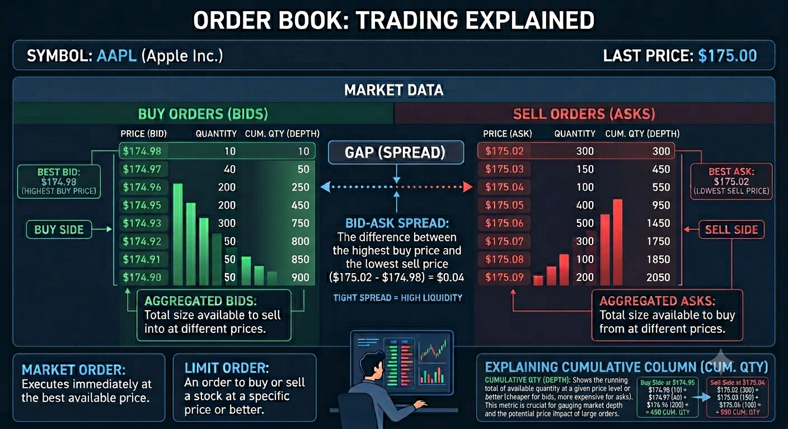
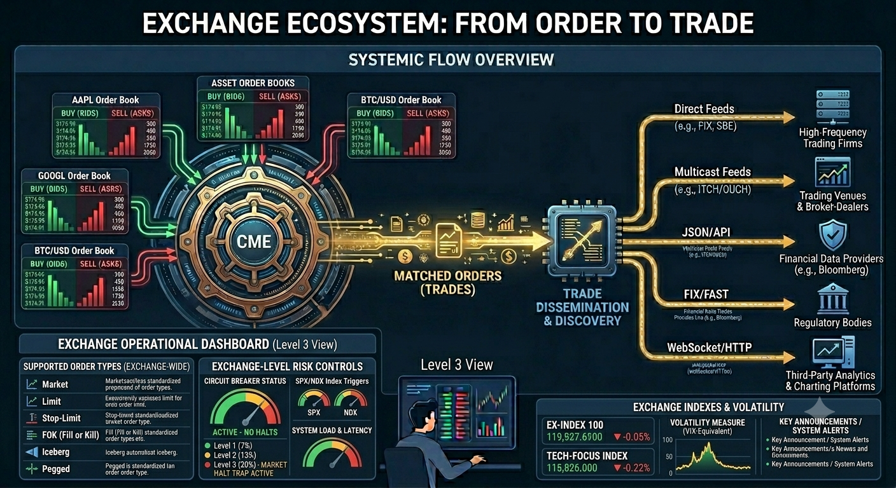

How an Exchange Works
How a Financial Exchange Works¶
A Conceptual Introduction for Software Developers
No code. No fear. Just the concepts you need to understand the system you are building.
Part I: Foundation , Markets, History, and Participants¶
Context, vocabulary, and the people that define exchange markets , the foundation you need before the mechanics make sense.
Historic Notes
In 1609, a Dutch merchant named Isaac Le Maire organised a consortium of traders to sell shares in the Dutch East India Company (VOC) that they did not yet own. The plan was to drive down the price and buy the shares back cheaply before delivery, the first recorded large-scale short selling operation in financial history. The scheme was brazen enough that the Amsterdam city council attempted to ban short selling the following year. The ban failed. Le Maire was undaunted: he had grasped something fundamental about financial markets that would take regulators centuries to fully accept. Markets are not just places where things are bought and sold. They are environments in which participants constantly probe the rules, exploit information asymmetries, and invent instruments to express views that the market has never had to handle before. The job of exchange infrastructure , the order books, the matching engines, the risk controls, and the audit trails, is to provide a fair, stable, and trustworthy arena for all of this to happen, without breaking when the participants are clever, aggressive, or occasionally reckless.
Every section of this Part can be traced, directly or indirectly, back to what was happening in Amsterdam in 1602 when the VOC issued the world's first publicly traded shares. The primary market, the secondary market, the concept of equity, the vocabulary of long and short, the role of brokers, the need for a central marketplace, it was all there, in embryonic form, four centuries ago.
Part I builds that foundation.
Part Summary:
Build the conceptual base: why exchanges exist, how capital formation connects to secondary trading, how market language evolved, and who the key participants are in modern venues.
Learning Objectives:
- Explain the economic purpose of exchanges in the broader capital-raising cycle.
- Distinguish primary vs secondary markets and debt vs equity at a practical level.
- Use core market vocabulary confidently in historical and modern context.
- Identify major participant types and their incentives in real-world exchange ecosystems.
Content:
- Before the Exchange: How Companies Raise Capital
- What Is a Financial Exchange, and Why Does It Exist?
- The Language of the Market: A Short History
- The Participants
- A Brief Tour of Real-World Exchanges
- Listing and Delisting Mechanics
Before the Exchange: How Companies Raised Capital¶
To understand why a financial exchange exists, you first need to understand why anyone bothers issuing shares in the first place. This section is a brief detour into basic corporate finance, the world your exchange is built to serve.
The Problem of Growth¶
Imagine a small software company. It has a product, a team, and paying customers, but it wants to grow: hire more engineers, open offices in new countries, and invest in research that will take three years to generate revenue. All of that costs money, far more money than the company currently earns in a month or a quarter.
Where does that money come from? There are three broad categories of answer, and real companies use all three at different stages of their lives.
Option 1: Retained Earnings (Self-Funding)¶
The simplest source of capital is the company's own profits. If the company earns more than it spends, it can save that surplus and invest it in growth. This is called retained earnings, profits "retained" in the business rather than distributed to owners.
Self-funding is attractive because it involves no outside parties and no obligations. The problem is that it is slow. If the opportunity is time-sensitive, a competitor is building the same product, or a market window is closing, waiting years to accumulate enough internal cash may mean losing the race. Most high-growth opportunities require more capital, faster, than retained earnings can provide.
Option 2: Debt, Loans and Bonds¶
The second option is to borrow money. Borrowed money must be repaid, with interest [3]. The cost of borrowing (the interest rate) depends on how creditworthy the borrower is: established, profitable companies with predictable revenues can borrow cheaply; young, risky startups may not be able to borrow at all, or only at very high interest rates.
Bank loans are the most familiar form of debt. A company borrows a sum from a bank and repays it over time. This works well for small amounts and short timeframes, but a single bank may not be willing, or able, to provide hundreds of millions of dollars to a single borrower.
Bonds solve the scale problem by spreading the borrowing across many lenders. A bond is a standardised piece of debt. A company issues a bond with a face value (say, $1,000), a coupon rate (say, 5% per year), and a maturity date (say, 10 years from now). The investor who buys the bond lends the company $1,000 today. In return, the company promises to pay $50 per year (5% of $1,000) as regular interest payments (these periodic payments are called coupons, named after the physical coupon slips investors used to cut off and redeem before the digital age), and to repay the full $1,000 when the bond matures in 10 years.
A large company might issue millions of these bonds simultaneously, raising hundreds of millions of dollars from thousands of individual investors. Those investors later need to be able to sell their bonds if they want their money back before maturity, and so bonds, just like shares, trade on exchanges and electronic markets.
The key characteristic of debt: the company has an unconditional obligation to make the promised payments. If it cannot, it is in default, which can lead to bankruptcy proceedings. Bondholders are creditors: they have a legal claim against the company's assets. In a bankruptcy, creditors get paid before the company's owners.
Option 3: Equity, Selling Ownership¶
The third option is fundamentally different in character: instead of borrowing money and promising to repay it, the company sells a piece of itself.
Equity is ownership. When a company issues shares (also called stock in American English, or equities in market terminology), it is dividing ownership of the business into small, standardised units and selling those units to investors [3]. Each unit, each share, represents a proportional claim on the company's assets, earnings, and future.
Here is the important distinction from debt: there is no promise of repayment. If you buy a share in a company, the company does not promise to give your money back. It does not promise to pay you any specific amount at any specific time. What you receive instead is ownership.
What does ownership actually mean?
-
Residual claim on profits: If the company earns a profit and its board of directors decides to distribute some of that profit to owners, shareholders receive their proportional share as a dividend. Dividends are not guaranteed, the board may decide to reinvest profits in the business instead. But shareholders are entitled to whatever is left over after all expenses and debts are paid. This "residual" or "leftover" claim is the defining characteristic of equity.
-
Capital appreciation: If the company grows and becomes more valuable, each share becomes worth more. A shareholder who paid $10 for a share and sells it when the company is worth twice as much can sell at roughly $20, realising a capital gain. The theoretical upside of an equity position is unlimited, a share can appreciate many times over (Apple has multiplied in value hundreds of times since its IPO). Compare this to a bond, where the return is capped at the promised coupon rate.
-
Voting rights: Shares typically carry the right to vote on major corporate decisions, electing the board of directors, approving mergers and acquisitions, and other significant matters. Owning 51% of the shares means controlling a majority of votes, which is why "controlling stake" is a meaningful concept.
-
Limited liability: If the company goes bankrupt, shareholders can lose the money they invested, but nothing more. They are not personally liable for the company's debts. This protection ("limited liability") is a fundamental feature of the modern corporation and one reason equity investment became widespread.
-
Market capitalisation (market cap): The total market value of all a company's outstanding shares, calculated as share price multiplied by the total number of shares in existence. If Apple has approximately 15.4 billion shares outstanding and each trades at $190, Apple's market cap is roughly $2.9 trillion [1]. Market cap is the most widely used shorthand for a company's size. When rankings refer to "the world's largest exchange by listed market cap," they are summing the market caps of every company listed there.
What does ownership mean for the company?
Issuing equity capital has an important advantage over debt: the company is not obligated to make regular payments, and there is no maturity date on which it must repay anything. This flexibility is why many high-growth companies prefer equity, they can invest in long-term projects without the burden of fixed interest payments.
The trade-off is dilution: selling shares means selling a portion of the company. The founders and early investors own a smaller fraction of the whole. If a founder owned 100% of a company worth $1 million and raises $250,000 by selling a 20% stake to new investors, the company is now worth \(1.25 million (\)1 million of existing business value plus the $250,000 cash just raised). The founder owns 80% of $1.25 million, still $1 million in absolute terms, but a smaller fraction of the whole. The investors own 20% of $1.25 million = $250,000, exactly what they paid. Managed carefully, dilution is acceptable; managed carelessly, founders can lose control of their own companies.
Common stock and preferred stock
In practice, not all shares are equal. Most retail investors hold common stock (called ordinary shares in UK and European markets), which carries voting rights and a residual claim on profits. Preferred stock (or preference shares) is a different class: typically no voting rights, but a higher-priority claim on dividends and assets in a liquidation. Preferred holders are paid before common stockholders, though still after bondholders. Venture capital investors almost always receive preferred stock in early-stage companies, giving them downside protection that common stockholders lack [3].
When a company IPOs, most preferred shares convert to common shares. For exchange system developers, the class distinction matters because instruments are classified, regulated, and referenced differently. When you see "AAPL" on an exchange, it refers specifically to Apple's common stock. Preferred shares, if listed, trade under a different ticker (typically something like "AAPL-PRA").
The Difference Between Debt and Equity¶
A useful mental model: when a company issues bonds, it is renting capital, borrowing it with the obligation to return it. When a company issues equity, it is selling a permanent stake, the investor becomes a partial owner, sharing in the future of the business.
The consequence:
| Debt (Bonds, Loans) | Equity (Shares) | |
|---|---|---|
| Relationship to company | Lender / Creditor | Owner |
| Return | Fixed interest (coupon) | Variable (dividends + capital gains) |
| Repayment obligation | Yes, principal returned at maturity | No |
| Payment priority in bankruptcy | Paid first | Paid last (residual) |
| Risk to investor | Lower (predictable return) | Higher (no guaranteed return) |
| Dilutes ownership? | No | Yes |
| Upside potential | Capped (only the promised coupons) | Unlimited (shares in a successful company grow without limit) |
A sophisticated investor builds a portfolio that mixes both: bonds for predictable income and capital preservation, equities for growth potential. The entire investment industry, pension funds, mutual funds, hedge funds, is built around managing this balance.
Going Public: The Initial Public Offering (IPO)¶
Early in a company's life, its shares are held by a small, private group: the founders, early employees (who often receive shares as part of their compensation), and venture capital (VC) investors who provided early funding in exchange for equity stakes. These shares are not available to the general public; the company is private.
At some point, usually when the company has proven its business model and needs a large infusion of capital for the next phase of growth, the company may choose to go public: to offer its shares for sale to anyone who wants to buy them. This event is called the Initial Public Offering (IPO).
In an IPO:
- The company works with investment banks to underwrite the offering. Underwriting means the banks agree to buy all the shares at a guaranteed price and immediately sell them on. This guarantee means the company receives its cash even if investor demand is weaker than expected. In practice, the banks first conduct a roadshow, a series of presentations to large institutional investors, to gauge demand and set the final price. They rarely actually get stuck holding the shares.
- New shares are created and sold, with the proceeds going directly to the company (or to early investors who are "cashing out" their stakes).
- The company's shares are listed on a stock exchange, NYSE, NASDAQ, LSE, or another regulated market.
- From that moment, anyone can buy or sell the shares through the exchange.
Some of the largest IPOs in history by proceeds raised illustrate the scale: Saudi Aramco raised $25.6 billion in its 2019 IPO on the Saudi Exchange (Tadawul) [1]; Alibaba raised $21.8 billion on NYSE in 2014 [1]; Arm Holdings raised $4.9 billion on NASDAQ in September 2023 [1]. Each of these companies brought enormous new pools of capital onto public markets.
In recent times, SpaceX's June 2026 IPO on NASDAQ (ticker: SPCX) is the largest IPO by proceeds raised in history. Priced at $135 per share, the offering implied a valuation of approximately $1.77 trillion; shares opened around $150 and closed the first trading day up roughly 19%, putting the company's market cap in the $2.1–2.2 trillion range by the close. Note that pricing a mega-IPO below $200 a share says nothing about the company's quality or size, it is purely a function of how many shares are outstanding relative to the total valuation, which the company and its underwriters can set almost arbitrarily by choosing the share count. (The historical "blue chip" usage described later in this document, where Oliver Gingold's 1923 Dow Jones column used $200 as a rough marker of a premium stock, was itself a nominal dollar figure of its era with no inflation adjustment; it was never a rule, and it says nothing about a company listing a century later.)
The Primary Market vs. the Secondary Market¶
This distinction is critical, and it is where the exchange fits in.
The primary market [3] is where new securities are created and sold for the first time. In an IPO, the company sells newly issued shares directly to investors, and the company receives the money. A bond issuance is also a primary market transaction, new bonds are created and the company receives the loan proceeds.
The secondary market [3] is where investors buy and sell securities that already exist, trading with each other rather than with the company. When you buy shares of Apple on NASDAQ today, Apple does not receive your money. The person selling you those shares receives it. Apple issued those shares long ago; they have been trading between investors ever since.
The stock exchange is among the primary venues of the secondary market. It is the most visible and regulated secondary market venue, but not the only one, OTC secondary trading, private transactions, and alternative trading systems also exist. For practical purposes in this document, when we say "the exchange," we mean a regulated, centralised lit venue; this is where the concepts of price-time priority, order books, and matching engines apply most directly.
This insight is important: the exchange does not help companies raise money directly. It helps investors trade securities they already own. But without the secondary market, the primary market would barely function. Here is why:
Who would invest in a company's IPO if they knew they could never sell their shares? Who would buy a 10-year bond if they had to hold it for exactly 10 years with no way out? The existence of a liquid secondary market, a place where you can sell whenever you want at a fair price, is what makes investors willing to commit capital to companies in the first place. The exchange provides the exit. And the availability of an exit enables entry.
The primary market and secondary market form a virtuous cycle:
- Companies raise money in the primary market because investors are willing to commit capital.
- Investors commit capital because the secondary market lets them exit when they choose.
- The secondary market functions well because many investors participate.
- Many investors participate because companies with real value list their shares there.
The stock exchange, the subject of this entire document, is the infrastructure that makes this cycle turn.
flowchart TD
CO["🏢 Company"]
PM["Primary Market\nIPO / follow-on offering\nCompany receives cash"]
EX["Stock Exchange\nSecondary Market"]
INV["Investors\nBuyers and Sellers"]
CO -- "Issues new shares" --> PM
PM -- "Shares delivered to first investors" --> INV
INV -- "Buy and sell shares\namong themselves" --> EX
EX -- "Price discovery\nand liquidity" --> INV
EX -. "No cash flows back\nto the company" .-> COA Word on Other Instruments¶
The same framework applies to other instruments:
-
Bonds trade on bond markets (some exchange-based, others over the counter) after issuance. Investors can sell their bonds before maturity, receiving the current market price rather than waiting for repayment.
-
Futures and options are not claims on existing assets at all, they are contracts about future transactions [12] [13]. Their markets have their own logic, but the exchange's role (centralised matching, price discovery, fairness) is the same.
-
Exchange-Traded Funds (ETFs) are baskets of shares (or bonds, or commodities) that themselves trade as a single share. iShares, Vanguard, and SPDR products are examples. ETFs trade on exchanges exactly like individual stocks.
-
Market indices are calculated measures of the aggregate performance of a defined basket of securities. The S&P 500 tracks 500 large US companies and is the most closely followed equity index in the world, first published in its current form by Standard & Poor's in 1957. The Dow Jones Industrial Average (DJIA), dating to 1896, tracks 30 large US companies. The NASDAQ Composite tracks all stocks listed on NASDAQ. Indices themselves are not directly tradeable, but index futures (on CME), index options (on Cboe), and index ETFs allow investors to trade the performance of a whole index with a single instrument. When a portfolio manager says "the market is up 0.8% today," they almost always mean the S&P 500. When exchange system developers build risk calculations or position monitors, index levels are frequently the benchmark against which positions are marked.
With this foundation in place, understanding what a share is, why companies issue them, and what role the exchange plays, we can now look at the mechanics of how an exchange actually operates.
What Is a Financial Exchange, and Why Does It Exist?¶
The Core Problem¶
Imagine you own 1,000 shares of a technology company (you understand now what that means: you own a tiny fraction of that company, acquired when you bought the shares from a previous owner on the secondary market) and you want to sell them. Somewhere out there, someone wants to buy exactly 1,000 shares of that same company at roughly the price you have in mind. The problem is finding each other.
Before modern exchanges existed, this "finding" problem was enormous. Stock trading happened in coffee houses, in the street ("Exchange Alley Coffeehouses"), or through networks of personal contacts. One of the first places on record was "Jonathan's Coffee House" (The Forerunner to the London Stock Exchange) founded around 1680 by Jonathan Miles, Jonathan's became the primary gathering place for stock brokers [10]. Prices were inconsistent, you might sell at one price while, moments later, someone else sold the same shares at a very different price. There was no guarantee you were getting a fair deal, and there was no way to know what "fair" even meant.
Auctions by the Candle
Garraway's Coffee House was opened by Thomas Garway and famed for being the first place in England to retail tea (in 1657). It was quickly rebuilt on a grand scale after the 1666 Great Fire. While Jonathan's focused heavily on shares, Garraway's specialised in commodities, hosting the Hudson's Bay Company's first fur auction in 1671 and later auctioning Australian wool.
Garraway's was legendary for its unique bidding system: an auctioneer would light an inch of tallow candle, and the last bid placed before the flame flickered out won the goods. Candle Auction
The golden era of the informal Exchange Alley coffeehouses came to a catastrophic halt on March 25, 1748, when a massive fire broke out in Cornhill, destroying Jonathan's, Garraway's, and nearly 100 surrounding buildings. Though both shops were eventually rebuilt, the financial markets were rapidly moving toward formal, dedicated corporate buildings, leaving the casual coffeehouse model behind.
A financial exchange solves this problem by acting as a centralised marketplace, a single place where all buyers and sellers come together, where prices are visible to everyone, and where agreed rules govern who trades with whom at what price. The NYSE was founded in 1792 under a buttonwood tree on Wall Street [10]; NASDAQ launched in 1971 as the world's first electronic stock market [10]. Both exist to solve the same fundamental problem: matching buyers with sellers fairly and efficiently.
It is worth noting that exchanges are among the most visible matching venues, but not the only ones. Over-the-counter (OTC) markets (where participants negotiate directly), Alternative Trading Systems (ATSs), Electronic Communication Networks (ECNs), and internalisers (brokers who match client orders internally against their own inventory) all also match trades. The concepts in this document apply most directly to regulated exchanges, but the same vocabulary, order book, spread, price-time priority, is used across all these venues.
The Three Promises of an Exchange¶
Every exchange makes three implicit promises to its participants:
1. Price discovery. At any moment, the current price of an asset reflects the aggregate opinion of all participants currently willing to trade it. You can look at the market and see what "fair value" is right now.
2. Liquidity. You can convert your asset into cash (or vice versa) quickly, without having to wait indefinitely for a counterparty to appear. The exchange provides the infrastructure that makes counterparties findable.
3. Fairness and transparency. The rules for who trades first and at what price are known in advance, applied consistently, and visible to all participants equally. There is no backroom dealing.
How Exchanges Are Regulated¶
Exchanges do not operate by custom alone. They are licensed and supervised by government regulators whose rules directly shape how exchange systems are designed and built.
In the United States, equity exchanges are overseen by the Securities and Exchange Commission (SEC), established by the Securities Exchange Act of 1934 in the aftermath of the 1929 crash and subsequent Great Depression. The crash and its causes deserve a sentence of context here, because they explain why the SEC's mandate is what it is.
Between 1928 and September 1929, the US stock market had doubled. Investors were buying heavily on margin, borrowing money to buy more stock than they could afford outright. When prices began to fall in October 1929, margin calls forced widespread selling. Selling drove prices lower, which triggered more margin calls, which drove more selling , the same feedback loop that automated portfolio insurance would recreate in 1987. The Dow Jones Industrial Average fell 89% from its 1929 peak to its 1932 trough. Thousands of banks failed. Millions lost their savings. The subsequent investigation found rampant stock manipulation, insider trading, misleading corporate disclosures, and conflicts of interest at every level of the market. The Securities Act of 1933 and the Securities Exchange Act of 1934 were Congress's direct response: transparency requirements, registration of securities, prohibition of fraud, and the creation of the SEC to enforce the rules. The exchange system you are building operates under the regulatory framework those 1930s laws set in motion.
Several regulations appear throughout this document and in most exchange codebases. It is worth naming them here:
-
Regulation NMS (National Market System, adopted 2005, phased in through 2007): Requires that equity orders receive the nationally best available price across all registered trading venues. This single rule is the reason the US has 16+ registered equity exchanges competing for order flow, and the reason smart order routing exists , brokers must route to wherever the best price is, not just the closest or the cheapest.
-
Regulation SHO (2005): Governs short sales, including the locate requirement (broker-dealers must verify shares can be borrowed before accepting a short sale order) and delivery obligations.
-
Market Access Rule (Rule 15c3-5, 2010): Requires broker-dealers providing market access to have pre-trade risk controls: maximum order sizes, credit limits, and kill switches. Enacted directly in response to the 2010 Flash Crash.
In Europe, the equivalent framework is MiFID II (Markets in Financial Instruments Directive II, 2018), which mandates best execution, algorithmic trading controls (including mandatory kill switch testing), trade reporting, and systematic internaliser reporting. Any exchange system intended to operate in EU markets must comply.
Understanding which regulator and which rules apply is not just a legal matter. It is an engineering specification: audit trail formats, kill switch accessibility, pre-trade check requirements, and market data publication rules are all regulatory mandates, not optional features.
The South Sea Bubble and the Bubble Act (1720)
In 1720, shares of Britain's South Sea Company rose from roughly £128 in January to nearly £1,000 by the summer, propelled by a scheme to convert government debt into company equity, before collapsing back below £200 by year-end. Parliament's response, the Bubble Act of 1720, prohibited joint-stock companies from operating without a royal charter — and modern scholarship has established the uncomfortable detail that the Act was passed in June 1720, before the crash, with the South Sea Company's own support: its purpose was less to protect investors than to suppress rival companies competing for the same speculative capital. The Act stayed on the books for over a century (repealed 1825) and materially shaped — many argue retarded — English corporate formation. It is the earliest large-scale demonstration of two themes that recur throughout this book: securities regulation is often written in the shadow of a specific crisis, and the entities lobbying for a rule are not always the ones the rule appears to protect. The subsequent parliamentary inquiry of 1721, which uncovered bribery of ministers with company stock, also produced one of history's first insider-dealing scandals on the record.
References: Ron Harris, "The Bubble Act: Its Passage and Its Effects on Business Organization," Journal of Economic History* 54(3), 1994, https://www.jstor.org/stable/2123870;
Instruments: What Is Being Traded?¶
An exchange does not trade "things" in a physical sense. It trades instruments, standardised financial contracts representing ownership or obligation. The most common are:
-
Equities (stocks): A share represents a small piece of ownership in a company. When you buy one share of Apple (ticker symbol: AAPL), you own a tiny fraction of Apple Inc. NYSE and NASDAQ are primarily equity exchanges.
-
Futures contracts: An agreement to buy or sell something (oil, gold, a stock index) at a specified price on a specified future date. CME Group is one of the world's largest futures exchanges.
-
Options: The right (but not the obligation) to buy or sell an instrument at a specific price before a specific date. Cboe is a major options exchange.
-
Foreign exchange (FX) pairs: The price of one currency expressed in another, such as EUR/USD (how many US dollars one Euro buys). FX trades largely on electronic networks rather than centralised exchanges, though the principles are similar.
An equity exchange handles each symbol (like AAPL, MSFT, or TSLA) as a separate tradeable instrument, each with its own independent order book.
The Language of the Market: A Short History¶
Before you read about participants, orders, and matching engines, it is worth pausing on something that will serve you well throughout your career working on exchange systems: much of the language you will encounter in this codebase has historical roots that no longer match the physical reality. Terms that sound arbitrary or old-fashioned are fossil words, the language of a world of wooden desks, brass bells, and paper ledgers that gradually evolved into the nanosecond world of today. Understanding where the words came from will make them stick, and will save you from wondering why a system full of cutting-edge software keeps referring to things like "the book," "the tape," and "the floor."
The Physical Book¶
Before electronic trading systems, every major exchange operated a physical trading floor, and on that floor, for every stock, there was a person responsible for maintaining order: in NYSE's terminology, this was called the specialist. The specialist's job was to act as a market maker for their assigned stocks, and to maintain, literally on paper, a record of every outstanding buy and sell order that had been submitted but not yet filled.
This record was kept in a physical ledger book. The book was divided into two columns: one for buy orders (bids) listing each buyer's offered price and quantity, and one for sell orders (asks) listing each seller's demanded price and quantity. The specialist would review the book, try to match buyers with sellers, and maintain an orderly market by quoting prices to floor brokers who came to trade.
When a broker wanted to buy shares and asked "what's the market in IBM?", the specialist would look at their book and say, for example, "fifty-five for five hundred, five hundred at fifty-five and a quarter", meaning the best available buyer was offering $55 for 500 shares, and the best available seller was asking $55.25 for 500 shares. The specialist was reading, live, from their paper book.
The physical book is gone. Every exchange in the world now maintains its order book in computer memory, with data structures designed for nanosecond access. But the name has survived completely intact. When developers and traders today say "the book," "working an order into the book," "resting in the book," or "taking from the book," they are using the exact same language that floor traders used when pointing at a physical ledger. The order book is one of the purest examples of terminology that crossed from physical to digital without losing a syllable.
Open Outcry and the Pit¶
On exchange floors like CME Group's in Chicago, trading in futures contracts was conducted through open outcry, a method where traders stood in a sunken circular area called a pit and literally shouted their bids and asks at each other, using a combination of voice and hand signals to communicate price, quantity, and direction. The noise was enormous. The system worked because the pit was small enough that everyone could hear and see everyone else.
The CME Group operated open outcry pits for decades. Some products, particularly certain agricultural and options contracts, continued in open outcry long after equity markets went fully electronic, largely because the pit handled complex, illiquid products where human negotiation had genuine advantages. CME substantially wound down its open outcry operations in 2015 [9], though some niche trading still occurs. The physical pit is where terms like "floor broker" (a broker who executes trades on the physical floor), "floor trader" (a trader who trades for their own account from the floor), and "pit committee" originated.
The terms survive in documentation, regulations, and informal industry speech even though the pits themselves are mostly silent now.
The Ticker Tape¶
Before electronic screens, prices of completed trades were published via the stock ticker, a telegraph-based machine, invented by Edward Calahan in 1867 [15] and later improved by Thomas Edison, that printed a continuous stream of abbreviated stock symbols and trade prices on a narrow paper tape. The tape moved fast (hence "ticker", the machine made a ticking sound) and the strip of paper would pile up on the floor of brokerages around the country as trades printed in real time.
Reading the tape was a skill. A tape reader was someone who could watch the continuous stream of prices and volumes and infer what institutional buyers and sellers were doing, one of the earliest forms of technical analysis. An even earlier form of market observation appears in Joseph de la Vega's Confusión de Confusiones (1688) [4], the oldest known book about stock trading, written in Amsterdam about the VOC share market, which describes participants reading order flow and inferring intent from patterns of buying and selling.
In 1878, the phone was invented. In 1929, the first electronic ticker was installed. By the 1960s, electronic displays began replacing paper. Today, the "ticker" refers to the digital price feeds streaming across screens in every trading firm, brokerage, and financial news channel, and the ticker symbol (AAPL, MSFT, GOOG) is the abbreviated code printed on the old paper tape.
When you see terms like "tick" (the minimum price movement), "tick data" (a record of every trade), or "ticker plant" (the server infrastructure that publishes market data), you are using the language of a machine that ran on telegraph cables and printed on paper strips.
The Kennedy Slide, the Lagging Tape, and the Study That Created NASDAQ (1962–71)
On 28 May 1962 the Dow fell 5.7% in a single session — the sharpest one-day drop since 1929 — in what became known as the "Kennedy Slide." Operationally, the day's defining failure was informational: trading volume so overwhelmed the ticker that the tape ran more than an hour behind actual trading, meaning investors nationwide were making decisions on prices that no longer existed. The SEC's Special Study of Securities Markets (1963), a multi-volume examination already underway when the break occurred, documented the episode and, more consequentially, dissected the over-the-counter market's opaque, telephone-based quotation system, recommending that OTC quotations be automated. The NASD's answer to that recommendation went live on 8 February 1971 as NASDAQ — initially not a matching engine at all, but an automated quotation display system, exactly what the Special Study had prescribed. The lineage is worth stating plainly: the world's first electronic stock market exists because a regulator's post-crash study concluded that stale, inaccessible price information was itself a market-structure defect. Every market-data latency requirement in Part IV is a descendant of that conclusion.
References: Kennedy Slide of 1962, Wikipedia, https://en.wikipedia.org/wiki/Kennedy_Slide_of_1962
The Language Lives in the Code¶
These historical terms are not just in trading rooms and textbooks. They are in the source code. A developer reading an exchange codebase for the first time will find:
bid_price,ask_price,spread, the physical ledger's two columns, reduced to struct fieldslot_size,tick_size, the standardisation introduced by the early commodity pitsaggressor_side, which party crossed the spread; matters for fee calculation and regulatory reportingbook.add_order(),book.cancel_order(),book.sweep(), the specialist's actions, now function callsGTC,DAY,IOC, time-in-force codes whose full names (Good-Till-Cancelled, Day, Immediate-or-Cancel) are rarely spoken, used daily in hundreds of millions of orderstape_price,last_trade_price, what the ticker printed, now a field in a trade recordlong_position,short_position, the Amsterdam merchant's grain warehouse, abstracted to a signed integer
Every time you read a function name or a variable name in exchange software that sounds like it belongs in a different century, it does. The codebase is the physical exchange, translated.
Black Monday and the Origin of Circuit Breakers¶
On 19 October 1987, US stock markets fell 22.6% in a single day, the largest single-day percentage drop in the history of the Dow Jones Industrial Average. This event, known as Black Monday, remains the most severe one-day market crash on record. A more detailed account of this is given in the Risk Controls, Protecting the Market section of Part III.
The crash was not driven by a single piece of bad news. It was amplified by automated portfolio insurance programmes, algorithmic selling strategies designed to protect institutional portfolios by automatically selling futures contracts as prices fell. As these programmes sold, prices fell further, triggering more programme selling, which pushed prices further down , a feedback loop that human traders could not interrupt. The lack of any coordinated mechanism to pause trading made the spiral self-reinforcing.
The Presidential Task Force on Market Mechanisms (the "Brady Commission"), reporting to President Reagan in January 1988, concluded that the absence of circuit breakers and coordinated pause mechanisms across markets had allowed the panic to become catastrophic. Its central recommendation was explicit: create automatic trading halts that could interrupt the feedback loop and give participants time to assess [Brady Commission Report, January 1988].
NYSE introduced the first market-wide circuit breakers in 1988 directly in response. The specific thresholds have been adjusted several times since (most recently after March 2020, when Level 1 was triggered four times in two weeks during the COVID-19 crash), but the mechanism traces directly to that January 1988 report.
This history matters for exchange system developers because circuit breakers are not bureaucratic decorations. They are the engineering response to a proven systemic failure mode: automated systems amplifying each other into a catastrophic spiral. Every halt threshold, every resumption auction, every "do not accept orders during HALTED state" condition in a matching engine exists because of what happened on 19 October 1987.
Settling Up: Settlement Periods and Why They Exist¶
The historical reason settlement took multiple days has nothing to do with technology and everything to do with physical logistics. In the era of paper stock certificates, when you sold your shares, you had to physically deliver a paper certificate to the buyer, and they had to physically deliver cash or a cheque to you. Messengers on bicycles carried these documents between brokerage firms on Wall Street. Giving everyone five business days (the original settlement period was T+5) provided time for paperwork to move across Manhattan, be checked, and be processed.
As the industry moved to dematerialisation (electronic records replacing paper certificates) and electronic funds transfer, settlement windows shrank: T+5 became T+3 in the 1990s, T+2 in 2017, and T+1 in 2024 in the US [8]. The "T+N" notation remains standard even as the N shrinks. Some markets are exploring same-day (T+0) settlement, though this requires that cash and securities be available at the exact moment of trading, a more demanding operational requirement.
The Bid, the Ask, and the Spread¶
The two most fundamental prices in any market are the bid and the ask (also called the offer in some contexts). These are ancient words in the context of markets.
Bid comes from Old English beodan, meaning to announce, command, or offer. To bid for something is to announce the price you are willing to pay. A bidder at an auction makes a bid; a trader in a market makes a bid. The word has been used in commercial contexts for over a thousand years.
Ask (or offer) is the counterpart: the price at which someone is willing to sell. Asking a price for goods is as old as commerce.
The spread is the difference between the best bid and the best ask at any moment: if the best bid is $150.30 and the best ask is $150.35, the spread is $0.05. The spread is both a measure of market quality (tight spreads mean the market is liquid and efficient; wide spreads mean it is illiquid or uncertain) and the primary source of income for market makers, who earn the spread by continuously standing ready to buy at the bid and sell at the ask.
The phrase "crossing the spread" means submitting an order aggressive enough to immediately match against a resting order. An investor who submits a buy order at $150.35 (the ask) rather than waiting at $150.30 (the bid) is crossing the spread and paying for the privilege of immediate execution. This small payment , a few cents, or a fraction of a cent in liquid markets , is the cost of immediacy, and it is the foundation of the market maker's business model.
Blue Chips, Bulls, and Bears¶
Not all inherited terminology has to do with physical infrastructure. Some comes from adjacent worlds:
Blue chip stocks are large, well-established, financially sound companies, the most prestigious tier of the equity market. The term comes from poker: in casino chips, blue has traditionally been the highest denomination. The first recorded use in finance was by Oliver Gingold at Dow Jones in 1923, who described stocks trading at $200 or more per share as "blue chip stocks." [14]
Bull market (rising prices) and bear market (falling prices) have disputed origins, but the most widely cited explanation refers to how each animal attacks: a bull thrusts its horns upward, a bear swipes its paws downward. The terms appear in financial writing as early as the 18th century. Today, a market that has fallen 20% or more from a recent peak is formally defined as a bear market; a sustained rise of 20% or more from a trough is a bull market.
Going long and going short have roots far older than stock markets. Their origin lies in the physical trade of commodities, grain, spices, metals, cloth, timber, and other durable goods, that dominated commerce for centuries before financial securities existed.
A merchant in a 17th-century Amsterdam or London trading house who had purchased a large stock of grain and was storing it in a warehouse was described as being long in grain [4]. The word captured two ideas simultaneously: first, that they possessed the goods, they owned something tangible, in their hands, in their warehouse; and second, that durable goods could be held over time. Grain kept through winter. Spices kept for years. Metal did not spoil. A merchant who was "long" in such goods had an inventory that would last a long time, goods with longevity. The root connection is direct: long as in duration, as in possession extended through time.
This is still exactly what "going long" means in modern finance: you own the asset and you are exposed to its price over time. If you buy shares of a company and hold them, you are long those shares. If the price rises, your long position profits; if it falls, it loses. Nothing about the meaning has changed, only the asset has shifted from sacks of grain in a warehouse to electronic records in a clearing house.
Going short comes from the opposite situation: a merchant who had promised to deliver goods they did not yet possess. In forward contracts, common in the grain and commodity markets of the 17th and 18th centuries, a seller would commit to deliver a quantity of goods at a future date and price. If they had sold more than their warehouse contained, they were "short" of the goods, deficient, lacking, falling short of their obligations. The same word family as "we are short of supplies," "he fell short of expectations," or "shortage." Being short meant your inventory was insufficient to cover what you had committed to deliver. You would need to go into the market and buy before the delivery date, hoping prices had fallen so you could profit on the difference.
The Dutch East India Company (VOC), founded in 1602 and traded on the Amsterdam Exchange from that same year, pioneered many instruments still in use today, transferable shares, dividend payments, and the secondary market in those shares [5] [11], and became the arena for what is likely the first recorded large-scale short selling operation in financial history: in 1609, a merchant named Isaac Le Maire organised a group of traders to sell VOC shares they did not own, betting the price would fall so they could buy them back cheaply before delivery [5]. The scheme was disruptive enough that the Amsterdam city council attempted to ban short selling the following year, the earliest known attempt to regulate the practice [5]. It did not stick; short selling has been controversial, periodically banned, and always present in markets ever since.
"Long" and "short" thus carry the physical memory of a world where trading meant moving real goods between warehouses and ships. A developer reading last_sell_price or position += signed_qty in the matching engine's clearing code is working with concepts that a 17th-century spice merchant would have recognised immediately, even if the technology would be unrecognisable to them.
Historic Notes
No episode in financial history is retold more often, or more loosely, than the Dutch tulip mania of 1636–37. The legend: a whole nation ruined, fortunes traded for single bulbs, the economy wrecked, and so on largely dissolves under archival scrutiny. Contract prices for rare bulbs did rise spectacularly through late 1636 and collapse in February 1637, but the trade was concentrated among a modest circle of merchants and craftsmen dealing in forward contracts on bulbs still in the ground, an early lesson that a derivative on an unharvestable underlying is a bet on a price, not a purchase of a thing. Archival work has found no wave of bankruptcies and no measurable damage to the Dutch economy; the most extreme prices in the popular telling trace to moralising pamphlets written after the crash, not to transaction records. The episode earns its place in this book twice over: as a genuinely early forward market discovering the hard way that contract enforceability matters (many February 1637 contracts were simply never honoured, and courts largely declined to enforce them), and as a standing reminder to check the primary record before repeating a market legend.
References:
Peter M. Garber, Famous First Bubbles: The Fundamentals of Early Manias (MIT Press, 2000),
Tulipmania: Money, Honor, and Knowledge in the Dutch Golden Age (University of Chicago Press, 2007).
The Operational Mechanics of Short Selling, Borrow and Locate¶
The historical explanation above describes the economics of short selling. The modern operational reality involves several additional steps that are invisible in the exchange's order book but fundamental to how clearing and settlement actually work.
You must borrow before you short. Before a participant can sell shares they do not own, they must first arrange to borrow those shares from someone who does own them. This is called the locate process, finding and reserving a source of borrowable shares. In the US, Regulation SHO (adopted by the SEC in 2005) mandates that broker-dealers must have a reasonable grounds to believe shares can be borrowed before accepting a short sale order. Selling short without a locate is called naked short selling and is generally illegal.
Where the borrow comes from. Shares available to borrow come primarily from long investors who hold shares in custody through a broker or prime broker. These holders consent (usually automatically through their account agreements) to their shares being lent out in exchange for a lending fee. The custodian or prime broker intermediates: they find willing lenders and lend the shares to the short seller. The short seller pays a daily lending fee (the borrow rate) while the position is open.
Borrow rates and hard-to-borrow stocks. Most large-cap, liquid stocks are "easy to borrow", borrow rates are near zero because many shares are available. Smaller, heavily-shorted, or thinly-traded stocks can be "hard to borrow", rates of 5%, 20%, or even higher per annum, applied daily. For a stock with a 50% annualised borrow rate, a short position held for one week costs roughly 1% just in borrowing costs, before considering any price movement. The difficulty of finding borrows can itself become a market signal: rising borrow rates indicate increasing short interest and limited available supply.
Short recall risk. The lender can recall their shares at any time (with short notice). If the lender sells their shares or instructs their custodian to recall the loan, the short seller must return the shares immediately, either by buying in the open market (a buy-in) or finding a new lender. In volatile markets, recalls at inopportune moments can force short sellers to cover at bad prices.
Settlement obligation. At settlement (T+1 in the US), the short seller must deliver the shares. They do not own them, they borrowed them. Their clearing position shows a negative (short) holding. The CCP ensures delivery; if the short seller fails to deliver, the failed settlement process applies.
Why this matters for exchange developers. The exchange's matching engine processes short sales exactly like any other sell order, the distinction between a short sale and a long sale is invisible at the order book level. The matching engine does not know or care whether the seller owns the shares. The borrow and locate process happens entirely outside the exchange, in the prime brokerage and custody infrastructure. However, exchange reporting systems are required to flag short sales (in the US, short sale orders must be marked "short" in the FIX message and this appears in the audit trail), and some regulatory checks at the gateway level confirm the short sale flag is present.
Wall Street¶
Wall Street is named after an actual wall, a wooden palisade built in 1653 by Dutch colonists along the northern edge of their settlement (then called New Amsterdam, now Lower Manhattan) to protect against British and Native American incursions. The wall is long gone; the street that replaced it became the financial centre of America, and now "Wall Street" is a metonym for the entire US financial industry, regardless of where the actual firms are physically located.
Why This Matters for You¶
When you encounter a term in the codebase that seems oddly concrete for a piece of software, "the book," "the tape," "the spread," "the floor price," "tick by tick", the reason it sounds physical is that it was physical. These words have been used continuously, with the same meanings, through every technological revolution the industry has undergone, because the underlying concepts remained constant even as the implementation changed completely.
This is also why you will find financial terminology resistant to renaming even when better alternatives exist. Saying "priority queue" instead of "the book" would be technically precise but professionally unintelligible. Finance is a conservative industry with deep institutional memory, and the vocabulary is part of that memory. Learning the words, and where they came from, is learning the culture.
The Participants¶
Before diving into mechanics, it helps to know who is actually in the room.
Traders and Investors¶
The broadest category of participant is anyone who buys or sells for themselves, whether they are profit-seeking or managing risk.
Retail investors are individuals trading their own money, typically through brokerage apps (Robinhood, Fidelity, Schwab, eToro). Retail orders tend to be small (a few hundred shares at most), arrive randomly throughout the day, and , critically , are considered uninformed flow by market makers, meaning they are statistically unlikely to be based on superior information about the company's near-term prospects. Retail flow is therefore profitable to serve: the spread can be captured with low adverse selection risk.
Institutional investors are organisations managing money on behalf of others: pension funds, mutual funds, hedge funds, insurance companies, sovereign wealth funds, endowments. They trade in sizes that can move markets , a pension fund rebalancing its portfolio may need to buy or sell millions of shares over days or weeks without moving the price against itself. Their orders are typically routed through execution desks that use VWAP algorithms, dark pools, and smart order routing to minimise market impact. The largest institutional investors (BlackRock manages over $10 trillion in assets [1]) have more market influence than many sovereign nations.
The distinction between retail and institutional matters for exchange designers because the two populations have different latency tolerances, different order sizes, different information sets, and different legal frameworks governing their trading. Payment for Order Flow (PFOF) exists because retail flow is genuinely more profitable to service than institutional flow, and this shapes the routing decisions of retail brokers.
In exchange terminology, when a participant submits an aggressive order that immediately executes against a resting order in the book, they are called a taker , they are "taking" liquidity that was already available. The participant whose resting order was filled is the maker (they "made" liquidity available).
High-Frequency Trading (HFT) and Proprietary Trading Firms¶
A distinct and important participant type that does not fit neatly into the retail/institutional or maker/taker classification is the high-frequency trading (HFT) firm and broader class of proprietary trading firms (often called "prop shops").
These firms trade entirely for their own account, with their own capital, using automated strategies. They do not manage client money and do not act as brokers. Well-known firms include Citadel Securities, Virtu Financial, Jane Street, Jump Trading, and IMC. Some (like Citadel Securities and Virtu) are primarily market makers; others run arbitrage and statistical arbitrage strategies.
HFT firms are estimated to account for approximately 50% of equity trading volume on US exchanges [1], and a significant portion of derivatives volume. They make markets extremely tight (narrow spreads) in liquid products because competition between HFT market makers is intense. They also create controversy: critics argue that latency arbitrage gives them an unfair structural advantage over slower participants; defenders argue that their market making activity lowers costs for everyone.
For exchange developers, HFT firms are the most technically demanding participants. Their latency requirements drive the design of co-location services, the nanosecond timestamping standards, and the deterministic processing guarantees that define high-performance matching engine architecture. When an exchange system must process millions of messages per second with microsecond response times, it is largely because HFT participants require it.
Market Makers¶
This is a concept worth understanding deeply, because it is central to how exchanges actually work in practice, and because the exchange system you are building contains a significant amount of code dedicated specifically to managing market makers.
A market maker is a professional participant who continuously quotes both a buy price and a sell price for an instrument. They are simultaneously willing to buy from anyone who wants to sell, and to sell to anyone who wants to buy. In exchange for taking on this obligation, they earn the spread, the small gap between the price they will buy at and the price they will sell at. Market makers are the reason you can usually buy or sell a stock immediately without waiting for a human counterparty to appear. Their standing orders are already in the book, waiting.
NYSE has what it calls Designated Market Makers (DMMs), specific firms assigned to each stock with obligations to maintain fair and orderly markets. Nasdaq calls them Market Makers. Eurex, the European derivatives exchange, runs a formal Market Making Programme with contractual quoting obligations. When a market maker's resting order is later filled by someone else's incoming order, the market maker is called a maker (they "made" liquidity available). The person whose order triggered the fill is the taker. Exchanges frequently give makers a fee rebate and charge takers a fee, to incentivise the provision of liquidity.
Key idea: Market makers earn the spread by continuously providing two-sided quotes, a standing bid and ask, making it possible for others to trade immediately at any time. They are not passive: their position changes with every fill, and they must manage inventory and information risk in real time. The Market Makers section of Part II examines the full operational detail: formal obligations, what happens when a quote is hit, protection mechanisms, and the software implications of supporting them.
Brokers¶
Broker itself is an old word. The word "broker" traces back to Middle English (brocour) and Anglo-Norman (abrocour), originally referring to a middleman, small trader, or wine merchant. It referred originally to a person who "broaches" (opens) a cask and sells the wine retail, an intermediary between producer and consumer. By the late medieval period it had generalised to any trade intermediary, and it has carried that meaning into finance.
A broker does not trade for their own account. They act as an intermediary: they receive orders from clients and submit them to the exchange on the client's behalf. Retail brokerages (Fidelity, Schwab, eToro) aggregate small orders from millions of individuals. Institutional brokers (Goldman Sachs, Morgan Stanley, JPMorgan) execute large block orders for institutional clients with minimum market impact.
Prime brokers are a specific tier of broker providing a package of services to sophisticated clients, primarily hedge funds: securities lending (enabling short selling), leveraged financing, consolidated clearing and custody across multiple brokers, and sometimes execution services. Without a prime broker relationship, a hedge fund could not efficiently short sell or use leverage. The major prime brokers are divisions of the large investment banks.
The Exchange Itself¶
The exchange is not a passive infrastructure provider. It is a regulated entity that enforces rules, monitors for manipulation, reports trades to regulators, and ensures the market functions fairly. In many jurisdictions, exchanges are themselves public companies listed on exchanges (NYSE's parent company, ICE, is listed on NYSE; NASDAQ lists on Nasdaq).
A significant historical shift: exchanges used to be member-owned mutuals, non-profit organisations run for the benefit of their broker-dealer members. Over the past 30 years, most major exchanges have demutualised, converting to for-profit public companies. NYSE demutualised and listed in 2006; London Stock Exchange demutualised in 2001. This shift changed the incentive structure of exchanges: they now compete for order flow and listing fees, and their technology investment decisions are driven partly by shareholder returns.
Regulators¶
Regulators are not participants in the traditional sense, they do not submit orders, but they are the most consequential stakeholders in exchange system design. Every audit trail format, kill switch requirement, pre-trade check, and trade report exists to satisfy a regulatory obligation.
In the US, the SEC oversees equity exchanges and broker-dealers. The CFTC oversees futures and derivatives exchanges. FINRA (Financial Industry Regulatory Authority) is a self-regulatory organisation that oversees broker-dealers. Exchanges themselves are also self-regulatory organisations (SROs): they have obligations to monitor their own markets and report suspicious activity.
Internationally: the FCA (Financial Conduct Authority) in the UK, ESMA (European Securities and Markets Authority) and national regulators under MiFID II in the EU, the FSA in Japan, the SFC in Hong Kong, and ASIC in Australia.
For exchange developers, the practical implication is that regulatory requirements are non-negotiable features. A matching engine that produces a legally insufficient audit trail is not a working matching engine, regardless of its throughput. Understanding which regulator and which ruleset governs a given exchange is part of the technical specification.
Note, quotes vs orders: Throughout this document, the terms "order" and "quote" are sometimes used to describe resting instructions in the book. Operationally they are different: a quote is a two-sided bid/ask pair submitted by a market maker (a single instruction generating two linked legs), while an order is a one-sided instruction submitted by any participant. A quote may internally generate one or two order records with linked identifiers; quote IDs and order IDs may differ. The Market Makers section of Part II covers this distinction in detail.
A Brief Tour of Real-World Exchanges¶
To ground these concepts in reality, here is a brief overview of the exchanges most relevant to exchange system developers.
NYSE (New York Stock Exchange)¶
Founded in 1792, NYSE is the world's largest equity exchange by market capitalisation of listed companies. Its founding is traced to the Buttonwood Agreement of 17 May 1792, when 24 stockbrokers signed a document under a buttonwood tree on Wall Street agreeing to trade securities only among themselves and at fixed commission rates [10]. This agreement established the principle of a closed, rule-governed professional market , the model that all regulated exchanges follow today.
NYSE is a hybrid market: it combines electronic order matching with Designated Market Makers (DMMs) who have responsibilities to maintain fair and orderly markets and can intervene manually in certain situations. NYSE uses price-time priority and runs opening and closing auctions. Its closing auction is among the most important pricing events in global finance, determining the official closing prices that benchmark trillions of dollars of fund performance.
Despite being the iconic "stock exchange," NYSE handles only a fraction of total US equity volume. Due to fragmentation under Reg NMS, NYSE typically accounts for roughly 20–25% of US equity volume [1]; the rest routes to NASDAQ, Cboe, and dozens of other venues. This is not a sign of weakness , it reflects the fragmented, competitive nature of modern US equity markets.
The Panic of 1792 and the Buttonwood Agreement
The Buttonwood Agreement of 17 May 1792 did not appear out of calm deliberation. Weeks earlier, New York had suffered the young republic's first financial panic: William Duer, a former Treasury official, had borrowed heavily to corner Bank of New York shares and government debt, and his failure in March 1792 set off a cascade of defaults. Alexander Hamilton's Treasury responded with open-market purchases of government securities and instructions to banks to keep lending against collateral at defined haircuts — actions economic historians have described as a remarkably modern lender-of-last-resort operation, 140 years before the term was standard. The 24 brokers who signed the Buttonwood Agreement that May were, in part, organising to restore confidence after the chaos: trading only among themselves, at a fixed minimum commission of one-quarter percent, under known rules. The document survives in the NYSE archives, two sentences long — the founding text of American self-regulated exchange trading, and a direct response to the market's first blow-up.
References: The Buttonwood Agreement, https://en.wikipedia.org/wiki/Buttonwood_Agreement
NASDAQ¶
NASDAQ launched in 1971 as the world's first fully electronic stock exchange. It is home to many of the world's largest technology companies (Apple, Microsoft, Amazon, Google). NASDAQ is a pure electronic market, no floor traders, no DMMs in the traditional sense. It pioneered the technology approach to exchange operation and drove down transaction costs dramatically.
CME Group (Chicago Mercantile Exchange)¶
CME Group is the world's largest futures exchange, operating CME, CBOT (Chicago Board of Trade), NYMEX, and COMEX. Futures contracts on everything from interest rates to agricultural commodities to weather indices trade here. CME uses the Globex electronic trading platform, which processes millions of orders per day. CME uses both price-time priority and pro-rata allocation depending on the product.
Eurex¶
Part of Deutsche Börse Group, Eurex is Europe's largest derivatives exchange, headquartered in Frankfurt. Eurex is known for its sophisticated market making programmes and its strict but fair treatment of high-frequency trading. The Eurex T7 trading system is used by multiple exchanges globally. Eurex introduced the concept of formally structured market maker obligations with MMP protection.
LSE (London Stock Exchange)¶
The LSE is one of Europe's oldest exchanges, dating to the 17th century coffee houses. It trades equities, bonds, and ETFs. The LSE uses the SETS (Stock Exchange Electronic Trading System) for liquid equities and runs opening and closing auctions. The LSE's Millennium Exchange technology platform is used by dozens of exchanges globally.
Historic Note: The Big Bang, 27 October 1986
The modern LSE is largely the product of a single day of deregulation known as the Big Bang. Until 1986, the LSE operated under a cartel-like structure inherited almost unchanged from its coffee-house origins: brokerage commissions were fixed by rule rather than set by competition, and firms were legally separated into brokers (who dealt with clients) and jobbers (who traded as principals on the floor), with outside and foreign ownership of member firms tightly restricted. On 27 October 1986, all of this changed at once: fixed commissions were abolished, the broker/jobber distinction was scrapped, non-member and foreign ownership was permitted, and open-outcry floor trading was replaced almost overnight by the screen-based SEAQ electronic quotation system. The changes were bundled together deliberately, as a negotiated settlement of a long-running restrictive-practices case brought by the UK government against the exchange, and the government wanted them delivered as a single event rather than a gradual transition. The effect was to compress a decade of gradual American-style deregulation into one day, and it is the direct reason the LSE moved from a floor-based, fixed-commission market to the electronic, competitive one described in this document.
Big Bang has an almost exact American predecessor: on 1 May 1975 ("May Day"), the SEC abolished fixed brokerage commissions on the NYSE, ending nearly two centuries of fixed-rate trading that dated back to the original 1792 Buttonwood Agreement described earlier in this chapter. Commission rates had been fixed by NYSE rule for so long that the change was existential for many old-line brokerages; it also created the discount-brokerage industry (Charles Schwab was founded the same year) and set in motion the competitive, cost-conscious order-routing dynamics, including, decades later, payment for order flow, that the Smart Order Routing section of Part IV describes in detail. May Day and Big Bang are worth holding in mind together: eleven years apart, one American and one British, both replacing a fixed-price professional cartel with open price competition, and both direct ancestors of the fee-driven, technology-mediated market structure this book describes throughout.
Reference: Big Bang 20 years on, CENTRE FOR POLICY STUDIES, https://web.archive.org/web/20211015091533/https://www.cps.org.uk/files/reports/original/111028101637-20061019EconomyBigBang20YearsOn.pdf
Euronext¶
Euronext is Europe's largest exchange group by number of listed companies, operating markets in Amsterdam, Brussels, Paris, Lisbon, Dublin, Oslo, and Milan. Originally formed in 2000 by the merger of the Paris, Amsterdam, and Brussels exchanges, it expanded significantly through subsequent acquisitions including the Milan Stock Exchange (Borsa Italiana) in 2021. Euronext uses the Optiq trading platform and operates under MiFID II. Its Amsterdam exchange is historically notable as the successor to the world's first stock exchange (the Amsterdam Exchange, 1602).
Nasdaq Stockholm (Stockholmsbörsen, STO)¶
Nasdaq Stockholm is Sweden's primary regulated securities exchange and one of the core venues in the Nordic region. The original Stockholm Stock Exchange dates to 1863, and the modern market became part of the Nasdaq group through Nasdaq's acquisition of OMX in 2008. Today, Nasdaq Stockholm operates as part of the wider Nasdaq Nordic market structure alongside Copenhagen, Helsinki, and Icelandic venues.
For exchange developers, Nasdaq Stockholm is a useful real-world reference because it combines deep local equity liquidity with a highly standardised pan-Nordic technology model. The market is fully electronic, supports auction phases (including opening and closing auctions), and runs under the same MiFID II transparency and best-execution regime as other EU venues.
The venue's best-known benchmark is the OMXS30 index, which tracks the 30 most traded shares on Nasdaq Stockholm. The exchange is the home listing venue for many major Swedish and Nordic companies, including names such as Ericsson, Volvo, Atlas Copco, and Investor AB, making it central to Nordic equity price discovery.
From an infrastructure perspective, Nasdaq Stockholm aligns with broader Nasdaq market technology standards (including INET-based matching architecture for cash equities) and interoperates with regional post-trade infrastructure such as Euroclear Sweden for securities settlement. In practical terms, this makes it a strong example of how a national exchange can preserve local market identity while operating inside a larger cross-border technology and regulatory framework.
IEX (Investors Exchange)¶
IEX launched as a dark pool in 2013 and became a registered national securities exchange in 2016. It is the exchange that popularised the speed bump: a deliberate 350-microsecond delay applied to incoming orders, designed to level the playing field between HFT latency arbitrage strategies and slower institutional investors. IEX was the subject of Michael Lewis's 2014 book Flash Boys, which brought widespread public attention to HFT and exchange structure debates.
The speed bump attracted significant institutional support from large asset managers who believed it reduced predatory latency arbitrage. However, IEX has consistently captured a relatively small share of US equity volume (typically 2–3%) [1], suggesting that the speed bump's appeal did not translate into dominant market share. Whether this reflects genuine limitations of the model or simply the difficulty of displacing entrenched incumbent exchanges remains debated in market structure circles. IEX remains disproportionately influential in regulatory discussions given its size, having prompted rule-making discussions at the SEC around speed bumps and exchange access fees.
Cboe (Chicago Board Options Exchange)¶
Cboe is the world's largest options exchange, operating Cboe, C2, BZX, BYX, EDGX, and EDGA exchanges. Cboe invented the listed options market in 1973. It calculates the VIX (Volatility Index, the "fear gauge" of the market) from options prices.
JPX (Japan Exchange Group)¶
JPX was formed in 2013 by merging the Tokyo Stock Exchange (TSE) and Osaka Securities Exchange. It is consistently one of the world's largest exchanges by market capitalisation of listed companies, generally ranked just behind NYSE and NASDAQ and close to Shanghai, though the precise ordering shifts from year to year and depends on whether Shanghai and Shenzhen are counted as one market or two, so any "top three" claim should be checked against a dated source (e.g., World Federation of Exchanges statistics) rather than treated as fixed. JPX operates on an all-electronic platform called arrowhead. Japanese markets have their own session structure, tick size rules, and circuit breaker conventions; the daily price limit system (where trading in a stock is suspended if it moves more than a set amount from the previous close) differs from the US LULD approach.
HKEX (Hong Kong Exchanges and Clearing)¶
HKEX is the primary exchange for Hong Kong-listed equities and also provides the main electronic gateway for mainland China stocks through the Shanghai-Hong Kong Stock Connect and Shenzhen-Hong Kong Stock Connect programmes. Stock Connect allows international investors to trade China A-shares (mainland China stocks) and allows mainland investors to trade Hong Kong-listed stocks through a northbound/southbound quota system, a unique regulatory and technical arrangement that requires matching engines on both sides to coordinate.
SGX (Singapore Exchange)¶
SGX is Southeast Asia's largest exchange, trading equities, derivatives, and fixed income. It is notable as a hub for Asian futures contracts, Nikkei 225 futures, MSCI Asia index futures, and iron ore contracts all trade on SGX. SGX acquired Scientific Beta (factor indices) and has invested heavily in data analytics services alongside its exchange operations.
ASX (Australian Securities Exchange)¶
ASX serves the Australian equity and derivatives markets. It became notable in the technology community for its attempt to replace its CHESS (Clearing House Electronic Subregister System) settlement platform with a blockchain-based system, a project that was eventually cancelled in 2022 after years of development, at significant cost. The cancellation is a cautionary tale for exchange technologists about the risks of replacing proven settlement infrastructure with unproven technology.
Listing and Delisting Mechanics¶
The Before the Exchange section described the IPO from the company's side: underwriters, roadshows, pricing. This section closes the loop from the exchange's side. Going public is not just a financial event, it is an application to a specific exchange, governed by that exchange's own rulebook, and staying listed is an ongoing obligation, not a one-time achievement.
Why Exchanges Compete for Listings¶
A listing is valuable to an exchange for reasons beyond the one-off listing fee. A listed company generates ongoing order flow (every share ever traded on that exchange contributes to trading revenue), market data revenue (see Market Data Economics in Part IV), and prestige that attracts further listings. This is why exchanges actively court companies before an IPO, and why the choice between, say, NYSE and NASDAQ for a marquee technology company is itself a competitive sales process, not a formality.
Initial Listing Standards¶
Every exchange publishes initial listing standards, minimum quantitative and qualitative thresholds a company must meet before its shares can begin trading. These typically combine several dimensions, and both NYSE and NASDAQ offer multiple listing tiers with different thresholds (NASDAQ's Global Select, Global Market, and Capital Market tiers, for example, from most to least stringent):
- Minimum share price: commonly a bid price of at least $4.00 at initial listing.
- Market value of publicly held shares (public float): a minimum aggregate dollar value of shares actually available for public trading, excluding insider- and affiliate-held blocks, illustratively in the tens of millions of dollars for the least stringent tiers and considerably higher for the most prestigious ones.
- Minimum number of round-lot shareholders: a floor on how widely the shares are already held, intended to ensure a genuine public market exists from day one rather than a handful of large holders.
- Corporate governance requirements: an independent board majority, an independent audit committee, and public financial disclosure obligations under the exchange's rules and the applicable securities laws.
(Exact numeric thresholds are revised periodically by each exchange and its regulator; treat the figures above as illustrative of the kind of requirement, not as current values to hardcode into any reference-data system.)
Meeting every quantitative threshold is necessary but, on some exchanges, not sufficient: as the Indexes section of Part II noted for S&P 500 committee discretion, initial listing approval can involve qualitative judgement about the business and its readiness for public markets, not a purely mechanical checklist.
Continued Listing: An Ongoing Obligation¶
Initial listing standards get most of the public attention, but continued listing standards matter more to exchange system developers, because they generate ongoing, automated compliance monitoring rather than a one-time gate. A company that met every threshold at its IPO can fall out of compliance years later if its stock price declines, its market cap shrinks, or its public float narrows.
The most common continued-listing trigger is the minimum bid price rule: if a stock's closing price stays below $1.00 for 30 consecutive trading days, the exchange issues a formal deficiency notice. The company then has a cure period, commonly 180 days, to regain compliance (ten consecutive trading days at $1.00 or above), and in some cases a further 180-day extension if it meets other listing criteria. This is the direct, practical reason struggling companies execute a reverse stock split (see the Corporate Actions section of Part IV): consolidating, say, ten existing shares into one instantly multiplies the nominal share price by ten, curing a bid-price deficiency without changing the company's actual market value by a cent. A reverse split undertaken for this reason is a compliance action, not a statement about the business, and exchange systems must handle it exactly like any other corporate action (adjusting resting orders, historical price series, and reference data) regardless of the reason behind it.
Failure to cure within the allowed window leads to involuntary delisting: the exchange begins the formal process of removing the security, the company can appeal to a listing qualifications panel, and if the delisting proceeds, the shares typically continue trading, if at all, on the OTC (over-the-counter) markets described in Part I, with materially less liquidity, visibility, and investor protection than an exchange listing provided.
Voluntary Delisting¶
Not all delistings are compliance failures. A company can voluntarily delist because it has been acquired (its shares convert to cash or acquirer stock, as described in the Corporate Actions section of Part IV), because it has been taken private (a controlling investor or management buyout removes public shares from circulation entirely), or, more rarely, because it decides the costs of public-company reporting and exchange fees no longer justify the benefits of a listing. All of these still require an orderly unwind of open orders and positions in the symbol, exactly as described in the Corporate Actions section, whether the delisting is voluntary or forced.
Alternatives to the Traditional IPO¶
The underwritten IPO described in Part I, banks buy the offering and guarantee the company its proceeds, is not the only path onto an exchange.
Direct listings. In a direct listing, a company's existing shares begin trading directly on the exchange with no new shares issued, no underwriter guarantee, and no fixed offer price set in advance by a roadshow. Instead, the opening trade is established through the exchange's opening auction mechanism (see the Opening and Closing Auction section of Part II) exactly like any other trading day's open, just with unusually intense interest and no underwriter smoothing the process. Spotify's April 2018 listing on NYSE and Slack's June 2019 listing on NYSE were the pioneering examples that established direct listings as a credible alternative for companies that do not need to raise new capital and want to avoid underwriting fees and the traditional IPO discount. Because there is no underwriter-set price to anchor expectations, the exchange's auction-price-discovery mechanism carries unusually high scrutiny on a direct listing's first trade.
SPAC mergers. A Special Purpose Acquisition Company (SPAC) is a shell company with no operating business that itself completes a conventional IPO, raising cash that is held in trust, with the explicit purpose of later merging with a private operating company to take it public. When the merger (a "de-SPAC" transaction) completes, the private company's shareholders receive shares in the (now renamed) public shell, and the target company is effectively listed without ever running its own IPO process. SPACs existed for decades as a niche structure but became a major share of total US listing activity in 2020–2021, before a wave of poor post-merger performance and increased SEC disclosure requirements sharply reduced the volume of new SPAC formations from 2022 onward. For exchange and reference-data systems, a de-SPAC transaction looks much like the symbol changes and delistings described in Corporate Actions, the shell's original ticker and CIK are typically replaced by the operating company's, but compressed into a single scheduled event that must be coordinated precisely across trading, clearing, and market data simultaneously.
Key idea: An IPO is a financial event; a listing is a continuing regulatory relationship with a specific exchange, governed by initial standards to get in and continued standards to stay in. Reverse splits, delistings, direct listings, and SPAC mergers are all variations on the same underlying reference-data and corporate-action machinery described in Part IV, the trigger differs, but the exchange-side mechanics of updating symbols, adjusting orders, and coordinating the change across every downstream system are the same.
Part II: Orders, Matching, and the Trading Day¶
How orders work, how the matching engine processes them, and how a complete trading day unfolds from open to close.
Historic Notes
In the summer of 1929, Jesse Livermore — then the most famous speculator in America began quietly selling short. He had been watching the tape for weeks, reading the continuous stream of prices and volumes that printed on the stock ticker, and he had seen something that troubled him: large blocks of stock were appearing at the top of rallies, absorbed by relentless selling pressure that the public could not see. The great bull market felt unstoppable, but the tape told a different story. Livermore increased his short positions through September and October. When the crash came in late October 1929, he made approximately $100 million, in 1929 dollars, in weeks [Reminiscences of a Stock Operator, Edwin Lefèvre, 1923].
Livermore did not know about matching engines, FIX protocols, or price-time priority. But he understood, intuitively and empirically, exactly what this entire Part formalises: that every trade is the intersection of a buyer's intent and a seller's intent, encoded in an order; that the order book is a record of unresolved intentions; that the sequence and size of fills reveals information about who is doing what; and that the rules governing when and how orders match determine the character of the market.
Part II is the technical formalisation of what Livermore read in the tape.
Part Summary:
Move from concepts to mechanics: how participant intent is encoded in order types, how matching logic enforces fairness, and how the trading session progresses from open through close.
Learning Objectives:
- Read an order ticket and understand each field's execution implications.
- Compare major order types and time-in-force instructions by risk and behavior.
- Trace how price-time priority and order book state changes produce trades.
- Describe the end-to-end lifecycle of a trade across a full trading day.
Content:
- The Order: The Fundamental Unit
- Order Types, The Vocabulary of Intent
- Time-In-Force, How Long Should the Order Live?
- The Order Book, The Exchange's Memory
- Price-Time Priority, The Fairness Rule
- Tick Sizes and Fractional Ticks
- The Matching Engine, The Heart of the Exchange
- The Life of a Trade
- Market Makers, The Providers of Liquidity
- The Opening and Closing Auction
- Trading Sessions, The Day in the Life of a Market
- Putting It All Together
- Indexes, The Market's Single Number
The Order: The Fundamental Unit¶
Everything in an exchange system revolves around the order. An order is an instruction from a participant to the exchange: "I want to buy (or sell) a certain quantity of a certain instrument, subject to certain conditions."
Every order carries several key pieces of information:
| Field | What it specifies | Notes |
|---|---|---|
| Symbol | Which instrument | "AAPL" = Apple; "ES" = E-mini S&P 500 futures. Each symbol has its own independent order book. |
| Side | BUY or SELL | Defines everything about how the order interacts with the book. |
| Quantity | How many units to trade | Typically a positive integer. The lot is the smallest unit an order can be submitted in; for US equities the matching engine will accept an order for as little as one share. Asian markets often require order sizes to be a whole multiple of a larger minimum lot, 100 or 1,000 shares. This minimum tradeable unit is a separate concept from the round lot used to define an odd lot, covered just below. |
| Price | Limit price (for limit orders) | Maximum a buyer will pay, or minimum a seller will accept. Market orders carry no price. |
| Time-In-Force | How long the order remains valid | So important it gets its own section below. |
| Arrival timestamp | When the exchange received the order | Recorded to nanosecond precision. Not just metadata , it is the tiebreaker in price-time priority. |
| Identity | Which gateway (participant) submitted it | Used for self-match prevention, kill switches, and regulatory reporting. |
Round Lots and Odd Lots¶
Most reference to "the lot" assumes a round lot, the standard trading unit for a symbol (100 shares for most US equities, though this varies by price tier and market). An order for any quantity that is not a whole multiple of the round lot size is an odd lot, for example, an order for 37 shares of a stock whose round lot is 100.
Odd lots trade normally, the matching engine has no difficulty filling them, but they have a surprising history in US market data: for decades, odd-lot orders and executions were excluded entirely from the consolidated tape and from the NBBO calculation described in the Smart Order Routing section of Part IV. The reasoning at the time was that odd lots were assumed to come from small retail investors and were not representative of the "real" market price. This had a real consequence: a stock could have an odd-lot bid or offer that was better than the displayed round-lot NBBO, and that better price would simply not appear in public quote feeds. As retail trading in high-priced stocks grew (a single share of some stocks costs more than many investors want to commit per trade), odd lots became a much larger share of total volume, and regulators revisited this exclusion. Under the SEC's 2020 market-data-infrastructure rules, odd-lot information is being phased into the consolidated data feeds. For exchange developers, the practical lesson is that "the best displayed price" and "the best price actually available" have not always been the same thing, and reference data (round lot size per symbol) drives which orders count as odd lots and are handled differently by downstream reporting and NBBO logic.
Order Types, The Vocabulary of Intent¶
The type of an order describes the conditions under which it should execute. Understanding order types is fundamental to understanding exchange system code, because the matching engine has different logic for each type.
Limit Orders¶
A limit order says: "I am willing to trade at this price or better, but no worse."
- A buy limit order at $150.30 says: "Fill me at $150.30 or cheaper, but never at $150.31 or higher."
- A sell limit order at $150.35 says: "Fill me at $150.35 or higher, but never at $150.34 or lower."
The word "limit" refers to the price limit the participant is imposing. If an incoming limit order cannot immediately find a counterparty at an acceptable price, it rests in the order book, waiting. Resting orders are also called passive orders, they are not actively seeking to trade; they are waiting to be found.
Limit orders are by far the most common order type in most markets.
Price Improvement¶
An important and often surprising behaviour: a limit order executes at the best available price, not necessarily at its own limit price. This is called price improvement.
Example: the best ask is $150.30 (someone is selling at $150.30). You submit a buy limit order at $150.40. Your order says "I am willing to pay up to $150.40" , but since the best available seller is only asking $150.30, you trade at $150.30. You receive $0.10 per share of price improvement relative to your limit. Your limit of $150.40 was the worst price you were willing to accept, not the target.
This applies in both directions: - A buy limit at $150.40 crossing a \(150.30 ask → fills at **\)150.30 (better for the buyer) - A sell limit at $150.25 crossing a \(150.30 bid → fills at **\)150.30 (better for the seller)
The limit price is a floor for sellers and a ceiling for buyers. The actual execution price is the best price available at the time, which will always be at least as good as the limit.
Price improvement matters for execution quality analysis. Regulators (SEC Rule 605) require broker-dealers to publish statistics showing how often their clients received price improvement versus the quoted price when their orders were executed. Large retail brokers like Fidelity and Charles Schwab report that a significant percentage of their retail orders receive price improvement, particularly for small orders routed to market makers who can beat the NBBO [1].
Market Orders¶
A market order says: "Fill me immediately at whatever the current market price is." There is no price constraint. The exchange executes it against the best available resting orders immediately.
Market orders maximise the probability of immediate execution, but execution is still subject to available liquidity, the current exchange state, risk controls, and regulatory protections. A market order submitted during a trading halt, against an empty book, or at a price outside a circuit-breaker band will not fill. In normal continuous trading conditions, market orders can be treated as effectively execution-guaranteed, but not price-guaranteed. Market orders are used when certainty of execution matters more than certainty of price.
The slippage danger in thin markets. If you submit a market buy for 10,000 shares but only 100 shares are available at the best ask, your order sweeps through every available seller in order of price until 10,000 shares are filled. Each level you sweep through costs you more. In an extreme case, you may end up paying dramatically more than intended, this is called market impact or slippage.
The most consequential real-world example occurred on 6 May 2010, the Flash Crash. At 2:45pm Eastern time, the E-mini S&P 500 futures contract (the most liquid futures product in the world at the time) fell approximately 6% in about five minutes, largely because a series of large market sell orders swept through a book that other participants had temporarily withdrawn from, leaving almost no resting bids. The joint SEC/CFTC investigation found that a single large sell algorithm had begun selling 75,000 E-mini contracts at market price, and as the price fell, other algorithms also began selling, creating a feedback loop. Some individual equities briefly traded at $0.01 or $100,000 during the chaos, because market orders crossed nearly empty books [SEC/CFTC Flash Crash Report, September 2010]. The circuit breaker mechanisms introduced after 2010 were specifically designed to prevent a recurrence.
Because they have no price to wait at, market orders cannot rest in the book. If they cannot immediately fill (for example, if there are no sellers at all), they are cancelled.
Stop Orders¶
A stop order sits dormant until the market price reaches a specified trigger level (the stop price). When triggered, it converts to another order type and enters the book.
- A stop-loss order is a sell stop: "If the price falls to $145, automatically sell for me." Used by investors to automatically exit a losing position and limit further losses.
- A buy stop triggers when the price rises to the stop price. Used to enter a position on upward momentum: "If the stock breaks above $155, buy it, that confirms the uptrend."
Stop orders do not sit in the regular bid/ask book, they are held in a separate dormant queue and injected into the book only when triggered. It is worth noting that stop orders are not universally supported natively at the exchange level: some exchanges handle stops internally as described here; others leave stop order logic to brokers or client-side systems, sending only the resulting limit or market order to the exchange once the trigger is reached. The exchange system you are building handles stops natively, this is a deliberate design choice.
Stop-Limit Orders¶
A stop-limit order is a stop order that, when triggered, converts to a limit order rather than a market order. This gives the trader price protection but introduces the risk of non-execution.
Example: A sell stop-limit with a stop price of $145 and a limit price of $144. When the market falls to $145, the order converts to a sell limit at $144. It will only execute at $144 or better. If the market drops sharply past $144 (a "gap"), the order sits unfilled. Compare with a plain stop order, which converts to market and fills at whatever price is available, guaranteed execution, but potentially at $140 instead of $144.
Neither is universally better; the choice depends on whether the trader prioritises execution certainty (stop-market) or price certainty (stop-limit).
Trailing Stop Orders¶
A trailing stop is a stop order with a twist: the stop price automatically adjusts as the market moves in a favourable direction, but freezes when it moves against the position.
Example: You bought shares at $150. You set a sell trailing stop with an offset (also called the trail distance) of $5.00. The stop starts at $145. If the price rises to $160, the stop rises to $155. If the price then rises to $170, the stop rises to $165. But if the price then falls back to $167, the stop freezes at $165, it cannot move down, and will trigger a sale if the price continues falling and reaches $165.
The mechanism that advances the stop in the favourable direction is called the ratchet, like a mechanical ratchet that only moves in one direction. The trail offset is stored as a fixed distance, and the ratchet advances by subtracting this offset from each new high-water-mark price.
How a Trailing Stop Actually Executes¶
This is a point of frequent confusion, so it deserves careful explanation.
The trailing stop is not a resting sell order in the book. Before it fires, it is completely invisible to the market, held in a separate dormant queue inside the matching engine, with no presence in the bid or ask side of the order book. It does not compete with other sell orders. It does not queue behind them. It simply waits, monitoring the last trade price as each fill occurs.
The question "how can a trailing stop ever execute if there is always a better sell order in the book?" contains a false premise: the trailing stop is not in the book. Other sellers at higher prices are irrelevant to it.
What happens when the stop triggers. When the last traded price falls to or below the stop price, the trailing stop converts into a market sell order and is injected into the book. A market sell order goes directly to the buy side, it matches against the best available bid. Other sell orders are completely irrelevant at this point. The market sell does not queue behind limit sells; it sweeps across to the buyers.
To make this concrete with the example above: the stop price has ratcheted up to $165. The price starts falling. At $165.50, nothing. At $165.01, nothing. At $165.00, the stop triggers. A market sell order is born and immediately matches against whatever buyer is sitting at the top of the bid queue. If the best bid is $164.95, the fill occurs at $164.95. The trailing stop has executed.
The common mental model that causes confusion. People sometimes imagine the trailing stop as a limit sell order sitting in the book at $165, waiting in the queue behind other sellers who are already there. Under that mental model, yes, it seems like it could never execute, because better-priced sellers would always be ahead of it. But that mental model is wrong. A trailing stop is a trigger and a market order, not a limit order competing for queue position.
The trade-off. Because the trailing stop fires as a market order, execution is guaranteed (assuming buyers exist) but price is not. In a fast-moving market the price may have dropped well below the stop price by the time the market order fills. This is the same gap risk that applies to all stop orders: the stop triggers at $165 but if the market is falling quickly and the best bid is $162, that is where the fill occurs.
Trailing stop logic is not universally implemented at the exchange level. On some venues it is handled client-side (the trading algorithm tracks the high-water mark and adjusts the stop price manually), on others broker-side, and on others natively within the matching engine. Wherever it is implemented, the ratchet behaviour and the dormant-then-market-order execution model are the same.
Iceberg Orders¶
An iceberg order (also called a reserve order or hidden order) is a large order that conceals most of its size. It shows only a small visible portion, the peak or tip, to other participants. When the visible portion is consumed by fills, the order automatically replenishes from its hidden reserve, showing a new peak.
Why would someone want this? If you need to buy 100,000 shares, showing the full size in the book signals your intention to the entire market. Other participants may raise their ask prices or front-run your order before you can fill it. By showing only 1,000 shares at a time, you hide your true intent and reduce your market impact.
The trade-off is queue priority: each replenishment gets a fresh timestamp and goes to the back of the queue at that price level, rather than retaining the position of the original order. The exchange's other participants can see that an iceberg is present (the order keeps replenishing at the same price), but not how large the hidden reserve is.
Iceberg orders are widely used by institutional investors and market makers on exchanges like the LSE, Euronext, and Deutsche Börse.
Hidden Liquidity, Priority Rules, and Midpoint Orders¶
Different exchanges treat hidden liquidity differently, and the rules matter for developers building order management systems.
Displayed vs hidden priority: On some exchanges, fully displayed (non-iceberg) orders at a given price level have strict priority over hidden or iceberg orders at the same price, even if the iceberg arrived earlier. The reasoning: participants who take the risk of displaying their intentions publicly should be rewarded with better queue position. On other exchanges, FIFO applies equally to hidden and displayed orders, first in, first out regardless of visibility. Knowing which rule applies on a given venue determines how institutional participants choose between iceberg and fully disclosed orders.
Reserve refresh priority: When an iceberg replenishes, a new peak appears from the hidden reserve, most exchanges treat the replenishment as a new order submission for queue purposes: it goes to the back of the queue at that price. This "back-of-queue on refresh" rule means icebergs that replenish many times lose priority relative to new participants arriving at the same price. Some venues implement partial priority preservation, but "back of queue on refresh" is the most common.
Midpoint peg orders: A midpoint peg order is an order whose price continuously tracks the current mid price (the average of the best bid and best ask). It never displays at a price, it sits invisibly, adjusting to the mid in real time. It executes only when a counterparty arrives whose order is also willing to trade at the midpoint. Midpoint peg orders are common in dark pools and supported by some lit venues, most notably IEX.
Why would any counterparty accept this when there are better-priced limit orders in the book?
This is the question that stops most people when they first encounter midpoint pegs, and the answer dismantles the confusion immediately: the midpoint is a better price than the quoted ask for a buyer, and a better price than the quoted bid for a seller. Both parties benefit compared to a standard trade at the quoted prices. There is no sacrifice involved.
Consider the numbers:
| Price | |
|---|---|
| Best bid (highest buyer) | $150.30 |
| Best ask (lowest seller) | $150.35 |
| Mid price | $150.325 |
A standard market buy fills at the ask: $150.35. A midpoint peg buy fills at the mid: $150.325. The midpoint peg buyer pays $0.025 less per share than if they had bought at the quoted ask.
A standard market sell fills at the bid: $150.30. A midpoint peg sell fills at the mid: $150.325. The midpoint peg seller receives $0.025 more per share than if they had sold at the quoted bid.
Neither party is giving anything up. Both are doing better than the quoted market price by half the spread, they are sharing the spread between them rather than each paying it in full to the market maker. This is not a compromise; it is a joint saving.
A worked example.
An institutional investor wants to buy 200,000 shares of AAPL. The book shows: - Best bid: $150.30 / 10,000 shares - Best ask: $150.35 / 10,000 shares - Mid: $150.325
Option A, aggressive market order: Fill the entire 200,000 shares by sweeping the ask side. The first 10,000 fill at $150.35, then the next level, and so on. The average fill price will be well above $150.35 due to market impact. Transaction cost: spread paid on every share, plus significant slippage.
Option B, midpoint peg in a dark pool: The buyer submits a midpoint peg buy for 200,000 shares in a dark pool. The order sits invisible, pegged at $150.325. Separately, a pension fund that wants to sell 200,000 shares submits a midpoint peg sell in the same dark pool.
The dark pool matches them: 200,000 shares trade at $150.325.
- Buyer paid $150.325 instead of $150.35, saving \(0.025 × 200,000 = **\)5,000**.
- Seller received $150.325 instead of $150.30, gaining \(0.025 × 200,000 = **\)5,000**.
- The spread of $0.05 was split equally. Total joint saving: $10,000 compared to trading at the quoted prices.
Neither party showed their intention in the lit book, avoiding the price impact of a visible 200,000-share order. Both traded at a price inside the spread. This is the proposition that makes midpoint pegs attractive.
Who uses midpoint pegs?
Midpoint pegs are primarily used by institutional investors, mutual funds, pension funds, hedge funds, who have large orders, are price-sensitive, and are not urgently time-pressured. They have enough time to wait for a natural counterparty at the midpoint. High-frequency traders and market makers generally do not use midpoint pegs because they need execution certainty, not price improvement at the cost of uncertain timing.
The trade-offs.
The critical limitation is that there is no guarantee of execution. A midpoint peg buy will only fill if a seller willing to trade at the midpoint appears. In a liquid market this may happen quickly. In a thin or one-sided market the order may wait indefinitely. If the market moves strongly against you while you wait, the price rises while you hold a midpoint peg buy, the opportunity to buy at the original mid price may have passed by the time a counterparty appears. The participant must accept that improved price comes at the cost of execution certainty.
The mid price itself also moves continuously. An institution submitting a midpoint peg at $150.325 may find the mid has moved to $150.50 by the time it fills, if the market has drifted. The pegged price tracks the mid; the participant does not control the final execution price precisely, only that it will be the mid whenever the fill occurs.
Midpoint pegs in dark pools vs lit venues.
In a dark pool, the entire book is hidden, so a midpoint peg buyer and a midpoint peg seller can find each other without either revealing their interest to the lit market. The dark pool operator runs a separate matching process against the midpoint.
On IEX (a lit exchange), midpoint pegs work slightly differently. The midpoint peg sits passively at the mid. An aggressive order, a sell order willing to accept a price at or below the mid, arrives from a participant routing to IEX. That aggressive sell is priced at or below $150.325 and matches the resting midpoint peg buy at the mid. The aggressive seller "crosses to mid" by accepting the mid price instead of demanding the full ask. They receive \(150.325, still better than the bid (\)150.30), and the midpoint peg buyer gets their fill at \(150.325 instead of paying the ask (\)150.35). IEX's speed bump (350 microseconds) is relevant here: it prevents fast-moving quotes from making the midpoint stale before the fill occurs, ensuring the mid price used in the match is genuinely current.
The developer perspective.
The matching engine must handle midpoint pegs as a separate priority queue that sits parallel to the regular price-time priority book. The mid price must be recalculated on every book update (every time the best bid or best ask changes). The midpoint peg queue must be checked against incoming orders and against each other. The fill price for a midpoint peg match is not a stored order price, it is computed dynamically at match time as (best_bid + best_ask) / 2, requiring care with rounding to the nearest valid tick. Because the sum of two tick-aligned prices is not always an even number of ticks, this rounding step has a specific, easy-to-get-wrong correct answer, worked through in full in the Tick Sizes and Fractional Ticks section below.
OCO Orders (One-Cancels-Other)¶
An OCO order is a pair of orders linked together by a rule: if either order fills (or is cancelled), the other is automatically cancelled.
Classic use case: You own shares bought at $200. You want to take profit if the price rises to $215, but also automatically cut your losses if it falls to $185. You submit: - Order A: Sell limit at $215 (take-profit) - Order B: Sell stop at $185 (stop-loss) - Linkage: these are an OCO pair
Only one of A or B will ever execute. Whichever triggers first cancels the other. This is called a bracket order, the position is "bracketed" between a profit target above and a loss limit below.
OCO orders are a standard feature of most professional trading platforms and are supported by exchanges including CME and CBOE.
Combo Orders¶
A combo order (also called a spread order or strategy order) is a single instruction to simultaneously execute orders in multiple instruments. Each component is called a leg. [12]
Example: A pairs trade, buy 100 shares of AAPL and sell 50 shares of MSFT simultaneously, treating the combined position as a single trade. The trader believes AAPL will outperform MSFT relative to each other, and wants to be exposed only to the relative difference between them, not to overall market direction.
Combo orders are critical in derivatives markets. On CME, a futures trader might simultaneously buy a March contract and sell a June contract on the same underlying, a calendar spread. Eurex offers a rich set of combination strategies for options, including straddles (buy a call and buy a put at the same strike), strangles (buy a call and buy a put at different strikes), and butterflies (three strikes, two legs long and one short in a specific ratio).
The execution challenge is leg risk: if one leg fills and the other does not, the trader is left with an unintended one-sided position. Production exchange systems handle this with sophisticated combo matching engines; simpler systems accept the leg risk explicitly.
Implied Orders and Synthetic Liquidity¶
This concept trips up almost every developer encountering derivatives exchange systems for the first time — and unlike most topics in this book, it cannot be understood from a single example. Implied matching is genuinely layered: the price arithmetic is simple, the quantity rules are less simple, the priority interactions are subtle, and the engineering consequences are severe. This chapter therefore builds in ten explicit levels. Each level introduces exactly one new idea and works it through numerically before the next level begins. If a level feels obvious, read its example anyway — the numbers accumulate, and later levels reuse them.
One promise before we begin, which the rest of the chapter will prove repeatedly: implied orders do not create liquidity from nowhere. They are a different expression of liquidity that already exists in other books. Hold on to that sentence; every level below is ultimately a demonstration of it.
Level 0: The Instruments¶
The clearest real-world home of implied orders is the futures market. A futures contract is a standardised agreement to buy or sell a fixed quantity of an underlying asset — crude oil, wheat, a stock index — at a predetermined price on a specified future delivery date. Each delivery month trades as a separate instrument with its own independent order book: January WTI crude and February WTI crude are two distinct products, each with its own buyers and sellers.
The same underlying therefore trades simultaneously in several month-dated books, and participants often want to trade the difference between two months just as much as either month outright. There are three standard motivations:
- Rolling a position. A trader long January who wants to stay long crude past January's expiry must sell January and buy February. Doing this as two separate outright trades exposes them to the market moving between the two fills.
- Relative-value trading. A trader may believe February is too expensive relative to January without having any view on the outright price of oil at all. Their desired exposure is purely the differential.
- Margin efficiency. A long-January/short-February position is largely hedged against flat-price moves in crude, so clearing houses margin the spread far more lightly than two independent outright positions. (CME publishes these inter-month margin credits explicitly in its SPAN parameters.)
The naive way to get spread exposure — submit two outright orders and hope both fill — carries leg risk: one leg fills, the other does not, and the trader is left with an unintended outright position. Exchanges solved this by listing the spread itself as a tradeable instrument.
Level 1: The Spread Instrument and Its Sign Convention¶
A calendar spread is a single listed instrument whose price is defined as the difference between two delivery months. Throughout this chapter we use the convention the major venues use for this product type:
Buying the spread means buying the near month and selling the far month, simultaneously, as one instruction. Selling the spread is the mirror image.
The sign takes a moment to internalise, so work through both cases:
| Spread price | Meaning | A spread buyer does |
|---|---|---|
| S = −$2.00 | January trades $2.00 below February | Buys Jan, sells Feb; e.g., buys Jan at $75.00 and sells Feb at $77.00 |
| S = +$0.50 | January trades $0.50 above February | Buys Jan, sells Feb; e.g., buys Jan at $76.50 and sells Feb at $76.00 |
Note something slightly counterintuitive in the first row: the spread buyer at −$2.00 pays $75 and receives $77. Buying a negative-priced spread means receiving the differential. Nothing is broken; the price is simply a signed difference, and it trades on its own tick grid like any other instrument.
Leg price assignment. When a spread trade executes, the clearing system needs a concrete price for each leg, not just their difference. The exchange assigns leg prices using a documented rule — typically anchoring one leg to that month's last trade or settlement price and deriving the other so the difference equals the spread trade price, with both legs constrained to valid outright ticks. The economics for the traders depend only on the difference; the assignment rule exists so that positions, P&L, and margin can be computed per instrument. We will meet this again at Level 8.
Level 2: The Core Identity and the Six Formulas¶
Everything in implied matching follows from rearranging one identity:
Each rearrangement says: if you know a firm price in two of the three books, you know a synthetic price in the third. Applying bid/ask logic to each rearrangement produces exactly six derived quotes. This table is the reference for the whole chapter; every worked example below is one row of it with numbers attached.
| Derived (implied) quote | Built from | Formula |
|---|---|---|
| Implied Feb ask | Jan ask + Spread bid | Jan_ask − S_bid |
| Implied Feb bid | Jan bid + Spread ask | Jan_bid − S_ask |
| Implied Jan ask | Feb ask + Spread ask | Feb_ask + S_ask |
| Implied Jan bid | Feb bid + Spread bid | Feb_bid + S_bid |
| Implied Spread ask | Jan ask + Feb bid | Jan_ask − Feb_bid |
| Implied Spread bid | Jan bid + Feb ask | Jan_bid − Feb_ask |
Two terms of art, used exactly as CME's Globex documentation uses them:
- Implied IN: an implied order created in the spread book, derived from two outright orders (the bottom two rows).
- Implied OUT: an implied order created in an outright book, derived out of a spread order plus an outright order (the top four rows).
The mnemonic: in(to the spread), out (of the spread). Be aware that informal usage in the industry is inconsistent, so when reading a venue's documentation, check its definitions rather than assuming.
Do not memorise the table. Instead, when you need a formula, ask the operational question: "Who does the synthetic counterparty trade with, on each leg, to make this price firm?" The next two levels show exactly how that question is answered.
Level 3: Implied OUT — A Complete Worked Example¶
This is the canonical case: a spread order plus an outright order jointly manufacture a quote in a book that may otherwise be completely empty.
The books before anything happens:
| Book | Side | Price | Lots | Who |
|---|---|---|---|---|
| January (outright) | Ask | $75.00 | 50 | Trader A |
| Jan/Feb Spread | Bid | −$2.00 | 30 | Trader B |
| February (outright) | — | empty | — | — |
Trader A wants to sell up to 50 January lots at \(75.00 or better. Trader B wants to buy up to 30 spreads at −\)2.00 — that is, B will buy January and sell February whenever February is at least $2.00 above January.
Answering the operational question. Could anyone, right now, firmly sell February even though the February book is empty? Yes: Trader B would. B is committed to selling February provided B simultaneously buys January $2.00 cheaper. Trader A is committed to selling January at $75.00. Chain the commitments: B can buy January at $75.00 from A, so B can sell February at \(75.00 − (−\)2.00) = $77.00. Formula row one, with numbers: Implied Feb ask = Jan_ask − S_bid = 75.00 − (−2.00) = 77.00.
Quantity is capped by the scarcer ingredient: min(50, 30) = 30 lots. Trader B can only route 30 lots of February selling through this construction, however much January is on offer.
The engine therefore publishes into the February book:
| Book | Side | Price | Lots | Source |
|---|---|---|---|---|
| February | Ask | $77.00 | 30 | Implied (A's outright + B's spread) |
Execution. Trader C submits a buy limit for 20 February at $77.00. Matching the implied quote requires three legs to fire simultaneously and atomically:
sequenceDiagram
participant C as Trader C (Feb buyer)
participant ME as Matching Engine
participant A as Trader A (Jan ask 75.00)
participant B as Trader B (Spread bid −2.00)
C->>ME: BUY 20 FEB @ 77.00
Note over ME: Implied Feb ask 77.00 × 30 identified.<br/>All legs validated, then committed atomically.
ME->>A: Leg 1 — A SELLS 20 JAN @ 75.00 to B
ME->>B: Leg 2 — B's spread order FILLS 20 @ −2.00
ME->>C: Leg 3 — B SELLS 20 FEB @ 77.00 to C
Note over ME: Three trade prints: JAN 20@75.00,<br/>SPREAD 20@−2.00, FEB 20@77.00Verify each party got exactly what their order asked for:
- A sold 20 January at $75.00 — precisely A's limit price.
- B bought 20 spreads at −$2.00: long 20 Jan at $75.00, short 20 Feb at $77.00; 75 − 77 = −2 ✓. B's margin is computed on the spread exposure, which is far smaller than two outrights.
- C bought 20 February at $77.00 — precisely C's limit price. C need never know, and on most feeds cannot know at fill time, that the counterparty was synthetic.
The books after the match:
| Book | Side | Price | Remaining lots |
|---|---|---|---|
| January (outright) | Ask | $75.00 | 30 (was 50) |
| Jan/Feb Spread | Bid | −$2.00 | 10 (was 30) |
| February (implied) | Ask | $77.00 | 10 = min(30, 10) |
Conservation accounting — the promise from the introduction, kept. Before the match, the system contained 50 committed January lots and 30 committed spread lots; the 30-lot February quote was a view of those commitments, not an addition to them. After the match, 30 January lots and 10 spread lots remain, and the implied view has shrunk accordingly. Every one of the 20 lots C bought was constructed from one of A's lots plus one of B's lots, and each was consumed exactly once.
The removal test. Cancel Trader A's January order and the implied February ask vanishes in the same event-processing cycle — there is nothing left to build it from. This is the definitive demonstration that the implied book holds no independent liquidity. Any implementation in which an implied quote can survive the cancellation of one of its ingredients is broken, and dangerously so: it is advertising a price the engine cannot honour.
Level 4: Implied IN — Two Outrights Manufacture a Spread Quote¶
Now the other direction. This time the spread book is thin and the outrights are live.
The books:
| Book | Side | Price | Lots | Who |
|---|---|---|---|---|
| January (outright) | Bid | $74.40 | 25 | Trader D |
| February (outright) | Ask | $76.60 | 40 | Trader E |
| Jan/Feb Spread | — | empty | — | — |
The operational question: could anyone firmly buy the spread right now? Buying the spread means buying January and selling February — and neither of those is immediately possible against D and E (D is a January buyer, E is a February seller). Ask the mirror question instead: could anyone firmly sell the spread? Selling the spread means selling January and buying February. Selling January is possible — hit D's bid at $74.40. Buying February is possible — lift E's ask at \(76.60. So an incoming spread seller can transact right now at 74.40 − 76.60 = **−\)2.20. The market is synthetically bidding −$2.20 for the spread:
Trader F submits a sell for 10 spreads at −$2.20. Atomic decomposition:
- Jan leg: F sells 10 January at $74.40 to Trader D.
- Feb leg: F buys 10 February at $76.60 from Trader E.
- Spread print: F sold 10 spreads at 74.40 − 76.60 = −$2.20 ✓.
D and E each received a perfectly ordinary outright fill at their own limit price; neither needs to know a spread order was the aggressor. Afterwards: Jan bid 15 lots remain, Feb ask 30 lots remain, implied spread bid −$2.20 × 15 = min(15, 30).
For completeness, the opposite synthetic quote needs the opposite ingredients: an implied spread ask requires a January ask and a February bid (Implied S_ask = Jan_ask − Feb_bid). With only D and E in the books, no implied spread ask exists — a synthetic quote exists only when every leg of its construction is individually executable.
Level 5: Quantity Rules — min(), Aggregation, and Shared Legs¶
The min() rule from Level 3 generalises, and the generalisation is where implementations start to acquire bugs.
Aggregation across contributors. Suppose a second spread bidder joins Level 3's books:
| Book | Side | Price | Lots | Who |
|---|---|---|---|---|
| January | Ask | $75.00 | 50 | Trader A |
| Spread | Bid | −$2.00 | 30 | Trader B |
| Spread | Bid | −$2.00 | 15 | Trader H |
Both spread bids combine with the same January ask to imply February asks at $77.00. The published implied quantity is not min(50,30) + min(50,15) = 45 by coincidence — it is min(50, 30+15) = 45, and the distinction matters. The January ask is a shared leg: if A's ask were only 40 lots, the correct implied quantity would be min(40, 45) = 40, even though each pairwise min would still compute 30 and 15. An implementation that computes implied quantity pairwise and sums will over-advertise whenever a leg is shared. The correct statement: the implied quantity at a price is the maximum flow that can be routed through the contributing orders simultaneously — for chains, the bottleneck leg; for aggregations sharing a leg, the shared leg caps the total.
Regeneration after partial fills. Implied quotes are recomputed, not decremented. After any fill or cancellation touching a contributing order, the engine re-derives the implied book from the current state of the real books. Level 3's post-trade table (implied 10 = min(30, 10)) is a recomputation, not "30 minus 20."
Level 6: Priority — Real Orders vs Implied Orders at the Same Price¶
Suppose the February book contains both a real resting ask and an implied ask at the same price:
| February book | Price | Lots | Source |
|---|---|---|---|
| Ask | $77.00 | 5 | Real — Trader G, resting since 09:31 |
| Ask | $77.00 | 30 | Implied (A + B, per Level 3) |
Trader C's buy for 20 at $77.00 arrives. Who fills?
The general rule on the major venues: at the same price level, direct (real) orders have priority over implied orders, regardless of when the implied quote appeared. C's fill decomposes as 5 lots from G (a plain two-party outright trade), then 15 lots via the implied construction (the three-leg atomic execution from Level 3).
The rationale mirrors the displayed-vs-hidden priority logic from the Hidden Liquidity section: a participant who committed capital directly in this book is rewarded ahead of a price that is merely a synthetic reflection of commitments elsewhere. It also has a practical engineering justification — the two-party fill is cheaper and simpler, so exhausting real liquidity first minimises the number of multi-leg atomic executions. Exchanges document the exact allocation per product (CME specifies implied participation within each product's matching algorithm), so treat "real before implied at the same price" as the strong default, and the product's rulebook as authoritative.
Level 7: Price Improvement Through Implication¶
Implication does not just fill empty books; it can beat the real book. Suppose:
| Book | Side | Price | Lots |
|---|---|---|---|
| January | Ask | $74.95 | 40 |
| Spread | Bid | −$2.00 | 25 |
| February | Ask (real) | $77.00 | 60 |
The implied February ask is 74.95 − (−2.00) = $76.95 — one tick better than the real February ask. An incoming market buy for 20 February fills at $76.95 via the implied path, and the real $77.00 seller is not touched. This is price improvement in exactly the Part II sense, delivered by cross-book arbitrage that the engine performs internally and instantly, rather than leaving a five-cent-wide inconsistency for a fast participant to harvest.
This is the deeper purpose of implied functionality: it keeps the set of related books mutually consistent. Without implication, the relationship Jan_ask − S_bid < Feb_ask is a standing free lunch for whoever notices first; with implication, the engine itself closes the gap on behalf of the resting orders.
Level 8: Second-Generation Implieds¶
Everything so far combined exactly two real orders. Some venues go further and allow an implied order to be built from a chain — most commonly, two spread orders whose middle legs cancel out.
Suppose a March book exists, along with a Feb/Mar spread (S₂ = Feb − Mar):
| Book | Side | Price | Lots |
|---|---|---|---|
| Jan/Feb Spread (S₁) | Bid | −$2.00 | 30 |
| Feb/Mar Spread (S₂) | Bid | −$1.50 | 20 |
The S₁ bidder stands ready to buy Jan and sell Feb; the S₂ bidder stands ready to buy Feb and sell Mar. Chain them and the February legs offset: jointly, the pair stands ready to buy January and sell March at (−2.00) + (−1.50) = −\(3.50**. That is an implied Jan/Mar spread bid at −\)3.50, quantity min(30, 20) = 20 — an implied quote both of whose ingredients are themselves spread orders.
When an incoming Jan/Mar seller hits it, the decomposition produces four leg positions across three participants, and the two internal February legs trade against each other at an exchange-assigned price (Level 1's leg-price-assignment rule, now doing real work: the February price is invisible in every order involved and must be manufactured consistently, on-tick, by the engine).
Why depth is limited. Each additional generation multiplies the candidate combinations: with M related instruments, first-generation implieds already require examining every adjacent pair on every book event; second generation adds chains of chains, and the recomputation cost — and the size of the atomic multi-leg commit — grows combinatorially. Venues therefore cap implication depth, typically at one or two generations, and CME's product documentation specifies per product which implied types are enabled at all. When designing an engine, the implication depth is a configuration decision with a direct latency budget attached, not a free feature.
Level 9: Tick Alignment — Where the Arithmetic Meets Reality¶
The formulas of Level 2 are exact arithmetic; real books are not. Two complications, both descendants of the Tick Sizes and Fractional Ticks chapter:
Spread ticks can differ from outright ticks. Venues sometimes list a spread on a finer tick grid than its outright legs, precisely because spreads are less volatile than outrights. The moment the grids differ, an implied outright price computed from a spread price may land off the outright grid, and an implied spread price computed from two outrights may land off the spread grid. The engine must round — and, as with midpoint pegs, the rounding direction is an economic decision (it gives the residual tick fraction to one side), must be documented, and must be implemented in exactly one authoritative function shared by matching, market data, and clearing.
Leg price assignment must land on-tick. Level 8's internally-generated February price must be a valid February tick, must keep every leg pair's difference equal to its spread trade price, and should stay inside that month's price collars. Venues publish their leg-pricing algorithms; an engine that assigns off-tick or collar-violating leg prices will produce trades that downstream systems reject — a failure mode far worse than rejecting the implied match up front.
Level 10: How Implieds Appear in Market Data¶
Participants need to know implied liquidity exists, and sophisticated participants need to know which part of a displayed quantity is implied — an implied quote can vanish for reasons invisible in this book (its far-leg ingredient was cancelled), so its firmness has a different character than a real order's. Venues answer this in one of three documented ways: publish implied quantities as a separate book alongside the real book (CME's MDP3 feed disseminates implied depth distinctly for enabled products); aggregate real and implied quantity into one displayed number; or display only the real book and let implieds surface purely at execution. A market-data consumer must know which policy the venue uses, or its book reconstruction will disagree with the venue's — a classic source of "our depth doesn't match the exchange's" support tickets.
Engineering Deep-Dive¶
With the mechanics established, the engineering challenges can be stated precisely.
Recalculation triggers and fan-out. Every order event on any instrument in a related group — add, cancel, amend, partial fill — potentially changes implied quotes in every other book of the group. One cancellation of a deep spread order can move implied prices in several outright books at once, each movement generating market data. This event fan-out means implied-enabled products have a structurally higher ratio of market-data messages to order messages, which must be budgeted in the publishing path, not discovered in production.
Atomicity. All legs of an implied match commit together or not at all. The single-threaded-per-book design from The Matching Engine chapter now shows its limits: an implied match spans multiple books, so either the related instrument group is assigned to one sequencer thread (the common production choice — the "partition by symbol" rule from Part IV becomes "partition by related instrument group"), or a cross-book commit protocol is required, with all the latency and complexity that implies.
Double-execution prevention. Trader A's January order participates simultaneously in the January book and in the implied February ask. If a direct January buyer and a February buyer arrive in adjacent events, both paths claim A's lots — and only one may win. Serialised processing within the instrument group resolves this naturally: whichever event is sequenced first consumes the lots, and the recomputation step (Level 5) shrinks or removes the implied quote before the second event is processed. Any design that evaluates implied quotes against a stale copy of the contributing books reintroduces the race.
Determinism. Implied recomputation must itself be deterministic: given the same event sequence, the same implied quotes must appear, in the same order, with the same rounding. Iterating over candidate combinations in hash-map order, or letting floating-point spread arithmetic creep in, breaks the replay guarantees the Determinism, Replay, and Persistence chapter establishes.
Testing invariants. Implied logic is an ideal target for property-based testing, because its correctness conditions are crisp global invariants rather than example-shaped assertions:
- Conservation: after any event sequence, total resting quantity per real order never goes negative and is never consumed twice.
- Firmness: every published implied quote is executable at that instant — each ingredient exists with sufficient quantity.
- Consistency: no published implied price is off-grid for its book.
- No-arbitrage closure: after quiescence, no combination within the enabled implication depth prices better than the published books (Level 7's gap is always closed).
- Removal test: cancelling any single ingredient removes or correctly shrinks every implied quote built on it, within the same event cycle.
A fuzzer generating random order flow across three related books, asserting these five properties after every event, will find more implied-matching bugs than any hand-written example suite.
Key idea: Implied orders are not free liquidity. They are the engine expressing, in one book, commitments already resting in others — so that related markets stay consistent, empty months stay tradeable, and cross-book price gaps are closed by the exchange itself rather than harvested by the fastest participant. When an implied order matches, real orders in real books are consumed, exactly once, atomically. Everything difficult about implementing implieds — shared-leg quantities, priority, tick rounding, fan-out, double-execution races — is downstream of taking that atomic, exactly-once consumption seriously.
Real-World Implementations¶
CME Globex is the reference implementation for futures: implied IN and implied OUT functionality per product, implied depth disseminated on MDP3, and per-product documentation of which implied types and generations are enabled. Eurex T7 provides equivalent functionality under the name synthetic matching for futures calendar spreads, with documented rules for synthetic price determination and leg pricing. ICE likewise operates implied pricing across its energy futures and their spread markets. The vocabulary differs per venue; the three-book mechanics of this chapter are the common core.
Self-Check Exercises¶
Answers follow; attempt each before reading on. Convention throughout: S = Near − Far.
E1. January: bid $74.20, ask $74.60. February: bid $76.10, ask $76.55. Compute the implied Jan/Feb spread bid and ask.
E2. February bid \(76.40 × 12 lots; Jan/Feb spread ask −\)1.80 × 20 lots. What implied quote do these create, at what price and quantity?
E3. In Level 3's books, Trader C instead submits a buy for 40 February at $77.00. Describe the outcome.
E4. January ask \(75.00 × 10; two spread bids at −\)2.00 of 8 and 6 lots. What implied February quantity is published at $77.00, and why is 8 + 6 = 14 the wrong answer?
E5. Jan/Feb spread ask −\(1.70; Feb/Mar spread ask −\)1.20. What second-generation implied quote do these create?
E6. A colleague's implementation decrements implied quantities on fill instead of recomputing them, "for performance." Give one concrete sequence of events where this produces a firm-looking quote the engine cannot honour.
Solutions¶
E1. Implied S_bid = Jan_bid − Feb_ask = 74.20 − 76.55 = −\(2.35**. Implied S_ask = Jan_ask − Feb_bid = 74.60 − 76.10 = **−\)1.50. (Sanity check: the implied spread market −2.35 / −1.50 is wide because it stacks both outright spreads — an incoming spread trader pays both legs' crossing costs.)
E2. This is a trap, and the trap is the point: these two orders imply nothing. Check the legs. The spread ask is a committed spread seller — sells Jan, buys Feb. For any construction involving it to be firm, its Feb-buying leg needs a resting Feb ask to lift; the only Feb order present is a bid, another buyer. No leg-complete construction exists, so no implied quote is published. Cross-check against the Level 2 table: the combination Feb_bid + S_ask appears in no row — the table pairs Feb_bid with S_bid (implied Jan bid) and Feb_ask with S_ask (implied Jan ask). If you mechanically computed 76.40 + (−1.80) = $74.60 and called it an implied Jan quote, you manufactured a price with no executable legs behind it — precisely the class of bug that testing invariant 2 ("every published implied quote is executable at that instant") exists to catch. The lesson: derive implied quotes from the operational question, never from sign-blind arithmetic.
E3. The implied ask at $77.00 is 30 lots (min(50, 30)). C fills 30 lots via the three-leg construction: A sells 30 Jan at \(75.00, B's spread fills 30 at −\)2.00 (fully consumed), C buys 30 Feb at $77.00. B's spread order is exhausted, so the implied quote is recomputed to zero and C's remaining 10 lots rest as a real February bid at $77.00 — the February book now has genuine resting liquidity for the first time. A retains 20 January lots at $75.00.
E4. Published quantity = min(10, 8 + 6) = 10. The January ask is a shared leg: both spread bids route their February selling through the same 10 January lots, so the construction can carry at most 10 lots in total. Pairwise-min-then-sum (min(10,8) + min(10,6) = 14) counts the shared leg twice and over-advertises by 4 lots — quantity the engine could not deliver if hit.
E5. Selling both spreads = (sell Jan, buy Feb) + (sell Feb, buy Mar) = sell Jan, buy Mar, with the Feb legs offsetting. Jointly they will sell the Jan/Mar spread at (−1.70) + (−1.20) = **−\(2.90**: an implied Jan/Mar spread **ask** at −\)2.90, quantity the min of the two spread quantities. The engine must additionally assign a consistent, on-tick February price for the two internal legs that cross each other.
E6. Books: Jan ask 75.00 × 20 (A); spread bid −2.00 × 20 (B) → implied Feb ask 77.00 × 20. Event 1: a direct January buyer lifts A for 15 lots. A's remaining quantity is 5, so the true implied quantity is min(5, 20) = 5. A decrement-only implementation saw no fill in the February book and still advertises 20. Event 2: a February buyer sends buy 12 at $77.00 — the engine can construct only 5 lots and must reject, partially fill against a phantom, or (worst) let the atomic commit fail midway. Recomputation on every contributing-book event is not an optimisation opportunity; it is the correctness mechanism.
Time-In-Force, How Long Should the Order Live?¶
Every order must specify how long it should remain active if not immediately filled. This is called Time-In-Force (TIF) and is a standard attribute on every order in every major exchange system.
DAY¶
The order is valid only for the current trading session. At the end of the session, it is automatically cancelled. This is the default and most common TIF.
GTC, Good-Till-Cancelled¶
The order remains active until it is completely filled or explicitly cancelled by the participant. It survives overnight, across weekends, and across holidays. This requires special handling by the exchange: GTC orders must be persisted to durable storage at the end of each session and reloaded at the start of the next.
The risk for the participant: a GTC order placed when a stock was at $100 might unexpectedly fill at a different point in the market cycle if the participant forgets about it.
GTD, Good-Till-Date¶
A variant of GTC with a specified expiry date and time. The order remains active until it is completely filled, explicitly cancelled, or the specified expiry date arrives, whichever comes first. On the expiry date the order is automatically cancelled regardless of fill status.
GTD is standard on most professional trading platforms and widely used by institutional investors who want the persistence of GTC without the open-ended risk of an order remaining active indefinitely. A fund manager expecting a news event on a specific date might place limit orders to accumulate a position and use GTD to ensure they expire automatically if not filled by the event date.
From an engineering perspective GTD behaves like GTC with an additional scheduled cancellation task: the exchange's session scheduler must track each GTD order's expiry and issue the cancellation at the right moment, even if no other event in the system triggers it.
ATO, At-The-Open¶
The order is valid only during the opening auction (the special matching procedure that establishes the first price of the day). If not filled in the opening auction, it is cancelled. On NYSE, these are sometimes called Market-At-Open (MOO) or Limit-At-Open (LOO) orders depending on whether they carry a price limit.
An important restriction: ATO orders submitted after the opening auction has concluded are rejected, the TIF cannot be satisfied after the moment it targets has passed. Some exchanges accept ATO orders throughout the pre-open period; others impose a cutoff time before the auction begins.
ATC, At-The-Close¶
Valid only during the closing auction. Extremely common among institutional investors who need to trade at or near the official closing price, many funds are benchmarked against closing prices. On NYSE, the closing auction on a typical day handles a substantial portion of the day's entire volume in the final moments of trading [See NYSE Closing Auction Dynamics, 2023].
Like ATO, ATC orders submitted after the closing auction has already run are rejected. Unlike DAY orders, ATC orders cannot accumulate position through the continuous session, they are specifically targeting the single closing price that emerges from the auction uncross.
IOC, Immediate-Or-Cancel¶
Fill as much as possible immediately; cancel any unfilled remainder instantly. Unlike a market order, an IOC can carry a limit price: "Fill whatever you can at $150.30 or better right now; cancel the rest." IOC orders never rest in the book.
FOK, Fill-Or-Kill¶
Fill the entire quantity immediately, or cancel the entire order without any partial fill. Used when partial fills are unacceptable, for instance, an arbitrage strategy that only works if the full quantity executes simultaneously across legs.
The exchange must verify available liquidity before executing any fills. In practice, the engine performs a dry-run sweep: it walks through the book checking whether the full quantity can be matched at acceptable prices, without committing any fills. Only if the full quantity is satisfiable does the engine execute the actual fills. If at any point the available depth is insufficient, including because part of the available liquidity belongs to the same participant (which SMP would cancel), the entire order is cancelled without a single fill occurring. This is more complex than a standard market order sweep: the engine must complete a full hypothetical assessment of the book before touching it.
IOC vs FOK in one sentence: IOC accepts a partial fill and cancels the rest; FOK requires a full fill or cancels entirely. Both execute immediately and neither rests in the book.
TIF Quick Reference¶
| TIF | Rests in book? | Accepts partial fill? | Valid period | Typical use case |
|---|---|---|---|---|
| DAY | Yes | Yes | Current session | Most orders; default |
| GTC | Yes | Yes | Until cancelled | Long-term limit orders |
| GTD | Yes | Yes | Until specified date | Event-driven; expires automatically |
| ATO | Opening auction only | Yes | Opening auction | Participate in the open price |
| ATC | Closing auction only | Yes | Closing auction | Benchmark to the close |
| IOC | No | Yes (partial OK) | Immediate only | Aggressive, price-limited; remainder cancelled |
| FOK | No | No (all or nothing) | Immediate only | Arbitrage, multi-leg strategies |
The Order Book, The Exchange's Memory¶
The order book (also called the limit order book or LOB) is the central data structure of a matching engine [1] [2]. It is the live record of every resting order in the market, all the buyers waiting to buy and all the sellers waiting to sell, organised by price.

Figure 1: The most important data structure in an Exchange - the book.
Key idea: The order book contains only resting orders, those waiting for a counterparty. The current "market price" is derived from the book (as the mid of best bid and ask) or from the last trade, not from a stored field.
Think of it as two sorted lists:
The bid side, all resting buy orders, sorted from the highest price (most attractive for sellers) down to the lowest. A buyer offering $150.34 is at the top of the bid side if no one else is offering more.
The ask side (also called the offer side), all resting sell orders, sorted from the lowest price (most attractive for buyers) up to the highest. A seller asking $150.35 is at the top of the ask side if no one is asking less.
What a real order book looks like. At any given moment, a simplified snapshot of the AAPL book might be:
| Bid Qty | Bid Price | Ask Price | Ask Qty | |
|---|---|---|---|---|
| 2,000 | $150.34 | ← best bid | best ask → | $150.35 | 1,500 |
| 1,500 | $150.33 | $150.36 | 2,800 | |
| 3,200 | $150.32 | $150.37 | 1,000 | |
| 800 | $150.31 | $150.38 | 4,200 |
The spread here is $150.35 − $150.34 = \(0.01. The **mid price** is (\)150.34 + $150.35) / 2 = $150.345. If a market sell order for 3,500 shares arrives, it sweeps bid size: 2,000 shares at $150.34 (exhausting that level), then 1,500 at $150.33 (also exhausting that level). The new best bid after the sweep is $150.32 with 3,200 shares remaining at that price level.
A Note on Implementation¶
It is probably safe to say that no other data structure in an exchange is as heavily optimised as the order book. A modern exchange may maintain tens of thousands of order books simultaneously (one per tradeable symbol) and process millions of operations per second across them. Shaving a microsecond (\(10^{-6}\)s) from each operation or reducing the per-order memory footprint by a few bytes can translate directly into measurable throughput and latency gains at scale. Understanding why involves looking at how software architecture is shaped by hardware constraints.
Principles of order book design¶
Constant-time best price access. The single most frequent operation is reading or modifying the best bid or best ask. Any design that requires traversal to find the top of book is immediately disqualified. Real implementations maintain direct pointers or indices to the best price level on each side, updated as levels are created or exhausted.
O(1) insertion at an existing price level. Once the correct price level is located, appending an order to the back of the queue at that level must be constant time. A doubly-linked list per price level is the classic choice: it gives O(1) append and O(1) removal by pointer (important for cancellations, which are the most common message type in modern markets).
Efficient price-level lookup. Finding the correct price level for a new limit order requires a structure keyed on price. Options include sorted arrays, red-black trees, skip lists, and direct-indexed arrays (when the price range is bounded and the tick size is fixed). Direct indexing by price offset is \(O(1)\) and is preferred when applicable, at the cost of pre-allocated memory for the entire price range.
Minimise allocations on the hot path. Dynamic memory allocation (malloc/new) is unpredictable in latency due to fragmentation and system calls. High-performance engines pre-allocate pools of order objects and price-level nodes at startup, then dispense and recycle from the pool during trading, achieving deterministic allocation latency.
Aligning software architecture with hardware¶
Modern CPUs are fast enough that raw instruction throughput is rarely the bottleneck. Instead, the limiting factor is memory access latency: an L1 cache hit takes ~1ns, an L3 hit takes ~10ns, but a main-memory fetch costs 50–100ns. A single cache miss during a match can dominate total processing time. This hardware reality drives several architectural choices:
Cache-line-friendly data layout. Order book structures are laid out so that the data accessed together during a match (the top-of-book price level, the first few orders in the queue, the quantity and price fields) resides in adjacent cache lines. This often means using arrays of structs (AoS) or structs of arrays (SoA) tuned so that the hot fields pack into 64-byte cache-line boundaries.
Hot-path fits in L3 (or even L2). Engineers measure the working set of the critical matching path, the code and data touched for every single incoming order, and ensure it fits within the processor's L2 or L3 cache. If the hot path spills to main memory on every invocation, latency degrades dramatically. This constrains both the code size (keeping the matching loop tight and branchless where possible) and the data footprint per book.
NUMA awareness. On multi-socket servers, accessing memory attached to a remote socket costs 2–3x more than local memory. Exchange engines pin each matching thread to a specific CPU core and ensure that the order books it manages reside in the same NUMA node's memory.
Branch prediction and prefetching. Critical paths are written to minimise unpredictable branches. Where future memory accesses are known (e.g. walking a price-level queue), software prefetch instructions are inserted manually so data arrives in cache before it is needed.
How real exchanges achieve speed¶
Single-threaded-per-book design. Rather than using locks to protect a shared book from concurrent access, most production exchanges assign each order book to exactly one thread (or one core). All messages for that symbol are routed through a single sequencer thread. This eliminates lock contention entirely, which is the single largest source of latency variance in concurrent systems.
Kernel bypass networking (DPDK / FPGA NICs). The operating system's network stack adds 5–15μs of latency per packet. Exchanges bypass the kernel entirely using user-space networking frameworks (like DPDK or Solarflare's OpenOnload) or offload protocol parsing to FPGA-based network cards. Messages arrive directly in user-space memory, often with hardware timestamps accurate to nanoseconds.
Busy-polling instead of interrupts. Rather than sleeping and waiting for an interrupt when no message is pending, the matching thread continuously polls the network ring buffer. This trades CPU power for lower latency: when a message arrives, processing begins within nanoseconds rather than waiting for an interrupt-to-thread-wake cycle (~2–5μs).
FPGA and ASIC acceleration. Some exchanges (and many trading firms) implement parts of the matching logic or the entire order book in FPGAs, achieving sub-microsecond matching latency. The trade-off is development complexity and reduced flexibility for protocol changes.
Huge pages and locked memory. Using 2MB or 1GB huge pages reduces TLB (Translation Lookaside Buffer) misses, which are another source of unpredictable latency. Critical memory regions are also locked (mlock) to prevent the OS from swapping them to disk.
Co-location and deterministic networking. Exchanges offer co-location services where participants place their servers in the same data centre, with equalised cable lengths to ensure fair, low-latency access. The exchange's own matching infrastructure is connected via cut-through switches with sub-microsecond forwarding latency.
The cumulative effect of these techniques is that a modern exchange can process an order, match it against resting liquidity, update the book, generate execution reports, and publish market data, all in well under 10 microseconds from the moment the network packet arrives.
The Data Structure in Detail: Three Operations, Step by Step¶
The principles above describe what properties the structure must have. This section shows how they fit together, by walking through the three operations that every order book must support, against one concrete arrangement of data structures. The goal is not to prescribe the only correct design, it is to make the abstract complexity claims ("O(1) cancel by pointer", "O(1) best-price access") tangible enough to implement.
The concrete layout. We assume the classic arrangement the previous sections described:
- Each side (bid, ask) owns a price-indexed map from price to a price-level object. For a bounded, fixed-tick instrument this map is a direct-indexed array (price offset → slot); for an unbounded one it is a balanced tree or skip list. Either way, we treat "find the level for price P" as its own step, and note its cost.
- Each price level holds a doubly-linked list of resting orders in strict time priority: head = oldest (front of queue), tail = newest (back of queue). It also caches its own
total_quantityso depth queries need not walk the list. - Each side caches a pointer to its best price level (
best_bid_level/best_ask_level), so top-of-book access never searches. - A global order-ID → order-node hash map lets a cancel or amend find the exact node in O(1) without knowing its price. Each order node stores back-pointers to its price level and its neighbours in the linked list.
Side (ASK)
├── best_ask_level ───────────────┐
├── price_map: { ▼
│ 15035 ──► PriceLevel(150.35, total=1500)
│ head► [O:501 q=1000 t=09:31:02] ◄──► [O:502 q=500 t=09:31:40] ◄tail
│ 15036 ──► PriceLevel(150.36, total=2800)
│ head► [O:503 q=2800 t=09:30:59] ◄tail
│ }
└── ...
order_index: { 501 ► node@150.35, 502 ► node@150.35, 503 ► node@150.36, ... }
Every claim of speed in the previous sections is a claim about one of the three walk-throughs that follow.
Operation 1: Insert a resting limit order¶
A limit buy for 400 shares at $150.33 arrives and does not cross the ask (we handle the crossing case as Operation 3). It must be filed at the back of the queue for its price level, creating that level if it does not yet exist.
function insert_resting(order): # order: {id, side, price, qty, ts}
level = side(order.side).price_map.find(order.price)
if level is null:
level = pool.acquire_level(order.price) # from pre-allocated pool, no malloc
side(order.side).price_map.insert(order.price, level)
update_best_pointer_on_insert(order.side, level) # see note below
node = pool.acquire_node(order) # from pre-allocated pool
list_append_tail(level, node) # O(1): level.tail.next = node; ...
level.total_quantity += order.qty # keep cached depth correct
order_index[order.id] = node # O(1) handle for later cancel/amend
publish_market_data_add(order.price, order.qty)
Cost analysis, tying back to the design principles:
price_map.find/insertis the only step whose cost depends on the price-map choice: O(1) for a direct-indexed array, O(log n) for a tree. Everything else is strictly O(1).list_append_tailis O(1) because the level caches its tail pointer, this is why time priority (append at back) is cheap while price improvement (a new best level) is handled purely by the best-pointer update.update_best_pointer_on_insertcompares the new level's price to the current best on that side and, for a buy, replacesbest_bid_levelonly if the new price is higher (for a sell, only if lower). This is the entire cost of a new order improving the top of book, one comparison, no search.- Both
acquire_levelandacquire_nodecome from startup-allocated pools, honouring "no allocation on the hot path."
Operation 2: Cancel a resting order¶
Cancellation is the most common message type in modern markets, so it must be the cheapest. This is exactly what the order-ID index and the doubly-linked list buy us:
function cancel(order_id):
node = order_index.get(order_id)
if node is null: return REJECT_UNKNOWN_ORDER # already filled/cancelled
level = node.level
list_unlink(node) # O(1): node.prev.next = node.next; node.next.prev = node.prev
level.total_quantity -= node.qty
order_index.remove(order_id)
publish_market_data_delete(level.price, node.qty)
if list_is_empty(level):
side(node.side).price_map.remove(level.price)
if side(node.side).best_pointer == level:
recompute_best_pointer(node.side) # only when the *best* level empties
pool.release_level(level)
pool.release_node(node)
The critical detail is list_unlink: because the list is doubly linked and the node holds pointers to both neighbours, removal is a couple of pointer writes with no traversal, regardless of where in the queue the order sat. A singly-linked list would force an O(queue-length) walk to find the predecessor, which is why the doubly-linked list is not a stylistic preference but a requirement. Note also that recompute_best_pointer, potentially the most expensive step, runs only when the level that emptied was itself the best on its side; a cancel deep in the book never touches the best pointer.
Operation 3: An aggressive order sweeps the book¶
Now the case that generates trades. A market (or marketable-limit) buy for 3,500 shares arrives against the ask side. It must consume resting liquidity from best price outward, in time priority within each level, until filled or until it runs out of book (or, for a limit, out of acceptable price).
function match_aggressive_buy(incoming): # incoming: {qty, limit_price or ∞ for market}
while incoming.qty > 0:
level = ask_side.best_ask_level
if level is null: break # book exhausted on this side
if incoming.limit_price < level.price: break # limit no longer marketable
node = level.head # oldest order first: time priority
while node is not null and incoming.qty > 0:
traded = min(incoming.qty, node.qty)
emit_trade(buyer=incoming, seller=node, price=level.price, qty=traded)
incoming.qty -= traded
node.qty -= traded
level.total_quantity -= traded
if node.qty == 0: # resting order fully filled
next_node = node.next
list_unlink(node)
order_index.remove(node.id)
pool.release_node(node)
node = next_node
else:
node = node # partial fill of resting order; sweep stops here
break
if list_is_empty(level):
ask_side.price_map.remove(level.price)
pool.release_level(level)
recompute_best_pointer(ASK) # advance to next-best level
if incoming.qty > 0 and incoming.is_limit:
insert_resting(incoming) # unfilled remainder rests (Operation 1)
Trace it against the book from the start of this chapter, best ask $150.35 × 1,500, next $150.36 × 2,800:
level= $150.35.traded = min(3500, 1500) = 1500. Trade printed at $150.35. Incoming now needs 2,000; the level empties, is released, best pointer advances.level= $150.36.traded = min(2000, 2800) = 2000. Trade printed at $150.36. Incoming is filled. The $150.36 level keeps 800 shares and becomes the new best ask.
Two properties of this loop are worth making explicit because both were asserted earlier in the chapter without proof:
- Every fill in a sweep can print at a different price (here $150.35 then $150.36). The single-price rule is a property of auctions (covered later), never of continuous sweeps, this loop is precisely where "market impact" and "slippage" come from.
- The inner loop preserves time priority: it always starts at
level.head, the oldest order, and a partial fill of a resting order (node.qty > 0after trading) stops the sweep, because if the incoming order could not consume even the front order at this level, it certainly cannot reach the orders behind it. The remaining incoming quantity then either rests (limit) or is done (market).
Key idea: The three operations, insert, cancel, sweep, are the entire contract of an order book, and each one's cost is dominated by a single step: the price-map lookup on insert, the pointer unlink on cancel, and the level-by-level walk on sweep. Every optimisation in the preceding sections (best-price pointers, doubly-linked queues, the order-ID index, pooled allocation) exists to make exactly one of those steps constant time. If you can implement these three functions with the costs annotated above, you have implemented the core of a matching engine; everything else is order types, risk checks, and protocol.
A note on determinism¶
Nothing in the three functions above reads a clock, consults a random source, or depends on iteration order of a hash map during matching (the order_index is used only for direct point lookups, never iterated during a match). This is deliberate, and it is what makes the engine replayable in the sense the Determinism, Replay, and Persistence chapter requires: given the same book state and the same ordered input, these functions produce identical trades in identical order. Introducing, say, a map whose iteration order varies between runs, or reading wall-clock time to break a tie, would silently destroy that guarantee.
The Spread¶
The spread is the gap between the best bid (highest buy offer) and the best ask (lowest sell offer). If the best bid is $150.30 and the best ask is $150.35, the spread is $0.05.
The spread represents the immediate cost of trading: if you need to buy right now, you pay the ask price; if you need to sell right now, you receive the bid price. The round-trip cost of buying and immediately selling is the spread.
A tight spread (small gap) indicates a liquid, efficiently-priced market. A wide spread indicates illiquidity, less competition between market participants, higher trading costs. Market makers earn the spread: they buy at the bid and sell at the ask, pocketing the difference.
The mid price is the arithmetic average of the best bid and best ask: (150.30 + 150.35) / 2 = $150.325. This is often used as the "current price" of an instrument when no trade has occurred recently.
Depth¶
Depth refers to how much quantity is resting at each price level. A market with 50,000 shares resting within $0.05 of the best bid is "deep", you can trade a large size without moving the price much. A market with only 100 shares available near the best price is "shallow", a single large order will sweep through multiple price levels.
Level 1 data shows only the best bid price, best ask price, and quantities. Level 2 data (also called market depth or the full order book) shows all resting price levels. Professional traders subscribe to Level 2 data because depth reveals information about near-term price pressure.
Measuring Depth¶
Depth is not a single number, it is a shape. Practitioners and algorithms use several derived measures to quantify it for different purposes.
Quantity at a price level. The simplest measure: the total resting quantity at a single specific price. If there are three sell orders at $150.35 for 200, 500, and 300 shares respectively, the quantity at $150.35 is 1,000 shares. This is what Level 2 data shows at each row. (Note that this is exactly the level.total_quantity field the implementation above maintains incrementally, precisely so this query never walks the queue.)
Cumulative depth within N ticks. More useful than a single level is knowing how much total quantity is available within a price range. If AAPL has a best ask of $150.35 and you sum all resting ask quantities from $150.35 to $150.45 (10 ticks), you get the total shares you could buy while moving the price at most 10 cents. A large cumulative depth within a few ticks indicates a resilient, liquid market; a small cumulative depth means a single large order will sweep many levels quickly.
Bid-ask imbalance (depth ratio). Compare the total resting quantity on the bid side to the total on the ask side, within some symmetric window around the mid price:
A value of 0.5 means the book is balanced, roughly equal buying and selling interest. A value near 1.0 means the bid side is much heavier: many buyers, few sellers. This is often interpreted as short-term upward price pressure. A value near 0.0 means the ask side is dominant: selling pressure. Market microstructure research consistently finds that order book imbalance is a short-term predictor of price direction. Many trading algorithms compute it as a continuous signal.
Market impact estimation. Given a target order size S, you can compute the average price you would pay by sweeping through the book level by level. If you want to buy 5,000 shares and the book is:
| Ask price | Qty |
|---|---|
| $150.35 | 2,000 |
| $150.40 | 1,500 |
| $150.45 | 2,000 |
Your 5,000-share buy sweeps all three levels: 2,000 at $150.35, 1,500 at $150.40, 1,500 at $150.45. The volume-weighted average price is:
The market impact is the difference between this average and the initial best ask: $150.395 − $150.35 = $0.045 per share. Depth data lets a trader estimate their market impact before submitting, which is critical for execution strategy: split into smaller orders, use an iceberg, route to a dark pool, or simply accept the impact if time pressure is high. (This calculation is Operation 3 above, run as a read-only simulation against a copy of the book, rather than an actual match.)
Available depth at cost. The inverse of the above: given a maximum acceptable average price (or maximum price movement), how large an order can you execute within that budget? This is how automated execution algorithms compute optimal slice sizes.
Volume-at-touch vs total book depth. A useful distinction: volume at touch is only the best bid and ask (Level 1). Total book depth includes all visible levels. An iceberg order contributes only its visible peak to displayed depth, so total book depth may understate available liquidity if icebergs are present. This is why dark pool liquidity (invisible until matched) and iceberg reserves (invisible until refreshed) are relevant even to participants who believe they can read the full book.
Price Levels¶
A price level is a single specific price at which one or more orders are resting. All orders at $150.30 form one price level on the bid side. When all orders at a given price level have been filled or cancelled, that price level disappears from the book. (In the implementation above, this is the pool.release_level step, and it is also the moment the best pointer may need to advance.)
The Order Book Is Not the Market Price¶
This is a subtle but important point: the order book shows only resting orders, orders that have not yet traded. The current market price, as quoted in news tickers and trading apps, is typically the price of the most recent actual trade, not the price of any resting order. After a trade happens, the market price updates. Between trades, the price is conventionally shown as the mid of the book.
This means there are actually several distinct "prices" in play at any moment, each used for a different purpose:
Last trade price. The price at which the most recent fill occurred. This is what scrolling tickers and trading screens display as the "current price" during the session. It updates with every fill, potentially many times per second in a liquid market.
Mid price. The average of the best bid and best ask: (best_bid + best_ask) / 2. Used as a proxy for fair value between trades, particularly when no trade has occurred for a while. Derived from the book, not from any actual transaction.
Previous day's closing price. Once the session ends, the official closing price from the closing auction becomes the reference price for the entire period the market is closed, typically overnight and across weekends. This is the price used to value portfolios at end of day, to calculate overnight P&L, to set the reference for the next day's static price collars, and to publish the figures that appear in newspapers, financial reports, and fund valuations.
Closing Auction and Static Price Collar
Two terms in that paragraph will be unfamiliar at this point in the document, so a brief preview is warranted.
The closing auction is a special matching procedure that runs at the end of the trading day: rather than matching orders one at a time as they arrive, the exchange collects all outstanding buy and sell interest over a short accumulation period and then computes the single price at which the greatest number of shares can trade simultaneously, matching all eligible orders at that one price. This produces a more authoritative closing price than simply taking the last trade of continuous trading, which might have been a small or unusual transaction. The closing auction is covered in full in the Opening and Closing Auction section of Part II.
A static price collar (also called a fat-finger filter) is a pre-trade risk control that rejects any incoming order whose submitted price strays too far from the previous closing price, protecting against obvious entry errors such as a misplaced decimal point. Because it uses the closing price as its benchmark, it must be recalculated at the start of each new session. Static price collars are covered in full in the Trading Sessions section of Part II.
The closing price carries particular weight precisely because it is independently determined by a transparent auction process rather than by a single trade that could be anomalous or thin. A portfolio worth $10 million at 3:59pm might be marked at a slightly different value at 4:00pm if the closing auction produced a different price, but that closing price is considered more authoritative because it reflects the broadest simultaneous expression of supply and demand at that moment of the day.
For exchange developers, the closing price has several concrete implications. It is the reference that the static price collar compares each new day's orders against. It is the benchmark that performance reports are measured against. It is the number that triggers overnight margin calls if positions have moved far enough. And it is the price that must be persisted at end of session, broadcast to all downstream systems, and made available when the exchange reopens the following morning.
What the World Sees vs What the Engine Knows¶
Most market participants see only an aggregated view of the book: total quantity at each price level, without knowing how many individual orders make up that quantity or who placed them. The exchange itself knows the full detail, every individual order, its owner, its arrival time, its type. Publishing the aggregated view is part of the exchange's market data service; it's how participants observe the market. (The engine's private, per-order detail is exactly the doubly-linked queue of nodes from the implementation section; the public aggregated view is the total_quantity per level. The two are kept consistent by updating the cached total on every insert, cancel, and fill.)
Price-Time Priority, The Fairness Rule¶
One of the most fundamental questions an exchange must answer is: when multiple resting orders are at the same price, which one gets filled first?
The universal answer on mainstream exchanges is price-time priority:
-
Better price goes first. A buyer offering $150.40 gets priority over a buyer offering $150.30, because the seller gets a better deal. A seller asking $150.25 gets priority over a seller asking $150.35.
-
At the same price, earlier arrival goes first. Among all buy orders at $150.30, the one that arrived first gets filled first. This is first-in, first-out (FIFO) ordering within a price level.
This seems simple, but it has profound implications. It means:
- Participants are incentivised to quote good prices, better prices move you to the front of the queue.
- Participants are incentivised to act quickly, at any given price, being early is an advantage.
- It is completely transparent and deterministic, the exchange's matching rules are known in advance, equally to everyone.
Price-time priority is the default on NYSE, NASDAQ, CME, Eurex, LSE, and virtually every major exchange [1]. Price-time FIFO is dominant in equities markets, but derivatives markets sometimes use alternative allocation rules. The most common alternative is pro-rata, where fills at a price level are distributed proportionally to the size of each resting order. To make the difference concrete:
Example: 60 lots are available to sell at a price. Two buy orders are resting at that price: Order X for 100 lots (arrived first) and Order Y for 40 lots (arrived second).
- Under FIFO: Order X arrived first and has priority. It receives all 60 lots. Order Y receives nothing.
- Under pro-rata: The 60 lots are distributed in proportion to order size. Total resting demand = 100 + 40 = 140 lots. Order X receives 60 × (100/140) ≈ 43 lots; Order Y receives 60 × (40/140) ≈ 17 lots. Both orders fill partially.
Pro-rata rewards size over speed: a large order gets more even if it arrived later. It is common in interest-rate futures markets (where orders can be very large and the marginal value of nanosecond speed is lower) and in some options markets. CME Group uses pro-rata allocation for its SOFR (Secured Overnight Financing Rate) futures and US Treasury futures, while using FIFO for its equity index futures (E-mini S&P 500, E-mini Nasdaq 100) [CME Group Matching Algorithm Guide, 2023]. Knowing which rule a venue uses matters enormously for anyone building order-routing or execution logic: an HFT firm optimising for FIFO markets (be first) must use entirely different strategies than one optimising for pro-rata markets (be large).
For the exchange to implement price-time priority correctly, two things must be true: prices must be comparable without ambiguity (hence integer tick counts), and order arrival must be sequenced deterministically. Modern exchange systems use nanosecond-precision timestamps as one component of this sequencing. However, the timestamp alone does not fully guarantee fairness, what matters is the order in which messages are accepted into the exchange system, which also depends on network routing, gateway sequencing, and in high-performance systems, hardware timestamping infrastructure. The timestamp records when the exchange received the order; the sequencing infrastructure ensures that two orders arriving within the same nanosecond are ordered consistently and reproducibly.
How Order Amendments Affect Priority¶
Orders do not always stay unchanged from submission to fill. Participants modify their orders, adjusting price, changing quantity, or occasionally altering other attributes. The question of how an amendment affects queue priority is important, and the rules are consistent across almost all major exchanges.
The guiding principle: priority is earned by making a commitment at a specific price at a specific moment in time. When that commitment changes in a way that is beneficial to the participant at the expense of others in the queue, the priority is lost. When the change is a concession, giving up something, priority is retained.
Applied to the three common amendment types:
Price change → priority is lost. If a resting buy order at $150.30 is amended to $150.35, it receives a new timestamp and goes to the back of the queue at $150.35. The logic is straightforward: the order at $150.30 was competing for queue position against others who committed to $150.35 earlier. If it could simply "upgrade" its price while retaining the earlier timestamp, it would jump ahead of participants who made the $150.35 commitment first, which is unfair to them.
Example: At 10:00:00.000 you submit a buy limit at $150.30 and join the queue behind five other orders at that price. At 10:00:05.000 the market is moving and you amend your price up to $150.31. Your order now has a new timestamp of 10:00:05.000 and goes to the back of the queue at $150.31, even though several orders at $150.31 arrived between 10:00:00 and 10:00:05.
Quantity increase → priority is lost. If a resting order is amended upward from 500 shares to 1,000 shares, it receives a new timestamp and goes to the back of the queue. The logic: the order now claims twice as much of the available execution as it originally committed to. Participants who arrived later but were waiting behind the 500-share order should not now find themselves behind a 1,000-share version of the same order.
Quantity decrease → priority is retained. If a resting order is amended downward from 1,000 shares to 200 shares, the timestamp and queue position are unchanged. The logic: the order is conceding some of its claim, not expanding it. This is a concession that favours other participants (more liquidity becomes available behind it), so there is no fairness reason to penalise it.
These rules hold on NYSE, NASDAQ, CME, Eurex, LSE, and virtually every other major exchange. They are sometimes informally summarised as: increasing your claim loses priority; decreasing your claim does not.
Cancel-and-replace. Some participants, particularly market makers who update quotes frequently, do not amend orders but instead cancel the old order and submit a new one. The new order always gets a fresh timestamp at the back of the queue, there is no way to retain priority through a cancel-replace. Some systems provide an order modify message specifically to allow quantity reductions without losing priority; using a cancel-replace when you only want to decrease size is a mistake that costs queue position unnecessarily.
Implications for software: the exchange engine must apply the correct priority rule based on the type of amendment. A modify message that contains only a quantity decrease should leave the order's timestamp unchanged. Any other modification, price change, quantity increase, TIF change, or unknown field change, should assign a new timestamp. The simplest safe implementation: treat all amendments other than quantity decrease as cancel-plus-new-order.
Ticks: The Minimum Price Increment¶
Prices in financial markets do not move continuously. They move in discrete steps called ticks. The minimum price movement is the tick size. Tick size is the reason two prices can be safely compared for priority at all, without it, "better price" would be a question with infinitely many possible answers between any two quotes.
For most US equities, the tick size is $0.01 (one cent); for US equity futures on CME it varies by product; EUR/USD in the interbank market moves in pips (0.0001 of the exchange rate). This is only the surface of the topic, tick size interacts with price representation, regulation, and market structure in ways that cause real numerical bugs when misunderstood, so it gets a full chapter of its own immediately following this one: Tick Sizes and Fractional Ticks.
Tick Sizes and Fractional Ticks¶
The previous section introduced the tick as the minimum price increment and showed why prices are stored as integer tick counts rather than floating-point decimals. That was the minimum you needed to read the rest of Part II. This section goes deeper, because tick size is one of the most common sources of subtle numerical bugs in exchange software, and because it has a genuinely interesting history that explains why the rules look the way they do today.
The Odd-Eighths Scandal: The Study That Moved a Market (1994–97)
In 1994, finance professors William Christie and Paul Schultz published a deceptively simple observation: for a large set of heavily traded NASDAQ stocks, market makers almost never quoted prices in odd eighths ($⅛, ⅜, ⅝, ⅞). With the even eighths alone in use, the effective minimum spread was a quarter dollar, not the eighth the tick regime allowed — consistent with tacit coordination among dealers to keep spreads wide. The market's reaction was itself a natural experiment: on 27 May 1994, the day after the findings were reported in the press, quoted spreads on several of the named stocks collapsed by roughly half, overnight, with no rule change of any kind — documented in a companion paper by Christie, Harris, and Schultz in the same issue of the Journal of Finance. The Department of Justice and the SEC investigated; the SEC's Section 21(a) report (August 1996) found that NASDAQ dealers had followed a "quoting convention" and that the NASD had failed to police its own market; the follow-on civil litigation settled in 1997 for approximately $1.03 billion, then the largest antitrust settlement on record. The regulatory aftermath — the SEC's Order Handling Rules (1997), Regulation ATS (1998), and momentum toward decimalization (2001) — reshaped US equity market structure. It remains the cleanest documented case of an academic paper, standing on public quote data, exposing and ending a market-wide pricing convention.
References: William G. Christie and Paul H. Schultz, "Why Do NASDAQ Market Makers Avoid Odd-Eighth Quotes?" Journal of Finance 49(5), 1994; William G. Christie, Jeffrey H. Harris, and Paul H. Schultz, "Why Did NASDAQ Market Makers Stop Avoiding Odd-Eighth Quotes?" Journal of Finance 49(5), 1994
Recap: Why Integer Tick Counts¶
In software, storing prices as floating-point decimals (like Python's float) is dangerous because of binary representation errors, 150.30 stored as a float is actually 150.29999999999998... in the computer's memory. Two orders both at "$150.30" might have slightly different binary representations and be treated as different price levels, a subtle but serious bug.
The standard solution is to store prices as integer tick counts: the number of minimum increments from zero. $150.30 with a tick size of $0.01 is stored as the integer 15030. Integers are exact. 15030 always equals 15030. All arithmetic, comparison, addition, subtraction, is exact with integers. Prices are only converted back to decimal notation when displaying them to humans, at the output boundary.
What happens when a non-aligned price is submitted? If a participant submits a limit buy at $150.305 when the tick size is \(0.01, the price is not a valid tick multiple. The pre-trade validation layer rejects the order before it reaches the matching engine and returns an error message identifying the nearest valid prices on either side (\)150.30 and $150.31) so the participant can resubmit correctly. The order receives REJECTED status and never enters the book. This becomes especially important at larger tick sizes, a futures product with a $0.25 tick makes it easy to accidentally submit a price like $150.10 that falls between valid multiples.
Tick Size Is Not One Number Per Market¶
A common assumption among developers new to this domain is that a market has a tick size, one cent for US stocks, done. In practice tick size is reference data attached to each instrument (see the Reference Data section of Part IV), and it varies along several axes:
By price band. Several major venues use a banded or variable tick regime, where the tick size itself changes as the price of the instrument changes. The London Stock Exchange's tick size regime, harmonised across European venues under MiFID II, is the clearest example: a stock priced at €0.80 might trade in €0.0005 increments, while the same exchange's stock priced at €80 trades in €0.05 increments. The logic is that a fixed absolute tick would be economically meaningless across a 100x price range, one cent is a huge relative increment on a 50-cent stock (2% of the price) and a trivial one on a $500 stock (0.002% of the price). The EU's tick size regime under MiFID II defines roughly a dozen price bands per liquidity category, each with its own tick.
By product, in derivatives markets. CME Group sets tick size per contract based on the economics of the underlying: the E-mini S&P 500 futures contract moves in increments of 0.25 index points (worth $12.50 per contract given its $50 multiplier), while a US Treasury futures contract ticks in fractions of 1/32nd of a point, a direct holdover from how Treasury bonds themselves have quoted in fractions for generations (more on this below).
By listing venue for the same underlying stock. Because reference data is defined per venue, the same company's shares can carry a different tick size on different exchanges, this is one of several reasons a smart order router (see Part IV) must load tick size per venue per symbol rather than assuming a single global value.
A software system that hardcodes "$0.01" as the tick size, rather than reading it from reference data per instrument and per price band, will work correctly for the common case and then fail unpredictably the first time it encounters a low-priced stock, a bond, or a European listing.
Sub-Penny Quoting and Rule 612¶
In the US, Rule 612 of Regulation NMS (adopted 2005) prohibits any exchange, ECN, or market maker from displaying, ranking, or accepting a quotation in an NMS stock priced at $1.00 or more in an increment finer than $0.01. This is why a US equity above a dollar cannot be quoted at $150.305, it isn't merely that the reference exchange in this book chooses a penny tick, it is a regulatory floor that applies market-wide. Stocks priced below $1.00 are permitted sub-penny increments (as fine as $0.0001), reflecting the same price-band logic described above: a penny is a huge relative increment on a $0.50 stock. The rule exists because, before it, some venues and market makers competed for order flow by quoting fractions of a cent ahead of a competitor's whole-cent quote, a practice regulators judged to add negligible price improvement while degrading the reliability and comparability of quotes across venues, exactly the "fairness and transparency" promise described in Part I.
Fractions, Not Decimals: A Short History¶
For almost the entire history of the NYSE, from 1792 until 2001, US stocks did not trade in cents at all. They traded in fractions of a dollar, initially eighths ($0.125), inherited from the Spanish colonial "piece of eight" that circulated as US currency in the exchange's early decades and was itself divisible into eight reales, hence "pieces of eight" and the fractional quoting convention that outlived the coin by two centuries. A stock might be quoted "50 and 1/4" (meaning \(50.25) or move by "an eighth" (\)0.125). By the late twentieth century, the minimum tick on NYSE had been narrowed once, to sixteenths of a dollar ($0.0625, informally a "teenie"), but the fractional system itself persisted.
This mattered enormously for spreads and trading costs. A market maker quoting a one-eighth-wide spread ($0.125) on an actively traded, high-volume stock was capturing a spread that, in relative terms, was often far wider than the genuine cost of providing liquidity justified, precisely because $0.125 was the smallest increment available; there was no way to compete down to a narrower spread even if a market maker wanted to. Academic microstructure research through the 1990s (see Harris [1] and Hasbrouck [2] in the references) built a substantial body of evidence that the fractional system was inflating trading costs for ordinary investors.
Decimalization, the switch from fractions to decimal cents, was mandated by the SEC and phased in across US markets between August 2000 and April 2001, with NYSE and NASDAQ fully converted by April 2001. The effect was immediate and dramatic: quoted spreads on liquid stocks fell by roughly half almost overnight, because market makers could now compete for order flow in one-cent increments instead of being locked into eighths or sixteenths. It remains one of the most-studied natural experiments in market microstructure, precisely because it changed exactly one variable, the tick size, while leaving the rest of market structure intact, and the resulting narrower spreads are the baseline every example of tick size and spread in this book assumes. Decimalization is also the direct reason Rule 612 exists: having gone through the disruption of moving to a one-cent tick, regulators wanted to prevent competition from immediately re-fragmenting into sub-penny increments, undoing the benefit just achieved.
The Tick Size Pilot Program (2016–2018)¶
Narrower ticks are not unambiguously good for every stock. A one-cent tick works well for a heavily traded, liquid large-cap stock, but critics argued that for small, thinly traded companies, a one-cent spread gives market makers too little compensation to justify committing capital and quoting size, potentially reducing liquidity for exactly the companies that need it most.
To test this empirically, the SEC ran the Tick Size Pilot Program from October 2016 to October 2018: roughly 1,200 small-capitalisation stocks (market cap under $3 billion, low trading volume) were randomly assigned to a control group (unchanged one-cent tick) or one of three test groups quoting in five-cent increments under varying trading rules. The results were genuinely mixed, wider ticks increased quoted spreads and trading costs for these stocks without a clearly demonstrated improvement in displayed liquidity or market maker participation, and the SEC did not adopt a permanent wider tick regime for small caps as a result. The pilot is a useful case study for exchange developers precisely because it shows tick size treated as an empirical, testable market-structure parameter rather than a fixed constant, and because "wider ticks help small-cap liquidity" is an intuitive hypothesis that the data did not clearly support.
A Worked Example: Rounding a Midpoint to a Valid Tick¶
The Order Types section described midpoint peg orders, whose fill price is computed dynamically as (best_bid + best_ask) / 2, and flagged that this calculation "requires care with rounding to the nearest valid tick." Here is exactly why, worked through in ticks rather than dollars so the arithmetic is exact.
Suppose the tick size is $0.01, so prices are stored as integer cent-counts. The best bid is $150.30 (tick count 15030) and the best ask is $150.33 (tick count 15033):
The true mathematical midpoint, $150.315, is not a valid tick-aligned price: it falls exactly halfway between $150.31 (tick 15031) and $150.32 (tick 15032), and Rule 612 (above) forbids quoting or executing this stock at anything finer than a whole cent. The matching engine must round 15031.5 to one of its two neighbours, and which neighbour it chooses is a real economic decision, not a cosmetic one: rounding up gives the extra half-cent to the seller, rounding down gives it to the buyer.
This is exactly the kind of detail that must be a single, explicit, documented rule rather than "whatever the rounding function in the standard library happens to do." A system with two components that both round tick-and-a-half prices, say, the matching engine and a downstream P&L reconciliation service, must use the identical rounding rule, or the two will silently disagree by one cent on what price a given midpoint fill occurred at. In isolation a one-cent discrepancy looks trivial; multiplied across millions of midpoint fills a day, it becomes a real, hard-to-trace reconciliation break between systems that are supposed to be describing the same trade. Common conventions include round-half-up, round-half-to-even ("banker's rounding," which avoids systematically favouring either side over many trades), or a rule that explicitly favours the resting order as compensation for the queue-priority risk it took by waiting. Whichever rule is chosen, the requirement is that it lives in exactly one place and every component that touches a midpoint price calls the same function, the same principle of a single authoritative source that governs reference data generally (see Part IV).
Note that this specific problem, an odd sum of tick counts, only arises when the bid and ask are an odd number of ticks apart (here, 3 ticks: 15033 − 15030 = 3). When the spread is an even number of ticks (for example, bid 15030 and ask 15032, a two-tick spread), the sum is always even and the midpoint lands exactly on a valid tick with no rounding decision required. A spread of exactly one tick, the tightest a market can be, never has this problem for a different reason: (15030 + 15031) / 2 = 15030.5, which still requires rounding, illustrating that the issue is really about parity of the tick-count sum, not the width of the spread itself.
Key idea: Tick size is reference data, not a universal constant, it varies by price band, by product, and by venue, and must be read from configuration rather than hardcoded. Historically, US markets operated in fractions for two centuries before decimalization in 2001 proved that narrower ticks meaningfully reduce trading costs, which is precisely why Rule 612 now puts a regulatory floor under how fine a tick can go. And because a midpoint (or any other computed, non-stored price) does not always land on a valid tick, every system component that rounds one must use the same rounding rule, or fills that are supposed to describe the same trade will silently disagree.
The Matching Engine, The Heart of the Exchange¶
The matching engine is the software that receives orders, manages the order book, and executes trades when buy and sell orders are compatible. It is the exchange's most critical, performance-sensitive component.

Figure 1: The matching engine receives orders from participants, manages the order book, and executes trades when compatible orders are found. It publishes trade and order status events to participants and subscribers.
The Core Loop¶
At its simplest, the matching engine runs an endless loop:
- Receive an incoming order.
- Check if it can immediately match against resting orders on the opposite side.
- If yes, execute the match (create a trade, update quantities, notify participants).
- If there is remaining unfilled quantity, decide what to do with it (rest it in the book, or cancel it, depending on order type and TIF).
- Check if any dormant stop orders have now been triggered by the new trade price.
- Publish the results (trades, order status changes) to participants and subscribers.
```mermaid{.mermaid width=550} flowchart TD A["Dequeue next message\nfrom input queue"] B{"Message\ntype?"} C{"Can order match\nagainst resting orders?"} D["Execute sweep\nfill one or more levels"] E{"Order\nfully filled?"} F["Publish FILLED event\nRemove from book"] G["Publish PARTIAL event\nRest remainder in book"] H["Place order\nin book at price level\nPublish ACK"] I["Process cancel\nor modification\nPublish event"] J["Check dormant stops:\ndid last_trade_price trigger any?"] K["Publish all events\nto PUB socket"]
A --> B
B -->|New order| C
B -->|Cancel / Modify| I --> K --> A
C -->|Yes| D --> E
E -->|Yes| F --> J --> K --> A
E -->|No| G --> J --> K --> A
C -->|No| H --> K --> A
```
The Sweep¶
When an aggressive order arrives and begins filling against the resting book, this process is called sweeping the book. The aggressive order works through price levels one by one, from best to worst, until either it is fully filled or it reaches its limit price (or the book runs out of orders). For example, a market buy order for 5,000 shares arrives: - Takes 2,000 shares at the best ask of $150.35. - Takes 1,500 shares at the next level, $150.40. - Takes 1,200 shares at $150.45. - Takes 300 shares at $150.50. - Fully filled. Total cost: a weighted average of these prices. The price impact of sweeping through multiple levels is called slippage or market impact, the large order moved the effective price away from the initial best ask.
Single-Threaded by Design¶
Perhaps counterintuitively, most matching engines are single-threaded, they process orders one at a time, in strict sequence, with no parallel processing of orders. This is not a performance limitation; it is a deliberate design choice. The order book is a shared, stateful data structure. If two threads tried to modify it simultaneously, you would need complex locking mechanisms to prevent corruption, and you might still end up with non-deterministic outcomes. In a system where fairness and determinism are legally required, this is unacceptable. By processing orders in a single thread, the engine guarantees that the outcome is perfectly deterministic: given the same sequence of orders, the same sequence of trades will always result.
Key idea: Single-threaded design is a feature, not a limitation. It makes the matching engine auditable, replayable, and legally defensible. Performance comes from algorithmic efficiency, not parallelism.
The performance requirement is achieved through algorithmic efficiency (correct data structures, avoiding unnecessary computation) rather than parallelism. The world's fastest matching engines can process orders in microseconds or even nanoseconds. CME Globex handles approximately 30–35 million messages per day across all products [CME Group Market Statistics, 2023]. NASDAQ's matching engines acknowledge orders in under 100 microseconds in typical conditions; co-located HFT firms that respond to market data and submit an order may achieve round-trip latencies below 5 microseconds. These numbers drive the entire hardware and architecture design: no garbage-collected language, no dynamic memory allocation in the critical path, no operating system calls that can introduce variable latency.
One Book Per Symbol¶
The matching engine maintains one order book per tradeable symbol. AAPL trades in one book, MSFT in another. These books are entirely independent, an order in the AAPL book cannot interact directly with an order in the MSFT book (combo orders handle cross-symbol interaction at a higher level). Conceptually, one logical order book per symbol is the correct mental model. In production systems, the implementation may be distributed differently, books may be sharded across cores, replicated for high availability, or partitioned by instrument group across multiple machines, but the logical behaviour is identical: each symbol has its own independent price-time priority queue. Where symbol independence breaks down: Several order types and matching mechanisms require coordination across symbols, and developers should not over-generalise the "symbols are independent" rule: - Spread orders and calendar spreads (CME): a single order to buy a March futures contract and sell a June contract simultaneously. The exchange must evaluate both legs together, filling only one is leg risk. - Implied matching (derivatives markets): if there is a spread order to trade March-vs-June, and a separate outright order in June, the exchange can "imply" a synthetic March price and fill the outright June against the spread. CME Globex implements implied matching across multiple contract months. - Multi-leg options strategies (Eurex, CBOE): a straddle (buy call + buy put at the same strike) or a strangle requires co-ordination between two different option series, each with its own symbol. - Basket orders and index rebalancing: trading a portfolio of dozens of stocks as a single instruction requires cross-symbol scheduling and coordination. For exchange system developers, this means the "separate process per symbol" architecture that works cleanly for single-instrument matching must be extended, or wrapped with a higher-level combinator, to handle any multi-leg or implied matching requirements.
The Role of Data Structures¶
The order book needs to answer one question extremely fast: "What is the best available price right now?" Priority queues and heap-like structures are conceptually useful for understanding this, a heap gives O(1) access to the minimum or maximum element, and O(log n) insertion and deletion, which suits the matching engine's primary operations well. Production exchange engines, however, often use more specialised data structures optimised for FIFO ordering within price levels, cache locality, and deterministic latency: balanced trees, skip lists, or intrusive linked lists indexed by price level are common. The conceptual model of "best price always accessible in O(1)" is correct regardless of the underlying structure; the heap is a pedagogically useful approximation of what these structures achieve.
The Life of a Trade¶
Let us trace a single trade from start to finish.
Order Submission¶
Participant A, connected through Gateway GW01, submits a limit buy order: "Buy 500 shares of AAPL at $150.30, DAY." The order arrives as a FIX message (Financial Information eXchange , the standard protocol for order submission in financial markets, covered in full in the Technology Architecture section). The gateway validates the basic format and forwards it to the matching engine. The engine receives the order and assigns it: - A unique order ID (a system-wide identifier, discussed in detail in the architecture section) - A timestamp (nanosecond precision) - An initial status of NEW (the order has been accepted and registered) The engine publishes an acknowledgment (ACK) back to GW01 confirming the order is live. The order now rests in the book.
The Match¶
Moments later, Participant B, connected through Gateway GW02, submits a sell limit order: "Sell 500 shares of AAPL at $150.30, DAY." Or perhaps a market sell order. Either way, the engine determines that this sell order can match the resting buy order. The match happens: 500 shares trade at $150.30. Two events occur simultaneously: - Order A transitions from status NEW to FILLED. - Order B transitions from status NEW to FILLED. Both GW01 and GW02 receive fill notifications (also called execution reports) detailing the trade: quantity, price, and any remaining unfilled quantity. A trade record is created, capturing: - The trade ID - The symbol - The price - The quantity - The IDs of both orders involved - The IDs of both gateways (participants) - The timestamp - Which side was the aggressor (which order arrived and "took" the fill) The aggressor field is more than just a label. It matters for several reasons. First, for fee calculation: most exchanges charge takers (aggressors) a fee and pay makers (resting orders) a rebate, so correctly identifying which side was aggressive determines the billing for each trade. Second, for regulatory reporting: in some jurisdictions, trades must be classified as "buy-initiated" or "sell-initiated" based on which side was the aggressor. Third, for market analysis: the sequence of buyer-initiated and seller-initiated trades is a standard input to microstructure models that infer order flow direction and predict short-term price movement. Fourth, for clearing: in some clearing architectures, the aggressor side may have different margin or settlement obligations.
Partial Fills¶
If Order A was for 500 shares but only 300 shares were available at $150.30, a partial fill occurs: 300 shares trade, Order A's status becomes PARTIAL with 200 shares remaining, and it continues resting at $150.30 waiting for more sellers.
Publication¶
Every trade is immediately published over the market data feed to all subscribers. The viewer, board, stats database, clearing system, and any other subscriber all receive the trade notification within microseconds of it occurring.
Order Status Lifecycle¶
An order passes through a defined set of statuses during its lifetime. Understanding these is essential for anyone building order management, reporting, or audit systems.
| Status | Meaning |
|---|---|
| NEW | The order has been accepted and acknowledged by the exchange. It is live, either resting in the book (if a limit order) or being matched (if aggressive). |
| PARTIAL | At least one fill has occurred but the order quantity is not yet fully satisfied. The remaining quantity continues to rest or be eligible for matching. |
| FILLED | The entire order quantity has been executed. The order is complete and leaves the book. |
| CANCELLED | The order was withdrawn before it was fully filled, either by the participant, by the exchange (e.g., kill switch), or by a system rule (e.g., end-of-day cancellation of DAY orders). |
| REJECTED | The order was refused by the gateway or the engine before entering the book, for example, failing a pre-trade risk check, containing an invalid price, or submitted during a halt. A rejected order never entered the book. |
| EXPIRED | The order's time-in-force condition was not met. GTD orders that reach their expiry date without filling receive this status. ATO orders unfilled after the opening auction expire automatically. |
The key transitions: an order starts as NEW. A partial fill moves it to PARTIAL. A final fill completes the transition to FILLED. A cancel message (from the participant) or a kill switch (from the exchange) moves a NEW or PARTIAL order to CANCELLED. A pre-trade rejection produces REJECTED without the order ever becoming NEW. An elapsed GTD date produces EXPIRED.
mermaid
stateDiagram-v2
direction LR
[*] --> NEW : Order accepted and acknowledged
NEW --> PARTIAL : First partial fill
NEW --> FILLED : Complete fill in one event
NEW --> CANCELLED : Cancel request or kill switch
NEW --> EXPIRED : GTD date elapsed / ATO after auction
PARTIAL --> FILLED : Final partial fill completes order
PARTIAL --> CANCELLED : Cancel request or kill switch
PARTIAL --> EXPIRED : GTD date elapsed while resting
FILLED --> [*]
CANCELLED --> [*]
EXPIRED --> [*]
NEW --> REJECTED : Pre-trade check fails (never entered book)
REJECTED --> [*]
Key idea for developers: REJECTED is fundamentally different from CANCELLED. A rejected order never existed in the book; a cancelled order did. Audit trails must record both, but they have different implications for position tracking (a rejected order has no position impact) and for regulatory reporting.
Market Makers, The Providers of Liquidity¶
Earlier we introduced market makers conceptually as liquidity providers. In this section we examine their operational interaction with the exchange in much greater detail: quote lifecycles, formal obligations, protection mechanisms, inventory risk, and the software implications of supporting them.
Key idea: Market making is not a passive activity. The market maker's position, risk, and obligations change with every fill, every second of elapsed quoting time, and every price movement in the market. The exchange system must enforce all of this automatically, in real time, without manual intervention.
Market Maker Obligations¶
Being a designated market maker is not a free lunch. The exchange grants privileges, reduced fees, faster data access, and in some markets priority access to certain order flow, but in return imposes binding contractual obligations. These are monitored continuously in real time. Failing to meet them results in financial penalties or loss of market maker status.
The typical obligations, in descending order of fundamentality, are:
1. Two-sided quoting. The market maker must always have both a live bid and a live ask resting in the book at the same time. Quoting only one side defeats the purpose of providing liquidity and is a contractual breach.
2. Maximum spread. The ask price must not be more than a specified number of ticks above the bid. If the market maker agreement specifies a maximum spread of 5 ticks on AAPL (tick size $0.01), the market maker can never quote a bid at $150.30 and an ask at $150.36 simultaneously, the gap of 6 ticks is too wide.
3. Minimum size. Both the bid and ask must offer at least a specified minimum quantity. Quoting 50 shares when the minimum is 200 is insufficient; the liquidity must be meaningful.
4. Maximum distance from mid. Quotes must remain within a specified distance of the current mid price. Quoting a bid at $100 and an ask at $200 on a $150 stock satisfies the letter of two-sided quoting but not its spirit.
5. Presence obligation. The market maker must be actively quoting for at least a specified percentage of the trading session, commonly 85% or more. This prevents market makers from only quoting on easy days and disappearing on volatile ones when liquidity is most needed.
6. Re-quoting obligation. After either side of a quote is filled, the market maker must post a fresh replacement quote within a specified maximum delay, typically a few hundred milliseconds to a few seconds depending on the product and exchange. The exchange system must track fill events and monitor whether replacement quotes arrive in time.
The Two-Sided Dilemma: When One Side Is Taken¶
The obligations above sound manageable until you think carefully about what happens at the moment of a fill. This is where market making becomes genuinely complex, and where the concept of adverse selection becomes central.
Adverse selection occurs when the participant trading against a market maker is doing so because they have information that the market maker lacks. The informed trader knows the price is about to move; the market maker does not. The market maker ends up buying at $150.30 just before the price falls, or selling at $150.35 just before the price rises. This is not bad luck; it is the systematic consequence of always being available to trade against anyone who shows up.
The arithmetic makes the danger concrete. Suppose a market maker is quoting AAPL: - Bid: Buy 500 shares at $150.30 - Ask: Sell 500 shares at $150.35
An aggressive sell order arrives and hits the bid. The market maker has just bought 500 shares at $150.30. But their ask, "sell 500 shares at $150.35", is still live. The problem: this situation is no longer neutral. The seller was aggressive , they had a reason to sell urgently. If that reason is information (the price is about to fall), the market maker has been adversely selected.
The arithmetic: if the true price falls to $150.10 after the fill, the market maker now holds 500 shares worth $150.10 that they paid $150.30 for. Loss: \(0.20 × 500 = **\)100. Their entire spread revenue for this fill was \(0.05 × 500 = **\)25 (the half-spread). A single adverse selection event of $100 wipes out the spread revenue from four previous trades. If the informed seller keeps hitting the bid repeatedly before the market maker can react, the losses compound rapidly.
The exchange system must have a defined policy about what to do with the surviving side, because these events occur in microseconds with no time for manual decisions.
Quote Refresh Policies¶
The quote refresh policy is the rule governing what happens to the surviving leg of a two-sided quote when the other leg fills.
Policy 1, Cancel both sides immediately (most conservative). The moment either the bid or ask is filled, the entire quote is automatically cancelled. The market maker starts fresh and must submit a new two-sided quote within their re-quoting window. This is the safest policy: no stale inventory, no unintended exposure. Eurex implements this style (sometimes called "Eurex-style inactivation") for many of its market making programmes.
Policy 2, Cancel only the filled side, leave the other active. The surviving side remains live. Faster for market liquidity but riskier for the market maker, if prices are moving, the surviving quote may already be stale.
Policy 3, Leave both sides active. No automatic action. Riskiest; used only in tightly controlled situations.
The exchange system must implement all variants, configurable per market maker per product, typically via a quote refresh policy setting checked each time a quote leg fills.
Market Maker Protection (MMP)¶
Even with careful refresh policies, market makers face a specific danger: adverse selection at high speed.
When an algorithm with access to breaking news starts aggressively selling, it does not submit one large order, it sends many small orders in rapid succession, each hitting the market maker's bid before they can react. In milliseconds, the market maker has bought far more inventory than intended at prices that are about to move against them.
Market Maker Protection (MMP) is the automated countermeasure. The exchange maintains a rolling time window per market maker and counts fills within it. If fills arrive faster than a configured threshold, MMP fires automatically, cancelling all of that market maker's quotes without waiting for human intervention.
After MMP fires, the market maker enters a protection period to assess and decide before re-quoting. MMP parameters (fill count, time window) are configured per market maker per symbol and are formally specified in market maker agreements. In Eurex's framework, a typical MMP configuration might be "5 fills within 500 milliseconds" for a liquid equity option , if five fills occur faster than that, the system assumes the market maker is being picked off by an informed algorithm and activates protection automatically [Eurex T7 Market Maker Protection User Guide]. The parameters are different for each product: a highly liquid product like a major equity index option might allow more fills in a given window than an illiquid single-stock option.
Why exchanges provide MMP: Without it, market makers would either quote much wider spreads (to compensate for adverse selection risk) or withdraw entirely. MMP is not a favour to market makers, it is infrastructure that makes tight spreads and deep liquidity sustainable for the whole market.
In a typical implementation a fill-counter function tracks fills against the rolling window, and an MMP activation function cancels all resting quotes for that market maker when the threshold is exceeded.
The Full Lifecycle of a Market Maker Quote¶
flowchart TD
A["1. Submit two-sided quote\nBid and ask resting in the book"]
B["2. Quote rests\nParticipants may trade against either leg"]
C["3. Fill event occurs\nOne leg hit by an aggressive order"]
D["4. Refresh policy fires\nSurviving leg cancelled or left active"]
E{"5. MMP check\nNth fill in rolling window?"}
F["6. Re-quoting window starts\nExchange tracks deadline for fresh quote"]
G["MMP fires\nAll quotes cancelled, protection period"]
H["7. Fresh quote submitted\nNew bid and ask at updated prices"]
A --> B --> C --> D --> E
E -- No --> F
E -- Yes --> G --> F
F --> H --> BThis cycle, repeating dozens of times per minute per symbol, is what "providing liquidity" means operationally. A professional market maker runs sophisticated algorithms that evaluate every fill, update pricing models, and decide within microseconds whether and at what prices to re-quote.
The Opening and Closing Auction¶
Trading does not simply start at 9:30am and stop at 4:00pm (for US equities). The transition between closed and open trading is managed through a call auction, also called a fixing or uncross.
The Problem an Auction Solves¶
Imagine the exchange has been closed overnight. Many participants have new orders to submit. If the exchange simply opened and started matching immediately, the first few orders would define the opening price, which would be arbitrary and potentially far from "fair value" based on overnight news.
Instead, exchanges run an opening auction:
-
During a pre-open period (e.g., 7:00am–9:30am for NYSE), participants submit limit orders. These orders are accepted but not matched. The book quietly accumulates interest on both sides.
-
At the close of the auction period, the exchange's equilibrium algorithm finds the single price at which the maximum quantity can trade. This is the equilibrium price (also called the clearing price or auction price).
-
All orders that can trade at the equilibrium price are uncrossed (matched) simultaneously, all at that one price. There is no sweeping through levels, everyone trades at the same price.
-
Any remaining unfilled orders transition to the continuous book.
The result is a fair opening price that reflects the overnight information available to all participants simultaneously, rather than favouring whoever happened to submit their order a few milliseconds earlier.
Finding the Equilibrium Price¶
The equilibrium price is the price that maximises total traded volume, the maximum executable volume rule. For each candidate price, the algorithm calculates: - How many buy orders would trade at that price or better (buyers willing to pay at least that much) - How many sell orders would trade at that price or better (sellers willing to accept at most that much)
The executable volume at each candidate price is min(cumulative_bids, cumulative_asks). The price that maximises this is the equilibrium.
A worked example. During the pre-open period, the following orders have accumulated:
Buy orders: 500 shares at $152, 1,000 shares at $151, 800 shares at $150
Sell orders: 600 shares at $150, 900 shares at $151, 800 shares at $152
The equilibrium algorithm evaluates each candidate price:
| Candidate Price | Buyers willing to pay ≥ price | Sellers willing to accept ≤ price | Executable (min) |
|---|---|---|---|
| $150 | 500+1,000+800 = 2,300 | 600 | 600 |
| $151 | 500+1,000 = 1,500 | 600+900 = 1,500 | 1,500 ← maximum |
| $152 | 500 | 600+900+800 = 2,300 | 500 |
The equilibrium price is $151 , the single price at which the most volume (1,500 shares) can trade. All buyers who bid $151 or more (1,500 shares total) and all sellers who asked $151 or less (1,500 shares total) trade simultaneously at $151, regardless of their individual limit prices. The buyer who bid $152 still pays only $151, receiving $1 per share of price improvement. The seller who asked $150 still receives $151, getting $1 above their minimum. The remaining 800-share sell order at $152 does not execute (too expensive; no buyers remain) and transitions to the continuous book.
Tie-breaking when multiple prices produce the same volume: If two candidate prices both yield 500 shares executable, the algorithm must choose between them. The standard tie-breaking rules, applied in order, are:
-
Minimise the imbalance. The imbalance is the unfilled quantity on the heavier side after the uncross. Prefer the price that leaves the smallest imbalance. If at $151 the buy side has 500 executable but 200 additional buy orders remain, the imbalance is 200. A price with a smaller imbalance is preferred.
-
Match market pressure. If imbalances remain equal, prefer the price in the direction of the remaining pressure, if there is a surplus of buys, choose the higher of the tied prices; if a surplus of sells, the lower.
-
Proximity to reference price. If all else is still equal, choose the price closest to a reference price (typically the previous close or the last traded price from the previous session).
Indicative pricing during the accumulation period: While the auction is still accumulating orders and before uncrossing, many exchanges continuously publish an indicative uncross price, the price that would result if uncrossing happened at that moment. This lets participants adjust their orders as the indicative price evolves. The indicative price is recalculated after every order arrives.
Auction imbalance messaging: Exchanges often publish the imbalance, how many more shares are on the buy side than the sell side at the indicative price, to help participants decide whether to submit offsetting orders before the uncross. NYSE publishes closing auction imbalances starting at 3:45pm, giving participants 15 minutes to respond before the 4:00pm uncross.
Auction-Only Order Types¶
The order types introduced in the Order Types chapter are the vocabulary of continuous trading. Auctions add a small, specialised vocabulary of their own, order types that exist specifically to participate in an uncross and that behave differently, or do not exist at all, during continuous matching. A developer implementing an auction must handle these as distinct types with their own eligibility rules, not as ordinary limit orders that happen to arrive during the call period.
Market-on-Open / Market-on-Close (MOO / MOC). An instruction to trade at whatever price the auction produces, with no price limit. An MOC order says, in effect, "I want to be part of the closing print, at the closing price, whatever it is." Because it names no price, it is always willing to trade and therefore always counts toward executable volume at the eventual equilibrium; its only risk is the auction price itself. MOO is the opening-auction equivalent.
Limit-on-Open / Limit-on-Close (LOO / LOC). The same idea with a price limit. An LOC to buy at $151 participates in the closing auction only if the closing price is $151 or lower. It expresses "I want the close, but not above (or below) this price."
Imbalance-only orders (IO). This is the auction-specific type most likely to surprise a developer, because it is defined relative to the auction's own imbalance rather than as a standalone buy or sell. An imbalance-only order provides liquidity only on the side that offsets a published imbalance, and only at prices that do not disturb the auction's price discovery. NASDAQ's Imbalance-Only order is the canonical example: an IO buy order is eligible to execute only against a sell-side imbalance, and NASDAQ constrains its effective price so that it can absorb imbalance without pushing the cross price through the prevailing quote. The purpose is to invite offsetting liquidity into a lopsided auction without letting that liquidity itself become a new source of price distortion.
Closing Offset orders (CO). NYSE's Closing Offset order is a close cousin: a CO order participates in the closing auction only to offset an imbalance on the opposite side, and is the lowest-priority interest in the auction, it executes only after other eligible closing interest, and only to the extent it reduces a published imbalance. It lets a participant say "use me only if I am genuinely needed to balance the book," which is attractive to a trader who wants closing-price execution but does not want to add to a one-sided pileup.
Why these types need dedicated handling. Each of these interacts with the equilibrium calculation differently:
- MOO/MOC are unconditionally executable and simply add to both the "willing to buy at any price" and "willing to sell at any price" tallies.
- LOO/LOC behave like ordinary limit orders within the auction's cumulative-volume calculation.
- IO and CO orders are conditional on the imbalance itself, which means they can only be evaluated after a provisional imbalance has been computed from the other order types, and they must not be allowed to reverse the imbalance or move the price outside a permitted band. In implementation terms, the uncross is therefore not a single pass: the engine computes the equilibrium and imbalance from price-carrying and market orders first, then admits imbalance-offsetting interest to the extent it reduces (never inverts) the imbalance, then re-derives the final print.
A note on cut-off times. Auction order types have entry and cancellation deadlines that differ from continuous-session rules, for example, on the major US venues, MOC and LOC orders have historically had a late-afternoon entry cut-off (in the region of 3:50pm Eastern), after which they may be entered or modified only to offset a published imbalance, and not freely cancelled. These exact times are set by exchange rule, are periodically revised, and differ between venues; treat any specific time in this book as illustrative and verify against the current rulebook of the venue you are building for.
The Named Crosses: Opening Cross and Closing Cross¶
Real venues brand and specify their auctions as named mechanisms, and an engineer reading exchange documentation will meet the names rather than the generic term "uncross." The mechanics are the equilibrium algorithm described above; the names denote the specific rule set, order types, and imbalance dissemination each venue attaches to it.
The NASDAQ Opening Cross and Closing Cross. NASDAQ runs its opening and closing auctions as the Opening Cross and Closing Cross. In the run-up to the cross, NASDAQ disseminates order imbalance information, the indicative clearing price, the size of any imbalance, the paired-off quantity, at defined intervals so participants can respond with offsetting or imbalance-only interest. The Closing Cross establishes the NASDAQ Official Closing Price (NOCP), the number used to value NASDAQ-listed securities at end of day. NASDAQ's cross is a fully electronic, rules-based uncross: the equilibrium price is chosen to maximise executable volume, with documented tie-breaks analogous to those above.
The NYSE close and the Designated Market Maker. NYSE's closing auction reaches the same kind of single-price print but retains a human-supervised element that reflects NYSE's floor heritage: the Designated Market Maker (DMM) for each security is responsible for facilitating the close, and may, within strict rules and electronic constraints, help set the closing auction price when conditions are unusual. In ordinary conditions the process is electronic and formulaic; the DMM's role is a controlled backstop for the difficult cases (large imbalances, news, illiquidity), not a discretionary override of price discovery. NYSE publishes closing imbalance information in the final minutes (as noted above, from 3:45pm) so that offsetting interest can be attracted before the print.
Why the closing print is worth this much machinery. The reason both venues invest so heavily in a robust, well-policed close is the same reason the next section on manipulation exists: an enormous quantity of economic activity references the closing price specifically. Index funds must trade at the close to track their benchmark; derivatives settle against it; fund NAVs are struck at it; performance is measured against it. A closing price is not merely the last number of the day, it is a contractually and financially load-bearing benchmark, which is exactly what makes it a target.
The Closing Auction¶
The closing auction works identically but at the end of the day, establishing the official closing price. This is one of the most important prices in the market, it is used to benchmark fund performance, price derivatives, and compute official valuations of positions. The NYSE closing auction is one of the most liquidity-rich events in the US equity market: it regularly accounts for 10–15% of a stock's entire day's trading volume, compressed into a few seconds of uncrossing [NYSE Closing Auction Dynamics, 2023]. On some benchmark index rebalancing days the proportion is even higher, as index funds must trade at exactly the closing price to match their benchmarks.
Manipulating the Close, and Why the Auction Is Policed¶
Because so much value references the closing price, the close is a standing target for manipulation. The generic abuse is called marking the close (or, for a benchmark fixing more generally, banging the fix): entering orders near the end of the auction period not to trade on their merits but to push the official price in a direction that benefits a position held elsewhere, a large derivatives position expiring against the close, an index-tracking obligation, a fund's month-end valuation, or simply a book that is marked to the closing price.
The mechanics of the defence are already present in the design above. Imbalance dissemination lets honest offsetting interest arrive to counter an artificial push. The imbalance-only and closing-offset order types exist precisely to attract price-stabilising liquidity. The single-price uncross means a manipulator cannot cherry-pick; they must move the whole equilibrium, which requires committing real, exposed size. And every order into the auction is captured in the audit trail, timestamped and attributed, which is what makes after-the-fact enforcement possible.
Historic Note: Marking the Close by Algorithm, Athena Capital, 2014
In October 2014 the U.S. Securities and Exchange Commission settled charges against Athena Capital Research, a high-frequency trading firm, for manipulating the closing prices of thousands of NASDAQ-listed stocks over a six-month period in 2009, the first SEC enforcement action for manipulation brought against a high-frequency trading firm. Athena's algorithm, known internally as "Gravy," concentrated a large volume of aggressive orders in the final seconds before the close, in the securities where Athena held imbalance positions, in order to push the NASDAQ Closing Cross price in its favour. Internal communications, quoted in the SEC's order, described the intent in plain terms and even referred to the tactic in ways that made the manipulative purpose explicit, evidence drawn directly from the kind of audit trail this Part describes. Athena, without admitting or denying the findings, paid a $1 million penalty. The case is instructive for exchange developers for three reasons: it demonstrates that the closing auction's economic importance makes it a manipulation target; that the very imbalance information published to improve the auction can be gamed by a participant willing to trade against it artificially; and that the defence is ultimately the completeness of the timestamped, attributed audit trail, the same infrastructure the Regulatory Surveillance and Determinism and Replay chapters treat as first-class engineering requirements. [U.S. Securities and Exchange Commission, In the Matter of Athena Capital Research, LLC, Administrative Proceeding File No. 3-16199, 16 October 2014.]
For the developer, the lesson is that an auction is not only a price-discovery algorithm but a policed one. The obligations this places on the system are concrete: disseminate imbalance and indicative-price information accurately and on schedule; enforce the entry and cancellation cut-offs for auction order types exactly; constrain imbalance-offsetting order types so they cannot themselves distort the print; and capture every auction message in the audit trail with the same rigour as continuous-session orders, because the closing print is precisely the number a regulator is most likely to ask you to reconstruct.
Key idea: The opening and closing auctions run the same maximum-executable-volume equilibrium algorithm as any call auction, but the closing print's role as a load-bearing financial benchmark drives everything distinctive about them: dedicated auction-only order types (MOC/LOC, imbalance-only, closing-offset), venue-specific named crosses with imbalance dissemination, a human backstop at NYSE, and an explicit surveillance and audit-trail burden aimed at the ever-present incentive to mark the close.
Trading Sessions, The Day in the Life of a Market¶
A trading day is structured into distinct phases, each with different rules about what is allowed.
Pre-Open / Pre-Market¶
Before the formal opening, some exchanges accept orders for the day (limit orders, ATO orders, GTC orders from previous days). No matching occurs. This is the accumulation phase for the opening auction.
Opening Auction¶
As described above, orders collected, equilibrium computed, uncross executed, continuous trading begins.
Continuous Trading (the main session)¶
The normal matching mode. Orders arrive continuously, the engine matches them in real time, trades happen as soon as compatible orders meet. This is the primary trading session, NYSE runs from 9:30am to 4:00pm Eastern time, LSE from 8:00am to 4:30pm London time.
Intraday Auction (optional)¶
Some exchanges run a brief scheduled auction during the continuous session, typically at a fixed time such as noon or 1:00pm. These intraday auctions serve several purposes.
For exchanges that handle both liquid and illiquid instruments, an intraday auction gives participants a chance to trade illiquid stocks against a concentrated pool of interest, rather than relying on sparse continuous liquidity throughout the day. Large institutional orders that are difficult to execute in continuous trading can be "parked" to the intraday auction where counterparties are known to aggregate.
For derivatives markets, intraday auctions are also used as volatility auctions , if a futures contract moves rapidly during continuous trading and triggers a volatility interruption (not a full halt, but a brief pause), the exchange may resume through a short auction rather than returning immediately to continuous matching. Eurex runs scheduled intraday auctions for certain futures products and uses volatility-triggered auctions as a softer alternative to full circuit breaker halts.
From the exchange system perspective, an intraday auction is mechanically identical to the opening or closing auction: orders accumulate during the auction call period, the engine computes the equilibrium price, and the uncross executes simultaneously.
Post-Close¶
After the formal close, several important processes run:
After-hours trading. Some exchanges, particularly US equity venues, allow limited after-hours trading through electronic communication networks (ECNs). Volume and liquidity are substantially lower than during the regular session, spreads are wider, and price moves can be exaggerated. Not all order types are supported. The exchange may operate a separate "extended hours" trading mode with different rules from the main session.
GTC order persistence. Good-Till-Cancelled orders that did not fill during the session must be saved to durable storage so they can be reloaded into the order book when the next session begins. This is a non-trivial operation: each GTC order must be written to a persistent store with all its parameters (symbol, side, price, quantity, participant ID, original submission timestamp). At start-of-day, these orders are reloaded before the pre-open period begins, and each is re-acknowledged to the originating participant. If a GTC order's participant has disconnected overnight, the exchange must decide whether to hold the order or cancel it.
End-of-day batch processes. The close of session triggers a cascade of batch processes: the official closing price is published and broadcast to downstream systems; daily P&L is calculated for all participants; clearing reports are generated; statistics (OHLCV , Open, High, Low, Close, Volume) are finalised and archived; surveillance reports are run against the day's audit trail. These processes are not in the matching engine's critical path, but they must complete before the next session begins. Their failure can delay the next day's open.
Book state save. The complete state of the order book , including all resting limit orders that will carry forward , is written to disk. This is the snapshot that will be used as the starting point for warm restart if needed.
State Machine¶
A well-designed exchange system models these transitions as a state machine, a finite set of states with explicit rules about which transitions are allowed. You cannot jump from PRE_OPEN directly to CLOSED without going through OPENING_AUCTION and CONTINUOUS. This prevents bugs where the engine enters an impossible state due to a software error or out-of-order messages. If the transition is not in the allowed list, the system rejects it.
stateDiagram-v2
direction TB
[*] --> PRE_OPEN
PRE_OPEN --> OPENING_AUCTION : Auction start time
note right of PRE_OPEN : Orders accepted, no matching
OPENING_AUCTION --> CONTINUOUS : Equilibrium found, uncross executed
note right of OPENING_AUCTION : Orders accumulate, no matching yet
CONTINUOUS --> HALTED : Circuit breaker trip
HALTED --> RESUMPTION_AUCTION : Halt period expires
RESUMPTION_AUCTION --> CONTINUOUS : Resumption uncross complete
CONTINUOUS --> CLOSING_AUCTION : End-of-day signal
HALTED --> CLOSING_AUCTION : End-of-day signal during halt
CLOSING_AUCTION --> CLOSED : Closing uncross complete
note right of CLOSING_AUCTION : Final price determination
CLOSED --> [*]
note right of CLOSED : GTC orders persisted, book savedEach arrow represents a permitted transition. Any attempt to trigger a transition not shown is rejected as invalid. This state machine is enforced in the exchange's session scheduler, which issues state change commands to the matching engine at the appropriate times.
Putting It All Together¶
Let us trace the life of a complex event through the entire system using the vocabulary we have now built.
Scenario: It is 10:47am. Trading is in the CONTINUOUS session. A large institutional investor decides to sell 50,000 shares of AAPL aggressively using a limit order priced at $150.20, while the best bid in the book is $150.35.
Step 1: The investor's trading system sends the order to the exchange gateway (GW03). The gateway parses the FIX message, validates the format, and forwards it to the matching engine.
Step 2: The engine receives the order, assigns it a unique order ID (say, f3a7-... UUID) and a nanosecond timestamp. Status: NEW. The engine acknowledges to GW03.
Step 3: The engine checks the order type: LIMIT SELL at $150.20. Since the best bid is $150.35 (above the limit price), this order will immediately sweep the buy side.
Step 4: The engine sweeps. It fills against resting buy orders, starting at $150.35, then $150.30, then $150.25, then $150.20, until either the 50,000 shares are exhausted or all bids above $150.20 are consumed. Along the way: - A market maker's GTC bid for 1,000 shares at $150.35 is completely consumed by the sweep. Status: NEW → FILLED. - An iceberg order's visible 500-share peak at $150.30 gets filled, triggering replenishment from the hidden reserve. - Several DAY limit orders at $150.25 get partially or fully filled.
Step 5: After each fill, the engine updates last_trade_price. After sweeping $150.35 bids (aggressive side is SELL), last_sell_price is also updated to $150.35.
Step 6: The engine checks dormant stops. Does the new last_trade_price trigger any waiting stop orders? Suppose a buy stop at $150.40 was waiting, but the price just moved down, not up, so it does not trigger. A sell stop at $150.30 was waiting, the last trade price of $150.25 is now below $150.30, so this sell stop triggers, converting to a market sell order and immediately joining the sweep.
Step 7: After all fills, the engine checks whether any circuit breaker thresholds have been breached. Suppose the last closing auction cleared at $153.50 and the collar band for this stock is ±2%. The lower band is $153.50 × 0.98 = $150.43. The sweep has driven the last trade price down to $150.20, which is below the lower band; a circuit breaker trips. The engine transitions to HALTED state, all market maker quotes are cancelled (stale quotes cannot be maintained during a halt), and a halt notification is published.
Step 8: All fill events are published to the PUB socket. GW03 receives fill notifications for the institutional investor's order (now showing PARTIAL status, 50,000 shares ordered, 38,000 filled before the halt, 12,000 remaining). Each market maker whose bid was hit receives their fill notification on their respective gateways.
Step 9: The drop copy feed receives a copy of all these fill events, tagged with sequence numbers, and forwards them to the clearing broker's risk system.
Step 10: The clearing process updates positions. The institutional investor's AAPL position decreases by 38,000. The various market makers' positions increase accordingly. P&L is updated for all parties.
Step 11: After the halt period (say, 5 minutes), the scheduler sends a RESUME command. The engine transitions back to CONTINUOUS trading (or, if specified, initiates a brief resumption auction first). Market makers re-quote. Trading resumes.
Step 12: The 12,000-share remainder of the institutional investor's sell order continues resting on the ask side at $150.20 and will fill when buyers willing to pay $150.20 or more appear.
In this single scenario, we used: limit orders, GTC orders, iceberg orders, fill notifications, last trade price, last sell price, stop orders, circuit breakers, collar bands, automatic market maker quote cancellation on halt, drop copy, clearing, P&L, trading sessions, and the state machine. Every piece of vocabulary we have discussed had a role to play.
The message flow between components in steps 1–10 can be visualised as follows:
sequenceDiagram
participant INV as Institutional Investor
participant GW3 as Gateway GW03
participant ME as Matching Engine
participant GW1 as Gateway GW01 (MM)
participant PUB as PUB Socket
participant DC as Drop Copy
participant CL as Clearing
INV->>GW3: FIX: SELL 50,000 AAPL LIMIT $150.20
GW3->>ME: Validated order (internal format)
ME->>GW3: ACK , order NEW (UUID assigned)
GW3->>INV: Execution report: NEW
loop Sweep bids $150.35 → $150.20
ME->>PUB: Trade event (price, qty, both sides)
PUB->>GW1: Fill notification → market maker FILLED
PUB->>GW3: Fill notification → investor PARTIAL
PUB->>DC: Drop copy fill event (seq numbered)
PUB->>CL: Position update
end
ME->>ME: last_trade_price < collar band → HALT
ME->>PUB: Session state: CONTINUOUS → HALTED
PUB->>GW1: Cancel all MM quotes (stale during halt)
PUB->>DC: HALT event (seq numbered)
Note over ME,CL: 5-minute halt period
ME->>ME: Scheduler: RESUME
ME->>PUB: Session state: HALTED → CONTINUOUS
GW1->>ME: Fresh two-sided quote re-submittedIndexes, The Market's Single Number¶
Every concept so far has been about a single instrument: one order, one book, one matching engine, one symbol's price. But participants, journalists, regulators, and pension trustees all ask a broader question every day: how did the market do? Answering that question with one number is the job of a market index.
Key idea: An index is a single number computed from a basket of instruments that summarises the collective movement of a market or a slice of it. It is not itself tradable, it is a measurement, but vast sums of real money are invested, settled, and risk-managed against that measurement. Getting it right matters far more than its "just a number" appearance suggests.
What an Index Is, and Why Exchanges Maintain Them¶
An index reduces hundreds or thousands of individual prices to one figure that rises and falls with the market it tracks. The S&P 500 summarises 500 large US companies; the FTSE 100 tracks the largest 100 on the London Stock Exchange; the DAX follows 40 major German firms; the Nikkei 225 covers Japan. When the news says "the market was up 1.2% today," it is quoting an index.
Exchanges and specialist index providers maintain indexes for several reasons:
- A benchmark. Investors measure their own performance against an index. A fund that returned 8% when its benchmark returned 12% underperformed, even though it made money.
- A tradable underlying. You cannot trade the index directly, but you can trade derivatives of it: index futures, index options, and exchange-traded funds (ETFs) that hold the basket. These are some of the most heavily traded instruments in the world.
- A risk-control reference. As we will see, market-wide safety mechanisms such as circuit breakers are triggered by index moves, not by individual stocks.
- An economic signal. Central banks, governments, and businesses watch indexes as a barometer of economic confidence.
A single exchange or index provider typically maintains many indexes at once: a broad market index, sector sub-indexes (technology, financials, energy), size-segmented indexes (large-cap, mid-cap, small-cap), and themed indexes. Each is just a different basket and a different set of rules applied to the same underlying prices.
How Indexes Are Weighted¶
The central design question for any index is: when AAPL moves 1% and a small company moves 1%, should they affect the index equally? The answer is the index's weighting methodology, and there are three common approaches.
Price-weighted. Each constituent contributes in proportion to its share price. The Dow Jones Industrial Average works this way: a $400 stock moves the index four times as much as a $100 stock, regardless of company size. This is a historical accident from the era when adding up prices by hand was the only practical method, and it produces distortions, a stock's influence depends on the arbitrary number of shares it has issued, not on its economic importance.
Equal-weighted. Every constituent gets the same weight regardless of size or price. Simple, but it requires constant rebalancing as prices drift apart, and it gives tiny companies the same influence as giants.
Market-capitalisation-weighted. Each constituent contributes in proportion to its market capitalisation, the total value of its shares. This is how the S&P 500, FTSE 100, DAX, and almost every modern serious index works, and it is the method worth understanding in depth.
Market Capitalisation and Normalisation¶
A company's market capitalisation ("market cap") is simply:
A company trading at $200 with one billion shares is worth $200 billion. In a cap-weighted index, that company's influence is its market cap as a fraction of the total market cap of all constituents. A $400 billion company in an index whose constituents total $4 trillion drives 10% of the index's movement; a $40 billion company drives 1%. Large companies dominate, which is usually what we want, the index reflects where the market's money actually sits.
But there is a problem. If you just add up the market caps of 500 companies, you get a number in the tens of trillions, an unwieldy figure that means nothing to a human and that jumps every time a company issues shares or is swapped out of the index. The solution is normalisation against a divisor.
Key idea: An index level is the aggregate market cap of its constituents divided by a divisor, a scaling number chosen so the index reads as a friendly figure (say, 1000 at launch) and, crucially, so the level stays continuous when the basket itself changes.
At launch, the divisor is set so the index equals its chosen base value. If the constituents total $7 trillion and you want the index to start at 1000, you set the divisor to $7 trillion ÷ 1000 = $7 billion. From then on, as prices move, the aggregate cap moves, and dividing by the (mostly fixed) divisor produces the published level.
A worked example. Suppose a small index has three constituents:
| Company | Price | Shares outstanding | Market cap |
|---|---|---|---|
| Alpha | $209.50 | 15,000,000,000 | $3,142,500,000,000 |
| Beta | $415.00 | 7,400,000,000 | $3,071,000,000,000 |
| Gamma | $248.00 | 3,200,000,000 | $793,600,000,000 |
| Total | $7,007,100,000,000 |
To launch at a base value of 1000:
divisor = 7,007,100,000,000 / 1000 = 7,007,100,000
index level = 7,007,100,000,000 / 7,007,100,000 = 1000.00
Now if Alpha rises to $230, the aggregate cap rises to about $7.32 trillion, and the index reads roughly 1045, up 4.5%. Notice that Alpha, the largest constituent, moved the index more than an identical percentage move in tiny Gamma would have. That is cap weighting doing its job.
Most serious indexes refine this further with free-float adjustment: instead of all shares outstanding, they count only the shares actually available to public trading, excluding blocks held by founders, governments, or strategic owners that never trade. A company that is 60% owned by its founding family has only 40% of its shares influencing supply and demand, so only that 40% should influence the index. The principle is identical; only the share count used in the market-cap formula changes.
Corporate Actions and the Divisor¶
Here is where index maintenance becomes genuinely delicate. Companies do things to their share structure that change the raw numbers without changing their economic value, and a naive index would lurch wildly every time.
Stock splits. A company does a 2-for-1 split: every share becomes two, and the price halves. A $200 stock becomes a $100 stock with twice as many shares. The market cap is unchanged, the company is worth exactly what it was a second earlier. But if the index simply plugged in the new $100 price without noticing the doubled share count, it would appear to halve that constituent's contribution, and the index would drop for no real reason.
Dividends. When a company pays a cash dividend, its share price typically drops by roughly the dividend amount on the ex-dividend date (the buyer no longer receives that payout). Again, no value was destroyed, it was handed to shareholders, but the price, and therefore the raw market cap, falls.
Share issuance, buybacks, mergers, and spin-offs. Each of these changes the share count or the set of constituents. A company issuing new shares raises its market cap without its price moving. A constituent being acquired must be removed entirely.
Key idea: Whenever a corporate action changes the aggregate market cap of the basket for a reason unrelated to genuine price movement, the divisor is adjusted to absorb the change, so the index level does not jump at that instant. Only future price movements then change the level.
The mechanism is a simple ratio. If a corporate action changes the aggregate cap from an old value to a new value, the divisor is rescaled by the same ratio:
Because the level is aggregate cap ÷ divisor, multiplying both the cap and the divisor by the same factor leaves the level unchanged at the moment of adjustment. The index glides through the event seamlessly. This is precisely the technique the S&P 500 has used for decades, its famous divisor is a closely tracked number that evolves continuously as constituents split, pay dividends, get added, and get removed [S&P Dow Jones Indices, Index Mathematics Methodology].
flowchart TD
A["Corporate action occurs\n(split, dividend, issuance, removal)"]
B["Aggregate market cap\nchanges for non-price reason"]
C["Rescale the divisor\nby the same ratio"]
D["Index level unchanged\nat the instant of adjustment"]
E["Future price moves\nnow change the level normally"]
A --> B --> C --> D --> EThe continuity this provides is not a nicety, it is the whole point. An index is only meaningful if a move from 4000 to 4040 always means "the market rose 1%," never "a constituent happened to split last night."
Getting Into the Index: The S&P 500 Example¶
Membership in a major index is coveted, and the criteria are strict. The S&P 500 is instructive because it is not purely mechanical, a committee makes the final call, which surprises many people who assume it is simply "the 500 biggest US companies."
To be eligible for the S&P 500, a company must broadly satisfy rules such as [S&P Dow Jones Indices, U.S. Indices Methodology]:
- Domicile. It must be a US company.
- Market capitalisation. It must exceed a minimum threshold that is raised periodically to keep pace with the market (in the billions of dollars, and revised upward over the years).
- Liquidity. Its shares must trade actively enough that index funds can buy and sell without distorting the price; there are minimum requirements on float-adjusted value traded.
- Public float. A sufficient proportion of its shares must be publicly available for trading, not locked up by insiders.
- Profitability. The sum of its most recent four quarters of earnings must be positive, and the most recent quarter must be positive. This single rule has kept some very large, fast-growing-but-unprofitable companies out for years.
- Committee approval. Even meeting every numeric rule does not guarantee entry. An index committee selects constituents to keep the index representative of the US large-cap economy.
This contrasts with rules-based indexes like the Russell or FTSE families, which reconstitute mechanically on a schedule with no discretion. Both philosophies exist; the trade-off is between predictability (rules) and representativeness (committee judgement).
Indexes are reconstituted periodically, additions and removals are batched and announced in advance, so that the funds tracking them have time to adjust. And this advance announcement is where the drama begins.
The Consequences of Being Included¶
Being added to a major index is one of the most valuable non-operational events that can happen to a public company, because of a structural feature of modern markets: passive investing.
Trillions of dollars sit in index funds and ETFs whose mandate is to hold exactly the index basket, in exactly the index proportions. These funds are not allowed to exercise judgement, when a stock joins the S&P 500, every S&P 500 index fund is contractually obliged to buy it, in proportion to its index weight, regardless of price. Collectively that can mean tens of billions of dollars of forced, price-insensitive demand arriving on a known date.
Key idea: Index inclusion converts a stock from something investors may buy into something a huge cohort of funds must buy. That forced demand, and the front-running of it by other traders, is the index inclusion effect.
The textbook illustration is Tesla's addition to the S&P 500 in December 2020. Because of its size, index funds needed to buy on the order of tens of billions of dollars of Tesla stock to mirror the index, and traders who anticipated that demand bought ahead of them. Tesla's share price rose dramatically between the announcement and the actual inclusion date, an enormous move driven substantially by the mechanics of index membership rather than by any change in the company's business that week.
The consequences of inclusion (and its mirror image, removal) include:
- Forced buying or selling by index funds on the reconstitution date.
- Anticipatory trading by others, often pushing the price before the funds even act.
- A permanently broader shareholder base and usually improved liquidity and visibility.
- A lower cost of capital for the company, since constant index-fund demand supports its share price.
- Removal pain, conversely, being dropped from an index forces mass selling and can depress a struggling company further.
This is also why the integrity of index membership decisions matters so much: a single inclusion can move billions of dollars, so the rules and the committee must be transparent and free from manipulation.
Why Correct Index Calculation Is Critical¶
It is tempting to treat an index as a cosmetic summary. It is anything but. Consider everything that depends, in legally and financially binding ways, on the published number:
- Derivatives settle against it. Index futures and index options pay out based on the index level at expiry. If the closing index print is wrong by a fraction of a percent, the settlement payments on billions of dollars of contracts are wrong.
- ETFs are priced against it. An ETF's fair value is derived from the basket; errors propagate directly into what investors pay and receive.
- Performance is judged against it. Fund manager bonuses, fund inflows, and investor decisions all hinge on the benchmark.
- Risk controls fire on it. Market-wide circuit breakers (below) are triggered by index moves.
Because so much rests on it, index calculation must be deterministic, auditable, and reproducible. The same inputs must always produce the same output; every divisor adjustment must be recorded so the history can be reconstructed and explained; and the closing value, "the print", must be computed with special care, because that is the value that settles derivatives and strikes fund valuations. A calculation error in an index is not a cosmetic blemish; it is a chain reaction that can mis-settle contracts, misprice funds, and trigger or fail to trigger safety mechanisms.
This is exactly why, in real systems, index calculation is kept separate from the matching engine. The engine's one job is to match orders deterministically with minimal latency; index calculation involves aggregation, persistence, and historical record-keeping that have no business adding delay to order processing. The index is computed by a dedicated subscriber that listens to the trade feed and never interferes with matching.
What to Watch Out For¶
Indexes carry a number of subtle hazards that anyone building or relying on them should respect.
Stale prices. If a constituent has not traded recently, the index must use its last known price. In a fast-moving or thinly traded market, parts of the index can be "stale," reflecting prices that are minutes old. During stress, this can make the index lag reality.
The closing auction and "marking the close." Because the closing print settles so much money, the final minutes of trading attract enormous volume and, occasionally, manipulation attempts, traders pushing a constituent's price at the very close to influence the settlement. Surveillance pays special attention here.
Reconstitution turbulence. On the days indexes add and drop members, the forced flows described above create unusual volume and volatility. "Triple witching" days, when index futures, index options, and stock options all expire together, are notorious for this.
Reflexivity and concentration. When a huge fraction of investment is passive, the index can start to drive the market rather than merely measure it. Money flows into index funds, which mechanically buy the largest constituents, which raises their weight, which attracts more flows. The largest few names can come to dominate the index to a degree that worries regulators about concentration risk.
Survivorship and continuity bias. Because failing companies are removed and replaced by thriving ones, a long-running index quietly flatters itself, the losers are dropped from the historical record. An index's long-term return is partly an artefact of this constant pruning.
Free-float and corporate-action edge cases. Splits with awkward ratios, special dividends, spin-offs that create new entities, rights issues, all are fiddly to handle, and each is an opportunity to introduce a discontinuity if the divisor is adjusted incorrectly.
Indexes in Risk Control¶
Finally, indexes are not just measured, they are wired directly into the market's safety machinery. The most important example connects back to the circuit breakers discussed in Part III.
Market-wide circuit breakers halt all trading on an exchange when the market falls too far, too fast, and in the United States these are triggered by the S&P 500 index, not by any single stock. The thresholds are defined as percentage declines from the previous day's closing level [SEC / NYSE / Nasdaq market-wide circuit breaker rules]:
| Level | S&P 500 decline from prior close | Action |
|---|---|---|
| Level 1 | 7% | 15-minute halt (if before 3:25pm) |
| Level 2 | 13% | 15-minute halt (if before 3:25pm) |
| Level 3 | 20% | Trading halted for the remainder of the day |
The logic is the same single-symbol circuit breaker idea you already understand, monitor a reference price, halt when it moves too far, but applied to the whole market through its index. The index is the trigger that pauses thousands of individual books at once, giving participants time to absorb information and preventing a cascading crash. (Individual stocks have their own, separate Limit Up-Limit Down protections; the index drives the market-wide halt.)
Indexes feed risk control in other ways too:
- Volatility indexes such as the VIX are themselves derived from index-option prices and serve as a market-wide "fear gauge" that risk managers and regulators watch closely.
- Portfolio risk limits are frequently expressed relative to an index ("our tracking error against the benchmark must stay below 2%").
- Margin and stress testing for index derivatives depend on the index level and its volatility.
Key idea: An index is simultaneously a measurement, a tradable reference, and a safety trigger. The same number that tells a journalist "the market is down 2%" can, a few percent lower, automatically halt every order book on the exchange.
Key Takeaways¶
- An index condenses a basket of instruments into one number; it is a measurement, but enormous sums are invested, settled, and risk-managed against it.
- Modern serious indexes are market-capitalisation-weighted, often free-float adjusted, so each constituent's influence matches its economic size.
- The index level is the aggregate market cap divided by a divisor; the divisor normalises the level to a friendly base value and, when rescaled, keeps the index continuous through changes to the basket.
- Corporate actions (splits, dividends, issuance, mergers) change raw numbers without changing value; the divisor is adjusted to absorb them so the level does not jump.
- Major indexes like the S&P 500 have strict eligibility rules and, in some cases, committee discretion; inclusion is not automatic.
- Index inclusion forces passive funds to buy and triggers anticipatory trading, the index inclusion effect, with large, real price consequences.
- Correct, deterministic, auditable index calculation is critical because derivatives settle on it, funds are priced on it, and risk controls fire on it.
- Watch for stale prices, closing-print manipulation, reconstitution turbulence, reflexivity, and corporate-action edge cases.
- Indexes are wired into risk control: in the US, market-wide circuit breakers halt all trading based on S&P 500 declines of 7%, 13%, and 20%.
Benchmark Integrity: LIBOR, the FX Fix, and the Anatomy of a Riggable Number¶
The Indexes chapter made a structural argument: because so many instruments and obligations reference a single published number, the integrity of that number is a systemic concern, not a cosmetic one. That chapter treated the failure mode as accidental, a stale price, a wrong divisor, a miscalculation propagating downstream. This chapter treats the same structural fact from the other direction. When a widely referenced benchmark is computed from inputs that interested parties can influence, the benchmark is not merely fragile, it is riggable, and the history of the last two decades contains two enormous, exhaustively documented demonstrations of exactly that: the manipulation of LIBOR and the manipulation of the 4pm WM/Reuters foreign-exchange fix. Together they produced tens of billions of dollars in fines, criminal convictions, the wholesale replacement of one of the most important numbers in finance, and a global re-engineering of how benchmarks are constructed. For anyone building systems that produce or consume reference prices, they are the definitive case studies in benchmark design.
What Makes a Benchmark Riggable¶
A benchmark is a number, published on a schedule, that summarises the price of something so that contracts can reference it instead of specifying a price directly. "The interest rate on this loan resets every quarter to three-month LIBOR plus 2%." "This fund is valued at the 4pm London fix." "This structured note pays out based on the closing level of the index." The reference is a convenience of staggering scale: at its peak, LIBOR was referenced by an estimated $300+ trillion in financial contracts worldwide, from multi-billion-dollar interest-rate swaps down to individual adjustable-rate mortgages and student loans.
Three properties, taken together, make a benchmark vulnerable to manipulation. They are worth stating precisely, because a benchmark that avoids all three is very hard to rig, and every reform described later in this chapter is an attack on one of them.
-
The inputs are submitted or influenceable, not observed from arm's-length transactions. If the benchmark is computed from numbers that participants report, or from a market thin enough that a participant can move it with their own trading, then the people who benefit from a particular outcome are, at least partly, the same people who determine the inputs.
-
The people who set the inputs have positions that the benchmark settles. Manipulation requires a motive. If a submitting bank also runs a large derivatives book that pays out against the benchmark, every basis point of the published number is worth money to the submitter directly.
-
The calculation window is narrow and predictable. If the benchmark is a snapshot taken over a short, known interval, a manipulator knows exactly when to concentrate their influence, and a small amount of activity at the right instant moves the published number by more than the same activity spread across the day would.
LIBOR failed the first two conditions catastrophically. The FX fix failed all three. Neither failure was subtle in retrospect; both were, for years, simply not looked at closely enough.
Case One: LIBOR, a Benchmark Built on Self-Reported Estimates¶
How LIBOR was constructed. The London Interbank Offered Rate was, in its classic form, not a measurement of transactions at all. Each business day, a panel of major banks was asked a hypothetical question: at what rate could you borrow unsecured funds from another bank, in a given currency, for a given tenor, right now? Each panel bank submitted an estimate. The administrator (historically the British Bankers' Association) discarded the highest and lowest submissions, a trimmed mean, and averaged the rest to produce the day's published rate for each currency and tenor. Rates were published across several currencies and many maturities.
Every one of the three vulnerability conditions was present, and the first two acutely so. The inputs were self-reported estimates, not transactions (condition 1, in its strongest possible form, there was frequently no underlying trade to anchor a submission to at all, especially once interbank lending dried up in the crisis). And the submitting banks ran vast derivatives books whose value depended on where LIBOR fixed (condition 2). A trader whose swap position gained value if three-month LIBOR were a basis point higher could, and as the record established, sometimes did, simply ask a colleague on the submissions desk to nudge the estimate.
The two distinct abuses. The investigations uncovered two overlapping but separable forms of manipulation:
-
Derivatives-driven skewing. Traders requested specific submission levels to benefit their own trading positions, sometimes across banks, coordinating so that several panel members skewed the same way and moved the trimmed mean. Internal messages, later quoted in regulatory findings and criminal trials, recorded these requests with damning candour.
-
Crisis-era "lowballing." During 2007–09, a bank's LIBOR submission was read by the market as a signal of its own creditworthiness: a bank that admitted it could only borrow at a high rate was advertising distress. Several banks submitted artificially low rates to appear healthier than they were, distorting the benchmark for reasons of self-preservation rather than trading profit.
The consequences. The enforcement wave was among the largest in financial history. Barclays was the first to settle, in June 2012, paying roughly \(450 million** across the U.S. CFTC, the U.S. Department of Justice, and the U.K. FSA; the surrounding scandal cost the bank its chairman and chief executive. **UBS** settled in December 2012 for about **\)1.5 billion, and RBS in early 2013 for around \(610 million**, both with criminal components attached to subsidiaries. Further settlements followed against other panel banks and interdealer brokers. Aggregate LIBOR-related fines across the industry exceeded **\)9 billion, and several individual traders were criminally convicted and imprisoned. Crucially, the manipulation was possible for years despite the enormous stakes, precisely because no one was checking the submissions against transactions, there were often no transactions to check against.
The structural fix: replace the benchmark. LIBOR could not be patched, because its fatal flaw was its foundation, self-reported estimates of an activity (unsecured interbank term lending) that had largely stopped happening. The response was to move the world's benchmarks onto transaction-based, secured, overnight rates computed from observed trades in deep markets. In the United States, the Alternative Reference Rates Committee selected SOFR (the Secured Overnight Financing Rate), calculated by the Federal Reserve Bank of New York from actual overnight Treasury repurchase transactions, hundreds of billions of dollars of real trades every day, essentially impossible for any single participant to move or misreport. The United Kingdom moved to a reformed SONIA; other jurisdictions adopted their own transaction-based overnight rates. Administration of LIBOR itself had already been taken from the BBA and given to a regulated administrator (ICE Benchmark Administration) in 2014, but administration reform was not enough; the number had to be retired. Most USD LIBOR settings ceased to be published after mid-2023, ending a benchmark that had underpinned global finance for decades.
The lesson is stated most sharply as a design principle: a benchmark should be computed from observed transactions in a market too deep for any participant to move, not from the self-interested reports of the parties it enriches. Every property that made LIBOR riggable is inverted in SOFR.
Case Two: The 4pm FX Fix, a Benchmark Built on a Narrow Window¶
If LIBOR is the case study in riggable inputs, the WM/Reuters 4pm London fix is the case study in a riggable window, condition 3 above, and it shows that even a benchmark computed from real transactions can be manipulated if the calculation interval is short and predictable enough.
How the fix was constructed. Enormous quantities of foreign exchange, especially the passive, index-tracking flows of pension funds and asset managers, are transacted not at a negotiated price but at a daily benchmark rate: the WM/Reuters fix, of which the 4pm London fixing is the most important. Historically the fix for major currency pairs was computed from actual trades and quotes captured over a short window, on the order of one minute, centred on 4:00pm London time. A client who instructed their bank to trade "at the 4pm fix" would receive whatever rate the fix produced, and the bank undertook to fill them at that rate.
Here is the structural problem. The banks knew, in advance, the direction and often the rough size of the client orders they had agreed to fill at the fix, because clients placed those orders ahead of time. That advance knowledge, combined with a one-minute calculation window, created both the motive and the mechanism. A bank sitting on a large "buy euros at the fix" client order could buy euros aggressively during the fixing window to push the fix rate up, fill the client at that inflated rate, and pocket the difference between what it paid to accumulate the position and the higher fix at which it sold to the client. The tactic was known, self-descriptively, as "banging the close."
The coordination. What turned a structural vulnerability into a scandal was collusion. Traders at different banks, holding offsetting or reinforcing fix orders, coordinated in electronic chat rooms, given names by their own participants that read as confessions: "The Cartel," "The Bandits' Club," "The Mafia." They shared confidential information about the size and direction of client orders and agreed how to trade the window jointly, so that their combined activity would move the fix reliably in the direction that maximised their collective profit at their own clients' expense.
The consequences. In November 2014 a coordinated set of regulators, the U.K. FCA, the U.S. CFTC, the U.S. OCC, and the Swiss FINMA, announced settlements with six major banks totalling roughly \(4.3 billion**, with the FCA's portion (about **£1.1 billion** across five banks) the largest it had ever imposed at that time. Further settlements and, in the United States, criminal pleas followed in 2015, pushing global FX-manipulation penalties well above **\)10 billion. As with LIBOR, individual traders faced prosecution, and the chat-room transcripts became the evidentiary core of the cases, again, an attributed, timestamped audit trail proving intent.
The structural fix: widen the window and change the incentives. The FX fix, unlike LIBOR, did not have to be abolished, because it was at least based on real transactions; it had to be made harder to bang. Following recommendations from the Financial Stability Board (2014–15), the calculation window for the major fixes was widened from one minute to five minutes. The arithmetic of manipulation is unforgiving of this change: moving a five-minute volume-weighted benchmark requires roughly five times the committed capital, and exposes the manipulator to five times the market risk, of moving a one-minute one, for the same effect on the published number. Alongside the wider window came clearer conduct rules separating the handling of client fix orders from proprietary trading, and greater transparency around fixing methodology. The reform is a clean illustration of attacking condition 3 directly: you cannot always change what a benchmark measures, but you can often change how narrowly in time it measures it, and a wider window is a structurally more manipulation-resistant one.
What the Developer Should Take From This¶
These are conduct-and-regulation stories, but they rest on system-design facts, and the engineering lessons generalise well beyond LIBOR and FX to any system that produces or consumes a reference price, including the closing auction of the Opening and Closing Auction chapter and the index calculation of the Indexes chapter.
Prefer observed transactions over reported estimates. A benchmark anchored to actual, arm's-length trades in a deep market removes the "riggable input" vulnerability at its root. If you are designing a reference price, the first question is whether it can be computed from things that happened rather than things people said.
Prefer wide, and ideally unpredictable, calculation windows. The narrower and more predictable the snapshot, the cheaper it is to bang. Volume-weighting over a longer interval raises the capital cost of manipulation in direct proportion. Where a snapshot is unavoidable (an auction is a snapshot), the compensating controls are the ones the auction chapter described: imbalance dissemination, offsetting order types, single-price uncrossing, and audit capture.
Separate the parties who set the inputs from the parties who profit from the output, or, where you cannot separate them, surveil the boundary relentlessly. The LIBOR submissions desk sitting near the derivatives desk, and the FX fixing desk knowing the client order book, are the same structural conflict that self-match prevention and information-barrier controls exist to police inside an exchange.
The audit trail is what makes benchmarks enforceable after the fact. In every one of these cases, the decisive evidence was the timestamped, attributed record, chat logs, submission histories, order timings, that reconstructed intent. This is the same completeness-and-immutability requirement that the Regulatory Surveillance and Determinism, Replay, and Persistence chapters place on the exchange itself. A benchmark you cannot reconstruct is a benchmark you cannot defend.
Key idea: A benchmark is riggable to the exact extent that interested parties can influence its inputs, hold positions that it settles, and know when its narrow calculation window falls. LIBOR failed on inputs (self-reported estimates by the banks the rate enriched) and was abolished in favour of transaction-based rates like SOFR; the 4pm FX fix failed on its window (one predictable minute, tradeable by banks who knew the client flow) and was hardened by widening the window to five minutes. Both produced fines in the billions and criminal convictions, and both teach the same design rule the Indexes chapter began: a number that the whole market leans on must be engineered, measured from deep observed markets, over windows too wide to bang, with the input-setters walled off from the output-beneficiaries, and fully captured in an audit trail, because its importance is precisely what makes it a target.
References¶
- U.S. Commodity Futures Trading Commission, U.S. Department of Justice, and U.K. Financial Services Authority: orders and statements of facts in the Barclays LIBOR settlement (June 2012); UBS (December 2012); RBS (February 2013).
- U.K. Financial Conduct Authority, U.S. CFTC, U.S. Office of the Comptroller of the Currency, and Swiss FINMA: final notices and orders in the November 2014 foreign-exchange benchmark settlements; U.S. Department of Justice FX-related guilty pleas (May 2015).
- Financial Stability Board, Foreign Exchange Benchmarks (final report, September 2014) and Reforming Major Interest Rate Benchmarks (July 2014 and subsequent progress reports), including the recommendation to widen the fix calculation window.
- Martin Wheatley, The Wheatley Review of LIBOR (final report, HM Treasury, September 2012), on transferring administration and reforming submission practice.
- Federal Reserve Bank of New York and the Alternative Reference Rates Committee: publications on SOFR and the transition away from USD LIBOR (2017–2023); ICE Benchmark Administration assumption of LIBOR administration (2014); cessation of most USD LIBOR settings (2023).
Part III: Risk, Compliance, and Post-Trade¶
The safeguards that protect markets and participants , before, during, and after each trade , and the regulatory obligations that underpin them.
Historic Notes
On the morning of 23 February 1995, Peter Baring, chairman of Barings Bank, called the Bank of England. The bank, founded in 1762, banker to the British royal family, and widely regarded as one of the most respected financial institutions in the world had a problem. One of its traders in Singapore, a 28-year-old named Nick Leeson, had accumulated positions in Nikkei 225 futures that nobody at headquarters knew about. The positions totalled approximately $7 billion in notional exposure. Leeson had hidden the losses in an error account numbered 88888, exploiting gaps in the firm's controls and the geographic distance between Singapore and London. When the 1995 Kobe earthquake sent Japanese equity markets sharply lower, Leeson's positions collapsed. Barings' total losses were £827 million. Three days after Peter Baring's phone call, the bank was placed in administration. It was eventually sold to ING for £1. The UK's oldest merchant bank had ceased to exist [Bank of England, February 1995].
Barings had pre-trade risk controls. They were simply not checking position limits at the firm level, not monitoring the error account's exposure, and not asking why a single trader in Singapore was generating such unusual patterns of activity.
Every section of Part III is, in some sense, the answer to the question: "What would have stopped Nick Leeson?" Pre-trade position limits would have flagged his accumulation. A firm-level kill switch, properly monitored, could have halted his trading. A drop copy feed to an independent risk team would have revealed the hidden positions. Regulatory surveillance would have detected the anomalous patterns. And the Knight Capital story at the end of this Part shows that a firm can implement all of these controls, and still fail, if a kill switch takes 45 minutes to operate when a system is running out of control.
Part Summary:
Focus on market safety and accountability: the controls that prevent bad orders, the mechanisms that stabilize volatility, and the post-trade processes that make executed trades legally and financially final.
Learning Objectives:
- Explain why pre-trade controls are separated from matching in production architectures.
- Understand circuit breakers, collars, SMP, and kill switches as layered protections.
- Distinguish routine order-management actions from emergency risk interventions.
- Follow the trade path beyond execution into clearing, settlement, and surveillance.
Content:
- Pre-Trade Risk Controls: Before the Matching Engine
- Risk Controls, Protecting the Market
- Self-Match Prevention, When You Would Trade with Yourself
- Drop Copy, The Shadow Record
- Clearing and Settlement, When the Trade Becomes Real
- Trade Busting and Clearly Erroneous Trades
- Regulatory Surveillance, Exchanges Are Not Passive
- A Cautionary Tale, Knight Capital, August 1, 2012
Pre-Trade Risk Controls: Before the Matching Engine¶
The matching engine is the heart of the exchange, but many orders never reach it. A layer of pre-trade risk controls sits between the participant and the matching engine, rejecting orders that violate size, price, or credit constraints before any matching logic runs. This separation matters architecturally: the matching engine is optimised purely for speed; risk checking is separated so that it can be comprehensive without slowing the core matching path.
Why a Separate Risk Layer?¶
A professional trading firm may submit thousands of orders per second. Even a brief software malfunction, a misconfigured algorithm, a bad data feed, a network glitch causing order duplication, can flood the exchange with harmful orders. If each of these reached the matching engine, the damage could propagate to other participants through filled trades that cannot easily be reversed. Pre-trade risk controls are the exchange's first line of defence.
Common Pre-Trade Checks¶
Maximum order quantity. An order for 1 billion shares is almost certainly an error. Every exchange imposes an upper limit on the quantity of any single order. The limit may be absolute (no order may exceed X shares) or relative (no order may exceed Y% of the recent average daily volume).
Maximum notional value. Complementary to quantity limits: the total value of an order (quantity × price) must not exceed a threshold. A limit buy for 1,000 shares at $150.00 has a notional value of $150,000. If the threshold is $10 million, the order passes. If the participant submits 1,000 shares at $15,000 due to a decimal error, the notional is $15 million, rejected.
Fat-finger price filter. Orders whose submitted price is far from the current market price are rejected before reaching the matching engine. This catches typographical errors (an extra zero, a misplaced decimal point) before they touch the book. The fat-finger filter is calibrated per instrument based on its typical price range and volatility.
Position limits and credit limits. These two controls are frequently grouped together but measure different things and require different data to evaluate.
Position limits cap the number of units a participant may hold in a given instrument, long or short. A position limit of 500,000 shares means a participant cannot hold more than 500,000 shares long or be more than 500,000 shares short at any time. Checking a position limit requires knowing the participant's current settled and unsettled position , data fed from the clearing system into the gateway as a continuously updated parameter. They are designed to prevent any single participant from accumulating a position large enough to create settlement or market concentration risk.
Credit limits (also called notional or exposure limits) cap the total financial obligation outstanding at any moment: the mark-to-market value of current positions plus the notional value of all open orders not yet filled. A credit limit of $10 million means the sum of position value plus unfilled order commitments cannot exceed $10 million. Credit limits are harder to check in real time than position limits because they require tracking the full "open order book" , every outstanding order submission and cancellation , as well as settled positions. The example above: already long 50,000 shares, new order would take you to 100,000, limit is 75,000 , that is a position limit breach. A separate check might reject an order because the notional value of all outstanding orders already exceeds the credit threshold, even if the eventual position itself would be within limits.
Rate limiting / throttling. Each participant connection (gateway) is permitted to submit at most N orders per second. If submissions arrive faster than this rate, excess orders are queued or rejected. This protects the exchange from denial-of-service conditions, whether deliberate or accidental.
Short sale flagging. In the United States, Regulation SHO (2005) requires that any sell order where the seller does not own the shares be explicitly marked as a short sale in the FIX message. The gateway must validate two things: (1) that the "short" flag is correctly present on any sell order for shares the participant does not hold, and (2) that the participant has a valid locate confirming shares are available to borrow. Accepting a short sale without a locate is a Reg SHO violation. As described in the Short Selling section of Part I, the locate process itself happens in prime brokerage infrastructure outside the exchange, but the gateway enforces that the flag is present before forwarding to the matching engine.
Self-match prevention (SMP). Detects when an incoming order would match against a resting order from the same participant, a "wash trade." Described fully in the Self-Match Prevention section of this Part.
Check Ordering: Fail-Fast by Cost¶
The sequence in which pre-trade checks run is not arbitrary. Checks requiring external state lookups are more expensive than checks that can be performed on the order message alone. The standard pattern is to fail-fast with the cheapest checks first:
- Format and syntax , Is the message well-formed? Are required fields present and correctly typed? Zero external lookups. Cheapest possible rejection.
- Symbol validity , Is the symbol known, active, and in a session state that accepts orders? Requires only a reference data table lookup.
- Rate limiting , Is this gateway within its message rate allowance? In-memory counter per gateway, no external state.
- Fat-finger price check , Is the submitted price within a configured percentage of the reference price? Requires only a cached reference price per symbol.
- Quantity and notional limits , Does the order exceed size or value thresholds? Requires only the order fields and configured thresholds.
- Short sale flag check , If the order is a sell, is the flag correctly set and locate valid?
- Position and credit limits , Would this order breach the participant's position or credit limits? Requires current position data from the clearing system , the most expensive check.
- SMP pre-check , Does an obvious self-match with a resting order exist?
Failing at step 1 takes nanoseconds. Failing at step 7 takes longer because it requires consulting external state. Running all checks in parallel wastes resources on orders that would be rejected at step 1; running them in this sequence minimises latency for both accepted and rejected orders.
```mermaid{.mermaid width=450} flowchart TD A["Incoming order\nfrom participant"] --> B
B{"1. Format &\nsyntax valid?"}
B -->|No| R1["REJECTED\nMalformed message"]
B -->|Yes| C
C{"2. Symbol\nvalid & tradeable?"}
C -->|No| R2["REJECTED\nUnknown / halted symbol"]
C -->|Yes| D
D{"3. Within rate\nlimit for gateway?"}
D -->|No| R3["REJECTED or QUEUED\nThrottle limit exceeded"]
D -->|Yes| E
E{"4. Price within\nfat-finger band?"}
E -->|No| R4["REJECTED\nPrice too far from reference"]
E -->|Yes| F
F{"5. Quantity &\nnotional within limits?"}
F -->|No| R5["REJECTED\nSize / value limit exceeded"]
F -->|Yes| G
G{"6. Short sale\nflag correct?"}
G -->|No| R6["REJECTED\nReg SHO violation"]
G -->|Yes| H
H{"7. Position &\ncredit limits OK?"}
H -->|No| R7["REJECTED\nPosition / credit limit breached"]
H -->|Yes| I
I{"8. SMP\npre-check"}
I -->|Self-match| R8["CANCELLED\nper SMP policy"]
I -->|Clear| J["→ Matching Engine"]
```
The Gateway as Risk Layer¶
In most production architectures, the gateway performs these checks. The gateway is the first system to touch an incoming order; it can reject it immediately without the order ever reaching the matching engine's single-threaded queue. This keeps the matching engine clean and fast. The consequence for software design: the gateway and the matching engine have different codebases, different deployment configurations, and different update cadences. The gateway can be scaled horizontally (multiple gateway processes); the matching engine is typically single-threaded per symbol.
Key idea: The matching engine is optimised for speed, not safety. Safety is enforced before the order arrives. Developers working on gateway code must treat pre-trade checks as first-class functionality, not as an afterthought.
Risk Controls, Protecting the Market¶
An exchange has a duty not just to its participants but to market stability as a whole. The risk controls described in this section exist because markets can go very wrong, very fast.
Circuit Breakers¶
A circuit breaker (also called a trading curb in some regulatory contexts) is a mechanism that automatically halts trading when prices move too fast. The name comes from electrical circuit breakers, they "trip" to prevent damage when current (activity) becomes excessive.
Why they exist: In modern electronic markets, automated trading algorithms can drive prices far from fundamental value in seconds. The 2010 Flash Crash saw the Dow Jones Industrial Average fall nearly 1,000 points in minutes before recovering [7]. Circuit breakers prevent such cascades from becoming permanent damage by imposing a mandatory pause during which participants can assess the situation, cancel erroneous orders, re-price their quotes, and allow the market to find equilibrium. A halt that lasts five minutes can prevent a price dislocation that might otherwise take hours or days to unwind.
The origin of circuit breakers is the Black Monday crash of 19 October 1987, when US markets fell 22.6% in a single day. The Presidential Task Force on Market Mechanisms (the Brady Commission) recommended coordinated market-wide pause mechanisms in its January 1988 report, directly leading to the first exchange circuit breakers being implemented. The full history is in the Black Monday and the Origin of Circuit Breakers section of Part I.
The basic mechanism: After each trade, the exchange calculates how much the price has moved relative to a reference price (typically the most recent auction price, or the price at the start of a defined time window). If the movement exceeds a configured threshold in either direction, trading in that symbol is halted. During the halt, new orders can still be submitted and will rest in the book, but no matching occurs. When the halt ends, trading resumes through a resumption auction rather than instantly returning to continuous matching , this ensures that the first post-halt price is determined by the broadest available supply and demand, not by a single resting order that happens to be at the top of a thin book.
The circuit breaker introduces its own state machine within the trading session:
mermaid
stateDiagram-v2
direction LR
CONTINUOUS --> HALTED : Price moves beyond\nthreshold from reference
HALTED --> RESUMPTION_AUCTION : Halt duration expires\n(min + possible extension)
RESUMPTION_AUCTION --> CONTINUOUS : Equilibrium found\nuncross complete
RESUMPTION_AUCTION --> RESUMPTION_AUCTION : Indicative price still\noutside extension band\n(auction extended)
HALTED --> CLOSED : End-of-day signal\nduring halt (Level 3)
note right of HALTED : Orders rest but\nno matching occurs
note right of RESUMPTION_AUCTION : Price discovery\nbefore resuming
Note that this is a sub-machine nested within the full trading session state machine (which is described in Part II). A halt can occur multiple times during a single session; each time the circuit breaker trips in CONTINUOUS, the session cycles through HALTED → RESUMPTION_AUCTION → CONTINUOUS before continuing.
Should Halt Duration Be Fixed or Proportional to Move Size?¶
This is a genuine design question, and the answer, confirmed by how major markets actually operate, is that both the trigger thresholds and the halt durations should be graduated by severity. The reasoning is straightforward: the purpose of a halt is to allow participants enough time to respond. A 0.5% move may reflect a momentary liquidity gap that resolves in two minutes. A 15% move may reflect genuine macroeconomic news that requires participants to read announcements, consult risk managers, recalculate valuations, and obtain fresh margin collateral, a process that cannot be completed in two minutes no matter how urgently it proceeds.
There is also a clearing-house dimension: a large move triggers margin calls at the CCP. The clearing house must calculate the calls, and participants must fund them. A halt that ends before margin can be collected leaves the clearing house exposed to exactly the counterparty risk that margining is designed to eliminate. Longer halts on larger moves give the clearing infrastructure time to operate correctly.
The counterargument: predictability has value. The main argument for a fixed halt duration is that participants value certainty. A fixed 5-minute halt lets every participant set a timer, prepare their re-entry orders, and be ready the instant continuous trading resumes. A variable halt ("somewhere between 5 and 30 minutes depending on severity") creates uncertainty that can itself generate anxiety and cautious behaviour. Some exchanges deliberately publish a fixed duration for this reason, the predictability is considered worth more than the additional precision of proportional calibration.
The practical resolution used by many exchanges is a minimum halt with conditional extension: the halt lasts at least the minimum duration, but the resumption auction can be extended in fixed increments (say, 2 minutes at a time) if the indicative uncross price is still far from the reference price when the auction is about to close. This bounds the uncertainty (participants know the halt is at least N minutes) while preventing a forced uncross at a price nobody believes in.
Tiered Thresholds and Durations: How Major Markets Actually Work¶
US market-wide circuit breakers (S&P 500 index)
The US operates three explicitly tiered halt levels, where the severity of the market drop determines both whether a halt occurs and how long it lasts:
| Level | S&P 500 intraday decline | Halt duration | Notes |
|---|---|---|---|
| Level 1 | 7% | 15 minutes | Not triggered in last 35 minutes of session |
| Level 2 | 13% | 15 minutes | Not triggered in last 35 minutes of session |
| Level 3 | 20% | Remainder of trading day | Triggered at any time; session ends |
Level 3 is effectively infinite for that day: a 20% intraday crash ends all US equity trading. The logic is that such a move cannot be a technical error, it is a market-wide catastrophe requiring the financial system to assess damage, value positions, and meet obligations overnight before resuming trading.
These market-wide halts are rare; Level 1 was triggered four times in March 2020 during the COVID-19 crash. Level 3 has never been triggered under the current rules.
US single-stock circuit breakers (LULD, Limit Up-Limit Down)
For individual stocks, the US LULD system takes a complementary approach: rather than varying the halt duration by severity, it varies the trigger band by instrument type, acknowledging that normal volatility differs across stocks.
| Tier | Instruments | Band during regular hours | Band in early/late sessions |
|---|---|---|---|
| Tier 1 | S&P 500, Russell 1000, selected ETFs | ±5% | ±10% |
| Tier 2 | Other NMS stocks | ±10% | ±20% |
| Leveraged ETFs | Multiply the applicable tier by the leverage factor | Up to ±75% for very leveraged instruments | , |
If the price moves outside the band, a 15-second monitoring period begins. If the price does not return inside the band within 15 seconds, a 5-minute trading pause is triggered. The halt duration is fixed at 5 minutes regardless of how far the price moved, but the threshold that triggers the halt reflects the instrument's normal volatility characteristics.
The 2020 COVID-19 Circuit Breaker Events¶
The most recent real-world test of the US market-wide circuit breaker system was the four Level 1 halts triggered in March 2020. These remain the only times the modern percentage-based system has halted all US equity trading, and they confirmed both that the mechanism worked as designed and that it had not been calibrated for the specific dynamics of a pandemic-driven crash.
| Date | Trigger Time (EST) | S&P 500 Level | Context |
|---|---|---|---|
| March 9, 2020 | 9:34 AM | 2,772.39 | Saudi–Russia oil price war combined with accelerating COVID-19 spread |
| March 12, 2020 | 9:35 AM | 2,564.24 | WHO declared COVID-19 a global pandemic; US announced European travel bans |
| March 16, 2020 | 9:30 AM | 2,490.47 | Triggered at the exact opening bell despite an emergency Fed rate cut overnight |
| March 18, 2020 | 12:56 PM | 2,429.23 | Intraday halt as liquidity withdrew mid-session |
Each halt lasted the mandatory 15 minutes. Trading resumed through a brief reopening auction each time. The halts functioned as the Brady Commission intended: providing a window for participants to cancel erroneous orders, re-submit with updated prices, and allow the resumption auction to establish a coordinated reopening rather than a scramble into a thin book.
Several operational characteristics of these events are worth noting for exchange system developers:
Level 2 was not triggered despite the Dow falling approximately 13% on March 16. The Level 2 threshold is measured from the previous day's close, and after a Level 1 halt and resumption the reference level is reset. The measurement window effectively restarts, which means a further 13% decline from the post-halt level would be required to trigger Level 2.
Market-wide circuit breakers do not apply before 9:30am. The March 16 halt triggered at the exact opening bell because the overnight futures market had already been limit-down on CME (CME imposes its own ±5% limit on equity futures outside regular hours). The circuit breaker mechanism described in this section governs only the regular session. Pre-market and after-hours risk management is handled separately at the futures exchange level.
Single-stock LULD pauses ran in parallel. Independently of the four market-wide halts, individual stock LULD pauses were triggered thousands of times throughout March 2020 as individual securities moved outside their instrument-level bands. Market-wide and single-stock circuit breakers are entirely separate systems with different triggers and separate enforcement.
Eurex and European venues: volatility interruptions
Eurex uses volatility interruptions for individual futures and options products. When the price moves beyond a configured range from the reference price, continuous trading is interrupted and a brief auction is called. The duration is not rigidly fixed: the auction continues until equilibrium is found, with a minimum duration and the ability to extend if the indicative price remains far from the reference. This auction-based resumption (rather than a timed pause followed by immediate continuous trading) means the halt naturally lasts as long as price discovery requires.
A cautionary counter-example: China's four-day circuit breaker, January 2016
Every real-world example in this section so far shows circuit breakers working roughly as intended. It is worth pausing on one prominent case where a circuit breaker system made things measurably worse, because it clarifies exactly what careful calibration is protecting against.
On 1 January 2016, China's CSRC introduced a market-wide circuit-breaker system for the CSI 300 index, modelled in broad outline on the US approach described above but with its own thresholds: a 5% decline triggered a 15-minute market-wide halt, and a 7% decline closed the market for the remainder of the day. The system was live for only four trading days. On 4 January 2016, the market fell 5%, triggering the 15-minute halt; trading resumed only to fall through the 7% threshold within minutes, closing the market for the day. On 7 January, the same sequence repeated even faster, the market closed for the day within roughly thirty minutes of the open. The CSRC suspended the entire mechanism after this second event, just four days after introducing it.
The design flaw was the narrow gap between the two thresholds (5% and 7%, only two percentage points apart) combined with a single index-wide trigger for a market with unusually large retail participation: once the 5% halt was reached, rational participants anticipating that a further, small additional decline would close the market entirely for the day had a strong incentive to sell immediately upon resumption, to exit before the second, harsher halt made their positions unsellable until the next session. The circuit breaker, intended to give participants time to calm down and reassess, instead concentrated urgent selling into the narrow reopening window, the opposite of its purpose. This is a direct, real-world confirmation of the design principle raised earlier in this section, that threshold spacing and halt duration must be calibrated together, and it is the reason the wider gaps in the US system (7%, 13%, 20%, each roughly double the previous) and Japan's continuous-limit approach (below) are not arbitrary choices but responses to exactly this kind of failure mode. [China Securities Regulatory Commission public statements, January 2016; contemporary reporting including Reuters, "China scraps circuit breaker after just four days," 7 January 2016.]
Japan: daily price limits
JPX (Japan Exchange Group) uses a different paradigm: instead of a halt, the exchange imposes daily price limits that prevent the price from moving more than a set percentage from the previous close. If the price hits the limit (up or down), trading can continue at that price but cannot move beyond it. This is a continuous constraint rather than a discrete halt, the market remains open but price movement is bounded. If the next day opens near the limit, the limit is widened. This approach prioritises continuity over interruption.
Design Implications for Exchange System Developers¶
A well-designed circuit breaker subsystem is not a single boolean "halt or not halt." It is a configurable, multi-tier system with the following parameters per instrument (or instrument group):
- Reference price source: Last auction price? Rolling 5-minute reference? Opening price?
- Measurement window: How far back does the comparison look? (Some use the last trade; others use the last 5 minutes of trades to avoid single-trade noise.)
- Trigger thresholds: One threshold or multiple tiers (7%, 13%, 20%)?
- Halt duration per tier: Fixed time, minimum-plus-extension, or auction-until-equilibrium?
- Extension condition: If halt duration is extendable, what is the condition for extension? (Indicative price outside a band? Insufficient volume in the resumption auction?)
- Maximum halt duration: Is there a ceiling beyond which the halt automatically transitions to session-end?
- Day-of-session rules: Some halts (like US Level 1/2) do not trigger in the last 35 minutes of the session to avoid trapping participants with no time to exit.
- Resumption mechanism: Immediate continuous trading or mandatory resumption auction?
All of these should be stored in reference data and readable at runtime without a code deployment. A circuit breaker whose parameters require a software release to adjust is a liability, market conditions and regulatory requirements change, and the ability to tune the parameters independently of the engine is essential operational flexibility.
Key idea: Circuit breakers are not binary on/off switches. They are tiered, configurable risk controls where both the trigger threshold and the halt duration should scale proportionally with the severity of the price movement. A small disruption needs a short pause; a large crash may end the session entirely. The US market-wide circuit breaker system (7%/15min, 13%/15min, 20%/rest-of-day) is the canonical real-world example of this principle in practice.
Price Collars (Collar Bands)¶
Price collars are price filters that reject individual orders whose submitted price is too far from a reference price.
There are typically two bands:
Static collar (fat-finger filter): Compares the submitted price to the last official close price. If the submitted price is more than X% away from the close, the order is rejected. This catches "fat finger" errors, trader mistypos that accidentally add or remove a zero. A sell order at $15.00 when the stock is trading at $150.00 is almost certainly a typo and should never reach the book.
The term fat finger is industry slang for typing errors, accidentally pressing the wrong key. A famous fat-finger incident occurred in 2005 when a Mizuho Securities trader accidentally sold 610,000 shares of a Japanese company at 1 yen each instead of 1 share at 610,000 yen. The resulting chaos cost the firm hundreds of millions of dollars and prompted stricter controls globally. [16]
Dynamic collar (reference price filter): Compares the submitted price to the most recent traded price. If the submitted price is more than Y% away from the last trade, the order is rejected. This prevents a participant from slowly walking the price away from fair value through a series of trades, each slightly outside the previous range.
The two collars serve different purposes: - The static collar protects against outright mistakes (orders many times the current price). - The dynamic collar protects against gradual manipulation or runaway algorithms.
Self-Match Prevention (SMP)¶
A participant should not be able to trade with themselves. If you have a resting sell order at $150.35 and you submit a buy order at $150.40, those orders would match, but both sides belong to you. No real change of ownership has occurred; you have simply generated artificial trading volume. This is called wash trading and is illegal under most exchange regulations.
Self-Match Prevention (SMP) detects when an incoming order would match against a resting order from the same participant (identified by gateway ID) and applies a policy:
- Cancel Aggressor: Cancel the incoming order. Your resting order remains. This is the most common default.
- Cancel Resting: Cancel the resting order and continue looking for a counterparty. Used when the new order supersedes the old one.
- Cancel Both: Cancel both orders. Used when you want a clean slate.
Different strategies suit different circumstances. A market maker who is re-quoting (sending new bids and asks continuously) might prefer Cancel Resting to ensure their latest quote is the active one. A participant who wants to protect their standing orders would choose Cancel Aggressor.
Kill Switch¶
A kill switch is an emergency control that immediately cancels every resting order and quote associated with a specific participant or gateway connection.
It can be triggered by: - The participant themselves: "Our system is malfunctioning, cancel everything immediately." - The exchange: "This participant's behaviour is disrupting the market; we are cancelling all their orders." - Automatic disconnect handling: If a gateway connection is lost, the exchange may automatically trigger a kill switch to prevent stale orders from sitting in the book without the participant being able to manage them.
After a kill switch, the participant's connection is typically marked as inactive. Before they can re-enter orders, they must reconnect and authenticate. This gives a human a chance to assess the situation before resuming trading.
Kill switches are mandatory features under regulations including MiFID II (EU) and the Market Access Rule (Rule 15c3-5, 2010) in the United States. As noted in the How Exchanges Are Regulated section of Part I, the Market Access Rule was enacted directly in response to the 2010 Flash Crash and requires broker-dealers to have pre-trade risk controls and post-trade monitoring, including the ability to immediately halt trading. MiFID II additionally mandates that kill switch functionality be regularly tested , it is not sufficient to have a kill switch that works only in theory. Every exchange must demonstrate the ability to cancel a participant's orders immediately when required, and must produce evidence of this capability to regulators on request.
Mass Cancel, Not the Same as a Kill Switch¶
These two mechanisms are frequently confused because they both result in orders being cancelled. They serve entirely different purposes and have entirely different consequences for the participant.
Mass cancel is an order management message, a normal, operational request submitted by the participant themselves to cancel multiple orders at once. It is intentional, deliberate, and routine. Examples:
- "Cancel all my resting orders in AAPL", a trader repositioning ahead of earnings.
- "Cancel all DAY orders across all symbols", an end-of-session cleanup.
- "Cancel all my orders on the bid side", a market maker pausing one side of their quotes while reassessing direction.
After a mass cancel executes, the participant's gateway connection remains fully active. The participant can immediately submit new orders. There is no interruption to their session, no authentication required, no human review needed. The mass cancel is simply a fast, convenient way to withdraw multiple resting orders with a single message rather than cancelling each one individually.
A mass cancel generates individual cancellation events for each order in the audit trail, exactly as if the participant had cancelled each order manually. From the exchange's perspective, it is indistinguishable from a burst of individual cancel messages; it just arrives more efficiently.
The kill switch, by contrast, is an emergency measure. Its defining characteristics that distinguish it from mass cancel are:
| Mass Cancel | Kill Switch | |
|---|---|---|
| Who initiates | Participant only | Participant, exchange, or auto-triggered |
| Gateway remains active | Yes, participant can send new orders immediately | No, gateway is marked INACTIVE |
| Purpose | Routine order management | Emergency: malfunction, regulatory action, disconnect |
| Reconnect required | No | Yes, human review before resuming |
| Audit log entry | Series of cancel events | GATEWAY_SUSPENDED event + cancel events |
| Can target a subset of orders | Yes (by symbol, side, type) | No, cancels everything for that gateway |
| Used for scheduled cleanup | Yes | No, misusing it would lock out the participant |
A market maker who updates their quotes hundreds of times per second will use mass cancel routinely during the session, for example, withdrawing all quotes when MMP fires, or when they detect a stale data feed. They would never use a kill switch for this; a kill switch would force them to re-authenticate before trading again.
A kill switch is invoked when a system is out of control. A mass cancel is invoked when a system is in control but wants to change its position quickly.
Key idea: Use a kill switch when something has gone wrong and a human must intervene before trading resumes. Use a mass cancel when a participant wants to cancel orders as part of normal operation. The difference is not just functional, it is architectural: the kill switch changes the gateway state; the mass cancel does not.
Self-Match Prevention, When You Would Trade with Yourself¶
Self-match prevention (SMP) deserves its own treatment because it is one of the most commonly misunderstood features of exchange systems, and because it has both regulatory and operational dimensions.
The Problem¶
Imagine a market maker who runs two algorithms simultaneously, one placing bids, another sweeping asks. If the bid algorithm quotes $150.30 and the ask algorithm routes a buy order at $150.30 or higher, the two sides match against each other. No ownership has changed hands; no real trade has occurred. Both sides belong to the same firm.
This is called a wash trade. It is problematic for several reasons:
- It generates artificial trading volume, misleading other participants about market activity.
- It creates artificial price pressure (many wash trades in sequence can move a price without genuine supply/demand).
- It is illegal under market manipulation regulations in most jurisdictions (the EU's Market Abuse Regulation, the US SEC's Rule 10b-5, and others explicitly prohibit wash trading).
The SMP Mechanism¶
SMP detects the wash condition and applies one of several policies before any fill occurs:
Cancel the aggressor (most common default): The incoming order is cancelled. The resting order remains in the book, available to other participants. Use this when you want to protect your standing quotes from being inadvertently swept by your own algorithms.
Cancel the resting order: The resting order is cancelled; the incoming order continues to sweep looking for a different counterparty. Use this when the new order reflects a more current view of value and should supersede the old one.
Cancel both: Both the resting and incoming order are cancelled. Use this when you want to eliminate both sides cleanly, for example, when re-positioning and wanting neither order to remain active.
Allow the match (no SMP): Some systems permit self-matching in testing environments or for specific account structures where the "two sides" are legally distinct entities despite sharing a gateway ID. In most production environments, SMP is always on.
How SMP Identifies a Self-Match¶
How the matching engine identifies orders from the same participant is exchange specific. Exchanges can identify these traders using one or several of the following mechanisms:
- SMP IDs (Self-Match Prevention Identifiers): Market participants register unique identifiers (e.g., SMP IDs, STP IDs, or STPF IDs = "Self-Match Prevention Functionality Identifier") with the exchange. When submitting quotes or orders via APIs like FIX or SBE, the trader tags the message with this ID. The matching engine checks for matching SMP IDs on resting and incoming orders to prevent execution.
- Firm/Trader Identifiers: SMP IDs are often paired with firm-level identifiers (such as a Globex Firm ID or Operator ID) to ensure that the cross-matching is coming from the same organization.
- Account Numbers: In some simplified systems, the clearing account or firm account number is used by the exchange to block two orders from the same overarching entity from crossing.
- Cross-Broker Tagging: Sophisticated frameworks (guided by standards from groups like DMIST) allow participants to share an SMP ID across multiple brokers. This means that even if a firm routes orders through different prime brokers, the exchange will still recognize them as the same trader and prevent self-trading.
What is the SBE?¶
SBE stands for Simple Binary Encoding. It is a high-performance, non-textual message protocol designed for electronic trading. It was developed by the FIX Trading Community as a faster alternative to traditional text-based protocols.
- Binary Format: Unlike standard FIX protocol which sends data as text (e.g., 35=D;49=FIRM), SBE transmits data as raw binary bytes (zeros and ones).
- Fixed Position: SBE uses fixed-length fields or highly predictable schemas. The matching engine knows exactly which byte contains the STPF ID without needing to scan or parse the entire message.
- Ultra-Low Latency: Because computers read binary natively, SBE requires almost zero CPU overhead to decode. This allows algorithmic traders to submit orders—complete with their STPF IDs—in microseconds.
Why This Matters for Developers¶
SMP is implemented inside the matching sweep loop, it runs after price compatibility is checked but before any fill is committed. The code path must handle all three cancellation outcomes, generate appropriate event notifications (the cancelled order receives a cancellation event, not a fill), and continue the sweep to look for non-self counterparties if the resting order was cancelled.
Key idea: SMP is not just a courtesy feature, it is a legal requirement on regulated exchanges. An exchange that facilitates wash trading faces regulatory action. Every exchange system must implement it correctly.
Drop Copy, The Shadow Record¶
A drop copy is a real-time copy of all order lifecycle events for a participant, sent simultaneously to a designated recipient, typically a clearing broker, prime broker, risk management system, or directly to a regulator.
The name comes from the physical world: the exchange, or the trader, used to drop a "carbon copy" of each order event to the designated desk as it happened.
Why Drop Copy Exists¶
A large institutional investor might have dozens of trading desks, each submitting orders to the exchange through its own gateway. The firm's central risk management system needs to see all order and fill activity in real time to monitor aggregate position and exposure. But having the risk system receive from dozens of separate gateways is complex. Instead, the exchange provides a single drop copy feed that aggregates all activity for that firm, regardless of which gateway originated it.
Clearing brokers use drop copy to see fills on behalf of their clients in real time, so they can begin the clearing and settlement process immediately without waiting for end-of-day reports.
Regulators can mandate drop copy access to monitor for suspicious activity in real time. Under the SEC's 15c3-5 Market Access Rule, broker-dealers are required to have real-time monitoring capabilities; a drop copy feed to an independent risk system is one of the standard ways to satisfy this requirement.
What a Drop Copy Message Contains¶
A drop copy event is a complete record of the order lifecycle event. A typical fill notification on the drop copy feed includes:
| Field | Purpose |
|---|---|
| Sequence number | Monotonically increasing counter for this feed |
| Timestamp | Nanosecond-precision time of the event |
| Order ID | The exchange-assigned unique order identifier |
| Client Order ID | The participant's own order reference |
| Gateway ID | Which connection submitted the order |
| Symbol | Which instrument |
| Side | BUY or SELL |
| Order type | LIMIT, MARKET, etc. |
| Original quantity | What the order was for |
| Filled quantity | How much filled in this event |
| Remaining quantity | What is left after this fill |
| Fill price | Price at which this fill occurred |
| Order status | NEW / PARTIAL / FILLED / CANCELLED |
| Aggressor flag | Was this order the aggressive (taker) side? |
The fill price and aggressor flag are used by the clearing broker to calculate real-time P&L and determine fee billing.
Drop Copy vs Market Data¶
Drop copy is a private feed , it contains information about a specific participant's orders, which they would not want published to the whole market. Market data (the order book, trades) is public, published to all subscribers. Drop copy is delivered on a separate, secured channel, typically authenticated with the participant's credentials.
Sequence Numbers and Gap Recovery¶
Each event in the drop copy includes a sequence number, a monotonically increasing counter. If the recipient momentarily loses their connection and reconnects, they can request a replay of missed events using the last received sequence number.
Worked example: the clearing broker's risk system receives sequence numbers 1, 2, 3, 4 and then loses connectivity briefly. When it reconnects, it sees sequence number 7 arrive. It immediately knows events 5 and 6 were missed. It sends a retransmission request: "resend from sequence 5." The exchange replays events 5, 6, 7 over a separate unicast channel. The risk system processes them in order and is now fully caught up before sequence 8 arrives.
Without sequence numbers, the risk system would have no reliable way to detect the gap. It might operate with a stale position view , showing a position of, say, 5,000 shares when the true position is 7,000 , until the next end-of-day reconciliation. For a real-time risk management system, this is unacceptable.
Key idea: The drop copy sequence number is the risk manager's safety net. A system that processes drop copy events without checking sequence numbers for gaps will eventually make risk decisions based on incorrect positions. Sequence integrity monitoring is not optional.
Clearing and Settlement, When the Trade Becomes Real¶
Matching an order creates a trade agreement, two parties have committed to exchange shares and money. But the matching is just the beginning. Before ownership actually changes hands, the trade must be cleared and settled. Many engineers initially believe that matching equals completion. In reality, matching, clearing, and settlement are three distinct processes with different institutions, different timelines, and different risks.
Key idea: Matching creates an agreement. Clearing determines and guarantees obligations. Settlement transfers assets. All three must succeed before the trade is legally complete. Each involves separate systems and separate institutions.
sequenceDiagram
participant ME as Matching Engine
participant CCP as Clearing House (CCP)
participant DTC as Depository (DTC)
participant Buy as Buyer Account
participant Sell as Seller Account
ME->>CCP: Trade report (symbol, price, qty, both parties)
Note over CCP: Novation , CCP replaces bilateral exposure
CCP->>CCP: Calculate initial margin for both parties
CCP->>Buy: Margin call if required
CCP->>Sell: Margin call if required
Note over CCP,DTC: Settlement , T+1 business day
CCP->>DTC: Instruct securities transfer
DTC->>Sell: Debit shares from seller's custody account
DTC->>Buy: Credit shares to buyer's custody account
CCP->>Sell: Credit cash (sale proceeds)
CCP->>Buy: Debit cash (purchase cost)
Note over Buy,Sell: Ownership legally transferredWhat Matching Creates¶
When the matching engine fills two orders, it creates a trade record, an agreement that Participant A will sell X shares to Participant B at price P. At this point: - The shares have not moved. - The money has not moved. - The trade is an obligation, not a completed transfer.
Both parties are now counterparties to each other. If either defaults, fails to deliver the shares or fails to pay, the other party suffers.
Clearing: Guaranteeing the Trade¶
Clearing is the process by which a third party, the Central Counterparty Clearing House (CCP), steps between the buyer and seller and guarantees the trade will settle, even if one party defaults.
Through a legal process called novation, the CCP becomes: - The seller to every buyer. - The buyer to every seller.
After novation, Participant A no longer has a counterparty exposure to Participant B. They have a counterparty exposure only to the CCP. And Participant B has a counterparty exposure only to the CCP. Neither party needs to worry about the other's creditworthiness.
This is transformative for market structure: it means participants can trade with strangers, people they have never met and know nothing about, with confidence that the trade will settle, because the CCP's creditworthiness is the only thing that matters.
Major CCPs: - OCC (Options Clearing Corporation): Clears equity options in the US. - DTCC (Depository Trust and Clearing Corporation) / NSCC: Clears most US equity trades. - LCH: Major clearing house in Europe and globally, clearing interest rate swaps, equities, and other products. - Eurex Clearing: Clears Eurex derivatives and selected equity trades. - CME Clearing: Clears futures and options on CME Group exchanges.
Margin: The Clearing House's Protection¶
If the CCP guarantees every trade, how does it protect itself from losses if a participant defaults? The answer is margin, collateral that participants must post to cover their potential losses.
Initial margin is deposited when a position is opened. It represents an estimate of the maximum likely loss over a short period (typically 1–2 days). For a long position in 1,000 shares of a $150 stock, the initial margin might be 10%, meaning $15,000 deposited as collateral before the position can be held overnight.
Variation margin (also called mark-to-market) is the daily cash settlement of gains and losses. At the end of each trading day, positions are revalued at the current market price. If the price moved against you, cash equal to the loss is transferred from your margin account via the CCP. If it moved in your favour, you receive cash. The key point is that losses are realised in cash each day rather than accumulating silently. Worked example: you are long 10,000 shares bought at $150. At day's end the closing price is $145. Your variation margin debit is \(5 × 10,000 = **\)50,000**, transferred from your account to the CCP. The following day you start with a position valued at $145, not $150. Your accumulated loss is never larger than one day's move, because it was cashed out yesterday.
Maintenance margin is the minimum balance that must be maintained. If losses cause the balance to fall below this level, the participant receives a margin call , a demand to deposit additional collateral immediately. Failure to meet a margin call results in the CCP liquidating the position to recover the deficit.
Margin is especially important for derivatives (futures, options) where positions are leveraged and losses can exceed the initial investment. The most consequential demonstration of what happens when margin requirements are inadequate is the 2008 financial crisis, and specifically the collapse of Lehman Brothers on 15 September 2008.
Lehman filed for bankruptcy with over $600 billion in liabilities [Federal Reserve Bank of New York, 2010]. A large portion of Lehman's derivatives exposure was in OTC (over-the-counter) derivatives , bilateral contracts negotiated directly between Lehman and individual counterparties, not cleared through a CCP. These contracts had no daily variation margin settlement, no novation, and no independent collateral calculation. When Lehman defaulted, its counterparties discovered that the bilateral collateral arrangements were insufficient to cover the full exposure. The resulting losses, uncertainty about who held what exposure, and the consequent freeze in credit markets contributed directly to the worst financial crisis since the Great Depression.
The contrast with exchange-traded and CCP-cleared derivatives is direct: CME Clearing required daily mark-to-market variation margin on all futures positions. No CME futures participant suffered an uncollateralised counterparty loss from the Lehman bankruptcy, because the CCP had collected daily variation margin throughout the life of each position and held margin sufficient to cover the default. CME's guarantee fund covered any residual shortfall. The crisis is the strongest argument ever made in favour of mandatory central clearing for derivatives , a principle subsequently enshrined in the Dodd-Frank Act in the US (2010) and the European Market Infrastructure Regulation (EMIR, 2012), both of which require most standardised OTC derivatives to be cleared through authorised CCPs [BIS, 2019].
Historic Note: GameStop and the Margin Call Heard by Everyone, January 2021
The clearest recent illustration that CCP margin is not a paperwork formality, but a real, immediate cash demand, came from an unlikely source: a heavily shorted video-game retailer. In the last week of January 2021, coordinated retail buying (organised substantially through the Reddit community r/WallStreetBets) drove GameStop's share price up more than ten-fold in days, from single digits to an intraday peak above $480, forcing hedge funds with large short positions to buy back shares at rapidly rising prices to limit their losses (a short squeeze), which pushed the price up further still.
The part of the episode most relevant to this section happened not on any exchange's matching engine but at the clearing house. As retail brokerages' customer buy orders in GameStop and related stocks surged, the National Securities Clearing Corporation (NSCC), a DTCC subsidiary and the CCP for US equities described earlier in this section, recalculated the initial margin brokers were required to post against their unsettled customer trades, and, because margin requirements scale with position size and volatility, both of which had exploded, some brokers faced a demand for additional collateral reported in the hundreds of millions of dollars, arriving with only hours' notice. One retail brokerage, Robinhood, has stated it received a deposit requirement roughly ten times its normal level overnight. Unable to post the full amount immediately, Robinhood and several other brokers temporarily restricted customers to selling only, not buying, GameStop and a handful of other names, for several trading days, a decision that provoked a US congressional hearing and lasting controversy about retail-broker risk management and clearing-house margin methodology.
For exchange and clearing system developers, the episode is the sharpest possible demonstration that the margin mechanics described above are not abstract: variation and initial margin are recalculated continuously against real-time volatility and position size, the resulting demand is due in cash within hours, not days, and a broker unable to meet it has essentially no options that do not involve restricting its own customers' access to the market. It also connects directly to two other threads already in this book: the PFOF and retail-order-flow economics described in the Smart Order Routing section of Part IV, since payment for order flow is precisely why brokers like Robinhood could offer commission-free trading to the retail participants at the centre of this event, and the borrow-and-locate mechanics of short selling described in Part I, since the underlying trigger was a short squeeze against exactly the hard-to-borrow, heavily-shorted positions that section described. [US House Committee on Financial Services, Game Stopped: Who Wins and Loses When Short Sellers, Social Media, and Retail Investors Collide, staff report, June 2021; DTCC public statements, January 2021.]
Clearing Members and the Clearing Hierarchy¶
Not all market participants have direct relationships with the CCP. The clearing infrastructure is organised in layers:
Direct clearing members (or general clearing members) are firms , typically large banks and broker-dealers , that have a direct legal relationship with the CCP. They post margin directly to the CCP and are responsible for guaranteeing trades cleared in their name. They may also clear trades on behalf of others.
Non-clearing members are firms whose trades must be guaranteed by a clearing member. A hedge fund, for example, typically cannot be a direct clearing member of a CCP. Instead, it routes its trades through a clearing broker (usually a prime broker who is also a clearing member), who guarantees settlement to the CCP. The hedge fund posts margin to the clearing broker; the clearing broker posts to the CCP.
This hierarchy matters for exchange developers because the clearing system must track not just which firm traded, but which clearing member guarantees each trade. The risk layering determines who bears the loss if a participant defaults: first the participant's posted margin, then the clearing broker's guarantee, then the CCP's guarantee fund, and finally the surviving clearing members' mutualized contributions. Understanding this chain explains why clearing brokers care so intensely about the credit quality and position size of their clients.
The Panic of 1907 and the Birth of the Lender of Last Resort
On 22 October 1907, depositors ran on the Knickerbocker Trust Company in New York after its president was linked to a failed attempt to corner the copper market. The run spread across the trust companies, call-money rates on the NYSE spiked above 100% annualised, and the exchange's president later recounted that the market came within hours of closing outright. There was no central bank; the crisis was contained because J. Pierpont Morgan personally convened the city's bank presidents — famously locking them in his library overnight — and directed pooled liquidity to solvent-but-illiquid institutions, while the US Treasury deposited federal funds with the banks. The near-miss made the structural point unarguable: a financial system without an institutional liquidity backstop depends on the judgement, balance sheet, and mortality of individuals. Congress responded with the Aldrich–Vreeland Act (1908) and the National Monetary Commission, whose work led directly to the Federal Reserve Act of 1913. The margin spirals, circuit breakers, and CCP default waterfalls described in this Part are all, in a sense, institutionalised replacements for Morgan's library.
References: Robert F. Bruner and Sean D. Carr, The Panic of 1907: Lessons Learned from the Market's Perfect Storm* (Wiley, 2007) ISBN: 978-0470152638
Delivery versus Payment (DvP)¶
Delivery versus payment (DvP) is the settlement principle that the transfer of securities and the transfer of cash happen simultaneously and conditionally: neither the securities nor the cash are released until both are available. This eliminates the risk of one party delivering while the other fails to pay.
The risk DvP is designed to eliminate has a name in financial history: Herstatt risk, after the 1974 failure of Bankhaus Herstatt, a small German bank. On 26 June 1974, German banking regulators withdrew Herstatt's banking licence at 3:30pm local time, after the close of interbank settlement in Germany but while the New York foreign exchange settlement was still open. Herstatt had already received Deutsche Mark payments from its counterparties in Germany but had not yet made the corresponding US dollar payments to banks in New York. Those New York banks had delivered value but received nothing, and the abrupt closure meant they never would. The losses and resulting settlement uncertainty froze parts of the interbank market for days [BIS Committee on Payment and Settlement Systems, 2003]. Herstatt risk , the risk that one leg of a settlement transfers while the other fails , is the foundational motivation for the DvP principle.
Without DvP, a seller might deliver shares and then find the buyer has defaulted before paying. DvP ensures atomicity: either both transfers happen or neither does.
Settlement: The Actual Transfer¶
Settlement is the final exchange, shares move from the seller's custody account to the buyer's, and cash moves from the buyer's account to the seller's. After settlement, ownership has legally changed.
US equities currently settle on T+1, one business day after the trade date. The market previously operated on T+5 (paper certificates and bicycle messengers), then T+3, then T+2 as settlement infrastructure was digitised, and moved to T+1 in 2024 [8]. Some markets (certain money market funds, US Treasury securities) already settle same-day. Same-day settlement eliminates settlement risk entirely but requires that cash and securities be available at the moment of trading.
Failed Settlement¶
Not all trades settle on time. A failed settlement occurs when one party cannot deliver, the seller lacks the shares (perhaps their own purchase has not yet settled), or the buyer lacks the cash. Failed settlements create a cascading chain of problems, since other participants may be counting on receiving those shares to fulfil their own obligations.
Buy-ins are a remedy: if a seller fails to deliver shares, the buyer has the right to purchase the shares in the open market at the seller's expense. Buy-ins are relatively rare in liquid markets but are a meaningful operational risk in illiquid or small-cap stocks.
Custody and Depositories¶
Custody refers to the safekeeping of securities on behalf of investors. Most investors do not directly hold share certificates, their broker holds shares in a nominee account at a depository. The depository maintains the master record of who owns what.
In the US, the DTCC's Depository Trust Company (DTC) is the central securities depository, it holds the vast majority of US equity shares. Electronic book-entry transfers between DTC accounts enable settlement without physical movement of certificates.
This dematerialisation (replacing paper certificates with electronic records) is what made T+5→T+3→T+2→T+1 settlement possible. When settlement meant physically moving certificates, five days was genuinely necessary. With electronic records, same-day settlement is technically feasible.
VWAP and P&L¶
A clearing system tracks each participant's position (how many units they hold, positive for long, negative for short) and their Profit and Loss (P&L).
VWAP (Volume-Weighted Average Price) is the average price paid for a position, weighted by quantity filled. If you buy 100 shares at $150 and then 50 more at \(160, your VWAP is (100×\)150 + 50×\(160) / 150 = **\)153.33**. Your break-even price is $153.33; selling above this generates profit, selling below generates a loss. Market participants use VWAP both as a benchmark for execution quality (did you beat the average price over the period?) and as the entry price for P&L calculation.
Unrealised P&L (also called open P&L or mark-to-market P&L) is the gain or loss on positions that have not yet been closed. If you hold 150 shares with a VWAP of $153.33 and the current market price is \(160, your unrealised P&L is (160 − 153.33) × 150 = **\)1,000.50**. It is "unrealised" because you have not yet sold and may not receive that price. Unrealised P&L is updated continuously as the market price moves.
Realised P&L is the gain or loss locked in by completed trades. If you sell all 150 shares at $160, your realised P&L becomes $1,000.50 and the position is closed to zero. Realised P&L does not change after the trade is done; it is a permanent record of what was earned or lost.
For exchange developers, the distinction matters because position monitoring systems must track both: unrealised P&L is what triggers margin calls and risk alerts in real time, while realised P&L is what flows into the official accounting records at end of day.
Trade Busting and Clearly Erroneous Trades¶
Every mechanism described so far in this Part, pre-trade risk controls, circuit breakers, price collars, SMP, kill switches, exists to stop a bad trade from happening in the first place. This section covers what happens when prevention fails and a bad trade has already executed. The matching engine has already produced a fill, both counterparties have a legally binding trade, and yet the exchange retains a narrow, rules-based power to undo it.
Why This Power Has to Exist, and Why It Has to Be Narrow¶
The Clearing and Settlement section established that a matched trade is an obligation between two counterparties, not yet settled, but real and binding. Undoing a trade after the fact is therefore not a trivial administrative action, it reverses a legal commitment, and if exercised carelessly it would destroy the certainty that makes anyone willing to trade on an exchange in the first place. If trades could be unwound at either party's convenience whenever the price moved against them, the exchange's core promise of a fair, final, and trustworthy market would collapse.
At the same time, electronic markets can produce prices that are obviously not real prices, a market order sweeping an emptied book during a liquidity gap, a fat-finger error that slipped past pre-trade controls, or a software malfunction, and holding participants to those prices as if they reflected genuine supply and demand would be its own kind of unfairness. The resolution every major exchange has converged on is a clearly erroneous execution (CEE) rule: a narrowly defined, objectively measured, publicly documented threshold beyond which a trade can be reviewed and, if it qualifies, either adjusted to a different price or cancelled (busted) entirely.
How a Clearly Erroneous Determination Works¶
The core test is numerical, not subjective: how far did the execution price move away from a reference price (typically the last consolidated print before the questionable trade, or the pre-halt reference price during a fast market), expressed as a percentage. US exchanges publish a table of thresholds that widen as the reference price falls and narrow as it rises, reflecting the same logic as tick-size price bands (see the Tick Sizes and Fractional Ticks section): a given percentage move is far more likely to be a genuine, if sharp, price movement on a low-priced or volatile stock than on a stable, high-priced one.
| Reference price band | Typical single-stock threshold (non-halt, normal conditions) |
|---|---|
| Above $50.00 | Roughly 5% away from reference |
| $10.01 – $50.00 | Roughly 10% away from reference |
| $5.01 – $10.00 | Roughly 15% away from reference |
| $5.00 or below | Roughly 25% (or more) away from reference |
(Exact thresholds vary by exchange, by whether the review follows a "multi-stock event," and are widened further during periods the exchange has designated as fast-moving. Consult the specific venue's rulebook for the governing numbers.)
A worked example. Reference price is $150.00. A market sell order sweeps a thin book and executes a slice at $128.00, a 14.7% move. Under the table above (10% threshold in the \(10.01–\)50.00 band does not directly apply here, but suppose this stock's applicable threshold is 10%), the trade exceeds the threshold and is a candidate for review. A second slice from the same sweep executes at $146.00, a 2.7% move, comfortably inside the threshold, and stands as a valid trade regardless of how the reviewer rules on the $128.00 print. Clearly erroneous review is applied execution by execution, not to an entire order or an entire event, which is why a single aggressive order that sweeps through many price levels can have some of its fills busted and others stand.
The timing window matters as much as the threshold. A participant (or the exchange itself) must typically file a clearly erroneous request within a short window after the execution, commonly 30 minutes under US rules, precisely because certainty needs to be restored quickly; clearing, margining, and downstream position management (see Clearing and Settlement) cannot proceed indefinitely on trades that might still be reversed.
Multi-stock events require coordination. Because modern equity markets are fragmented across a dozen or more venues (see the Smart Order Routing section of Part IV), a single erroneous-price event, a software bug, a bad data feed, a fast market during a broad decline, can generate questionable trades simultaneously across several exchanges in the same symbol. Exchanges coordinate through their self-regulatory functions to reach a single, consistent busting decision across all venues for the same event; it would undermine confidence in the entire market structure if the identical erroneous trade in the identical stock at the identical moment were busted on one exchange and left standing on another.
Busting vs Adjusting¶
Two distinct remedies exist once a trade is found clearly erroneous:
Cancellation (busting). The trade is voided entirely, as if it never happened. Positions and cash movements are reversed. This is the standard remedy when no reasonable price can be assigned.
Price adjustment. Rather than cancelling, the exchange adjusts the trade to a different, non-erroneous price (typically the reference price used in the review, or a price at the edge of the applicable threshold). This preserves the fact that a trade occurred (useful when one party has already acted on the fill, for example, hedged it) while correcting the economically nonsensical part of the print.
How This Connects to Events Already in This Book¶
The 2010 Flash Crash (see the Market Orders section of Part II) produced the canonical example of both remedies at scale: in the chaotic minutes when the E-mini sell algorithm swept a thinning book, some individual equities briefly traded at $0.01 or as high as $100,000. In the hours that followed, the SEC and the exchanges jointly reviewed the event and busted trades that were more than 60% away from the pre-crash reference price, a specific, published, retroactively-applied threshold designed for exactly this kind of extreme, multi-stock, multi-venue event. Positions built on those busted prints were unwound; trades within the 60% band, however uncomfortable, stood.
Knight Capital (see the dedicated cautionary tale in this Part) is the instructive negative case: despite the scale of the disaster, approximately $7 billion in unintended positions and $440 million in losses, essentially none of Knight's roughly four million erroneous orders produced clearly erroneous trades in the regulatory sense, because each individual execution occurred at or near the prevailing market price at the moment it happened. Power Peg was buying at the offer and selling at the bid, real, fair, non-erroneous prices, over and over again. This is precisely the distinction this section exists to draw: clearly erroneous review is about whether a price was divorced from the market at the moment of execution, not about whether a participant's overall strategy made any sense. Knight's trades were all individually "clean"; the catastrophe was in the aggregate, uncontrolled volume, which is exactly why the lesson of that chapter is pre-trade and firm-level risk controls, not post-trade busting. The two mechanisms protect against different failure modes and neither is a substitute for the other.
Historic Note: When the Exchange's Own Software Produces the Erroneous Price
The examples above involve a participant's order producing an erroneous price. Twice in 2012, it was the exchange's own matching software that was at fault, both times during an IPO, the single moment an exchange's opening-auction logic is under the most scrutiny and the least room for error.
On 18 May 2012, a matching-engine defect in NASDAQ's IPO cross process delayed the opening trade of Facebook by roughly 30 minutes and left many participants unable to confirm whether their orders had executed at all for hours afterward. NASDAQ ultimately paid a then-record $10 million SEC penalty for the design and systems-compliance failures and separately paid roughly $62 million to compensate market makers for losses caused by the malfunction [SEC Release No. 70694, 2013]. No individual trade was "clearly erroneous" in the price sense described above, the defect was in the auction mechanism itself, not in any single order, which is why NASDAQ's remedy took the form of a regulatory settlement and direct compensation rather than a batch of busted trades.
Ten weeks earlier, on 23 March 2012, BATS Global Markets attempted to list its own shares on its own exchange. A software defect in the BATS matching engine caused BATS stock to collapse from $15.25 to a fraction of a cent within roughly 900 milliseconds of the opening print, and the same underlying bug simultaneously disrupted trading in some unrelated symbols, including briefly affecting Apple shares on BATS. BATS withdrew its own IPO within minutes of discovering the fault, before the day's trading had even properly begun, cancelling the erroneous prints as part of unwinding the listing entirely. It remains one of the more pointed illustrations in exchange history that a venue's own listing event is not exempt from its own software defects, and that pre-deployment testing (a theme already covered in the Knight Capital section) applies to an exchange's matching engine every bit as much as to a participant's trading algorithm.
Key idea: Pre-trade controls try to stop a bad trade before it happens; clearly erroneous execution rules are the narrow, threshold-based, time-boxed remedy for when one happens anyway. The test is objective (percentage deviation from a reference price, applied trade-by-trade), the window to act is short, and multi-venue events require coordinated, consistent rulings across exchanges. It is not a general-purpose undo button, and, as the Knight Capital case shows, a trade executed at a real market price is not clearly erroneous no matter how disastrous the accumulation of such trades turns out to be for the firm that sent them.
Regulatory Surveillance, Exchanges Are Not Passive¶
An exchange does not simply match orders and publish data. It actively monitors for market abuse and is legally required to report suspicious activity to regulators. This section introduces the concepts; developers working on exchange infrastructure will eventually need to understand them because audit trail and surveillance requirements shape the design of event logging, data retention, and monitoring systems.
Types of Market Abuse¶
Spoofing. A participant places a large order with no genuine intention to trade , they want to move the visible order book in a way that influences other participants' decisions. Once the desired movement occurs, they cancel the spoof order before it can fill. Spoofing was used extensively in electronic markets before regulatory crackdowns; it is now explicitly illegal in the US (the Dodd-Frank Act, 2010) and the EU (Market Abuse Regulation, 2016).
The most significant spoofing prosecution to date is the case against Navinder Singh Sarao, a British trader who operated from his parents' home in suburban London. From 2009 to 2014, Sarao deployed automated software to place large layered sell orders in E-mini S&P 500 futures on CME , orders that were real and visible in the order book but were automatically cancelled before they could fill. These "spoofed" orders created a false impression of selling pressure, causing other algorithms to sell into a book that appeared weaker than it was. The US Department of Justice alleged that Sarao's activity contributed to the market conditions present during the Flash Crash of 6 May 2010. UK authorities arrested Sarao in April 2015; he pleaded guilty in the US in November 2016. The case established that spoofing is prosecutable as market manipulation even when no individual order is fraudulent in isolation , it is the pattern of placement-with-intent-to-cancel that constitutes the offence [DOJ press release, November 2016; CFTC v. Sarao, 2015].
Layering. A variant of spoofing: multiple large orders are placed on one side of the book at various price levels to create the appearance of depth and pressure, then cancelled when the deception has served its purpose.
Wash trading. As described in the Pre-Trade Risk Controls section of Part III. Trading with oneself to generate artificial volume.
Front running. Acting on knowledge of another participant's pending orders before they execute, for example, a broker who sees a large client order about to move the market, and trades for their own account first. Illegal and a serious breach of fiduciary duty.
Insider trading. Trading on material, non-public information. Not an order flow manipulation but handled by the same regulatory framework. The exchange's audit trail is a key source of evidence in insider trading investigations.
Quote stuffing. Flooding the exchange with a high volume of orders and cancellations to consume the matching engine's bandwidth and slow down competitors. A high-frequency trading abuse pattern.
How Exchanges Detect Abuse¶
Exchanges run market surveillance systems, separate processes that consume the complete audit trail of all events and apply pattern detection algorithms. The key inputs are:
- Every order submission, modification, and cancellation, with precise timestamps.
- Every fill, including which gateway was on each side.
- A record of which orders were placed "close in time" to cancellations, from the same gateway.
Modern surveillance systems flag suspicious patterns (a large order placed and cancelled within milliseconds, many times in sequence) for human review. Some use machine learning to detect patterns that do not match known abuse templates.
The Audit Trail¶
The audit trail is the exchange's complete, immutable record of every event. Every order that arrives, every modification, every fill, every cancellation, every rejection , each is written to the audit log with a high-precision timestamp. The audit trail must be:
- Complete: nothing omitted, even rejected orders.
- Immutable: no post-hoc modification.
- Retained: regulatory requirements typically mandate multi-year retention (7 years under US rules).
- Replayable: given the audit log, regulators must be able to reconstruct the full state of the market at any past moment.
This replayability requirement is not incidental. It is the reason exchange systems are designed for deterministic replay: given the same ordered sequence of events from the audit log, the matching engine must reproduce exactly the same fills, cancellations, and book state. Any non-determinism in the matching engine would make audit trail replay unreliable.
The Consolidated Audit Trail (CAT). In the US, the SEC requires all exchanges and broker-dealers to report order and trade events to a centralised database called the Consolidated Audit Trail (CAT), operational since 2020. CAT is the most comprehensive market surveillance database ever built: it captures every order, modification, cancellation, and fill across every registered US exchange and FINRA venue, correlated by customer account. Before CAT, regulators had to subpoena records from each exchange separately and then manually correlate them. CAT gives the SEC the ability to reconstruct the entire market activity for any customer on any day within hours. For exchange developers, this means every event must be reported to CAT in the required format, within required latency windows, or the exchange faces regulatory sanctions.
Suspicious Transaction Reports (STRs). Exchanges are not merely passive data sources. When the surveillance system identifies activity that may constitute market abuse, the exchange is legally required to file a Suspicious Transaction Report with the relevant regulator (the SEC or CFTC in the US, the FCA in the UK). Exchanges have internal compliance teams that review surveillance flags and decide whether to file. The audit trail is the primary evidence attached to these reports.
Key idea: Every event in the exchange system should be written to the audit log before the response is sent to the participant. The audit log is primary; the matching engine state is derived from it.
A Cautionary Tale, Knight Capital, August 1, 2012¶
Everything in the Pre-Trade Risk Controls section, maximum quantity limits, position limits, kill switches, deployment discipline, exists partly because of what happened to one firm on one morning. The story of Knight Capital is the most important cautionary tale in the history of electronic trading, and every developer who touches exchange-adjacent code should know it.
The Company¶
In the summer of 2012, Knight Capital Group was one of the most important firms in US equity markets. As a market maker and broker, Knight handled approximately 10–15% of all US equity trading volume, billions of shares every day across thousands of stocks. It was a highly regarded, well-capitalised firm at the centre of the market structure that had emerged after electronic trading matured.
The Morning¶
On August 1, 2012, the NYSE launched a new feature called the Retail Liquidity Program (RLP), designed to attract more retail order flow to the exchange by offering price improvements. Participating firms were required to deploy new software to handle the RLP order types.
Knight deployed new code to its production trading servers. The deployment involved eight servers that handled the firm's market making in NYSE-listed stocks.
Seven of the eight servers received the new code correctly.
One did not.
On the one misconfigured server, old code, a legacy module called SMARS (Smart Market Access Routing System) that had been used years earlier for a different purpose and was supposed to be permanently deactivated, was still present and was inadvertently reactivated by the deployment process. This old code had a function called "Power Peg" that had been repurposed from its original use. When RLP orders arrived on the live NYSE that morning, the old code on the misconfigured server interpreted them as triggers for Power Peg and began acting on them.
Power Peg, as activated, executed a simple but lethal loop: for each incoming RLP trigger, it would buy shares at the market offer price and then immediately sell them at the market bid price, buying high and selling low, over and over again. It was, in effect, a machine programmed to continuously pay the spread.
45 Minutes¶
At 9:30am, the NYSE opened for trading.
Knight's SMARS system on the one misconfigured server immediately began sending orders into the market. The orders were technically valid, they passed all of the exchange's pre-trade checks. NYSE processed them correctly. From the exchange's perspective, Knight was simply an aggressive, very active participant.
From Knight's perspective, the firm was haemorrhaging money at a speed no human could track in real time.
Over the next 45 minutes, the misconfigured server sent approximately 4 million orders into the market. Knight accumulated net positions in approximately 154 different stocks, a total long-short exposure of around $7 billion. Because Power Peg was designed to flip positions rapidly (buy at the ask, sell at the bid, repeatedly), not to accumulate directional positions, the system was continuously entering and exiting trades, but at a net loss equal to approximately the bid-ask spread on every single round trip, multiplied by millions of times.
Knight's trading operations desk noticed the anomalous activity almost immediately. Error messages appeared. Phones rang. Colleagues tried to identify which system was responsible. They tried to cancel the rogue orders. Several attempts were made and failed, the orders kept coming. It took the operations team approximately 45 minutes to identify the misconfigured server, isolate it, and stop the trading loop.
By 10:15am, Knight had lost approximately $440 million, in 45 minutes.
To put that number in context: Knight's entire net equity capital before August 1 was approximately $400 million. The firm had destroyed slightly more than its total equity in less than one trading session.
The Aftermath¶
Knight survived only through an emergency capital injection arranged over the following two days. A consortium of investment firms provided $400 million in rescue financing in exchange for equity stakes that gave them majority ownership. Effectively, Knight Capital ceased to exist as an independent firm. Several months later, what remained of Knight merged with Getco LLC to form KCG Holdings, which was eventually acquired by Virtu Financial in 2017.
What Went Wrong: A Technical Post-Mortem¶
The SEC conducted a detailed investigation and published its findings in 2013. The root causes, in the order they would need to have been addressed to prevent the disaster:
1. Deployment process without verification. Eight servers needed the same software. A manual deployment procedure was used, and it was not verified to confirm all eight servers were identically configured. In any production system where a single misconfigured server can cause catastrophic damage, every deployment must include an automated post-deployment verification step that confirms every node is running the correct version with the correct configuration.
2. Active dangerous code in a production binary. The Power Peg code had not been removed from the codebase, it had merely been deactivated. In a production trading system, deprecated code that can cause harmful behaviour should be removed entirely, not commented out or conditionally disabled. Code that is not present cannot be accidentally reactivated.
3. No position limit or notional limit at the firm level. Knight's pre-trade risk controls were focused on individual order validation, not on accumulated firm-wide exposure. A firm-level position monitor that triggered a circuit breaker when gross exposure exceeded, say, $100 million in a short window would have halted the rogue system after the first few seconds. The system ran for 45 minutes because nothing automatically stopped it when the positions grew to dangerous size.
4. Kill switch inaccessible in the moment of crisis. Knight had kill switch capability in principle. But in the chaos of the morning, the operations team was unable to exercise it quickly. Finding the right kill switch, confirming it was correct, getting approvals, and executing it took far too long. A kill switch that takes 45 minutes to operate is not a kill switch. Emergency controls must be pre-tested, clearly documented, instantly accessible, and operable by a single person under extreme stress.
5. No automated detection of anomalous trading patterns. An algorithm sending 4 million orders in 45 minutes, accumulating $7 billion in exposure on one server while the other seven servers show normal activity, should have been automatically detectable. A real-time monitor comparing per-server activity, or watching the rate of position accumulation relative to normal levels, would have flagged the anomaly within seconds. Automated detection should not require a human to notice something is wrong.
6. The exchange cannot protect you from yourself. This deserves particular emphasis. NYSE processed every single one of Knight's 4 million orders correctly. None of them violated any exchange rule. The exchange is not in a position to determine whether a participant's trading strategy makes business sense, only whether the orders are technically valid. Pre-trade risk controls at the exchange level (quantity limits, fat-finger price filters, rate limits) exist to protect the market as a whole from clearly erroneous orders. They are not a substitute for participant-side risk management. Knight's situation could not have been prevented at the exchange level alone.
The Legacy¶
The Knight Capital incident triggered a wave of regulatory attention to algorithmic trading risk. The SEC's 2013 Market Access Rule (Rule 15c3-5), which had been in effect at the time of the incident, required broker-dealers to have risk controls for market access, but the incident demonstrated that the rule's requirements were insufficient or that compliance was inadequate.
Subsequently, regulators in the US, EU (under MiFID II), and other jurisdictions tightened requirements for: - Pre-deployment testing of algorithmic trading systems - Kill switch accessibility and testing requirements (MiFID II mandates regular kill switch testing) - Intraday position and notional limits - Automated anomaly detection
Every requirement in the Pre-Trade Risk Controls section of this document, and the kill switch discussion, is grounded in part in the lesson that Knight Capital paid $440 million to teach.
Key idea: The market does not stop when your system malfunctions. Every order your system sends is valid in the exchange's eyes until you cancel it or your gateway is disconnected. The only protection against a runaway algorithm is pre-trade risk controls on your own side, deployed correctly, verified after every deployment, and exercisable instantly under pressure.
Part IV: Technology, Infrastructure, and Market Ecology¶
The engineering stack, distributed-systems concerns, market data, and the broader market ecology in which the exchange operates.
Historic Notes
In 1983, NASDAQ sent Thomas Peterffy a letter. Peterffy, a Hungarian-born engineer who had become a prolific options trader, had done something the exchange had never anticipated: he had wired a workstation terminal directly to a computer that automatically generated and submitted options orders based on his models. NASDAQ's rules required that a terminal be operated by a human hand. The letter demanded he comply.
Peterffy's response was to hire a typist to sit at the keyboard and type the computer's output into the terminal as fast as the computer generated it. The absurdity lasted a few months before NASDAQ changed the rules to accommodate electronic order submission. Peterffy, who eventually founded Interactive Brokers and became a billionaire, had glimpsed the future of market infrastructure. Every exchange in the world is now built on exactly the principle that NASDAQ once tried to prohibit: automated, computer-generated orders, submitted at machine speed, processed by machine logic, without a human hand in the loop [Interactive Brokers company history].
Part IV is the technical story of how that future was built. It covers the gateway that receives those automated orders, the matching engine that processes them in microseconds, the market data infrastructure that broadcasts results to thousands of subscribers simultaneously, and the resilience, latency, and operational systems that keep it all running twenty-four hours before the opening bell rings on the next trading day.
Part Summary:
Examine the engineering reality of exchanges at scale: deterministic engines, messaging and market-data distribution, resilience patterns, and the fragmented multi-venue environment where routing and latency shape outcomes.
Learning Objectives:
- Understand the roles of gateways, matching engines, buses, and subscribers.
- Evaluate resilience strategies such as replication, failover, and site architecture.
- Explain how market data sequencing, replay, and snapshots preserve correctness.
- Relate routing, venue fragmentation, and latency design to execution quality.
Content:
- Speed Bumps, Leveling the Playing Field
- The Technology Architecture
- Conformance Testing and Onboarding
- Primary and Secondary Sites, Resilience Architecture
- Load Balancing, Distributing the Work
- Market Data Architecture, How the Market Sees Itself
- Market Data Economics
- Smart Order Routing and Market Fragmentation
- Cryptocurrency and Digital Asset Venues
- Latency and Co-location, The Speed Dimension
- Operational Observability and Incident Response
- Corporate Actions, When the Instrument Changes
- Options Mechanics: Exercise, Assignment, and Expiry
- Determinism, Replay, and Persistence, The Exchange Must Not Forget
- Reference Data, The Exchange's Ground Truth
Speed Bumps, Leveling the Playing Field¶
Not all exchange participants operate on equal footing. High-frequency trading (HFT) firms invest heavily in co-location, low-latency network links between venues, and specialised hardware to be a few microseconds faster than competitors. Being faster often means seeing price changes and reacting before others, which can be profitable but is also controversial from a market-structure perspective.
What Is a Speed Bump?¶
A speed bump is a deliberate artificial delay introduced by the exchange to incoming orders. A fixed delay (for example, 350 microseconds) does not erase relative timing differences: if one order is 1 microsecond earlier before the delay, it is still 1 microsecond earlier after the delay. What the speed bump can do is reduce the value of ultra-small latency edges and make some short-horizon race strategies harder, especially when combined with venue rules on cancels, quote updates, and matching behavior.
IEX: The Most Famous Speed Bump¶
IEX (Investors Exchange), founded as a company in 2012, began operating as a dark pool in 2013, and became a registered national securities exchange in 2016, introduced the speed bump concept to mainstream exchange operation [6]. IEX routes all orders through 38 miles of coiled fibre-optic cable (housed in a small box called the "magic shoe") before they reach the matching engine. The cable introduces a fixed 350-microsecond delay.
IEX's founders argued in the book Flash Boys (Lewis, 2014) [6] that speed advantages primarily benefit HFT firms at the expense of long-term investors. The speed bump was their answer. IEX gained regulatory recognition as a licensed national securities exchange and stimulated substantial regulatory and academic debate about speed bump design, though it has consistently captured a small fraction of total US equity volume (around 2–3%) rather than displacing the established venues [1]. Its significance lies more in having demonstrated that speed bump mechanisms are legally and operationally viable, and in influencing ongoing market structure policy discussions, than in market share.
Speed Bumps in Broader Design¶
Speed bumps can be applied selectively, for example, only to cancel messages but not to new orders. This prevents a practice called last-look where a market maker posts an order, and then when someone attempts to fill it, the market maker races to cancel before the fill completes. If cancels are delayed but the fill is immediate, the market maker cannot escape the fill.
Several European venue operators and regulators have discussed asymmetric speed bump rules for cancel messages under MiFID II's framework for algorithmic trading controls, though no major European exchange has adopted a speed bump comparable to IEX's.
The Technology Architecture¶
Now let us look at how all these concepts are realised in a production technology stack.
flowchart LR
P1["Participant A\nGW01"]
P2["Participant B\nGW02"]
P3["Participant C\nGW03"]
LB["Load Balancer"]
GW["Gateway Layer\nAuth · Validation · FIX Translation"]
ME["Matching Engine\nSingle-threaded\nOne book per symbol\nDeterministic"]
PUB["PUB Socket\nMessage Bus"]
CL["Clearing\nProcess"]
AL["Audit\nLog"]
MD["Market Data\nFeed"]
ST["Stats\nRecorder"]
DC["Drop Copy\nFeed"]
P1 & P2 & P3 --> LB --> GW
GW -- "Validated orders\n(PUSH)" --> ME
ME -- "ACKs and fills\n(PULL)" --> GW
GW -- "Fill notifications" --> P1 & P2 & P3
ME -- "Trades, fills,\nbook updates" --> PUB
PUB --> CL & AL & MD & ST & DCThe Gateway¶
The gateway is the participant-facing interface, the "door" through which participants connect to the exchange. Each participant connects through their assigned gateway. The gateway's responsibilities:
- Authentication: Verifying the participant's identity and credentials.
- Session management: Tracking active connections, handling reconnections.
- Message translation: Converting the participant's orders from their format (FIX protocol, binary, or text commands) into the exchange's internal format.
- Basic validation: Checking that mandatory fields are present, that the symbol is valid, that quantities are positive.
In many architectures, the gateway performs only structural and session checks, while instrument-specific validation (tick alignment, price collars, and auction/session constraints) is enforced in the matching engine or in a dedicated risk layer fed by reference data. Some venues do cache reference data in gateways and validate there too; the key requirement is consistent enforcement in exactly one authoritative path.
FIX Protocol: The industry-standard format for order submission is FIX (Financial Information eXchange), a text-based protocol developed in the early 1990s. A FIX order message looks something like:
(Note: the| separator here is a display convention. On the wire, FIX uses the SOH character, ASCII value 1, a non-printable control character, as the field delimiter. Tools and documentation almost always substitute | or ^A for readability.)
All eleven fields in this message have meaning:
| Tag | Name | Value | Meaning |
|---|---|---|---|
| 8 | BeginString | FIX.4.2 | Protocol version |
| 35 | MsgType | D | New order (single-sided) |
| 49 | SenderCompID | CLIENT1 | Who is sending this message |
| 56 | TargetCompID | EXCHANGE | Who should receive it |
| 11 | ClOrdID | ORDER001 | Client's own order identifier (used to track and cancel) |
| 55 | Symbol | AAPL | Instrument to trade |
| 54 | Side | 1 | 1=Buy, 2=Sell |
| 38 | OrderQty | 100 | Quantity in shares |
| 44 | Price | 150.30 | Limit price |
| 40 | OrdType | 2 | 1=Market, 2=Limit, 3=Stop |
| 59 | TimeInForce | 0 | 0=DAY, 1=GTC, 3=IOC, 4=FOK, 7=ATC |
Most exchanges accept FIX (or a compressed binary variant called FAST or ITCH for market data). A simplified FIX-inspired text format for internal gateway commands might look like: NEW|SYM=AAPL|SIDE=BUY|TYPE=LIMIT|QTY=100|PRICE=150.30.
Binary Protocols: ITCH and OUCH¶
FIX is human-readable and widely compatible but inefficient for high-throughput, low-latency environments. Every order message is a text string that must be scanned for field separators and parsed into numeric types. At a million messages per second, this overhead matters.
Production exchanges use binary protocols for the critical paths. The most widely deployed are those developed by NASDAQ and adopted or adapted by many exchanges globally:
NASDAQ ITCH (market data) is a binary UDP-based protocol for publishing the full order book feed. Instead of text like 35=D|44=150.30, an ITCH message is a fixed-width binary structure, a 44-byte trade execution message, for example, contains the timestamp (8 bytes), order reference number (8 bytes), side (1 byte), shares (4 bytes), stock symbol (8 bytes padded), and price (4 bytes). An ITCH message is 2–5× smaller than its FIX equivalent and requires no text parsing; the fields are at fixed offsets and read directly as integers. ITCH 5.0 is the current version and is publicly documented by NASDAQ. Many other exchanges (Euronext, LSE, SIX, and others) publish protocols that are ITCH-inspired or ITCH-compatible [NASDAQ ITCH 5.0 specification].
NASDAQ OUCH (order submission) is the binary counterpart for order entry. Where FIX is session-based and feature-rich, OUCH is minimal: an "Enter Order" message is 40 bytes. OUCH is transmitted over TCP (for reliability) in the same way FIX is, but the compact binary format dramatically reduces serialisation overhead.
CME MDP3 (Market Data Platform 3) is CME Group's binary market data protocol, based on the SBE (Simple Binary Encoding) standard. SBE is schema-driven: a protocol specification file defines every message type's field layout, and code generators produce optimised parsers for multiple languages. The generated parsers decode directly from the raw buffer with no heap allocation, which is critical for deterministic latency. CME's GLOBEX matching engine publishes all market data in MDP3 format [CME Group MDP3 specification].
For exchange developers, the practical implication is that systems dealing with high-volume data, market data normalisation, risk engines, algo trading systems, will almost always use binary protocols on the critical path, with FIX reserved for session management and less latency-sensitive channels.
TCP vs UDP: Why Market Data and Order Submission Use Different Transports¶
Order submission uses TCP (Transmission Control Protocol). TCP guarantees reliable, in-order delivery: if a packet is lost, TCP automatically retransmits it. For order management, this is essential, a lost order acknowledgement or fill notification must eventually arrive. TCP also provides backpressure: if the receiver falls behind, the sender slows down automatically.
Market data uses UDP multicast. UDP (User Datagram Protocol) has no reliability guarantee, packets can be lost and are not retransmitted automatically. But UDP's advantages are significant:
- One-to-many delivery: A single UDP multicast packet can be received by hundreds of subscribers simultaneously. With TCP, the exchange would need to maintain a separate connection and send a separate copy of each message to each subscriber, which does not scale.
- No connection overhead: UDP is connectionless; there is no TCP handshake, no per-connection state.
- Lower latency: No TCP acknowledgement flow, no retransmission delay.
How does UDP's unreliability get handled? Through sequence numbers. Every ITCH/MDP3 message carries a sequence number. If a subscriber receives message 1000 followed by 1002, it knows 1001 was lost. It requests a retransmission via a separate TCP unicast recovery channel (specifically for replay requests). This hybrid design, UDP multicast for the live feed, TCP unicast for recovery, is standard across all major exchange market data architectures.
flowchart LR
ME["Matching Engine"]
UDP["UDP Multicast\n(live feed)"]
SUB1["Subscriber A"]
SUB2["Subscriber B"]
SUB3["Subscriber C"]
TCP["TCP Unicast\n(replay channel)"]
ME -- "Seq 1,2,3…\nBroadcast to all" --> UDP
UDP --> SUB1 & SUB2 & SUB3
SUB3 -- "Gap detected!\nResend seq 47" --> TCP
TCP -- "seq 47 retransmitted" --> SUB3Order submission uses the reverse pattern, TCP from participant to exchange, because every order must be reliably received and acknowledged.
The Matching Engine¶
The matching engine is the exchange's core computational component: the software that receives every incoming order, maintains the state of all order books, and executes trades when compatible buy and sell orders can be paired. It sits at the centre of the architecture, receiving from all gateways through a single serialised input queue and publishing results to all subscribers. A single-threaded design, one book per symbol, and deterministic processing are its defining characteristics, each discussed in detail in the Matching Engine section above. The gateway is the entry point into this pipeline; the engine is where the actual work happens.
The Message Bus¶
The matching engine communicates with all other components through a message bus, a pub/sub (publish/subscribe) messaging system. The engine publishes events (trades, order status changes, book snapshots) to topics, and subscribers connect to the topics they care about.
ZeroMQ (ZMQ) is a commonly used messaging library for educational and smaller production implementations. The engine can use a PUSH/PULL socket pair with the gateways (for commands flowing in) and a PUB socket (for market data and events flowing out to subscribers). In high-performance production environments, alternatives purpose-built for financial infrastructure include Aeron (developed by Real Logic, used by several exchanges and clearing houses for its deterministic low latency), Chronicle Queue (a persistent, low-latency IPC mechanism), and custom UDP multicast implementations. The conceptual pub/sub model is the same regardless of the underlying transport.
Topics on the PUB socket might include:
- trade.executed.AAPL, a trade happened in AAPL
- order.fill.GW01, a fill event for Gateway 01's participant
- book.snapshot.AAPL, current state of the AAPL order book
- session.state, the trading session changed state
Subscribers filter by topic, receiving only the events relevant to them.
Subscribers¶
Any process that connects to the engine's PUB socket and processes events is a subscriber. Common subscribers:
- Clearing process: Tracks positions and P&L for all participants, generates clearing reports.
- Stats recorder: Stores OHLCV (Open, High, Low, Close, Volume) statistics to a database for historical analysis.
- Viewer/Board: Display processes that show the current order book, recent trades, and market data on screens.
- Ticker: A simplified display of the most recent prices.
- Audit log: A complete, immutable record of every event, for regulatory purposes.
- AI trader / algorithmic participants: Automated trading strategies that observe market data and submit orders.
The key design principle: subscribers are passive receivers. They observe the market through event streams. They do not write to the order book.
Book Snapshots¶
Subscribers that start up mid-session need a way to get caught up on current book state without replaying every event since the start of day. The engine periodically publishes book snapshots, a complete current view of all resting orders, aggregated by price level, to the market data feed. A subscriber that misses events can simply wait for the next snapshot, typically published every 500 milliseconds per symbol.
Snapshots include: - All bid price levels with total resting quantity - All ask price levels with total resting quantity - The last trade price and quantity - Recent trade history (a rolling window of the last N trades) - The current tick size for the symbol (so subscribers can correctly format prices)
Conformance Testing and Onboarding¶
The Technology Architecture section described the gateway, FIX, and the binary order-entry protocols a participant uses to talk to the exchange. It did not describe how a participant is allowed to start using them in the first place. No serious exchange lets a new participant connect a production gateway and start sending live orders on day one. Between "we have a FIX specification" and "this firm is trading real money" sits a formal process of onboarding and conformance testing, and it is a substantial engineering surface area in its own right.
Why This Cannot Be Skipped¶
A new participant's software has never talked to this specific exchange before. It may misinterpret a field, mishandle a rejection, retry in a way that floods the gateway, or simply have a bug that only manifests against this venue's particular message sequencing. Letting an untested system connect directly to production risks exactly the kind of uncontrolled, unexpected behaviour the Pre-Trade Risk Controls and Knight Capital sections spent so much effort defending against, except originating from outside the exchange's own deployment process rather than inside it. Conformance testing exists to catch integration problems in a safe environment, before they can touch a real order book, a real counterparty, or real money.
The Onboarding Sequence¶
A typical participant onboarding follows a fixed sequence, each stage gating the next:
- Membership and legal agreement. The prospective participant (or its sponsoring broker) signs a membership or market-access agreement with the exchange, establishing the legal relationship, fee schedule, and regulatory obligations described in the Participants and Regulatory Surveillance sections.
- Technical onboarding. The exchange provisions test credentials, network access to a certification (or UAT, User Acceptance Testing) environment, and documentation: the FIX or binary protocol specification, a list of supported order types, and, critically, a conformance test script.
- Conformance testing. The participant's system executes a prescribed sequence of test cases against the certification environment. Only once every required test case passes does the exchange issue production credentials.
- Production go-live, typically with an initial period of closer-than-normal monitoring (sometimes with temporary, tighter risk-control limits) before the participant is treated as a fully established member of the market.
What a Conformance Test Script Actually Checks¶
A conformance test script is a checklist of scenarios the participant's system must demonstrably handle correctly, not just "can it connect." Representative test cases include:
- Submit a standard DAY limit order and correctly process the resulting ACK.
- Submit an order that should be rejected by a pre-trade check (an invalid tick-aligned price, see the Tick Sizes section, or a quantity above the configured maximum) and correctly process the REJECTED response rather than assuming the order is live.
- Submit an IOC order against a partially available book and correctly process a PARTIAL fill followed by an implicit cancellation of the remainder.
- Submit a cancel-replace and confirm the participant's system correctly tracks the resulting change in queue priority (see Price-Time Priority).
- Handle a simulated disconnect and reconnect cleanly, including correctly requesting any missed drop-copy or execution-report messages by sequence number (see Drop Copy and Determinism, Replay, and Persistence).
- Correctly interpret a session-state message (see the Trading Sessions state machine) and refrain from submitting order types that are invalid in the current state, for example, not submitting a plain DAY order expecting immediate matching while the session is in a scheduled auction phase.
None of this exercises anything conceptually new, every behaviour tested is something this book has already described from the exchange's side. Conformance testing is simply the exchange verifying, mechanically and in advance, that the participant's system has implemented the other side of each of those behaviours correctly.
Keeping Certification Meaningful: The Drift Problem¶
A certification environment is only useful if passing it reliably predicts correct behaviour in production. This creates an ongoing engineering obligation for the exchange itself: the certification environment's protocol version, reference data (tick sizes, session schedules, risk-parameter defaults), and matching behaviour must be kept synchronised with production. An exchange that certifies participants against a stale UAT environment, one still running last quarter's protocol version or last year's tick-size table, is effectively certifying nothing; a participant could pass certification cleanly and still fail against the live venue on day one. This is the same "keep test and production identical" discipline the Knight Capital section identified as the industry's most important lesson, applied here to the exchange's own certification pipeline rather than to a single participant's deployment.
Test symbols. Certification environments typically trade a small set of dedicated test symbols (often deliberately unrealistic-looking tickers, so they can never be confused with a real listed instrument) rather than mirrored copies of real production symbols, both to avoid any risk of test activity leaking into real market data and to give the exchange full control over the synthetic order flow a new participant's system is tested against.
Recertification on exchange-side change. The relationship runs in both directions. When the exchange itself changes something a connected participant depends on, a new order type, a modified FIX tag, an updated risk-check behaviour, affected participants are typically required to recertify against the change in the UAT environment before it is enabled for them in production. This is the direct mitigation for the deployment-verification failure at the heart of the Knight Capital story: a coordinated recertification requirement forces both sides of a protocol change to confirm, in a safe environment, that they agree on the new behaviour before it goes live with real money behind it.
Offboarding¶
Onboarding has a mirror image. When a participant's membership ends, whether by choice, by firm closure, or by regulatory action, the exchange must formally revoke gateway credentials, ensure all resting orders for that participant are cancelled (functionally similar to the kill switch behaviour described in Risk Controls, but as a permanent rather than temporary state), and confirm final position and clearing reconciliation with the participant's clearing broker. An exchange's participant reference data must always answer, unambiguously, "is this gateway ID currently allowed to trade," and that answer must be correct within the same tight latency and reliability guarantees as every other pre-trade check described in Part III.
Key idea: A protocol specification describes what messages are legal to send. Conformance testing is the exchange's mechanism for confirming, before real money is at risk, that a participant's system actually implements the other side of every documented behaviour correctly, and it is only meaningful if the certification environment itself is kept faithfully in sync with production. Onboarding and offboarding are gateway-side reference-data problems with the same rigour requirements as any other exchange configuration.
Primary and Secondary Sites, Resilience Architecture¶
A financial exchange is critical infrastructure. If it goes down unexpectedly, due to hardware failure, software bug, network outage, or even a power cut, the consequences are severe: participants cannot trade, prices cannot be discovered, and confidence in the market is damaged. For this reason, exchanges operate with redundancy, duplicate systems at separate locations.
Two metrics define the resilience targets:
RPO (Recovery Point Objective): The maximum amount of data loss acceptable. For a matching engine, RPO is effectively zero, no committed trade or order acknowledgement can ever be lost. A trade that was confirmed to a participant and then lost in a crash would represent a contractual failure with regulatory and legal consequences.
RTO (Recovery Time Objective): The maximum acceptable downtime. Different systems have different RTOs: a batch reporting system might tolerate hours; a matching engine must recover in seconds to minutes. NYSE and NASDAQ publish target failover times; for critical components, modern exchanges target sub-minute RTO. The 2015 NYSE trading halt, discussed in the Reference Data section, lasted 3.5 hours, widely considered an unacceptable RTO for a major exchange, and a benchmark against which subsequent resilience investments were made.
Primary and Secondary Sites¶
A primary site (also called the primary or production site) is where the live matching engine runs. All orders are processed here, all trades happen here.
A secondary site (also called the backup, disaster recovery site, or secondary) is an identical system at a geographically separate location. Its purpose: if the primary site becomes unavailable, the secondary site can take over and continue matching.
Real exchanges take this very seriously. NASDAQ, for example, operates data centres in multiple states. The LSE has co-primary sites in Basildon (Essex) and a secondary site elsewhere in England. CME has sites in Aurora (Illinois) and other locations.
Synchronisation: Keeping the Secondary Current¶
For the secondary to be able to take over instantly, it must be an exact replica of the primary's state at all times. This means every order, trade, and state change on the primary must be reflected on the secondary with minimal delay.
Approaches include:
State replication: The primary engine sends every order event to the secondary before or immediately after processing it. The secondary maintains an identical copy of the order book, only it does not publish results or accept new orders from participants, it merely follows along silently.
Log-based replication: Every incoming message is written to a durable write-ahead log (WAL) before being processed. The secondary replays from the log. If the primary fails, the secondary catches up to the log's tail and takes over. This is architecturally similar to how database replication works (PostgreSQL's streaming replication, for example, uses this approach).
Consensus protocols: In the most robust designs (used by clearing houses and critical infrastructure), a consensus algorithm like Raft or Paxos ensures both the primary and secondary agree on every event before it is considered "committed." Nothing is published to participants until both sites confirm they have the event. This guarantees zero data loss on failover but adds latency.
Failover¶
Failover is the act of switching from the primary to the secondary. It may be:
flowchart TD
P["Primary Site\n(ACTIVE)\nAccepts orders\nPublishes events"]
W["WAL\n(Write-Ahead Log)"]
S["Secondary Site\n(PASSIVE / SHADOW)\nFollows WAL silently\nDoes not publish"]
HB["Heartbeat\nMonitor"]
FO["Failover Decision"]
SA["Secondary Promotes\nto ACTIVE\nResumes from WAL tail\nBegins publishing"]
P -- "Every event written\nbefore processing" --> W
W -- "Streamed in real time" --> S
P -- "Heartbeat every N ms" --> HB
HB -->|"Heartbeat missed\n(timeout)" | FO
FO -->|"Manual or automatic\npromotion"| SA
SA -->|"Sequence continues\nno gap to participants"| SA- Automatic (active-passive): The system detects the primary has stopped responding (via heartbeat monitoring) and automatically promotes the secondary to primary, alerting participants. The challenge: detecting a true failure vs. a temporary network partition without making hasty decisions, the split-brain problem: if both sites think the other is dead, both might try to become primary simultaneously, resulting in two active engines accepting conflicting orders.
The standard distributed-systems solutions are fencing (issuing a command that forces the suspected-failed node to stop operating before the secondary takes over, sometimes called STONITH: Shoot The Other Node In The Head) and quorum requirements (requiring the agreement of a majority of nodes before any single node can assume the primary role). Without one of these mechanisms, split-brain in a matching engine produces a catastrophic situation: two independent order books diverging while both believe they are the authoritative state.
-
Manual (operator-controlled): A human operator monitors the primary and initiates failover when a problem is confirmed. This is slower (seconds or minutes, not milliseconds) but avoids false failovers.
-
Active-active: Both sites process orders simultaneously, and a consensus mechanism ensures they produce identical results. Extremely complex but enables zero-downtime failover.
True active-active matching engines are rare in production exchanges because distributed consensus introduces latency, and maintaining deterministic total ordering across two simultaneously-processing sites is a fundamentally hard problem. Most production exchanges prefer active-passive or shadow replication rather than active-active, accepting a brief failover window in exchange for simplicity and predictable latency.
The Geographic Trade-Off¶
Placing the secondary site far from the primary protects against geographically localised disasters (earthquakes, floods, building fires). But distance means higher network latency, making synchronisation slower.
A common compromise: a "near" site (same city or region, connected by dark fibre) provides fast synchronisation and fast failover, plus a "far" site (different country or continent) for true disaster recovery.
Load Balancing, Distributing the Work¶
A single exchange may serve dozens of gateways simultaneously, each handling orders from hundreds of participants. As trading volume grows, a single matching engine process may become a bottleneck.
Horizontal Scaling Across Symbols¶
The most natural scaling approach for an exchange is to distribute different symbols across different matching engine instances. The AAPL book and the MSFT book are completely independent, they can run on different servers, different processes, even in different data centres.
This is called partitioning by symbol. It scales well: adding a new server lets you handle more symbols, without requiring coordination between servers (since no order crosses symbol boundaries except through combo order handling at a higher level).
Gateway Load Balancing¶
Multiple gateway processes can run in parallel, each accepting connections from different participants. Gateways forward orders to the appropriate matching engine instance based on symbol. This allows gateway capacity to scale independently of matching engine capacity.
A load balancer sits in front of the gateways, distributing incoming participant connections across the available gateway processes. Participants typically do not know which specific gateway process they are connected to, the load balancer makes this transparent.
The Unique Order Number Challenge¶
This is where scaling creates a genuinely complex problem, and it is worth understanding in detail.
Every order must have a unique identifier, a number or string that unambiguously identifies it across the entire system, forever. The order ID appears in trade records, audit logs, regulatory reports, and clearing messages. It must be:
- Unique: No two orders should ever have the same ID.
- Monotonically increasing: A later order should always have a higher (or at least not lower) ID than an earlier order. This property is valuable for sequencing, for detecting missed events, and for regulatory audit trails that can be sorted by order arrival.
- Globally consistent across sites: If the primary site generates order ID 1000 and then the secondary takes over, the secondary must not also generate an order ID 1000 for a different order.
The straightforward solution: A single, central counter. Every time an order arrives, atomically increment the counter and assign the result. Order IDs are 1, 2, 3, 4... This is perfectly monotonic and unique.
The problem: A single central counter is a single point of failure. If that counter's database is unavailable, no new orders can be accepted, the entire exchange halts. It is also a bottleneck, every order, from every gateway, must go through the same counter.
Solution 1: Pre-allocated ranges. The primary site and secondary site each hold a pre-allocated range of IDs. The primary uses 1–1,000,000; the secondary uses 1,000,001–2,000,000. If the primary uses up its range and requests more, the allocation manager assigns the next block. If the primary fails and the secondary takes over, the secondary continues from its own unused range. No IDs collide, and no coordination is needed at order submission time.
The challenge: if the primary used IDs 1–50,000 before failing and the secondary starts from 1,000,001, there is a large gap in the ID sequence. This is not strictly a problem (the IDs are still unique and monotonically increasing) but it can confuse monitoring systems that expect dense sequences.
Solution 2: Site-prefixed IDs. Each site adds a prefix to its generated IDs: P-000001 for primary, S-000001 for secondary. IDs are unique because the prefixes differ. This is simple but makes IDs slightly longer, and "comparing" IDs (which one came first?) requires stripping the prefix.
Solution 3: Time-based IDs. Compose the ID from the nanosecond timestamp plus a site identifier plus a sequence number within that nanosecond. For example: {timestamp_ns}{site_id}{seq}. This is monotonically increasing (later timestamps = higher IDs), unique per site (different site IDs), and unique within a nanosecond (the sequence counter handles simultaneous orders). Used in various forms by high-volume systems. The challenge: the IDs become very large numbers.
Solution 4: UUIDs. A UUID (Universally Unique Identifier) is a 128-bit random or time-based identifier. UUID v4 is randomly generated; UUID v1 is based on time and network address. UUIDs are practically guaranteed unique without coordination. The drawback: they are not sequential, and they are large (32 hex characters). Sorting by UUID does not give you arrival order.
In practice: Exchange systems typically use a hybrid approach, a system like pre-allocated ranges for transaction ordering (where strict monotonicity matters), and UUIDs for order IDs in internal databases (where uniqueness is paramount and ordering can be handled separately by timestamp). A common approach uses UUID-based order IDs combined with monotonically increasing nanosecond timestamps to achieve both uniqueness and chronological ordering.
Monotonic Timestamps Across Sites¶
The nanosecond timestamp on each order must be monotonically increasing, not just within one machine, but across the entire system. If the primary is generating timestamps and then the secondary takes over, the secondary cannot start generating timestamps smaller than the last one the primary generated.
This requires clock synchronisation (NTP or PTP), monotonic enforcement via a wrapper that guarantees strictly increasing values, and site coordination when the secondary takes over.
An important nuance: in practice, deterministic sequencing identifiers matter more than absolute wall-clock timestamp precision. Production exchange systems frequently tolerate small amounts of clock drift and same-timestamp collisions, because the canonical ordering of events is defined by sequencing infrastructure, the order in which the single-threaded engine processes messages from its queue, not by the wall-clock value of the timestamp. Timestamps are primarily for auditability and observability; the sequencing of the input queue defines what actually happens. The monotonic enforcement described here prevents the most obvious failures (a clock jumping backward and assigning a "past" timestamp to a new order), but it is the engine's input queue, not the clock, that ultimately determines priority.
Market Data Architecture, How the Market Sees Itself¶
The order book and trade data produced by the matching engine are published as market data, real-time feeds that participants and their systems consume to make trading decisions. Market data architecture is a significant engineering domain in its own right.
Snapshots vs Incremental Updates¶
A snapshot is a complete picture of the current book state: all resting price levels, their quantities, the last trade price, recent trade history. An incremental update (also called a delta) describes only what changed since the previous message: an order was added, a fill occurred, or a level was removed.
Sending full snapshots is wasteful, most of the book did not change. Production systems send incremental updates continuously and periodic full snapshots (e.g., every second or every 5 seconds) so that subscribers who missed messages can resynchronise.
Sequence Numbers¶
Every market data message carries a sequence number, a monotonically increasing integer. Subscribers track the last received sequence number. If a message with sequence number 1000 arrives followed by 1002, the subscriber knows message 1001 was lost (a gap). The subscriber must either request a replay of message 1001 or wait for the next full snapshot to resynchronise.
Without sequence numbers, a subscriber has no reliable way to detect data loss. A subscriber that silently misses a cancellation event would have a stale view of the book, showing a resting order that no longer exists, and any trading decisions based on that view could be incorrect.
Sequencing Scope and Session Boundaries¶
For production feeds, sequence semantics must be explicit in protocol documentation:
- Scope: Is sequencing global, per symbol, per channel, or per partition?
- Reset policy: Do sequence numbers reset at start-of-day, or continue indefinitely?
- Wrap behaviour: What happens at integer limits?
- Recovery anchor: Should clients request replay from a sequence number, timestamp, or both?
Without these rules, two clients can implement different recovery logic and both appear correct in normal conditions, then diverge under packet loss or after a session restart.
Gap Recovery and Replay¶
Exchanges provide a replay channel or retransmission service: a subscriber can request resending of specific message sequence numbers it missed. Some exchanges use multicast delivery for the live feed (one packet sent to all subscribers simultaneously) and unicast TCP for retransmission (individual resend requests).
The replay buffer typically holds the last N seconds of messages, enough to cover a brief network hiccup. A subscriber disconnected for several minutes may not be able to replay from the live feed and must wait for the next full snapshot.
Conflation¶
When the exchange is under high load, market data messages may queue behind each other. Conflation is the process of merging consecutive updates for the same price level into a single message, reducing message volume at the cost of losing intermediate states. A subscriber using conflated data may not see every individual order addition and cancellation, it only sees the net effect on each price level. This is acceptable for display purposes but not for analytical systems that need complete tick data.
Tick-to-Trade Latency¶
Tick-to-trade latency is the time from when a market data message leaves the exchange to when a trading decision based on that message results in an order being submitted and received by the exchange. It is a critical performance metric for market makers and HFT firms. Reducing tick-to-trade latency requires optimising every component in the path: network delivery, data parsing, decision logic, order serialisation, and order routing.
Top-of-Book vs Depth-of-Book¶
Some participants subscribe only to top-of-book data (best bid and ask prices and quantities only, Level 1). Others subscribe to depth-of-book (multiple price levels, Level 2). Depth data requires more bandwidth and processing but enables more sophisticated analysis of near-term price pressure.
Key idea: Market data is not just a convenience, it is the primary input to every trading algorithm and market maker. Its correctness, latency, and sequencing directly affect the quality of market participants' decisions. Exchange developers must treat market data publishing with the same rigour as the matching engine itself.
Market Data Economics¶
The Market Data Architecture section explained how market data is technically produced and distributed, snapshots, incremental updates, sequence numbers, conflation. This section covers something quite different: market data as a business, one that has become a major, and increasingly contested, share of exchange revenue, and a recurring subject of regulatory intervention.
Two Tiers of the Same Information: SIP vs. Proprietary Feeds¶
In US equities, every trade and quote from every registered exchange is consolidated into a single public feed, the Securities Information Processor (SIP), introduced briefly in the Smart Order Routing section's discussion of trade reporting. The SIP is the feed that ultimately reaches retail brokerage apps and financial news tickers, and its content and pricing are governed by the exchanges collectively, under SEC oversight.
Separately, each exchange also sells its own proprietary direct feed, NASDAQ TotalView, NYSE OpenBook, CME's MDP3 (already introduced in the Technology Architecture section), and equivalents at every other venue. A direct feed typically offers two advantages over the SIP: it carries more information (full depth-of-book rather than just top-of-book, and historically, and controversially, sometimes odd-lot and auction-imbalance data not present on the SIP at all), and it arrives with lower latency, because it is generated and published directly by the venue's own matching engine rather than being aggregated across venues by a separate SIP processor, a step that necessarily adds processing time.
That latency difference is not academic. Recall from the Latency and Co-location section that a market maker whose information is even microseconds stale is exposed to adverse selection. A firm subscribing only to the SIP is, by construction, always looking at the market slightly later than a firm subscribing to every exchange's direct feed and its own co-located infrastructure. This means the "public" price and the "fastest available" price are not quite the same thing, and which one a market participant sees depends directly on how much market-data infrastructure they have bought. This is one of the more concrete ways market structure creates a real, monetised speed hierarchy on top of information that is nominally public.
Market Data as Exchange Revenue¶
Exchanges earn revenue from three broad sources: trading fees (the maker-taker and taker-maker structures described in Smart Order Routing), listing fees (described in Listing and Delisting Mechanics), and market data and connectivity fees (direct feed subscriptions, co-location rack space, and cross-connect charges). Over the past two decades, data and connectivity revenue has grown to represent a substantial and increasingly important share of major exchange groups' overall profit, in some cases growing faster than trading-fee revenue, even as headline trading fees themselves have compressed under competitive pressure from the fragmentation described in Part IV.
This creates a structural tension worth naming explicitly: the exchanges that jointly govern and price the public SIP are the same companies competing to sell proprietary feeds that outperform it. A pricing or content decision that makes the SIP more competitive with proprietary feeds directly reduces the commercial appeal, and the revenue, of the venue's own premium product. Critics (institutional investors, retail-broker associations, and academic market-structure researchers) have long argued this is an inherent conflict of interest; exchanges counter that data fees fund the substantial technology investment described throughout this Part, and that customers voluntarily choose to pay for a faster or richer product.
The Regulatory Response¶
The SEC's Market Data Infrastructure rulemaking (finalized 2020, with phased implementation through the following years) was a direct response to this tension. Its core changes: expanding the content of the SIP itself to include some previously proprietary-only data (round-lot depth-of-book and, over time, more odd-lot detail, connecting back to the odd-lot discussion in the Order: The Fundamental Unit section of Part II), and restructuring the governance of how SIP revenues are shared among exchanges and how new data products must be competitively justified. The rule was contested through litigation by exchange operators and remains a live area of regulatory and industry disagreement as of this writing; developers building market-data consumers should treat the exact content and cost of the SIP as something that continues to evolve, rather than a fixed baseline.
Europe's parallel debate under MiFID II centres on the cost and availability of consolidated tape data (a SIP-equivalent that, unlike the US, did not exist as a single mandated entity across all EU trading venues until relatively recently) and on capping the fees venues can charge for market data, reflecting the same underlying concern: that a market structure built on competing venues needs some guarantee that the public picture of the market remains genuinely accessible, and not merely a degraded version of a product every serious participant is expected to pay to upgrade past.
Key idea: Market data is not a free byproduct of trading, it is priced, tiered, and increasingly central to exchange profitability. The gap between the public SIP and an exchange's own proprietary direct feed is a real latency and content gap with real economic consequences for anyone trading against it, and the governance of that gap, who sets SIP content and pricing, when a venue that also sells competing data can be trusted to do so fairly, is an active and unsettled regulatory question, not a solved problem from decades past.
Smart Order Routing and Market Fragmentation¶
Modern equity markets are not a single exchange. In the US, there are over a dozen registered stock exchanges plus dozens of alternative trading venues, all trading the same stocks. This fragmentation has profound implications for participants and exchange systems.
Why Markets Are Fragmented¶
Regulatory choices drive fragmentation. In the US, Regulation NMS (National Market System), adopted by the SEC in 2005 and phased in through 2007, required that orders be filled at the best available price across all exchanges, creating strong incentives for new venues to compete with NYSE and NASDAQ. The EU's MiFID II directive had similar effects in European markets. Today, a stock like AAPL may have 5–15% of its volume on NYSE, 25–30% on NASDAQ, and the remainder distributed across CBOE, IEX, EDGX, EDGA, and other venues, plus dark pools and internalisers.
The National Best Bid and Offer (NBBO)¶
In the US, regulators require that market participants be offered the best available price across all exchanges. The National Best Bid and Offer (NBBO) is the highest available bid price and the lowest available ask price, computed in real time across all exchanges. If AAPL's best bid is $150.30 on NYSE and $150.31 on NASDAQ, the NBBO bid is $150.31. A market sell order must be executed at the NBBO price or better, a broker cannot route it to NYSE at $150.30 when $150.31 is available elsewhere.
Locked and Crossed Markets¶
Because the NBBO is assembled from independent quotes published by a dozen or more venues, each with its own network path and processing delay, the quotes a smart order router sees are never perfectly synchronised. Two related, slightly disorienting conditions follow directly from this:
A locked market occurs when the best bid on one venue equals the best ask on another, for example, NASDAQ shows a bid of $150.30 at the same moment CBOE shows an ask of $150.30. Under normal price-time priority within a single book this could never happen (a marketable order would simply cross and trade), but across two independent venues it can persist for a brief window because neither venue's matching engine can see the other's book directly.
A crossed market is more extreme: the best bid on one venue is actually higher than the best ask on another, for example, NASDAQ bidding $150.32 while CBOE offers $150.30. To a newcomer reading raw market data this looks like a bug, a bid above an ask should be arbitraged away instantly, but it is a real, if fleeting, artefact of fragmentation and propagation latency: an order to buy at $150.32 on NASDAQ and sell at $150.30 on CBOE would in fact be a risk-free arbitrage, and this is exactly the kind of few-microsecond opportunity that latency arbitrageurs (see the Latency and Co-location section) are built to capture. Regulation NMS requires exchanges to have policies to avoid deliberately displaying locked or crossed quotes, and persistent locking or crossing by a single venue can trigger regulatory scrutiny, but transient locks and crosses lasting a few microseconds during periods of fast quote updates are a normal, expected feature of a fragmented market, not evidence of a broken system. Developers building smart order routers or market-data consumers should treat brief locked/crossed conditions as routine input to handle gracefully, not as an error state to reject.
Smart Order Routing (SOR)¶
A Smart Order Router (SOR) is software that determines how to route an order across multiple venues to achieve the best overall execution. For a large buy order, the SOR might: 1. Route 200 shares to IEX (cheapest in fees). 2. Route 500 shares to NASDAQ (deepest at the best ask). 3. Route 300 shares to CBOE (additional depth at the next price level). 4. Hold back remaining shares pending fills.
The SOR must evaluate venue fees, available depth, likely price impact, and speed simultaneously. A naive router that always sends everything to the same exchange would often leave better prices on the table elsewhere.
In real implementations, SOR logic also incorporates:
- Protected-quote obligations (for example, US trade-through constraints)
- Queue position probability (expected fill likelihood if posted passively)
- Venue toxicity signals (adverse-selection risk by venue and time of day)
- Hidden-liquidity interaction (dark midpoint opportunities versus lit certainty)
These constraints are why production SORs are stateful optimisation systems rather than simple price sorters.
Dark Pools and Hidden Liquidity¶
A dark pool is a trading venue, often operated by a bank or broker-dealer, where orders are not displayed in a public order book. Participants submit orders to the dark pool and are matched against other participants' dark pool orders, typically at the midpoint of the NBBO. The trade is only publicly reported after it occurs.
Why would anyone use a dark pool? A large institutional investor trying to buy 1 million shares knows that showing their intention in a lit (public) order book would immediately move prices against them as other participants react. By routing to a dark pool, they hide their intent and may receive fills at better prices with less market impact.
The trade-offs: dark pools offer less market impact for large orders but provide no pre-trade transparency (you cannot see what orders are resting, or whether a counterparty exists at all). Lit markets (public order books on regulated exchanges) offer full pre-trade transparency but more information leakage.
The existence of dark pools explains why the displayed order book is not the whole market. At any moment, significant liquidity may be available in dark venues that is invisible to standard Level 2 data.
Key idea: When working on exchange software, be aware that "the market" is larger than "the exchange." Smart order routing, fragmented liquidity, and dark pools are the reality in which the exchange you are building operates. Features like the NBBO, order routing decisions, and market data aggregation all exist because of fragmentation.
Payment for Order Flow (PFOF)¶
Payment for Order Flow (PFOF) is a practice in which retail brokers sell their clients' order flow to wholesale market makers, large firms such as Citadel Securities, Virtu Financial, and G1 Execution Services, rather than routing orders to lit exchanges. The market maker pays the broker a per-share fee for the right to execute the orders internally.
Why do market makers pay for retail flow? Retail orders have low adverse selection risk, retail investors are statistically less likely to be trading on superior information than institutional investors or HFT firms. A market maker can fill a retail order at or near the NBBO and earn the spread with relatively low risk of being "picked off." The retail flow is essentially a stream of low-risk, profitable execution opportunities.
Why do brokers accept PFOF instead of routing to exchanges? The payment from market makers subsidises the broker's operations, enabling the zero-commission trading that many retail brokers now offer. Platforms like Robinhood derive a significant fraction of their revenue from PFOF.
The controversy. PFOF supporters argue that retail orders receive price improvement, fills at prices better than the NBBO bid or ask, because market makers compete for the flow. Critics argue that by routing to market makers rather than lit exchanges, retail orders never contribute to public price discovery; the market maker captures the profit that would otherwise benefit the investor through tighter spreads; and the broker has a structural conflict of interest (paid to route to a market maker, not to find genuinely best execution).
PFOF is banned in the United Kingdom and the European Union under MiFID II, which requires all brokers to achieve best execution and prohibits inducements that conflict with client interests. In the US, the SEC proposed significant restrictions on PFOF in 2022 as part of a broader equity market structure reform but faced substantial industry opposition; the proposed rules had not been finalised as of 2025. Developers building exchange or brokerage infrastructure should monitor this area as the regulatory position remains subject to change.
Dark Pool Regulatory Scrutiny¶
Dark pools are legal but have attracted significant regulatory attention when operators have misrepresented how they work. In 2014, the New York Attorney General's office and the SEC brought cases against major dark pool operators:
Barclays agreed to pay $70 million in 2016 to settle allegations that it misled clients about the presence of high-frequency traders in its dark pool (LX Liquidity Cross), claiming to offer protection from HFT while actually allowing aggressive HFT firms to trade against institutional clients [SEC v. Barclays, 2016].
Credit Suisse paid $84.3 million to settle similar allegations about its CrossFinder dark pool in the same period.
These cases established that dark pool operators have affirmative obligations of transparency to their clients about pool membership and execution policies, not just about prices. For exchange developers, the lesson is that any venue offering dark or non-displayed liquidity must have defensible, auditable, and accurate representations of its matching rules and participant population.
Exchange Fee Models: Maker-Taker and Taker-Maker¶
Understanding how exchanges charge for trading is essential for anyone building SOR logic, because fee differences between venues directly affect routing decisions.
Maker-taker is the dominant fee model among US equity exchanges. It works as follows:
- Makers (participants who post resting limit orders, providing liquidity) receive a rebate, the exchange pays them a small amount per share, typically \(0.0020–\)0.0030.
- Takers (participants who submit aggressive orders that execute against resting orders) pay a fee, typically \(0.0025–\)0.0035 per share.
- The exchange retains the difference as its revenue.
This model incentivises liquidity provision: market makers are paid to quote, and the payment compensates partly for adverse selection risk. NYSE Arca and NASDAQ use maker-taker structures. A SOR routing a large aggressive order that sweeps through multiple levels will pay taker fees on every share executed, for a million-share institutional order, fees can be \(25,000–\)35,000 on a single execution, making fee comparison between venues a significant input to routing decisions.
Taker-maker (sometimes called the inverted model) reverses the incentives: takers are paid a rebate and makers are charged a fee. This sounds counterintuitive, but it attracts aggressive order flow from participants who want to execute immediately and are willing to pay to provide that flow to the maker side. EDGA and EDGX (Cboe US Equities) have offered inverted structures. Inverted venues are often used for orders in highly liquid symbols where the maker-taker economics of the dominant venues create distortions.
Zero-fee models: Some venues, particularly in the EU, charge neither makers nor takers a per-trade fee, instead monetising through subscription data fees, co-location charges, or flat access fees. Aquis Exchange operates on a subscription model.
For SOR logic: a venue with a large rebate for makers may be preferred for posting passive orders even if its spread is fractionally wider, because the rebate income offsets the spread cost. This creates visible patterns in routing decisions that can appear irrational without understanding the fee structure.
Best execution is the regulatory obligation for brokers and investment firms to take all reasonable steps to achieve the best possible outcome for their clients when executing orders. "Best" is not simply the highest price or lowest cost in isolation, regulators define it as the best overall result considering price, execution costs, speed, likelihood of execution, market impact, and other relevant factors.
In the EU, best execution is mandated by MiFID II and requires firms to maintain and publish an order execution policy and prove compliance quarterly. In the US, the SEC's duty of best execution (codified in FINRA Rule 5310 for broker-dealers) has similar intent.
Best execution is the regulatory foundation that makes smart order routing necessary. Without a best execution obligation, a broker could route all orders to the venue that pays the highest PFOF kickback, regardless of the execution quality. Best execution compliance creates the legal obligation to have and use a SOR that genuinely seeks the best available outcome for the client, and to document that process.
For exchange developers, best execution manifests in several observable ways: exchanges must be fast (slow fills mean worse prices), transparent (firms need accurate data to compare venues), and competitive on fees. An exchange that is consistently expensive or slow will be deprioritised by SOR systems fulfilling their best execution duty.
Trade Reporting Obligations¶
An exchange's matching engine does not operate in regulatory silence. Every executed trade must be reported to regulators and/or public reporting facilities within strict time limits. For exchange developers, these obligations manifest as mandatory downstream subscribers that cannot be missed or delayed.
US equity markets: Trades on registered exchanges are reported automatically by the exchange to the Securities Information Processor (SIP), which consolidates all exchange trades into the public tape. Off-exchange trades (from dark pools, internalised retail flow, or OTC transactions) must be reported by broker-dealers to a FINRA Trade Reporting Facility (TRF) within 10 seconds of execution, which then publishes them to the consolidated tape.
EU markets under MiFID II: Investment firms must report every trade to a regulator via an Approved Reporting Mechanism (ARM) within T+1, and publish the trade to the market via an Approved Publication Arrangement (APA) as close to real time as technologically possible (immediately for liquid instruments; deferred up to 15 minutes for illiquid instruments with large size). Large exchanges typically operate their own APAs and ARMs as part of their data services.
Derivatives under EMIR (EU) and Dodd-Frank (US): Most standardised OTC derivatives trades must be reported to a Trade Repository (TR), DTCC Derivatives Repository, ICE Trade Vault, and CME Trade Repository are the major EU TRs. Both counterparties must report, or one must be designated to report on both sides.
For exchange developers, these obligations mean the clearing and audit systems must produce reports in multiple formats to multiple regulatory recipients within multiple latency windows, without impacting the matching engine's performance. The reporting infrastructure is a first-class engineering component, not an afterthought.
Execution Algorithms, Slicing Large Orders¶
An individual investor buying 100 shares submits a single order. An institutional investor buying 5 million shares cannot. Sending a single 5-million-share market order would sweep through every level of the book, move the price dramatically, and fill at disastrous average prices. Instead, institutions break large orders into many small pieces and execute them over time, typically using standardised execution algorithms (called algos).
Understanding execution algorithms matters for exchange developers because they generate the vast majority of order flow in real markets. What looks like continuous random order activity in the book is largely the output of algos executing institutional orders. Algos also interact directly with exchange features: smart order routing, dark pool access, iceberg orders, and closing auctions are all used by algos as tools.
VWAP (Volume-Weighted Average Price) algorithm. The most common benchmark for institutional execution. The goal: execute the large order throughout the day such that your average price is close to, or better than, the day's overall VWAP. A VWAP algo estimates the expected volume profile of the stock throughout the day (typically heavier at open and close, lighter mid-day) and participates proportionally, sending more orders during high-volume periods. Performance is measured by comparing the average execution price to the day's VWAP; beating VWAP is good, lagging it is bad.
TWAP (Time-Weighted Average Price) algorithm. Simpler than VWAP: divide the total quantity evenly across equal time slices. If you need to buy 1 million shares over 2 hours with 1-minute slices, send approximately 8,333 shares per minute regardless of volume. TWAP is predictable and easy to verify but leaves performance on the table relative to VWAP in markets with a non-uniform volume profile. Used when the trader wants mechanical simplicity or when the stock is illiquid and has no reliable volume profile.
Implementation Shortfall (IS) / Arrival Price. More sophisticated than VWAP or TWAP. The benchmark is the decision price, the market price at the moment the investment decision was made (the "arrival price"). The algorithm minimises the difference between this theoretical price and the actual average execution price. IS algos trade faster when the price is moving away from you (urgency increases to avoid further shortfall) and slower when the price moves in your favour. They adapt dynamically to market conditions rather than following a fixed schedule. IS is often preferred by quantitative funds whose models predict short-term price moves, they want to execute before the predicted move happens, not passively over the full day.
Percentage of Volume (POV) / In-Line. Participate at a fixed percentage of the market's traded volume, for example, "be 10% of whatever the market trades." If the market trades 100,000 shares in an interval, the algo sends 10,000. This limits market impact (you are never the dominant force in the market) and adapts naturally to varying liquidity throughout the day.
Key idea: The vast majority of exchange order flow originates from execution algorithms, not from humans pressing buttons. Understanding how these algos work helps explain patterns visible in market data, clustering of activity near the open and close (VWAP/ATC algos), evenly-spaced order arrivals (TWAP), and bursts of activity when prices move (IS algos increasing urgency).
Fixed Income Market Structure: Where the Order Book Model Breaks Down¶
Every chapter so far has quietly assumed a particular kind of market: many participants trading a modest number of fungible instruments, meeting in a single continuous central limit order book, matched by price-time priority, with a tight two-sided quote available almost all the time. That model fits equities and listed futures extremely well. It fits most of the bond market hardly at all, and a developer who carries the CLOB mental model unmodified into fixed income will build the wrong system. This chapter exists to inoculate against that, by explaining why bonds are different and what structure they use instead.
The stakes are not marginal. The global bond market is larger than the global equity market, and the U.S. Treasury market alone, the debt of the U.S. government, is the single largest and most important securities market in the world, the risk-free asset against which nearly everything else is priced. Yet for most of its history the Treasury market has had no central limit order book that a retail investor could see, and the corporate bond market still largely does not. Understanding why is understanding a genuinely different market structure.
Why Bonds Break the Central-Limit-Order-Book Model¶
Three facts about bonds, none of which is true of a typical stock, jointly dismantle the assumptions behind a continuous order book.
1. Instrument proliferation. A company has, in the ordinary case, one class of common stock. That same company may have dozens of distinct bonds outstanding, each a separate instrument with its own coupon, maturity date, seniority, covenants, and callability. A single large issuer, or a government, can have hundreds of individual bond lines. Apple has one ticker for its equity; it has issued many separate bond CUSIPs across different maturities and coupons. So where equities concentrate all interest in a handful of instruments per issuer, bonds shatter it across a vast number of instruments, each with only a small slice of the total interest.
2. Infrequent trading. The direct consequence of proliferation is that most individual bonds trade rarely, many go days or weeks between trades, and a large fraction of outstanding bonds do not trade on any given day at all. A great deal of the bond market is buy-and-hold: insurers, pension funds, and central banks buy bonds to hold to maturity for the income, not to trade them. An instrument that trades a handful of times a month cannot sustain a continuous two-sided order book; there is simply not enough flow to keep resting bids and offers meaningfully populated.
3. No continuous two-sided liquidity to rest. A central limit order book presumes that at almost every instant there are participants willing to post firm resting bids and offers. For an infrequently traded bond there are not. There is no standing crowd; liquidity has to be summoned when a trade is wanted, rather than found sitting in a book. This single fact is the hinge of the entire chapter: if liquidity must be summoned on demand rather than read off a book, the market's structure reorganises around a completely different primitive, the dealer and the quote request, rather than the order and the match.
Key idea: Equities concentrate interest into few instruments with continuous resting liquidity, which is exactly what a central limit order book is built to match. Bonds fragment interest across a huge number of rarely traded instruments with no continuous resting liquidity, which is exactly what a central limit order book cannot serve. The bond market therefore did not adopt the CLOB; it built a dealer-intermediated, quote-driven structure instead.
The Dealer-Intermediated, Quote-Driven Market¶
In place of a matching engine crossing anonymous orders, the classic bond market is organised around dealers (also called market makers in this context, typically the fixed-income desks of large banks) who stand ready to buy bonds into their own inventory and sell bonds out of it. A customer who wants to trade a bond does not post an order to a book and wait; they ask a dealer for a price. The dealer, drawing on their inventory, their read of the market, and their willingness to take the position, quotes a bid and an offer. The customer trades against the dealer's balance sheet, not against another customer.
This is a quote-driven market (as opposed to the order-driven markets of the rest of this book), and its defining workflow is the Request for Quote (RFQ):
- A customer decides they want to buy (or sell) a particular bond in a particular size.
- They send an RFQ, historically by phone, now overwhelmingly electronically, to one or several dealers, specifying the bond and the size.
- Each solicited dealer responds with a firm quote (or declines).
- The customer compares the responses and trades against the best one, or none.
Contrast every step with the CLOB. There is no anonymous continuous book; there is a bilateral solicitation. There is no price-time priority; the customer chooses among dealer quotes on price (and relationship, and certainty). The "liquidity" is not resting in a data structure; it is manufactured on request from a dealer's balance sheet and appetite. And critically, the dealer takes principal risk, when they buy a bond from a customer, they own it, and bear the risk of its price moving until they can sell it on. The dealer's compensation for that risk and that service is the bid-offer spread, which in illiquid bonds can be far wider than the penny-wide spreads of a liquid stock.
Electronification, but not "CLOB-ification." It is a common misconception that bond markets are simply "less electronic" than equities and slowly catching up to a CLOB. That is wrong. Bond markets have electronified enormously, platforms such as MarketAxess, Tradeweb, and Bloomberg now intermediate a large and growing share of corporate-bond and government-bond trading, but what they electronified is the RFQ workflow, not the order book. An electronic RFQ platform lets a customer fire a request to many dealers at once and receive competing quotes back in seconds, which is a massive efficiency gain over sequential phone calls, but the underlying market structure is still request-and-quote, still dealer-intermediated, still principal-based. The technology accelerated the dealer model; it did not replace it with a matching engine.
All-to-all trading: a partial move toward the book. The one genuine structural evolution is all-to-all trading, in which platforms allow any participant, not only designated dealers, to respond to an RFQ or provide liquidity. This lets an asset manager who happens to want the exact bond another asset manager is selling trade directly, with the platform as intermediary, rather than each paying a dealer spread. All-to-all blurs the sharp dealer/customer distinction and imports a little of the anonymous-matching flavour of equities, and it has grown significantly, especially in corporate credit. But it operates alongside the dealer RFQ model rather than replacing it, and the deepest, largest, or most illiquid trades still route to dealers who can commit balance sheet.
The Two Very Different Halves: Governments vs Corporates¶
"Fixed income" spans a spectrum from the most liquid security on earth to instruments that trade twice a year, and the market structure differs sharply along it.
Government bonds (U.S. Treasuries) — the liquid end. Treasuries are the exception that partly proves the rule. Because they are homogeneous, enormous in size, and central to the whole financial system, the most recently issued, on-the-run, Treasuries are liquid enough to support something much closer to the order-driven markets of this book. The interdealer market for on-the-run Treasuries does run on central limit order books with price-time priority, operated by platforms such as BrokerTec and Dealerweb, and increasingly populated by the same principal-trading and high-frequency firms that trade equity futures. This is why the Latency and Co-location chapter's world reaches into Treasuries at all: the on-the-run interdealer market is a genuine low-latency CLOB. But step one issue back to the off-the-run bonds (everything not most-recently-issued), and liquidity thins dramatically and the market reverts to the dealer/RFQ structure. So even within Treasuries, the CLOB model holds only for a thin, liquid sliver at the front; the vast bulk trades like the rest of fixed income.
Corporate bonds — the illiquid end. Corporate bonds sit firmly in the dealer-intermediated, RFQ world, for all the reasons in the previous section, magnified: enormous instrument proliferation, mostly buy-and-hold holders, and long gaps between trades for any given CUSIP. There is essentially no continuous central limit order book for a typical corporate bond, and building one would be pointless, there is not enough continuous interest to populate it. Electronic corporate-bond trading is RFQ and, increasingly, all-to-all, layered on top of the dealer model.
Municipals, mortgage-backed, and the rest occupy various points on the same spectrum, but the organising principle is identical: the more homogeneous and heavily traded the instrument, the closer it gets to an order book; the more fragmented and buy-and-hold, the more purely it lives in the dealer/RFQ world.
Post-Trade Transparency: TRACE and the End of the Opaque Quote¶
An order-driven market is pre-trade transparent almost by definition: the order book is a public display of resting supply and demand, and (in equities) consolidated tapes publish trades in near real time. A quote-driven bond market has no book to display, and for most of its history it had strikingly little transparency of any kind. A customer asking a dealer for a price had no reliable, independent way to know where that bond had recently traded, which left the dealer's spread almost entirely to the dealer's discretion and the customer's negotiating skill.
The decisive reform in the U.S. was TRACE (the Trade Reporting and Compliance Engine), introduced by the NASD (now FINRA) in 2002, which for the first time required dealers to report their corporate-bond transactions and made much of that post-trade information public. TRACE did not create a central limit order book, and it did not make the market order-driven; it created post-trade transparency, so that a customer, or a regulator, could see the prices at which bonds had actually traded. The documented effect was a measurable narrowing of bid-offer spreads and a reduction in customers' transaction costs, particularly for smaller trades, precisely because information asymmetry between dealer and customer shrank. TRACE is the fixed-income analogue of the consolidated tape: not a matching mechanism, but a transparency mechanism, and it is the reason a modern bond RFQ can be checked against recent trade prints at all.
For the developer, TRACE and its equivalents are a reminder that "transparency" in a quote-driven market is a reporting problem, not a book-display problem: the system's obligation is to capture, disseminate, and archive completed trades accurately and promptly, not to publish a live book that does not exist.
Pricing Conventions: Yield, Price, and the 32nds¶
Bonds also differ from equities at the granular level of how a price is even expressed, and a system handling bonds must model these conventions natively, exactly the kind of reference-data detail the Reference Data chapter warned is dangerous to get wrong.
Price and yield are two views of the same trade. A bond can be quoted as a price (a percentage of face value, so a bond at "98.50" costs $985 per $1,000 of face) or as a yield (the annualised return an investor earns holding it to maturity). Price and yield move inversely and are linked by the bond's coupon and maturity through a standard present-value calculation. Different instruments are conventionally quoted different ways, some markets quote price, some quote yield, some quote a spread to a benchmark bond, and a system must convert correctly among them.
Clean price vs dirty price. Because bonds pay periodic coupons, a buyer partway between coupon dates owes the seller the interest accrued since the last coupon. The clean price is the quoted price excluding accrued interest; the dirty price (or invoice price) is what the buyer actually pays, clean price plus accrued interest. Quoting is conventionally in clean price; settlement is in dirty price. A system that conflates the two will misprice every trade between coupon dates, i.e., almost all of them.
Fractional quoting in 32nds. U.S. Treasuries are, by long convention, quoted in 32nds of a point rather than in decimals, a price shown as "99-16" means 99 and 16/32, i.e., 99.50% of face, and finer gradations are quoted in halves or quarters of a 32nd (in eighths of a 32nd, i.e., 256ths). This is a direct descendant of the fractional-quoting history the Tick Sizes and Fractional Ticks chapter described for equities before decimalisation, except that Treasuries never decimalised, and a system parsing or displaying Treasury prices must handle the 32nds convention explicitly rather than assuming decimal prices.
Settlement and the Move to Central Clearing¶
Settlement timing. U.S. Treasuries have long settled on a next-business-day basis (T+1). U.S. corporate and municipal bonds settled on a T+2 basis until the market-wide U.S. move to T+1 in May 2024 (the same shortening that applied to equities), so post-2024 most U.S. cash bond settlement is next-day. As always with settlement cycles, the exact convention is jurisdiction- and instrument-specific and periodically shortened, verify against current rules for the market you are building for.
Central clearing, arriving late to Treasuries. A striking structural fact is that, unlike equities and listed derivatives, a large portion of the U.S. Treasury market has historically not been centrally cleared: many trades settled bilaterally between counterparties, without a central counterparty novating and guaranteeing them in the way the Clearing and Settlement chapter described as standard elsewhere. The clearing house that does exist for Treasuries, the Fixed Income Clearing Corporation (FICC), a DTCC subsidiary, historically cleared only a fraction of the market. Regulators, concerned about the systemic risk of an enormous, systemically central market resting on bilateral, uncleared exposures (an echo of the LTCM and Archegos lessons about opaque bilateral risk), moved to mandate central clearing of a broad set of Treasury cash and repurchase (repo) transactions. The SEC adopted rules to this effect in December 2023, with a phased implementation that has since been subject to extension; treat the specific compliance dates as live and changeable, and verify current deadlines rather than relying on any date printed here. The direction of travel is unambiguous, however: the Treasury market is being pushed toward the central-clearing model that the rest of this book treats as the norm, precisely because its size makes bilateral, uncleared counterparty risk a systemic concern.
The Primary Market: Auctions and Syndication¶
The primary market mechanics of the Raising Capital chapter also look different in fixed income.
Government issuance by auction. Governments issue debt through auctions. The U.S. Treasury sells new securities via a single-price (uniform-price, or "Dutch") auction: competitive bidders submit the yield they are willing to accept and the quantity they want; the Treasury fills bids from the lowest yield upward until the issue is sold; and, crucially, all winning bidders pay the same price, the highest accepted yield (the "stop-out" yield), regardless of the yield they individually bid. Non-competitive bidders (typically smaller investors) agree in advance to accept whatever that clearing yield turns out to be, guaranteeing them an allocation. The single-price format, and the rules constraining how much of an issue any one bidder may take, are not arbitrary; they are the direct product of a manipulation scandal, described in the historic note below.
Corporate issuance by syndication. Corporate bonds are typically brought to market by a syndicate of investment banks (analogous to IPO underwriters) who build a book of investor demand and price the new issue, rather than by open auction. The mechanics resemble the equity underwriting of the Raising Capital chapter more than they resemble a Treasury auction.
Historic Note: The Salomon Brothers Treasury Auction Scandal, 1991
The rules that govern U.S. Treasury auctions today, in particular the strict limit on how much of a single issue any one bidder may acquire, exist because of a deliberate abuse of the old rules by one firm. In 1991, Salomon Brothers, then a dominant force in government-bond trading, repeatedly violated the Treasury's rule limiting any single bidder to 35% of an auction. Salomon submitted bids in the names of customers without their authorisation, using them to acquire far more than 35% of certain issues, and in the May 1991 two-year note auction it thereby gained control of a dominant share of the issue. Cornering the supply of a specific note let Salomon squeeze the market: participants who had sold the note short and needed to buy it back to deliver found that almost the entire supply was controlled by one firm, and were forced to pay artificially high prices. When the conduct came to light, the consequences were severe: Salomon paid roughly $290 million in fines and penalties, then among the largest ever imposed on a securities firm; its senior management resigned; and the firm was saved from potential collapse only when its largest shareholder, Warren Buffett, stepped in as interim chairman and pledged the firm's cooperation to regulators to preserve its ability to trade government debt. In the aftermath, the Treasury and its regulators overhauled the auction process, tightening bidder-identity and bidding rules and, over the following years, moving from the old multiple-price format toward the single-price (uniform-price) auction now standard, tested from 1992 and adopted for all marketable Treasury securities by 1998, a format that reduces both the incentive and the ability to game the auction. The episode is the fixed-income counterpart to the manipulation cases elsewhere in this book: it shows that a primary-market mechanism is as much a target as a secondary-market benchmark, and that auction rules, like matching rules, are written in the scar tissue of specific abuses. [U.S. Securities and Exchange Commission and U.S. Department of the Treasury actions against Salomon Brothers, 1991–92; Joint Report on the Government Securities Market (Department of the Treasury, SEC, and Board of Governors of the Federal Reserve System), January 1992.]
What the Developer Should Carry Away¶
If you move from an equities or futures exchange to a fixed-income venue or platform, the mental adjustments are specific and large:
- The core primitive is the RFQ and the dealer quote, not the order and the match. Your central workflow is soliciting and comparing quotes, not maintaining a crossing book, except in the narrow on-the-run interdealer Treasury niche, where a genuine CLOB does apply.
- Liquidity is summoned, not resting. Do not model a bond market as a sparsely populated order book; model it as a network of dealers from whom quotes are requested on demand.
- Transparency is a post-trade reporting obligation (TRACE-style), not a live-book display, because there is no live book to display for most instruments.
- Pricing conventions are richer and must be modelled natively: price and yield, clean and dirty price, 32nds for Treasuries, spread quoting, day-count and accrued-interest calculations, all of which are reference-data and calculation correctness problems of exactly the kind the Reference Data chapter flagged as high-consequence.
- Instrument reference data dominates. With hundreds of bonds per issuer, each with its own coupon, maturity, seniority, and call schedule, the instrument master is far larger and more intricate than an equity venue's, and errors in it mispricing accrued interest or a call date corrupt every trade in that bond.
Key idea: Fixed income is the largest securities market in the world and almost none of it looks like the central-limit-order-book, price-time-priority, continuous-matching model that the rest of this book describes. Because bonds fragment interest across a vast number of rarely traded instruments with no continuous resting liquidity, the market is dealer-intermediated and quote-driven, organised around the request-for-quote and the dealer's balance sheet, with a genuine order book surviving only in the thin, liquid on-the-run Treasury interdealer niche. Electronification accelerated the RFQ workflow rather than replacing it with a matching engine; transparency arrived as post-trade reporting (TRACE) rather than a public book; pricing carries its own conventions (yield, clean/dirty, 32nds); and central clearing is only now being extended to the Treasury market it had long bypassed. Carry the CLOB model into bonds unmodified and you will build for a market that does not exist.
Cryptocurrency and Digital Asset Venues¶
Every chapter so far has quietly assumed a particular model of "exchange": a regulated entity, operating within defined trading sessions, settling trades some fixed number of days later through a central counterparty, under the supervision of a single national regulator. Cryptocurrency and digital asset venues share a great deal of underlying mechanics with that model, order books, price-time priority, matching engines, are recognisably the same ideas, but they also break several of the traditional model's assumptions simultaneously. Because a growing number of developers move between traditional and digital-asset exchange systems over the course of a career, it is worth making those differences explicit rather than leaving them implicit.
What Carries Over Unchanged¶
The core matching concepts from Part II transfer directly. A crypto exchange's order book is still two sorted lists of resting orders; it still resolves priority by price and then arrival time; limit, market, and IOC orders behave exactly as described earlier in this book; and a single-threaded, deterministic matching engine (see The Matching Engine) is just as valuable here as anywhere else, arguably more so, since many digital asset venues have historically had thinner regulatory audit-trail requirements than traditional exchanges, making internal determinism and replay the operator's main defence against disputed trades.
What Does Not: Continuous, Global, 24/7 Trading¶
Traditional exchanges are built around the trading session state machine described in Part II: pre-open, opening auction, continuous trading, closing auction, close, GTC orders persisted overnight. Most cryptocurrency venues have no such structure at all. Trading is continuous, 24 hours a day, 365 days a year, with no defined open or close and, historically, no opening or closing auction establishing an official daily reference price (some larger venues have begun introducing scheduled auctions, but it is far from universal). There is no overnight batch window, no "GTC orders reloaded at start of day," because there is no start of day. This single difference cascades: features described earlier in this book as anchored to the official close, the static price collar's reference price, end-of-day P&L, the settlement price used for margin, all need a different anchor (often a rolling time window, such as a trailing 24-hour or 8-hour mark price) when there is no closing auction to provide one.
What Does Not: Settlement¶
The Clearing and Settlement section described a model with three distinct steps, matching, clearing through a novating CCP, and settlement, deliberately separated in time (T+1 in current US equities) to allow risk management to happen in between. Digital asset venues diverge from this in two quite different ways depending on their design:
Centralised exchanges (CEXs), such as the major custodial trading platforms most retail and institutional crypto activity flows through, typically operate their matching engine much like a traditional exchange, but settlement between the trade and the underlying blockchain is decoupled: a trade executed on the exchange is recorded as an internal ledger entry between the exchange's own custodial accounts, not as a blockchain transaction in real time. Moving the actual asset onto or off the blockchain (a deposit or withdrawal) is a separate, much slower operation, subject to blockchain confirmation times rather than the exchange's own matching latency. Critically, there is typically no independent, regulated CCP standing between counterparties the way DTCC or a CME-style clearing house does in traditional markets (see Clearing and Settlement); the exchange itself is commonly both the matching venue and the de facto custodian and counterparty for its users' balances.
Decentralised exchanges (DEXs) dispense with a matching engine and an order book altogether for many products, replacing it with an automated market maker (AMM): a smart contract holding a pool of two assets and pricing trades algorithmically from the pool's current ratio, most commonly via a constant product formula, reserve_A × reserve_B = k, where k is held constant. A trade that adds some quantity of asset A to the pool must remove enough of asset B to keep the product constant, and the price a trader receives is determined entirely by the size of their trade relative to the pool's depth, not by matching against another participant's resting order at all. There is no bid, no ask, and no price-time priority in the traditional sense; "depth," in the sense introduced in the Order Book section of Part II, is replaced by pool size, and a trade is its own settlement, executed atomically as a single blockchain transaction with no separate clearing step, because there is no intermediary institution left to clear through.
What Does Not: A Single Regulator¶
Part I described how equity markets operate under a specific regulator (the SEC in the US, the FCA and ESMA-governed regimes in Europe) whose rules are, in practice, an engineering specification. Digital asset markets have no equivalent single authority: oversight is split across securities regulators, commodities regulators, money-transmission licensing regimes, and, for many offshore venues, jurisdictions with comparatively little oversight at all. A digital asset venture operating across multiple countries may face materially different, sometimes contradictory, regulatory obligations depending on where its users and its corporate entities are located, a sharp contrast with the relatively unified regulatory picture (SEC/Reg NMS domestically, MiFID II across the EU) that the rest of this book has been able to describe with reasonable confidence.
Precision: Why Tick Size Gets Harder, Not Easier¶
The Tick Sizes and Fractional Ticks section explained why prices are stored as integer tick counts rather than floating-point decimals. Digital assets make the same lesson more demanding rather than less: Bitcoin is commonly denominated down to one hundred-millionth of a unit (the "satoshi"), and many Ethereum-based tokens use eighteen decimal places, precision far beyond what a standard 32- or 64-bit integer can represent exactly at realistic price and quantity ranges. Exchange systems handling these assets typically require wider fixed-point or arbitrary-precision integer arithmetic throughout the matching and ledger path, the same "never use floating point for money" principle from Part II, just with a much larger number of ticks between whole units.
Historic Note: FTX, November 2022
The clearest illustration of what goes wrong when a venue collapses the separation between matching, custody, and independent clearing is the collapse of FTX, at the time one of the world's largest cryptocurrency exchanges, in November 2022. FTX was simultaneously the operator of a customer-facing trading platform and, through an affiliated trading firm, a major participant trading against its own exchange's customers, with customer deposits allegedly commingled with and used to fund that affiliated firm's activities. When a liquidity crunch triggered a wave of customer withdrawal requests, FTX was unable to meet them, filed for bankruptcy within days, and its founder was later convicted of fraud. There was no independent CCP standing between FTX's customers and the risk they were actually taking, no novation of the kind DTCC or CME Clearing provide in the traditional markets described in the Clearing and Settlement section, so when the exchange itself failed, customer assets were directly exposed, precisely the concentration of counterparty risk that the introduction of central clearing was designed to eliminate in traditional markets after events like the 2008 Lehman collapse discussed earlier in this book. For exchange system developers, the FTX case is the digital-asset-era companion to Barings and Knight Capital: a reminder that the institutional separation of duties this book describes throughout, matching engine, independent risk layer, independent custodian, independent clearing house, is not bureaucratic overhead, it is the specific structure that prevents any single point of failure from taking the whole system down with it. [US Department of Justice, United States v. Samuel Bankman-Fried, 2023 conviction; US Securities and Exchange Commission and Commodity Futures Trading Commission civil complaints, December 2022.]
Key idea: Digital asset venues prove that the order book, price-time priority, and deterministic matching concepts in this book are more general than the regulated-exchange context they are usually taught in, but they also show, sometimes at great cost, what is lost when the surrounding institutional structure, session boundaries, independent clearing, unified regulation, is missing or deliberately collapsed into a single entity.
Latency and Co-location, The Speed Dimension¶
Speed is not incidental to electronic markets, it is a primary competitive dimension. Understanding why latency matters, and what mechanisms exchange systems use to minimise it, is essential background for exchange developers.
Why Latency Matters¶
At any moment, the same stock is trading on multiple exchanges simultaneously. If the price of AAPL changes on NYSE, that information takes time to propagate to NASDAQ. During that window, even if only 50 microseconds, participants who know the price has changed on NYSE can trade on NASDAQ before NASDAQ's quotes adjust. This is called latency arbitrage.
Market makers must continuously update their quotes faster than latency arbitrageurs can act. A market maker whose quotes are 10 microseconds stale will find themselves adversely selected on the stale side. The entire market structure is shaped by this dynamic: venue design, technology choices, and the physical geography of data centres all aim to reduce or equalise latency.
Reuter's Pigeons: The First Latency Arbitrage Infrastructure (1850)
In 1850 the European telegraph network had a hole in it: the Prussian line ended at Aachen and the Belgian–French line began at Brussels, roughly 120 kilometres apart. Market-moving information — above all, closing stock prices — crossed the gap by train, taking the better part of a day. Paul Julius Reuter's solution was a fleet of carrier pigeons flying the Aachen–Brussels route in around two hours, giving his subscribers Brussels prices from Berlin (and vice versa) many hours before anyone relying on the railway. The service lasted about a year before the telegraph gap was closed, at which point Reuter moved to London and built the news agency that still bears his name. The structure of the trade is precisely the one the rest of this chapter describes: identify the slowest link in the information path between two markets, replace it with a faster physical medium, and monetise the interval before the infrastructure catches up. Pigeons, dedicated dark fibre, microwave towers, and millimetre-wave links are one continuous story separated only by technology.
References: Donald Read, The Power of News: The History of Reuters (Oxford University Press, 1992), ISBN: 978-0198207689
Co-location¶
Co-location is the practice of placing a participant's trading servers physically inside the same data centre as the exchange's matching engine. Even tens of kilometres of metro fibre typically add hundreds of microseconds of round-trip latency in real paths. A co-located server in the same facility can reduce this to low single-digit microseconds end-to-end on optimised networks.
Exchanges provide co-location as a service: they sell rack space in their data centres to participants who want the lowest possible latency. NYSE's co-location facility in Mahwah, New Jersey, and NASDAQ's in Carteret, New Jersey, host servers for hundreds of trading firms. Eurex runs co-location at its Frankfurt data centre.
Microwave and Laser Links¶
The speed of light in fibre-optic cable is approximately 70% of the speed of light in a vacuum, light travels somewhat slower through glass than through air. For data links between distant locations (Chicago to New York, London to Frankfurt), microwave and millimetre-wave radio links are faster than fibre because radio waves travel at nearly the speed of light through air.
The economics of this advantage are extreme. Spread Networks spent approximately $300 million in 2010 to build a new dark-fibre route between Chicago and New York, reducing round-trip latency from roughly 16ms (existing routes) to approximately 13ms. The project was considered a breakthrough and was financially obsolete within a few years when microwave networks achieved the same route in approximately 8ms, less than a straight-line vacuum path via fibre would have taken.
Multiple firms have since built dedicated microwave networks between major financial data centres. The Chicago-to-New York microwave path (approximately 1,200km) takes around 4 milliseconds by microwave versus 6–7ms by fibre, a meaningful advantage in latency-sensitive trading. Experimental laser links (which travel through air but require line-of-sight and clear weather) can be even faster.
Hardware Acceleration¶
For the most latency-sensitive operations, software running on general-purpose CPUs is too slow. Exchange systems and trading firms use:
FPGAs (Field-Programmable Gate Arrays): Reconfigurable hardware chips that can implement logic in dedicated circuits rather than software. An FPGA can parse a market data message and generate an order response in tens of nanoseconds, far faster than any software path.
Kernel bypass: Standard network communication on Linux involves the operating system kernel, data travels from the network card through kernel buffers to user-space. This adds microseconds of latency. Kernel bypass technologies (DPDK, OpenOnload) allow applications to communicate directly with the network hardware, eliminating kernel overhead.
Specialised trading network adapters (SmartNICs): General-purpose Ethernet cards are designed for throughput, not latency. A dedicated class of network interface cards, sometimes called SmartNICs or ultra-low-latency NICs, is built specifically for trading environments. The most widely deployed in financial markets are the AMD Solarflare cards (originally from Solarflare Communications, acquired by Xilinx, then by AMD), along with NVIDIA Mellanox ConnectX adapters.
What distinguishes these cards from commodity NICs:
-
Onload / kernel bypass stack built into the card driver. Solarflare's OpenOnload and TCPDirect technologies implement a full user-space TCP/IP stack that runs inside the application process, entirely bypassing the Linux kernel for every send and receive. A packet sent with OpenOnload never touches the kernel, it goes directly from application memory to the NIC hardware. Round-trip latency for a network message drops from the 20–50 microseconds typical of a standard Linux kernel path to roughly 1–5 microseconds.
-
Hardware timestamping with nanosecond precision. When a packet arrives at the NIC, the card itself records the arrival time in hardware, before any software has seen the packet. This timestamp is far more accurate than a software timestamp applied by the operating system (which may be delayed by scheduling jitter, interrupt coalescing, or kernel overhead). Hardware timestamps are important for two reasons: regulatory compliance (audit trails require accurate order-arrival times), and latency measurement (calculating the precise round-trip time of a market data message requires knowing exactly when each packet arrived at the wire, not when software noticed it).
-
Kernel-free packet capture. Solarflare's SolarCapture allows applications to capture every packet at line rate, 10 Gbps, 25 Gbps, or 100 Gbps, without packet loss and with hardware timestamps on each frame. Trading firms use this for post-trade analysis and regulatory audit trails without impacting the latency of the live trading path.
-
CPU offload. Certain networking operations, checksum calculation, TCP segmentation, flow steering, are offloaded to the NIC hardware entirely, freeing the CPU to run trading logic rather than network stack operations.
A typical co-location deployment for a market making firm might use Solarflare or Mellanox adapters for all connections to the exchange gateway, running OpenOnload or ConnectX's RDMA (Remote Direct Memory Access) stack in the application. The same physical server that sends thousands of orders per second also hardware-timestamps every incoming market data packet, providing a complete, nanosecond-accurate audit trail of every event the system observed and every action it took.
For developers building exchange infrastructure rather than trading clients, the significance is slightly different: the exchange's own gateway servers and matching engine servers commonly use the same class of hardware to minimise the latency of accepting, processing, and acknowledging orders, and to generate the authoritative hardware timestamps that appear in the regulatory audit trail.
Deterministic latency: In high-frequency systems, not just average latency but worst-case latency matters. A response that is usually 5 microseconds but occasionally spikes to 500 microseconds due to garbage collection or OS scheduling jitter is unacceptable. Systems are designed with deterministic, bounded latency using techniques like memory pre-allocation, real-time OS scheduling, and CPU pinning.
PTP Clock Synchronisation¶
When events across multiple machines must be compared, all machines must share a common, accurate time source. PTP (IEEE 1588 Precision Time Protocol) synchronises clocks across a network to sub-microsecond accuracy, far more precise than NTP (which achieves only millisecond accuracy). Exchange systems and co-location facilities use PTP or dedicated hardware timing signals (GPS-disciplined oscillators) to ensure that timestamps on events from different machines are directly comparable.
Key idea: In exchange infrastructure, latency is not just a performance metric, it determines who gets to trade at what price. Every architectural decision (data structures, networking, hardware) has latency implications. Understanding this context helps you make better design choices even in components not directly in the critical path.
Operational Observability and Incident Response¶
Production readiness depends not only on matching correctness, but on fast, reliable detection and recovery when something degrades. An exchange that matches perfectly but cannot tell when it is sick, or cannot recover quickly when it is, is not production-grade. Observability and incident response are first-class engineering features, and in many jurisdictions they are also regulatory obligations.
The Four Golden Signals¶
A useful framework for deciding what to measure is the set of four golden signals popularised by site reliability engineering. Each maps directly onto an exchange:
- Latency: how long operations take, for example order ACK and fill time. Measure successful and failed requests separately, a fast rejection is not the same as a fast fill.
- Traffic: demand on the system, for example orders per second, cancels per second, and market-data messages published.
- Errors: the rate of failed operations, for example rejects by reason code.
- Saturation: how full the system is, for example ingress queue depth, CPU and cache pressure, and WAL write latency. Saturation is the leading indicator: it rises before latency and errors degrade.
The value of the framework is that it turns an open-ended "what should we monitor?" into four concrete questions that every component, gateway, matcher, market-data publisher, must answer.
Core Production Signals¶
Building on the golden signals, exchanges track and alert on:
- End-to-end order ACK/fill latency (p50/p95/p99/p99.9)
- Ingress queue depth and backlog age per gateway and per symbol partition
- Market-data publish latency and subscriber lag
- Sequence-gap and retransmission rates on each market-data channel
- Replay buffer utilisation and replay hit/miss ratios
- Reject rates by code (risk, syntax, session, throttling)
- Order-to-trade and cancel-to-fill ratios per participant
- Business-level events: halts, MMP and LULD firings, extreme auction imbalances
- Failover readiness (replication lag, last durable offset, heartbeat health)
These metrics should be broken out by venue session state (auction, continuous, halt), because acceptable baselines differ by phase. A p99 latency that is healthy during continuous trading may be meaningless during an auction uncross.
Clock and Time-Synchronisation Health¶
An exchange is a time machine: every order is sequenced, every event is timestamped, and the audit trail is only as trustworthy as the clocks that produced it. Clock health is therefore a first-class signal unique to exchange infrastructure.
Operators monitor the offset between each host's clock and a reference (via PTP or NTP), the drift rate, and the synchronisation source's own health. A gateway whose clock has drifted from the matching engine can produce timestamps that appear out of order, corrupting sequencing logic and regulatory reporting. Because clock degradation is silent, it must be alerted on directly rather than inferred after the fact.
The Three Pillars: Metrics, Logs, Traces¶
Mature observability rests on three complementary data types:
- Metrics are aggregated numeric time series (the signals above). They are cheap to store and ideal for dashboards and alerting, but they cannot explain why a single order behaved oddly.
- Logs are structured, timestamped records of discrete events. In an exchange they overlap heavily with the audit trail, every accept, reject, fill, and cancellation, and must be structured (machine-parseable fields, not free text) to be searchable under pressure.
- Traces follow a single request across components. By attaching a correlation ID (typically the order ID) to every message, an operator can reconstruct an order's full path, gateway → risk checks → matcher → market-data publish, and locate exactly where latency or an error was introduced.
Metrics tell you that something is wrong, traces tell you where, and logs tell you why.
Service-Level Objectives and Error Budgets¶
To distinguish "degraded" from "normal", a venue defines Service-Level Indicators (SLIs), the precise metrics it cares about, and Service-Level Objectives (SLOs), the target values for those metrics, for example "99.9% of order ACKs within 200 microseconds during continuous trading."
The gap between an SLO and 100% is the error budget: the amount of degradation the venue is willing to tolerate over a period. Error budgets convert reliability into an explicit, shared currency, when the budget is healthy, teams can ship changes faster; when it is exhausted, the priority shifts to stability. Because acceptable performance differs by session phase, SLOs are usually defined per phase rather than as a single daily number.
Alerting Design¶
More monitoring is not automatically better. Poorly designed alerting produces alert fatigue, where operators learn to ignore a noisy channel and miss the one alert that mattered.
Good practice favours symptom-based alerts (page when participants are affected, for example fills are slow) over cause-based alerts (page on every elevated CPU reading), and separates paging alerts (wake a human now) from ticketing alerts (review during business hours). Critically, the monitoring system must itself be monitored: a dead-man's-switch or heartbeat alert fires when expected signals stop arriving, catching the dangerous case where the exchange looks healthy only because telemetry has silently failed.
Runbooks and Recovery Drills¶
A professional venue maintains tested runbooks for:
- Gateway degradation and targeted traffic shedding
- Symbol-partition isolation (quarantine one partition without halting all trading)
- Primary-to-secondary failover with deterministic replay verification
- Market-data incident handling (gap storms, replay saturation, stale snapshots)
Runbooks should include operator decision thresholds, not just command sequences. Drills should be rehearsed under load and during controlled session simulations, not only in staging idle conditions. Determinism and replay (covered later in this part) are themselves incident-response tools: the ability to replay an exact input sequence lets operators reproduce a failure offline while live trading continues, and the kill switch and mass cancel controls (from the risk and compliance part) are the operator's primary levers for containing a runaway participant.
Incident Command and Postmortems¶
When an incident exceeds routine handling, an explicit structure prevents chaos. Incidents are assigned a severity level (for example SEV1 for a trading-impacting outage down to SEV3 for a contained, non-customer-facing fault), which drives escalation and communication expectations.
A defined incident command model assigns clear roles, an Incident Commander who coordinates and decides, and a separate communications lead who keeps participants and stakeholders informed, so that responders are not simultaneously fixing and explaining. Afterwards, a blameless postmortem records the timeline, measures time-to-detect (MTTD) and time-to-recover (MTTR), and produces concrete corrective actions that feed back into runbooks, alerts, and tests. The goal is organisational learning, not individual blame; engineers who fear punishment hide the very information that prevents recurrence.
Participant Communication and Regulatory Obligations¶
An exchange outage is not a private engineering matter. Participants need timely, accurate notice through status pages and market notices so they can manage their own risk, and silence during an incident erodes trust faster than the outage itself.
In many jurisdictions, incident handling is mandated. In the US, Regulation SCI (Systems Compliance and Integrity) requires covered market infrastructure to maintain capacity and resilience, to report significant systems issues to the regulator, and to conduct business-continuity testing. Observability and incident response are therefore compliance functions as much as engineering ones: the venue must be able to demonstrate, with evidence, that it detected, communicated, and resolved an incident appropriately.
Key idea: Low latency is valuable, but operational predictability is what keeps markets open during stress. A venue is publishable and production-grade only when observability and incident response, signals, tracing, SLOs, alerting, runbooks, incident command, and regulatory communication, are engineered as first-class features rather than added after the first outage.
Corporate Actions, When the Instrument Changes¶
An exchange does not just serve static instruments. Companies whose shares trade on an exchange undergo corporate actions, events that change the structure of the instrument itself. These events have significant operational consequences for every component of an exchange system.
Stock Splits¶
A stock split divides each existing share into multiple new shares, reducing the price proportionally. If AAPL trades at $200 and does a 4-for-1 split, each shareholder receives 4 shares for every 1 they held; the price adjusts to approximately $50. The total market capitalisation is unchanged.
Exchange implications: - All open limit orders must be adjusted: an order to buy 100 shares at $200 becomes an order to buy 400 shares at $50. - Historical price data must be adjusted (or marked as pre-split) to avoid false apparent price changes. - Tick size may change (a lower price may use a different tick increment). - Reference data (symbol metadata) must be updated.
A reverse split works in the opposite direction: multiple shares are consolidated into one, and the price rises proportionally. A company trading at $0.50 might do a 10-for-1 reverse split to bring the price to $5, typically to meet exchange listing requirements.
Dividends¶
When a company declares a dividend, shares trade cum-dividend (with dividend entitlement) up to the ex-dividend date, after which they trade ex-dividend (without dividend entitlement). The price typically drops by approximately the dividend amount on the ex-dividend date.
Open orders spanning the ex-dividend date may require handling, some exchanges cancel all open orders; others adjust prices.
Mergers and Acquisitions¶
When a company is acquired, its shares may be converted to shares in the acquirer, cash, or a combination. The target company's shares are eventually delisted, removed from trading on the exchange. All open orders in the target must be cancelled. Open positions must be settled.
Symbol Changes and Delistings¶
Companies change their ticker symbols (rebranding, mergers). Systems that track positions and orders by symbol must handle symbol remapping without losing continuity. Delistings require orderly unwinding of all open orders and positions in the symbol.
Why Corporate Actions Matter to Developers¶
Corporate actions are among the most operationally complex events an exchange system handles. They require coordination across: the order book engine (cancel or adjust open orders), the clearing system (adjust positions and cost bases), the market data system (update reference data), the audit trail (record the adjustment events), and downstream applications that may have cached the old instrument parameters.
A developer who underestimates corporate action complexity will eventually face a bug report like: "after the split, the order that was resting at $200 for 100 shares is now resting at $200 for 100 shares instead of $50 for 400 shares." The split was never propagated to the open order book.
Key idea: Instruments are not static. Every system that touches order, position, or price data must be prepared to handle corporate action adjustments. Reference data management is a discipline in its own right in production exchange systems.
Options Mechanics: Exercise, Assignment, and Expiry¶
Options have appeared throughout this book, the OCC as an options CCP in Clearing and Settlement, Cboe as the world's largest options exchange, straddles and strangles as combo-order examples in Part II, the VIX as an index derived from option prices, but always as a supporting reference rather than a subject in its own right. This section closes that gap by covering what actually happens to an option contract at the end of its life, which is a distinct set of mechanics from anything else already covered.
A Brief Recap¶
An option is the right, but not the obligation, to buy (a call) or sell (a put) an underlying instrument at a fixed strike price on or before a specified expiry date. The option's seller (the "writer") takes on the corresponding obligation if the buyer chooses to exercise. American-style options can be exercised any time up to expiry; European-style options (including most cash-settled index options) can only be exercised at expiry itself. This distinction matters directly for what follows: only American-style contracts create exercise, and therefore assignment, risk before expiry day arrives.
Exercise: The Holder's Decision¶
Exercise is the option holder invoking their right, instructing their broker to convert the option into the underlying transaction it represents: buying the underlying at the strike (for a call) or selling it at the strike (for a put). A rational holder exercises only when the option is in-the-money, that is, when doing so is more favourable than the current market price (a call struck at $150 is in-the-money whenever the underlying trades above $150).
Automatic exercise. Rather than requiring every holder to submit an explicit exercise instruction, the OCC automatically exercises any option that is in-the-money by as little as $0.01 at expiry, unless the holder has filed a specific contrary instruction telling it not to. This threshold, deliberately set at a single cent, exists precisely because leaving it to manual action would mean some holders forget to exercise a position that is unambiguously profitable, a similar spirit to the pre-trade safety-net logic seen elsewhere in this book, just applied to an investor's own inaction rather than to a runaway order.
Assignment: The Writer's Obligation¶
When a holder exercises (or is auto-exercised), someone on the other side of that contract must fulfil the obligation. Because options are cleared through the OCC exactly as described in Clearing and Settlement, no option writer is directly paired with a specific holder, the OCC's novation means every writer's counterparty is the OCC itself, and every holder's counterparty is also the OCC. This means the OCC must select, from among all the writers of that identical option series, which one (or which several, if the exercised quantity is smaller than any single writer's position) is actually obligated to deliver.
This selection process is assignment. The OCC assigns the exercise notice to a specific clearing member (a broker), and that broker then allocates the assignment among its own clients who hold short positions in that option series, using an allocation method disclosed in advance, commonly either random allocation or FIFO (the earliest-opened short position is assigned first), echoing the same FIFO fairness principle already familiar from Price-Time Priority, just applied to which existing position gets the obligation rather than to which new order gets a fill. A writer of an option genuinely does not know, until assignment notices are processed, whether they specifically will be the one required to perform, only that someone holding the aggregate short position will be.
Cash Settlement vs. Physical Delivery¶
As reference data already noted in Part IV (Reference Data, The Exchange's Ground Truth), every option contract specifies its settlement method:
Physical delivery is standard for individual equity options: exercise and assignment result in an actual transfer of shares, one standard US equity option contract corresponds to 100 shares, at the strike price. A writer who is assigned on a call must deliver 100 shares per contract; if they do not already own them (a covered call), they must acquire them in the market, potentially at a materially worse price than the strike that triggered the assignment.
Cash settlement is standard for most broad index options (SPX on the S&P 500, and by extension products like the VIX options already introduced in Part II), since physically delivering "the S&P 500" is not a meaningful operation. Instead, the difference between the strike and the index's official settlement value (itself a carefully defined, deterministically computed print, echoing the closing-price integrity discussion in the Indexes section of Part II) is simply paid in cash from the assigned writer to the exercising holder, via the OCC.
A Worked Example: Pin Risk¶
Pin risk is the practical hazard that follows directly from automatic exercise operating on a one-cent threshold. Suppose a trader has written (sold) one call option, strike \(150.00, physically settled, 100-share multiplier, and the underlying closes on expiry Friday at exactly **\)150.03**.
Because $150.03 is more than one cent above the $150.00 strike, the option is in-the-money and is automatically exercised, assuming the holder filed no contrary instruction. The writer, if assigned, must deliver 100 shares at $150.00 regardless of where the stock opens the following Monday. If the writer did not already hold the shares (an uncovered position) and the stock gaps up over the weekend to $155.00 on unrelated news, the writer must buy 100 shares at $155.00 to deliver them at the $150.00 strike, a loss of $500 on a position that, at Friday's close, looked like it was only three cents in-the-money.
The genuinely uncomfortable part of pin risk is that the writer does not know, at the moment trading closes on expiry Friday, whether they will actually be assigned, assignment depends on the final settlement print (which can differ slightly from the last continuous-trading price if the closing auction, see Part II, produces a different value) and on which specific writers the OCC's allocation process selects. A position that appears to close just barely out-of-the-money, and therefore safe, can still be exercised if the official settlement value lands a cent on the wrong side of the strike, and a position that looks assigned can turn out not to be. This uncertainty is sharpest for the underlying stocks and index products involved in triple witching, the quarterly expiry of stock options, index options, and index futures simultaneously, already flagged in the Indexes section of Part II as a source of unusual volume and volatility, for exactly this reason: a large number of positions across multiple related instruments are all resolving their exercise and assignment status at the same closing print.
Key idea: Exercise and assignment are a distinct lifecycle stage that sits after an option trade is matched and cleared but before it is truly finished, closer in spirit to the corporate-action adjustments described elsewhere in this Part than to an ordinary trade. Automatic exercise at a one-cent threshold, OCC-mediated assignment to writers who do not know in advance whether they specifically will be selected, and the choice between cash and physical settlement all have to be correctly modelled by any system that carries option positions through to expiry, and pin risk is the direct, sometimes costly, consequence of getting the timing or the settlement-price precision wrong.
Determinism, Replay, and Persistence, The Exchange Must Not Forget¶
These three properties, determinism, replay, and persistence, are the engineering foundations that allow an exchange to be trusted over long periods. They are closely related and each depends on the others.
Deterministic Replay¶
A matching engine is deterministic if, given the same initial state and the same ordered sequence of input messages, it always produces exactly the same outputs: the same fills, the same cancellations, the same book state, and the same sequence of events.
Determinism matters because:
Auditing. Regulators must be able to reconstruct what happened in the market at any past moment. If the exchange keeps a complete ordered log of every input message, a regulator (or an internal audit team) can replay that log and recreate the exact state of the book at any point. Non-determinism would make replay unreliable, replaying the log might produce different results from the original run.
Debugging. When a bug is discovered in exchange software, the developer needs to reproduce the exact sequence of events that triggered it. A deterministic engine with a complete message log can be replayed in a test environment to reproduce the bug precisely.
Disaster recovery. If the primary matching engine crashes, the secondary can recover by replaying the input log from the last known good snapshot. The state it reconstructs will be identical to the primary's last state.
The key implication for software design: the matching engine must have no hidden sources of non-determinism. Random number generators (if used), system clock reads, and any external state must be eliminated from the matching path, or be made deterministic inputs from the log. In practice, this means the now timestamp used for order sequencing is passed in as an input parameter, not read from the system clock mid-execution.
Key idea: The matching engine's determinism is a design requirement, not an implementation detail. Every decision that could introduce non-determinism, reading the clock, using a hash map with randomised iteration order, calling OS functions, must be carefully controlled.
Sequence Numbers¶
Exchange systems use sequence numbers pervasively. Every message on every channel carries a monotonically increasing sequence number. This enables:
- Gap detection: A subscriber that receives sequence 1001 after 999 knows it missed 1000.
- Replay: A subscriber can request retransmission of specific sequence numbers.
- Ordered reconstruction: In disaster recovery, replaying messages in sequence-number order guarantees correct reconstruction.
- Practical exactly-once semantics through duplicate detection: True exactly-once delivery is notoriously difficult in distributed systems. Production exchanges achieve it in practice by sequencing every message and detecting duplicates at the receiver: if a message with sequence number N has already been processed, a second arrival of the same N is discarded. This gives the effect of exactly-once processing without requiring distributed coordination, each receiver maintains the last processed sequence number and silently discards retransmissions.
Sequence numbers are distinct from order IDs. An order ID identifies an order throughout its lifetime; a sequence number identifies a message in a specific channel at a specific moment. The same order generates multiple messages (new, partial fill, fill, cancel), each message has its own sequence number.
Persistence and Recovery¶
A production exchange cannot lose state across restarts or failures. This requires deliberate persistence design.
Write-ahead logging (WAL): Before processing any input message, the engine writes it to a durable, append-only log. The log is the source of truth. The in-memory state (the order book) is a derived, transient representation. If the engine crashes, it recovers by replaying the WAL from a recent snapshot, a complete dump of the book state at a known point, and then replaying subsequent WAL entries.
Snapshots: Taking a full snapshot of the order book periodically reduces the amount of WAL that must be replayed on recovery. A snapshot taken every 5 minutes means recovery replays at most 5 minutes of WAL entries regardless of how long the engine has been running.
Warm restart: A restart where the engine begins from a snapshot and replays recent WAL entries, typically completing in seconds. Distinguished from a cold start (starting from the beginning of the day, replaying all entries) which takes longer.
GTC persistence: Good-Till-Cancelled orders survive session boundaries. They must be persisted at end-of-day and reloaded at start-of-day. This requires a separate persistence layer beyond the WAL, typically a structured file or database holding the open GTC order set with all their parameters.
Failover: When the primary engine fails, the secondary takes over. For failover to be seamless, the secondary must have been receiving and processing all input messages in parallel (shadow mode), maintaining an up-to-date copy of the book state. When the primary fails, the secondary's warm state is already current; it only needs to begin accepting new inputs and publishing outputs.
Key idea: The exchange cannot lose a single order or trade. Persistence is not optional. Every production exchange system is built around the assumption that hardware will fail, software will crash, and the system must recover to exactly the state it had before the failure.
Reference Data, The Exchange's Ground Truth¶
Every component of an exchange system depends on a common set of facts about the instruments it handles: what symbols exist, what their tick sizes are, what their trading hours are, and dozens of other parameters. This is called reference data (also called static data or instrument master data), and it is the foundational layer that every other component reads from.
Reference data is not glamorous. It does not move prices or fill orders. But a disproportionate fraction of real exchange outages, including some very expensive ones, originate from bad reference data, not from bugs in the matching engine. A matching engine with perfect logic will produce wrong results if given incorrect tick sizes, wrong price scales, or stale contract specifications.
What Reference Data Contains¶
For each tradeable symbol, the exchange maintains:
Identity - Symbol / Ticker: The exchange-assigned code (AAPL, ESH4, EURUSD). - ISIN (International Securities Identification Number): A 12-character global identifier for the underlying security, independent of which exchange it trades on. AAPL has one ISIN regardless of whether it trades on NYSE, NASDAQ, or a European exchange. - CUSIP (US) / SEDOL (UK): Alternative identification systems used in clearing and settlement. - Full name and issuer: Apple Inc., the US Treasury, the underlying company.
Price parameters - Tick size: The minimum price increment. For AAPL on NASDAQ, $0.01. For E-mini S&P 500 futures on CME, 0.25 index points. - Tick decimals / price scale: The number of decimal places in a price. Used to convert between float display prices and integer tick counts. - Price currency: USD, EUR, GBP, JPY. An exchange may list instruments denominated in different currencies. - Contract multiplier (derivatives): For futures and options, the dollar value of one price unit. The E-mini S&P 500 has a multiplier of $50, a 1-point move in the index is worth $50 per contract.
Quantity parameters - Minimum lot size: The smallest tradeable quantity. In some Asian markets, equities trade in lots of 100 or 1000 shares. - Quantity increment: Orders must be whole multiples of this quantity.
Lifecycle and schedule - Trading status: ACTIVE, SUSPENDED, HALTED, DELISTED, PRE-IPO. - Session schedule: When pre-open, continuous, and close auction periods begin and end. Different instruments on the same exchange may have different session schedules (bonds vs equities, for example). - Expiry date (derivatives): Futures and options expire. The matching engine must stop accepting new orders and settle open positions on the expiry date. - Last trading day: For futures, the last day orders can be submitted. - Settlement method (derivatives): Cash settlement (the difference between the final price and the original trade price is exchanged in cash) or physical delivery (the underlying asset is actually delivered).
Risk parameters - Price collars: Static and dynamic collar band percentages specific to this instrument. - Circuit breaker thresholds: How much the price must move in a window before a halt is triggered. - Position limits: Maximum position any single participant may hold.
Why Reference Data Is So Dangerous to Get Wrong¶
Because reference data is read by every component, matching engine, gateway, clearing, market data, surveillance, a single wrong value can corrupt all of them simultaneously.
Tick size error: If the reference data says the tick size for AAPL is $0.10 instead of $0.01, the matching engine will reject all orders priced in odd cents as "tick-misaligned." The exchange will appear broken, even though the matching engine itself is working correctly.
Contract multiplier error: If a futures contract's multiplier is loaded as 500 instead of 50, every P&L calculation, every margin requirement, every risk check is ten times too large. Participants' risk limits will be breached on positions that should be well within bounds.
Expiry date error: If a futures contract's expiry is recorded as one day late, the matching engine will continue accepting orders for a contract that has already expired. Trades that should be impossible will be committed.
Session schedule error: If the closing auction is scheduled to begin 30 minutes earlier than intended, orders will stop matching during normal continuous trading for 30 minutes.
All of these have happened in real exchanges. Reference data errors have caused trading halts, regulatory interventions, and significant financial losses.
A prominent real-world example: on 8 July 2015, NYSE halted all trading for approximately 3.5 hours. The cause was a software configuration mismatch introduced during a gateway update deployed the previous evening. The new gateway software version was incompatible with the version running on some internal systems, causing connectivity failures that propagated into a halt of the entire venue. Trading migrated to NASDAQ and other venues, demonstrating both the fragility of reference data and system configuration, and the resilience of the fragmented US equity market structure as a whole, since the market continued to function on other venues while NYSE was dark [NYSE Inc. statement, July 2015; SEC review].
Reference Data as an Exchange Engineering Problem¶
For developers, reference data has several important architectural properties:
It changes rarely but critically. Most reference data for a given instrument is stable for months. But corporate actions (the Corporate Actions section of Part IV) change it: a stock split changes the tick size and price scale, a reverse split changes quantities, a name change alters the symbol. These changes must be propagated atomically, all components must switch to the new values at the same moment, not over a period of minutes.
It is loaded at startup and cached aggressively. The matching engine reads tick sizes and price scales for every order it processes. If it had to query a database for each order, latency would be unacceptable. Reference data is loaded into memory at engine startup and cached. The flip side: if a cached value is stale, every order processed during the stale period is affected.
Version control and audit matter. Reference data changes must be versioned and audited. Regulators may ask: "What were the circuit breaker parameters for AAPL at 2:43pm on the day of the halt?" If reference data is overwritten rather than versioned, that question cannot be answered.
Key idea: Reference data is the configuration that all exchange software depends on. Treat it with the same rigour as code changes, version controlled, tested before deployment, applied atomically, and auditable after the fact. A wrong tick size is just as dangerous as a bug in the matching loop.
References¶
The following sources were drawn upon in writing this document.
[1] Harris, Larry. Trading and Exchanges: Market Microstructure for Practitioners. Oxford University Press, 2003. ISBN 978-0-19-514470-3.
The standard academic and practitioner reference for exchange mechanics and market microstructure. Covers order types, price-time priority, the order book, spreads, market makers, adverse selection, and much of the vocabulary in this document. Recommended as the primary companion text for anyone building exchange software.
[2] Hasbrouck, Joel. Empirical Market Microstructure: The Institutions, Economics, and Econometrics of Securities Trading. Oxford University Press, 2007. ISBN 978-0-19-530164-3.
A rigorous academic treatment of the order book and matching process. Covers the econometrics of market data, information in order flow, and the theory underlying price-time priority. More mathematical than [1] but an authoritative source on how order books actually behave in practice.
[3] Brealey, Richard A., Stewart C. Myers, and Franklin Allen. Principles of Corporate Finance. 13th edition. McGraw-Hill Education, 2020. ISBN 978-1-260-01390-0.
The leading corporate finance textbook, used in business schools worldwide. Covers equity, bonds, dividends, IPOs, cost of capital, and the relationship between primary and secondary markets. The source for concepts in Part I of this document (equity, bonds, how companies raise capital).
[4] De la Vega, Joseph. Confusión de Confusiones (written 1688). Translated by Hermann Kellenbenz. Harvard University Graduate School of Business Administration, Kress Library of Business and Economics, 1957.
The oldest known book about stock market trading, written in Amsterdam in 1688 by a Spanish merchant named Joseph de la Vega. Describes, in dialogues, the practices of the Amsterdam VOC share market, including resting orders, market making, and speculative trading. A remarkable primary source demonstrating that many modern concepts are centuries old. The Kellenbenz translation includes a scholarly introduction providing historical context.
[5] Petram, Lodewijk. The World's First Stock Exchange. Columbia Business School Publishing, 2014. ISBN 978-0-231-16714-9. (Originally published in Dutch as De wereld's eerste beurs. Uitgeverij Atlas Contact, 2011.)
The definitive modern history of the Amsterdam Exchange and the VOC share market. Covers the founding of the VOC (1602), the development of the first secondary market in shares, Isaac Le Maire's 1609 short selling campaign against VOC stock, the 1610 Amsterdam edict attempting to ban short selling, and the broader financial innovations that originated in 17th-century Amsterdam. Directly cited for the Le Maire material in this document.
[6] Lewis, Michael. Flash Boys: A Wall Street Revolt. W.W. Norton & Company, 2014. ISBN 978-0-393-24413-3.
A narrative account of the founding of IEX by Brad Katsuyama and colleagues, describing the practice of high-frequency trading, its effects on institutional investors, and the design of the speed bump as a countermeasure. The primary source for the IEX material in the Speed Bumps section of Part IV. Accessible to non-specialist readers; recommended as background reading for anyone working on exchange latency and fairness.
[7] U.S. Securities and Exchange Commission and Commodity Futures Trading Commission. Findings Regarding the Market Events of May 6, 2010. Joint Report. 30 September 2010.
The official regulatory investigation into the 2010 Flash Crash, which saw the Dow Jones Industrial Average fall approximately 1,000 points in minutes on May 6, 2010. Analyses the sequence of events, the role of automated trading, and the breakdown of circuit breakers.
- Available at: https://www.sec.gov/news/studies/2010/marketevents-report.pdf
[8] U.S. Securities and Exchange Commission. SEC Adopts T+2 Settlement Cycle for Securities Transactions. Press Release No. 2017-68. 22 March 2017.
The formal SEC announcement of the rule change shortening US equity settlement from T+3 to T+2, effective September 5, 2017. Contains the rationale for the change and the text of the amended rules.
- Available at: https://www.sec.gov/news/press-release/2017-68
[9] CME Group. CME Group to Close Open Outcry Trading in Most Futures Pits. Press Release. 4 February 2015. Available at: https://www.cmegroup.com
The formal announcement that CME Group would cease open outcry operations in most of its Chicago futures pits, transitioning those products to fully electronic trading. Marks the practical end of an era of physical floor trading that had defined futures markets for over a century.
[10] Michie, Ranald C. The Global Securities Market: A History. Oxford University Press, 2006. ISBN 978-0-19-928065-3.
A comprehensive scholarly history of securities markets worldwide from the 17th century to the present. Covers the origins of the NYSE and NASDAQ, the development of settlement practices, short selling regulation, and the transition from physical to electronic trading. Cited for historical facts about exchange foundations and the evolution of market structure.
[11] Goetzmann, William N., and K. Geert Rouwenhorst, eds. The Origins of Value: The Financial Innovations that Created Modern Capital Markets. Oxford University Press, 2005. ISBN 978-0-19-517571-4.
An edited volume of scholarly essays examining the historical development of financial instruments and markets. Includes detailed coverage of the Dutch East India Company, the Amsterdam Exchange, and the origin of tradeable shares, futures, and options. The chapter by Gelderblom and Jonker, "Amsterdam as the Cradle of Modern Futures and Options Trading, 1550–1650," is particularly relevant to the Amsterdam material in the Language of the Market section of Part I.
[12] Natenberg, S. Option Volatility and Pricing. McGraw-Hill, 2nd edition, 1994. ISBN 978-1-55738-486-7.
The practitioner standard. Used as the internal training text at options market making firms for decades. Covers every significant multi-leg strategy, spreads, straddles, strangles, ratio spreads, butterflies, condors, with worked examples from first principles. It explains synthetic positions in depth: synthetic long stock (long call + short put at the same strike), synthetic short stock (short call + long put), synthetic calls and puts, and how put-call parity makes them equivalent. It explains why these constructions exist, delta hedging, volatility trading, arbitrage, not just what they are. The section on volatility spreads directly connects to why exchanges need to support combo orders natively.
[13] Hull, John C. Options, Futures, and Other Derivatives. Pearson/Prentice Hall, (13th edition, 2021). ISBN 978-0-13-813423-3.
The authoritative academic and practitioner reference for all derivatives. Chapter 12 covers trading strategies involving options in detail, spreads (bull, bear, box, butterfly), combinations (straddles, strangles, strips, straps), with numerical examples and payoff diagrams. The chapters on futures also cover calendar spreads and the basis. Hull grounds everything in put-call parity and arbitrage relationships, which is what makes synthetics work. More mathematical than Natenberg but more complete.
[14] Oliver Gingold and "blue chip" (1923-1924): The attribution of the first financial use of "blue chip stocks" to Dow Jones employee Oliver Gingold circa 1923-1924 is widely repeated in financial dictionaries (including Merriam-Webster). The reference used here comes from Philadelphia University, Blue Chip term. Note the $200/share figure attached to Gingold's original usage is a nominal 1923 dollar amount; it has no bearing on "blue chip" classification today and should not be read as a price threshold (see the discussion in Before the Exchange, Part I).
[15] Edward Calahan and the stock ticker (1867): Widely documented in the history of telegraphy and American industry. The invention is discussed in Calahan's own patents of the period U.S. Patent No 76,157, Edward A. Calahan,
[16] Mizuho Securities fat-finger incident (2005): The December 2005 incident in which a Mizuho trader submitted an order to sell 610,000 shares at ¥1 rather than 1 share at ¥610,000 was extensively reported in media, e.g. FinExtra - Mizuho sues TSE over 'fat finger' trade botch-up, Guardian. It has become a standard illustrative example in financial risk management literature.
- Available at Guardian Newspaper: https://www.theguardian.com/business/2005/dec/09/japan.internationalnews1
- Available at FinExtra: https://www.finextra.com/newsarticle/16081/mizuho-sues-tse-over-fat-finger-trade-botch-up
[17] Lovelock, Mendel, Wright. An Introduction to the Mathematics of Money. Springer Verlag, 2007. ISBN 978-0387-34432-4.
A personal favourite, because it quietly dismantles concepts you were certain you understood. Take interest: you think you know what it is? Probably not. At the very least you will come away knowing how the effective interest rate on a loan ought to be calculated, and why an effective rate of a few million percent is rather less alarming than it sounds. In the EU this figure must, by law, be quoted on every instalment-based payment, which has inspired businesses to develop a remarkable repertoire of entirely legal "tricks" for arriving at the lowest quotable number.
[18] U.S. Securities and Exchange Commission. Decimalization of Equity Markets. Phased implementation order, effective through April 2001. See also Bacidore, Battalio, and Jennings, "Order Submission Strategies, Liquidity Supply, and Trading in Pennies on the New York Stock Exchange," and related Rule 612 (sub-penny) rulemaking under Regulation NMS, 2005.
The formal record of the switch from fractional to decimal quoting in US equities. The source for the decimalization history and Rule 612 material in the Tick Sizes and Fractional Ticks section of Part II.
[19] U.S. Securities and Exchange Commission. Tick Size Pilot Program, adopted under Rule 612, effective October 2016 to October 2018. Final assessment reports prepared for the SEC by academic and industry researchers.
The primary source for the Tick Size Pilot Program discussion in the Tick Sizes and Fractional Ticks section of Part II, including the pilot's design (control group plus three five-cent test groups across roughly 1,200 small-cap securities) and its mixed empirical findings.
- Available at: https://www.finra.org/rules-guidance/key-topics/tick-size-pilot-program
- Assessment report available at: https://www.sec.gov/files/TICK%20PILOT%20ASSESSMENT%20FINAL%20Aug%202.pdf
- Submission of Tick Size Pilot Plan: https://www.govinfo.gov/content/pkg/FR-2014-06-30/pdf/2014-15205.pdf
- SEC Landing Page: https://www.sec.gov/data-research/tick-size-pilot-program/tick-size-pilot-data-resources
- SEC Approval: https://www.sec.gov/files/rules/sro/nms/2015/34-74892-exa.pdf
[20] U.S. House of Representatives, Committee on Financial Services. Game Stopped: Who Wins and Loses When Short Sellers, Social Media, and Retail Investors Collide. Majority Staff Report, June 2021.
The primary congressional record of the January 2021 GameStop episode, including the NSCC margin call to Robinhood and other brokers and the resulting trading restrictions. Cited in the Clearing and Settlement section of Part III.
- Available at: https://democrats-financialservices.house.gov/uploadedfiles/6.22_hfsc_gs.report_hmsmeetbp.irm.nlrf.pdf
[21] U.S. Securities and Exchange Commission and U.S. Commodity Futures Trading Commission, civil complaints against Samuel Bankman-Fried and FTX Trading Ltd., December 2022; U.S. Department of Justice, United States v. Samuel Bankman-Fried, S.D.N.Y., 2023 conviction.
The primary legal record of the FTX collapse, cited in the Cryptocurrency and Digital Asset Venues section of Part IV as an illustration of counterparty risk when matching, custody, and clearing are not institutionally separated.
- Wikipedia: https://en.wikipedia.org/wiki/Trial_of_Sam_Bankman-Fried
- SEC: https://www.sec.gov/news/press-release/2022-219
- CFTC: https://www.cftc.gov/PressRoom/PressReleases/8638-22
- DOJ: https://www.justice.gov/archives/opa/pr/samuel-bankman-fried-sentenced-25-years-his-orchestration-multiple-fraudulent-schemes
Exchanges own technical references¶
Publicly available technical specifications and documentation provide exact structural logic and algorithmic details for combo and implied/synthetic orders across major electronic matching engines.
CME Globex Matching Engine & Implied Logic¶
CME Group provides open-access engineering wikis that map out their continuous multi-leg matching models.
- Implied Orders Functionality: To read the explicit state constraints, calculation boundaries, and engine generation rules for "Implied-In" and "Implied-Out" routing structures, visit the CME Globex Implied Orders Documentation.
- Options-Specific Implied Generation: For data regarding RFQ-triggered timers and second-generation restriction models, see the CME Globex Implied Options Documentation.
- Algorithmic Match Priorities: To inspect how implied quantities interact with Pro Rata or FIFO allocation passes when competing with outright resting orders, review the CME Globex Matching Algorithms Reference.
- Implied Orders: CME Group, Client Systems Wiki — Implied Orders (overview of implied IN / implied OUT functionality, per-product enablement, and implied dissemination on MDP3): https://cmegroupclientsite.atlassian.net/wiki/ (search: "Implied Orders")
Cboe US Options Complex Book Architecture¶
Cboe details its execution logic for multi-leg derivative allocations, net premium sorting, and atomicity verification.
- Technical Specifications Library: Access the complete engineering documentation library, covering binary order entry and auction layout parameters, via the Cboe U.S. Options Technical Specifications.
- Complex Book Fundamentals: For an structural layout of multi-leg order handling constraints and leg ratio normalization, review the Cboe Titanium Complex Order Basics.
- Complex Book Process Guide: To dive into the complete structural manual—detailing Signed Values on the Complex Book (debit vs. credit), order sorting mechanisms, and Complex Order Auctions (COA)—view the comprehensive Cboe Titanium Complex Book Process Document.
Intercontinental Exchange (ICE) Order Books¶
ICE manages highly nested energy and financial spreads that utilize synthetic order generation.
- Market Data & Connectivity Controls: For foundational parameters on data fields, systemic electronic metrics, and electronic volume calculations within the ICE infrastructure, refer to the Intercontinental Exchange Connect User Guide.
NYSE Pillar (Equity Trading Platform)¶
The core documentation for understanding order behavior, priority categories, and amendment rules across the NYSE (New York Stock Exchange) platform
-
Pillar is NYSE technology platform which enables members to access NYSE equities and options markets using standard protocols, NYSE Pillar
-
The structural and architectural details are broken down in the official NYSE Pillar Functional Differences Guide. This resource outlines how market collars, auction imbalances, and continuous trading interactions operate inside the core matching engine.
-
Order types Matrix (XLSX) supported by NYSE
Notes on Sources Not Cited Inline¶
Some specific facts in this document are well established in the historical and financial literature but could not be attributed to a single verifiable primary aademic document within this text, but rather second hand sources such as NYSE own publications and posts. For example:
NYSE closing auction volume (substantial part of daily volume): Based on exchange market structure analyses published periodically by NYSE Group and referenced in market microstructure research. The specific percentage varies by year and instrument; the range given is illustrative. See The shifting dynamics of the NYSE Closing Auction